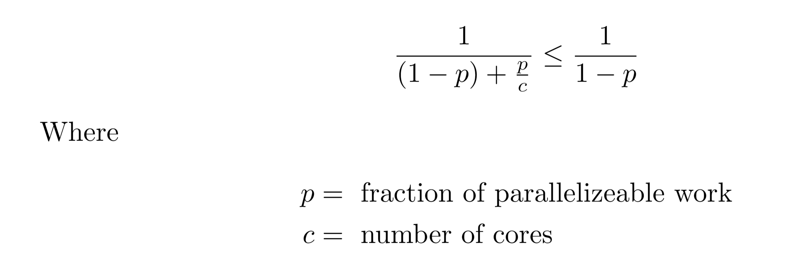
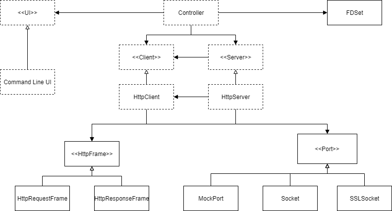
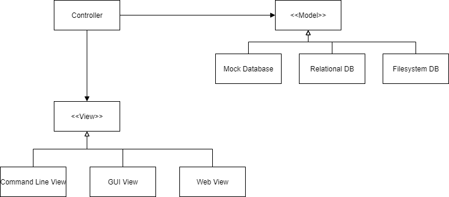

About
The goal of this project is to serve both as a resource for someone new to the language and a reference. For those learning the language for the first time, there's quite a bit of detail contained in this, and I wouldn't expect you to read all of it, much less know all of it from memory.
Through this guide we'll look briefly at tons of aspects of C++. My biggest goal is to at least guide you in the right direction for more information, or give you the names of somethings that might be able to help you during your programming journey. In my experience learning C++ on my own, I felt that I picked up some bad habits from having a less than ideal base knowledge. I don't claim this guide is the end-all, be-all, one stop best place to learn C++ (or even anywhere close to it), but my hope is that I'm able to relay some advice I gleaned from the experienced developers and resources I felt changed the way I write C++. Hopefully, I'm able to start you down a path of writing idiomatic and clean modern C++, and point you in the right direction towards more information. I also hope I'm able to start good software engineering habits in those newer to the field. See the other resources page for books that I think helped me a ton.
Please feel free to reach out with comments, criticisms, or questions, and let me know if you spot a typo, mistake, or other error.
- 08/19/2021
"C makes it easy to shoot yourself in the foot; C++ makes it harder, but when you do it blows your whole leg off."
- Bjarne Stroustrup
Getting Started
First, let's get all of our tools setup. The most out of the box setup would probably be the Visual Studio IDE. However, for this book I'll be using tools that are typical in a Systems programming setting. Windows users might want to consider setting up WSL or using Cygwin
In any case, the first thing you'll need is a C++ compiler such as g++ and while we're at it, CMake as well.
Linux users may simply run sudo apt install g++ cmake -y. Furthermore, we'll want a text editor. I would suggest Visual Studio Code.
If you want to be hardcore you can also use Vim or anything else you would prefer.
If you use Visual Studio (the IDE not VS Code), MSVC and CMake are installed when you select the C++ Desktop Development package in the installer.
You're more than welcome to use an IDE, but I will be giving instructions for operating on the command line. The GUIs and IDEs should be rather self-explanatory though. Due to the nature of working on embedded systems, I would suggest getting used to using the command line one way or another. You never know when the team laptop's UI dies...
C++ has a Standards Committee which agrees upon the specifications of the language. From there different vendors such as GNU and Microsoft implement their own compilers which adhere to the language specification. Furthermore, since 2011 the Standards Committee has agreed to release a new specification every 3 years. For this book we will be using C++17, and I will talk about a few points in C++20, but I will explicitly note when topics only apply to C++20.
So, enough introduction! Let's get started!
Hello World
Let's get coding! Create a file called main.cpp. Common file extensions for C++ source code are .cpp, .cc, and .cxx. Here's a Hello World program in C++
#include <iostream>
int main() {
std::cout << "Hello World" << std::endl;
return 0;
}
In the first line, we have this #include statement. This is a preprocessor directive which includes a header file into our current source file.
We'll talk more about this later, but for now just know that this brings in the declarations of many IO utilities.
Next, we define our insertion point with the main() function. The int designates the return type as an integer.
In C++, the main function returns 0 on success, and a non-zero error code on failure. Here we just return 0. It's perfectly legal to not have the return statement in the main method.
In that case the return value is 0. This is a special property of the main() function only. Everything else needs an explicit return statement.
std::cout is an output stream that goes to standard out. Here we print the string "Hello World", and then add the newline character and flush the stream with std::endl.
If you just want a newline, you can just print "Hello World\n" directly, which is more efficient if you're doing a lot of printing since it avoids excess flushing.
<< is an operator defined for ostreams like std::cout. The left-hand argument is a std::ostream and the right-hand argument is data to put onto the output stream. We'll talk more about IO later.
To build and run our code. We can invoke g++.
g++ main.cpp -o hello_world
This will compile our code and produce an executable called "hello_world". Running it should yield:
Hello World
Hello CMake
We'll talk about CMake more in-depth later, but very quickly, what CMake does is abstract away the compiler from the build process. In the previous section, we explicitly invoked g++. But what if we have clang or msvc? That's where CMake comes in.
All CMake projects require a top-level CMakeLists.txt file which is used to generate the build files and invoke the compiler.
CMake makes it easy when we start to develop projects with many source files and when we want applications to be cross-platform.
In the same directory we put main.cpp, let's create a new CMakeLists.txt file.
cmake_minimum_required(VERSION 3.8)
project(hello_world)
set(CMAKE_CXX_STANDARD 17)
add_executable(hello main.cpp)
cmake_minimum_required sets the minimum cmake version that must be used to build the project. project(hello_world) creates a new Cmake project called hello_world.
set(CMAKE_CXX_STANDARD 17) sets the C++ version to C++17. CMAKE_CXX_STANDARD is a variable, and set() sets that variable to a value. Finally add_executable(hello main.cpp) creates a new executable from the source file main.cpp and calls it hello.
Notice how nothing here is specific to g++.
Next, run cmake -B out which will generate the build files in a directory called out. If you don't specify the output directory with the -B flag, the default output directory is the same directory as the
CMakeLists.txt file. To build it, cd into the out folder and invoke make.
This will invoke the compiler through CMake-generated Makefiles and compile the executable. Once again, this should produce a file called hello, which upon execution should result in:
Hello World
For Windows: Cmake will use the Visual Studio generator and create project files which can be opened in Visual Studio and built like any other project. Therefore, do not invoke make.
Making a Guessing Game
I think that a guessing game is the stereotypical first thing to make after Hello World, so let's do that.
To explore some more CMake features we'll be building off the previous "project".
In the same directory as main.cpp, add a new folder called guessing_game and create a game.cpp and another CMakeLists.txt file in that folder.
So your directory should look something like this:
project
| CMakeLists.txt
| main.cpp
|
|---guessing_game
| | CMakeLists.txt
| | game.cpp
| |
|---out
In the top-level directory we want to tell cmake to include a subdirectory in the project.
We do this with add_subdirectory(), so add the following line to the top-level CMakeLists file:
add_subdirectory(guessing_game)
Variables have scope in CMake like a programming language (CMake is Turing Complete). Thus, in the guessing game CMakeLists, we don't need to set the C++ version again. All we need to have is the following:
add_executable(guessing_game game.cpp)
Let's also enable all warnings. We can do this with the following in the top-level CMakeLists.txt.
if (MSVC)
add_compile_options(/W4 /WX)
else ()
add_compile_options(-Wall -Werror)
endif ()
add_compile_options adds compiler flags to all targets, whereas target_compile_options adds them to a single target (such as a single executable).
It's good practice to enable the highest warning level and treat all warnings as errors. The above snippet provides flags to do this depending on the compiler.
So this is the complete top-level CMakeLists.txt:
cmake_minimum_required(VERSION 3.8)
project(hello_world)
set(CMAKE_CXX_STANDARD 17)
if (MSVC)
add_compile_options(/W4 /WX)
else ()
add_compile_options(-Wall -Werror)
endif ()
add_executable(hello main.cpp)
add_subdirectory(guessing_game)
Now let's add some basic starter code.
#include<iostream>
int main() {
std::cout << "Guess a number:" << std::endl;
return 0;
}
This is basically just a glorified Hello World, but let's make sure our project was setup correctly.
Running cmake -B out again should generate a new folder guessing_game in the output directory.
Invoking make in the out directory should compile an executable guessing_game in the guessing_game folder.
Coding the Guessing Game
Don't worry about understanding everything right now, all these features will be explained in more detail later. I just want you to get a feel for C++ right now.
Generating a Random Number
Let's write a function to generate a random number. First include the <random> header.
auto getRandNumBetween(int min, int max) {
std::random_device rd; //use a source of randonness in the hardware
// another common seed is to use the current time
std::mt19937 generator(rd()); //rd() computes a seed for the mt19937 generator
std::uniform_int_distribution distrib(min, max);
return distrib(generator); // computes a random number between min and max
}
std::random_device is in it of itself, a random number generator of sorts.
It overloads the function operator() to allow the parenthesis syntax rd(), which is the same for calling a function.
random_device is known as a callable object because it overloads operator().
We use the number returned from operator() of the random device to seed a Mersenne Twister random number generator
by passing the computed seed from rd to the constructor of generator.
A constructor is a function used to initialize an object.
generator is then used as an argument to operator() of the uniform integer distribution between min and max.
Once again the uniform distribution is a callable object, something we'll talk more about later, but unlike rd, its operator() takes an argument;
namely the random number generator to use.
min and max are passed as arguments to the constructor of uniform_int_distribution.
Unlike main, this function has a "return type" of auto.
auto is not an actual type, instead it's indicating that the compiler should figure out what the return type is. In this case it's int.
I'll admit, that for something simple like this, I might use C's rand() function.
This function always returns an integer between 0 and RAND_MAX and is seeded by calling the function srand(seed).
So an alternative implementation would be:
auto getRandNumBetween(int min, int max) {
srand(clock()); //seed the random number generator with the current time
return rand() % (max - min) + min;
}
I'll stick to the previous implementation for the game.
I should also note that you should not use rand() for something that relies on randomness. 1
"The
library is what a random library wants to be when it grows up. As a result, beginners use rand()" - Bjarne Stroustrup
Getting User Input
Let's create another function to get input from the user.
auto getUserGuess() {
auto guess = 0;
std::cin >> guess;
return guess;
}
We first initialize a new variable called guess. Once again, let's use type deduction and declare this variable with auto.
We'll cover this more later, but you should generally always use auto.
It might seem like an extra letter to type now (as opposed to int which is the type the compiler will infer guess to be),
but it will save a bunch of headaches later.
Next, we parse whatever the user types in standard input as an integer, and store the result into guess. Finally, we return guess.
Now what if a user doesn't type a number? Well, the way we are parsing the input right now, any non numeric input will just be converted to 0.
This is not ideal. So instead, let's implement the function another way. We'll now need the <string> header for this:
auto getUserGuess() {
std::string guessStr;
std::getline(std::cin, guessStr);
return std::stoi(guessStr);
}
Here, we use std::getline to get a line from std::cin and store the result in guessStr.
guessStr is an output parameter, something you really should strive to avoid when creating your own functions.
Now what do we get when we type something that's not a number? Well we get:
terminate called after throwing an instance of 'std::invalid_argument'
what(): stoi
What's going on is that stoi has thrown an exception, std::invalid_argument. Any exception thrown out of main terminates the program.
This might seem worse, but we can improve upon this by catching the exception. Let's factor out the exception handling code and make a helper function.
auto getUserInput() {
std::string guessStr;
std::getline(std::cin, guessStr);
return std::stoi(guessStr);
}
auto printNonNumMsg() {
std::cout << "You may only guess integers." << std::endl;
std::cout << "Please guess again:" << std::endl;
}
auto getUserGuess() {
try {
return getUserInput();
} catch (const std::invalid_argument & exn) {
printNonNumMsg();
return getUserGuess();
}
}
getUserInput() is what previously was called getUserGuess().
Now getUserGuess() tries to get a number from the user, and if that fails with std::invalid_argument it will print an error message and recurse, trying again.
The catch block catches invalid_argument by reference which is denoted by &. So instead of copying the exception, we essentially copy the address.
We declare this reference const so we can't mutate it, which is good practice; you should make everything that can be const, const.
Besides being more efficient in many cases, passing by reference also allows this catch block to behave polymorphically and accept any
subtypes of std::invalid_exception(which there are none in the standard library, but it's always good to catch exceptions by reference for this reason)
Wiring it Up
Let's return to our main() function to finish the game.
First we'll get a random number and store it in a constant. Then we'll loop until the user's guess equals that number.
Since we won't be updating the range of possible random numbers during runtime, it's a good idea to make the min and max values constexpr.
This means that not only are the values constant, but they're also available at compile time.
Therefore, in the compiled code they don't take up space, instead the compiler just inserts the literal values into the code whenever they are used.
constexpr auto min_value = 0;
constexpr auto max_value = 100;
int main() {
const auto secretNum = getRandNumBetween(min_value, max_value);
auto guess = 0;
do {
std::cout << "Guess a number between "
<< min_value << " and " << max_value << std::endl;
guess = getUserGuess();
if (guess < secretNum) {
std::cout << "Too low!" << std::endl;
} else if (guess > secretNum) {
std::cout << "Too high!" << std::endl;
}
} while (guess != secretNum);
}
Here, we use a do-while loop, which is like a while loop except it always performs at least one iteration.
They can be harder to reason about and are somewhat controversial.
Notice we also declare secretNum constant since it cannot change.
We can use Uncle Bob's step-down rule and clean this up a bit by factoring out the prints into other function.
Basically, his idea is that a function should have only one level of abstraction. This one has a few: the high level getUserGuess() and getRandNumBetween() and the low level couts. So here's the final code:
Final Code
#include <iostream>
#include <random>
#include <string>
constexpr auto min_value = 0;
constexpr auto max_value = 100;
auto getRandNumBetween(int min, int max) {
std::random_device rd;
std::mt19937 generator(rd());
std::uniform_int_distribution distrib(min, max);
return distrib(generator);
}
/**
* @return the number input by the user
* @throw std::invalid_argument if the user doesn't type a number
*/
auto getUserInput() {
std::string guessStr;
std::getline(std::cin, guessStr);
return std::stoi(guessStr);
}
auto printNonNumMsg() {
std::cout << "You may only guess integers." << std::endl;
std::cout << "Please guess again:" << std::endl;
}
/**
* Prompts the user for an integer
*/
auto promptGuess() {
std::cout << "Guess a number between "
<< min_value << " and " << max_value << std::endl;
}
/**
* Gets a user's guess. Continues to prompt for a number if the
* user does not type a number
*/
auto getUserGuess() {
try {
promptGuess();
return getUserInput();
} catch (const std::invalid_argument & exn) {
printNonNumMsg();
return getUserGuess();
}
}
/**
* Displays a hint based on the user guess
* @param actual the real number
*/
auto displayGuessHint(int guess, int actual) {
if (guess < actual) {
std::cout << "Too low!" << std::endl;
} else if (guess > actual) {
std::cout << "Too high!" << std::endl;
}
}
/**
* Tells the user they guessed num correctly
* @param num the correct number
* @param tries the amount of tries to guess correctly
*/
auto displayWin(int num, int tries) {
std::cout << "Congrats! You guessed " << num
<< " correctly in " << tries << " tries!\n";
}
int main() {
const auto secretNum = getRandNumBetween(min_value, max_value);
auto guess = 0;
auto tries = 0;
do {
++tries;
guess = getUserGuess();
displayGuessHint(guess, secretNum);
} while (guess != secretNum);
displayWin(secretNum, tries);
}
One thing to note is that we define all of our functions before they are used. This is necessary in C++ because the compiler essentially compiles the code line by line, and it needs to know the definition of things before it sees it in use. It's a good idea to put the function definitions close to where they are going to be called. It's also good to keep functions within about 80 characters wide and 20 lines long. Is this a hard and fast rule? No, far from it but I think it's a nice guideline that can help keep functions short, which is generally accepted as easier to reason about and thus less error prone. Most of a developer's time is spent reading code, so it's worthwhile to put in the effort to make that part of the job easier.
Is this over-engineered? Probably. But I really think it's beneficial to start good habits now instead of having to unlearn bad ones later.
Something like a Monte Carlo simulation or an algorithm that relies on randomization to be efficient.
Basics
A great source of information would be A Tour of C++ 2nd Edition. C++ Primer 5th Edition is also very thorough but is more geared towards those without much programming experience.
If you're into video tutorials, I have heard that The Cherno Project is a good resource, although I've never watched them myself. I watched John Purcell whose videos are at a pace for completely new/beginner programmers.
"Software is like sex: it's better when it's free."
- Linus Torvalds
Control Flow
Here are some examples of control flow in C++
If
if(/* condition */) {
}
if(/* condition */) {
} else {
}
if(/* condition */) {
} else if(/* condition */) {
} else {
}
For Loop
for(/* initializer */;/* guard */;/* expression */) {
}
for(auto i = 0; i < 100; ++i) {
}
With for loops you can leave out one, or multiple of the parts of the loop such as:
auto i = // complex computation
for(; i < 100; ++i){
}
There is an actual difference between pre and post-increment (++). Applying ++ before a variable increments the variable and returns the new value.
Applying ++ after the variable returns the old value and increments the variable.
Thus, pre-increment can have better performance since it does not need to create a copy of the old value.
For integers, the difference is negligible but for iterators or a user-defined type that implements operator++(), this may be important.
While Loop
while(/*condition*/) {
}
do {
} while(/*condition*/);
Switch
auto num = // ...
switch(num) {
case 0:
{
// use {} to create a new scope for new variables
auto res = /* ... */;
break;
}
case 1:
// ...
break;
case 2:
case 3:
// this code executed when num is 2 or 3
// ...
break;
case 4:
// .. some code
[[fallthrough]] // denote that we intend this case to fall through
case 5:
// code executed when num is 4 or 5
break;
default:
// when num is everything else
}
//Simpler Example:
switch(num) {
case 0:
//...
break;
case 1:
// ...
break;
default:
break;
}
Switches are pretty much just glorified gotos, and we'll talk about how they work under the hood later.
The variable being switched upon must be an integral type such as a char, int, short, etc. Therefore, unlike other languages, strings don't work in switches.
The code will jump to the case labelled with the value that is equal to the variable being switched upon. From there it will continue executing line after line until it reaches a break.
This allows us to fallthrough from one case to another. Intended fallthrough should be avoided, but if necessary it should be labelled with the [[fallthrough]] attribute like shown above.
Infinite Loop
for(;;) {
}
while(true) {
}
If you leave out the guard of the for loop like shown above, a constant which evaluates to true is put in its place.
Break and Continue
for(/*...*/) {
if(/*...*/) break; //exit loop
else if(/* ... */) continue; //skip rest of code and go to next loop iteration
}
for(/*...*/) {
for(/*...*/){
if (/*...*/) goto dblBreak;
}
}
dblBreak:
goto is not something you generally want to use (or even have to).
Here's a funny story: the first time I needed an unconditional jump, I actually didn't know C++ had a goto, so instead I used inline assembly only to think how
pointless it was to write something so simple in assembly. And that's the day I discovered C++ did indeed have a goto.
The only good usage I can think of off the top of my head is to break out of nested loops like so. We first create a label by typing a name followed by a colon, then we put that name after goto to jump to it.
Comma Operator
The comma operator will execute the operations in order, from left to right but will only return the result of the last expression.
const auto y = 10, 20;
// y = 20;
const auto x = y++, ++y, y++;
// y = 23
// x = 22
Ternary Operator
This operator looks like <condition> ? <true_branch> : <false_branch>.
If the condition is true, it will evaluate the expression on the left side of the colon,
otherwise it will evaluate the expression on the right side.
const auto age = 10;
const auto free_time = age < 16 ? 8 : 1;
// free_time is 8
Further Reading
C++ Primer 5th Ed 1.4 - 1.4.4 and 5.3 - 5.5.3
Primitive Types
| Type | Typical Size |
|---|---|
| bool | 8 bits |
| char | 8 bits |
| short | 16 bits |
| int | 32 bits |
| long | 32 bits |
| long long | 64 bits |
The standard only stipulates that sizeof(char) == 1 and sizeof(char) <= sizeof(short) <= sizeof(int) <= sizeof(long) <= sizeof(long long).
Except for bool, these types can be signed or unsigned. The standard does not specify the size of bool.
char c; // [-2^7 to 2^7 - 1]
unsigned char c2; // [0 to 2^8]
We also have floating-point types: float, double and long double.
The standard only requires that double provides at least as much precision as float and that long double provides at least as much as double.
On x86 systems, float is typically 32 bits, double is typically 64, and long double is commonly 80 or 128.
C++ also has literal type specifiers to convert a literal value to a certain type.
A literal is something that's already a value and cannot be assigned such as 42 or 0.0.
auto f = 0.1f; // f is a float
auto d = 0.1; // d is double
auto u = 10u; // unsigned int
auto lng = 20l; // long
auto ulng = 20ul; // unsigned long
auto ullng = 200ull; // unsigned long long
auto i = 200; // i is int
auto ch = 'H'; // char
Finally, we can also input numbers in different bases such as hex, octal or binary and use the single quote ' as a digit separator to make things more readable.
auto h = 0xA; //h is the integer 10
auto oct = 024; //oct is the integer 14
auto bin = 0b11; // bin is the integer 3
auto pi = 3.14159'26535'89793'23846'26433'83279'50288;
Hex and binary are pretty important in systems programming so make sure you read up on that if you're unfamiliar.
Implicit Type Conversions
Implicitly, signed values become unsigned when you mix the two. Thus, we never want to have signed/unsigned mismatches and that's one thing auto helps prevent.
const auto num = 10;
auto n2 = num - 20u; // 2^32 - 10
The following type conversions are implicit, where a type can be converted to any type to the right of it:
char -> short -> int -> long -> long long -> float -> double.
bool can be implicitly converted to any integral type. true becomes 1 and false becomes 0. Integral types convert to bool where 0 is false and everything else is true.
If a value goes out of range on an unsigned integral type, the value wraps back around from the lowest point in that type's range. Out of range on signed types is undefined.
Further Reading
C++ Primer 2.1 - 2.1.3
Variables
We've already used quite a lot of variables already. So we'll skip the formalities.
Const Correctness
As I previously mentioned, anything that can be const should be const. A const "variable" is one whose value cannot change.
It's good practice to make const variables the default and mutable variables the exception.
Mutability makes things harder to reason about and const correctness is another form of type safety.
Like an unsigned vs signed primitive type, a const and non-const type are two fundamentally different types.
A non-constant can be automatically converted to a constant version of the type, but not the other way around.
const auto num = 23;
auto mutNum = 32;
num += 10; //error
mutNum += 10; //good
Initialization
In many languages, when you declare a variable, it is set to a default value.
This isn't the case in C++ since there's no reason for the extra instruction to set a default if the programmer is going to set it to something else anyway.
It's part of the "pay for only what you use" mentality of C++.
Thus, if you don't initialize a primitive variable to a value, it essentially holds a garbage value.
What really happens is it will just keep whatever bytes in memory happen to be where the variable now occupies.
Therefore, you should always initialize your variables. This is one of the reasons why it's good practice to
declare variables to have type auto: the compiler needs an initial value to figure out what type the variable is,
so using auto will prevent you from forgetting to initialize your variables.
Now you might be asking: "now hold on, you're saying to manually give each of my variables a default value? So then what's the point of the compiler not doing it?" Well, if you introduce the variable immediately before you need it (and no earlier), chances are the initial value you set it to has some bearing on your computation. So you don't necessarily initialize a variable to some default value every time, you initialize it with something that should be based on the logic of your program.
int a;
std::cout << a << std::endl; // this could print any integer. We don't know what
int powi(int base, unsigned exp) {
auto res = 1; // initial value of 1 has bearing on computation
for(auto i = 0u; i < exp; ++i) {
res *= base;
}
return res;
}
Notice how res is introduced right when we need it, and therefore has an initial value which has a meaning for our computation.
Moreover, defining variables as late as possible (and in the smallest scope its needed) makes code easier to read.
Global and static variables, on the other hand, are initialized to their default value. For most basic data types this is 0.
Names
Part of the challenge of programming is giving good names to variables. You want your variables to be self-documenting. Consider the following:
long timeout; ///< socket timeout in milliseconds
vs
long sockTimeoutMs;
or even better:
std::chrono::milliseconds socketTimeout;
Notice we don't need to repeat information encoded by the type.
We also want to be consistent with our variable names. A good rule of thumb is one word per concept.
For example, it's best not to have some names with length and others with size when they refer to the same idea such as the size of a container.
Scope
The variables we have seen have automatic lifetimes. This means that when their scope ends, they are popped off the stack. The stack is an area in memory. Each program is allocated its own stack of limited size. When a variable is declared, it is pushed on the stack. When a variable goes out of scope, the variable is destroyed and popped off the stack. Having a stack structure allows variables to be destroyed in the reverse order that they were declared. This allows one variable to depend on another. We may talk more about this later but for now, know that these variables of built-in types we have been working with are pushed on the stack when they are declared and popped off when they go out of scope.
So what is this scope I talk about?
A scope roughly corresponds to a block, which are delimited by {} pairs.
The local scope is the scope of a function; variables in this scope are destroyed when the function returns.
The class scope is the scope of class members. Values in this scope are initialized when an instance of the object is created
and destroyed when that same instance is destroyed.
Finally, the namespace scope is the scope of a namespace. Variables in this scope are destroyed when the program ends.
{
auto a = 3;
// a can be used here
} // a goes out of scope here
// a cannot be used here
class Foo {
// start class scope
int a;
public:
void bar() {
// start function scope
if (a == 3) {
// inner scope for if
int c = a * 3;
} else {
// scope for else
// c cannot be accessed here
}
// c cannot be accessed here
} // end function scope
}; // end class scope
int main() {
Foo foo; // Foo.a created here
} // Foo is destroyed here, and so is Foo.a
Globals
Global variables are variables that are defined outside any scope (not within a function or curly braces). Unless they are immutable, you should avoid globals. In the words of Bjarne Stroustrup: "global variables should have names starting with //". This is because the order of variable initialization between compilation units (different source files) is undefined. So if we use a global variable outside the source file it is defined in, then there is the chance we may try to use a variable that hasn't been created yet or has already been destroyed. Specifically, this occurs if we use a global in the constructor or destructor of a class with a global instance. A constructor is a function that is called at the initialization of a variable, and a destructor is called at the destruction of a variable. More on this later.
Globals also make code harder to reason about since it's harder to tell when a function or class depend on them. This is something we'll talk about more later.
const auto globalVar = 10;
int main() {
auto localVar = 0;
return 0;
}
Further Reading
A Tour of C++ 1.4 - 1.6
Clean Code Chapter 2 (I highly suggest you read this)
C++ Primer 2.2 - 2.3
References
References are basically aliases for another variable. The reference refers to the data owned by a different variable.
int number = 5;
int & numRef = number;
numRef = 10;
std::cout << number << std::endl; // 10
Although we changed the reference, the variable number that it refers to also changed.
This is because both number and numRef share the same memory location. We can think of number as owning the actual integer data, and numRef as owning an address that points to that data.
number |
|---|
| 5 |
numRef |
|---|
&number |
We can also demonstrate this with auto as well. It works the exact same as you'd expect.
auto data = 0.10;
auto& data2 = data;
data = 3.14;
std::cout << data2 << std::endl; //3.14
Since a reference basically just stores the address in memory of the data, then for complex types references prevents excess copying of the data. Instead of copying, the reference binds to the object it refers to.
std::string state = "New York";
auto cpyOfState = state; // copy the string
auto & noCopy = state; // reference
References can be const. A const reference cannot mutate the underlying data it refers to.
const auto & state2 = state;
state2 = "Hawaii"; // error
state = "Alaska";
std::cout << state2 << "\n"; //Alaska
We cannot have references of references and references must always be bound upon initialization.
int & ref; // error, reference not bound
Dead References
A reference must have a lifetime that is completely within the lifetime of the object it refers to. Consider the following:
std::string & getStr() {
const auto msg = "Hello " + std::string("World");
return msg;
}
auto& msg2 = getStr();
std::cout << msg2 << "\n";
msg goes out of scope, and its memory is freed at the end of getStr(). Yet we are returning a reference to msg past the end of its lifetime!
So msg2 is a dangling reference (or dead reference) because the data it refers to is invalid.
So what's going to happen here? We don't know. Our program might terminate with a memory access violation, it might seem to work and occasionally print garbage, or it might set our computer on fire.
It's undefined behavior.
If you're compiling on -Werror or /WX the compiler will stop you from doing this.
Here's another example: (which won't compile)
std::vector<std::string&> lotsOfText;
void process() {
std::ifstream reader("someFile.txt");
std::string book{
std::istream_iterator<char>(reader),
std::istream_iterator<char>()};
// read entire file into book
// file could be huge, we don't want to copy that
lotsOfText.push_back(book);
}
void consume(unsigned id) {
std::cout << lotsOfText[id] << std::endl;
}
book goes out of scope at the end of process(). Yet we have no idea when consume() will be called.
By that time, the data referred to by the references in lotsOfText will likely have gone out of scope, and consume() will access a dangling reference.
In general (and we'll talk about this later) you don't want containers (such as std::vector) to store references.
In fact, the compiler won't let you. This doesn't mean you're forced to copy the data however, and we'll see some neat features that deal with this in later chapters.
When creating a reference to a variable. The reference must not drop any qualifiers.
Qualifiers are things such as const or volatile that qualify the type of the variable. This rule ensures that no const variable has its data mutated out from under it.
const auto num = 5;
int& num2 = num; // error
const int& num3 = num; //good
Pointers
The & symbol when it comes before a name can be read as "address of" and * before a name is known as the dereference operator and can be read as "value of".
The result of the & operator is an address to the underlying value. An address is just a number, but it cannot be stored in a regular integral type.
It must be stored in a pointer. As we saw with references, a pointer does not own the value, it owns a copy of the address which points to the underlying data.
Pointers are arithmetic types, and adding or subtracting from them will add or subtract the size of the type that they point to from the address.
Unlike references, pointers don't have to be initialized. This is not very safe. At the very least, you should set invalid pointers to nullptr, a value reserved for invalid pointers.
Trying to dereference an invalid/dangling/null pointer is undefined behavior. With references, creating such deadly situations is much harder since a reference must always be initialized with a value,
and most compilers will stop you from taking a reference beyond the lifetime of the object it refers to in some cases.
int num = 5;
int * num2 = #
*num2; //5
*num2 = 10;
num2++; //increment the address stored in num2 by sizeof(int)
//now num2 is a dangling pointer
num2 = nullptr; // mutate the pointer itself, not its data
num; //10
A const that goes before the * in the type declaration of a pointer means that the data pointed to cannot change.
A const after the * means that the address the pointer stores cannot change.
const char * hello = "hello";
*hello = 'g'; //error
hello = "goodbye"; // good
auto num1 = 5;
auto num2 = 10;
int * const num = &num2;
*num = 10; //good
num = &num2; //error
const int * const num3 = &num2;
*num3 = 20; //error
num3 = &num1; //error
In the use cases I've demonstrated so far, a reference is preferable to a pointer unless its data truly cannot be known when it is declared. Pointers are really remnants from C, and there are safer C++ mechanics to do the job of pointers in most cases.
Further Reading
A Tour of C++ 1.7
Functions
As we have seen, if functions are not declared and defined separately, we can use auto to have the compiler use type deduction on the return type.
Otherwise, just like function parameters, the return type must be specified.
void printHello(); //declaration
int main() {
printHello();
return 0;
}
void printHello() {
//definition
std::cout << "Hello\n";
}
Declaring a function ahead of its definition like in the above snippet is known as forward declaring. It allows us to not have to manually ensure that every function is defined in topological order. It basically tells the compiler "hey, I'm going to define this later so if you see this name before you see its definition don't freak out."
void is a special type that essentially means there is no type. We can use it for functions that don't return anything.
Functions can be pass-by-value or pass-by-reference. When a function is pass-by-value, the function parameter gets copied. When it's pass-by-reference the actual object is not passed to the function, but the address of the object is.
void add(int a) { // pass by value (copy data)
a += 5;
std::cout << a << std::endl;
}
void addRef(int & b) { // pass by reference (bind alias to same piece of data)
b += 5;
}
int main() {
auto num = 0;
add(num);
// num is still 0 but 5 is printed
addRef(num);
// num is now 5
return 0;
}
In add() a new copy of num is created which is called a. a goes out of scope when add() terminates.
In addRef(), b binds to num, so b and num share the same object and the same data.
In addRef(), b is used as an output parameter because the result of the function is returned in one of its parameters.
You should avoid output parameters.
This is because when you're looking at the call site of addRef(), there's nothing to tell you that num is mutated,
and you may reasonably expect that num would retain its value.
Does that mean we shouldn't pass by reference? No! Far from it. We can pass by const reference.
int addRef2(const int & a) {
// a += 4; // error, a cannot be mutated
return a + 5;
}
int main() {
auto num = 0;
num = addRef2(num);
// num is now 5
// from just looking at this, it's pretty clear num is changing
}
In this example, you can look at the call site of addRef2() and pretty clearly see that num is being mutated.
For built-in types, passing by reference is likely tantamount to premature pessimization. On a 32-bit OS, and address will be 4 bytes, and a 64-bit OS will have 8-byte addresses. Therefore, there would be less data being copied if we just passed by value since an address is at best the same size as an integer (in almost all implementations, but not necessarily). However, we will soon see how this is very useful.
Function Overloading
Functions with the same name can be overloaded by having different argument types or different amount of arguments. The function with arguments more closely matching the parameters passed is the one called.
void func1(int); //version a
void func1(char); //version b
void func1(double); //version c
void func1(char, int); // version d
short ss = 10;
func1(ss); // version a
func1('H'); // version b
func1(0.1f); // c
func1(true); // a
long l = 100;
func1(l); // a
func1(false, 100ll); // d
If there are multiple equally good matches, the compiler won't guess and will not compile. Likewise, if no parameter is implicitly convertible to the type of any overload's arguments, then compilation fails.
Other Notes
We can also define the return type after we declare the function parameters. This is known as a trailing return type, and it looks like this:
auto foo(int a, int b) -> int {
return a - b;
}
The evaluation order of function arguments is undefined. So given the following:
int i = 0;
auto res = foo(i++, ++i);
There are two possible execution orders:
-
b = ++i = 1a = i++ = 1res = a - b = 0
-
a = i++ = 0b = ++i = 2res = a - b = -2
Function Design
The first rule of functions is that they should be small.
The second rule of functions is that they should be smaller than that 1
Making functions small organizes sections of your code into named units. It's easy to know what your code does when it's part of a named function with a narrow scope. So how small is small? Well most should rarely hit 20 lines. A good rule of thumb is 80 characters wide by 20 lines long or smaller. Not only are small functions easier to reason about and debug, but such functions are readable for most ways in which you might be viewing it. For example, when developing on a PC with your code fullscreened on a 27" monitor, it's pretty easy to read lines of code over 150 character long. However, if you want to do a side-by-side diff comparison, work on the codebase from your 15" laptop with, or have other developers who might use a "busier" IDE layout, those 150 character lines become quite annoying. Vertical size is less annoying to deal with, but it's still quite nice when you can view an entire function in one glance without scrolling on various different viewing modes.
Furthermore, functions should do one thing. How do you know they do one thing? Well you should be able to describe it in about one sentence without using a conjunction like "and."
Example:
if(person.getAge() >= 18 && person.getAge() < 25
&& person.getHighestEdu() == EducationLevel::Highschool
&& !person.livingAtHome())
{
// if person attended college after HS
}
OR
inline auto didAttendCollegeAfterHS(const Person & person) {
return person.getAge() >= 18 && person.getAge() < 25
&& person.getHighestEdu() == EducationLevel::Highschool
&& !person.livingAtHome();
}
// ...
if(didAttendCollegeAfterHS(person)) {
}
Notice how by creating a helper function, we were able to encode the comment in a name.
Commenting what the code does is unnecessary since the function name says it all.
If you find yourself commenting what code does, that's a good hint that you might want to make a function.
We also see how didAttendCollegeAfterHS() does just one thing: it just determines if a person attended college after high school.
We also pass by const reference since the function only uses accessors of Person and doesn't do any mutations.
When passing by reference, the reference should always be const unless you are mutating it.
For another example, we saw in our guessing game how we turned this:
int main() {
const auto secretNum = getRandNumBetween(min_value, max_value);
auto guess = 0;
do {
std::cout << "Guess a number between "
<< min_value << " and " << max_value << std::endl;
guess = getUserGuess();
if (guess < secretNum) {
std::cout << "Too low!" << std::endl;
} else if (guess > secretNum) {
std::cout << "Too high!" << std::endl;
}
} while (guess != secretNum);
}
into this
int main() {
const auto secretNum = getRandNumBetween(min_value, max_value);
auto guess = 0;
auto tries = 0;
do {
++tries;
guess = getUserGuess();
displayGuessHint(guess, secretNum);
} while (guess != secretNum);
displayWin(secretNum, tries);
}
Once again, we see that the different tasks done during the main loop are easier to read since they essentially have labelled names. We could be more pedantic and make the loop its own function as well, but this function is 10 lines long, so I felt that was good enough. I like functions to be of a size so that in one "eye-space" I can take in the entire function. So no scrolling, moving my head, etc.
Functions should also not use output parameters, and have a small amount of arguments. Generally shoot for no more than 4 arguments. Also, if you have parameters of the same type next to each other (and order matters), you can encode the order in the function name or separate the parameters by some argument of a different type (if there are more arguments).
Ex.
void assertExpEqAct(int expected, int actual);
vs
void assertEquals(int expected, int actual);
A user of assertExpEqAct() wouldn't have to look up the order of arguments in the docs since the order is encoded right into the name.
Here's another example:
using it = std::vector<char>::iterator;
void copy(it dstBegin, it dstEnd, it srcBegin, it srcEnd);
vs
using it = std::vector<char>::iterator;
struct Range {
it begin, end;
}
void copyDstFromSrc(Range dst, Range src);
Notice how the first function was missing an abstraction which led to having 4 parameters.
In the second function, we created a struct to organize the parameters into an abstraction.
In C++20, this can be done with ranges and std::span.
We should also prefer pure functions; a pure function has no side effects, and returns the same output for the same inputs. It should not mutate variables or have any other effect other than the value it returns.
Inline Functions
Earlier you saw me use the inline keyword.
This keyword suggests to the compiler that the function can be inlined.
What is an inlined function?
Well, we'll cover the details later, but basically every time you call a function the state of the current function must be saved,
you must jump to the new function,
then you must restore the state of the old function and jump back.
Abstractly, this process can be viewed as having to push an activation record onto the stack and then popping it off.
An activation record basically contains all the data like arguments being passed,
where the function is called from (so it can jump back), and the state of the callee.
Sounds like a complex task? Well it sort of is. When a function is inlined, the compiler puts the body of the function right at the call site.
So all this jumping and state saving doesn't need to occur. Let's look at another example of factoring out some code into an inline function:
constexpr auto expFac = 0.83;
const auto pts = (person.getAge() * person.getGPA()
+ expFac * person.getName().size()) * year;
VS
inline auto getExperience(const Person & person) {
constexpr auto expFac = 0.83;
return person.getAge() * person.getGPA()
+ expFac * person.getName().size();
}
const auto pts = getExperience(person) * year;
For most compilers, the generated machine instructions will be pretty much the exact same, but the second option gives us greater readability.
A function can only be inlined if it is defined and declared in the same place. So an inline function cannot have separate declarations and definitions unless the declaration and definition are in the same file.
Constexpr Functions
Like constexpr variables have values that are available at compile time, constexpr function have computations that can be available at compile time.
If you pass non-constexpr arguments to a constexpr function, the function will behave normally,
but if you pass literals or constexpr variables to a constexpr function,
the result will be computed at compile time, and the literal value will be inserted in the code.
constexpr functions are implicitly inline as well.
Ex.
constexpr int fact(int a) {
if(a <= 1) return 1;
else return a * fact(a - 1);
}
constexpr auto my_number = 10;
int num = fact(my_number);
// num = 3628800 will be in the compiled binary
int num2 = fact(4);
// num = 24 will be in the binary
int num3 = fact(nonConstexprFunc());
// will behave like a normal function
We will explore more about constexpr and other ways of performing compile time calculations later.
Further Reading
A Tour of C++ 1.3
Clean Code Chapter 3 (I highly suggest you read this)
C++ Primer Chapter 6
C++ Core Guidelines Functions
Clean Code p. 34
Operators
As we will see later, operators can be overloaded to do arbitrary things. However it is good practice to keep operators' semantic meaning. Operators are really just regular functions with a special way to call them.
Basic Binary Operators
Binary operators operate on two arguments.
+-/*=+=- add an amount to a value-=/=*===- check for equality!=- check for inequality<><=>=&&- logical and||- logical or
It's important to note that = operators (=, +=, etc.) all return the new value that was set. For example:
auto x = 10;
auto y = 20;
x = y += 30;
// sets y to 30 + 20 (50) and returns the new value of y (50)
// this value is then assigned to x
auto test_var = 20;
if (test_var = 30) {
/*
* This is a common bug to be on the look out for!
* Here we assing test_var to 30, then the = operator
* will return the new value of test_var (which is 30)
*
* Then the if statement will check if the result of the
* guard `test_var = 30` is true. Since this expression
* evaluates to `30`, which is not 0, the if statement
* sees the result of the expression as `true`
* and enters the if-block
*
* To test if test_var equals 30, we want
* `test_var == 30`
*
* This is yet another reason to prefer `const` variables
* If `test_var` was declared as `const auto`, then the
* compiler would have given us an error.
*
* Most compilers will give a warning about this, so if
* you compile with the option to treat warnings as errors
* (which you should), the compiler will catch this
* even if `test_var` is not a constant
*/
}
Here are some other quick examples:
auto x = 5 / 3;
// x is 1 (division on integers performs integer division)
auto x2 = 5 / 2.0;
// x2 is 2.5
auto b = 5 * 3 + 2;
// b is 17
b += 10;
// b is 27
b \= 2.0;
// b is an integer
// so this will do double arithmetic, then convert it
// to an int by storing it back in b
Basic Unary Operators
Unary operators operator on one argument
!- logical negation++- prefix and postfix increment--- prefix and postfix decrement
The difference between prefix and postfix increment/decrement is that the postfix versions increment the variable and return the old value.
auto m = 10;
auto n = m++;
// n is 10, m is 11
auto p = ++n;
// p is 11, n is 11
Bitwise Operators
|- bitwise or^- xor<<- logical left shift>>- logical right shift~- bit negation (unary)&- bitwise and|=,^=,<<=,>>=,&=
The left and right bitshift operators shift the bits to the left and right respectively, shifting in a 0. These operators also have the effect of multiplying or dividing by powers of two.
With the exception of bitwise negation, these operators are all binary operators.
The right shift and left shift operators do not take into account the two's complement sign of the number. In other words, they always shift in 0 bits in the "empty spaces" that they create.
You may notice that we use << and >> for stream in and stream
out. For example (std::cout << "Hello world\n";).
This is an example of operator overloading. In C++, << and >>
are commonly used for streams for input (right shift), and output (left shift)
0b111 << 2;
// 0b11100
// shift 2 bits left
// also multiply by 2^2
0b101 >> 3;
// 0b000
// shift 3 bits right
// also divide by 2^3
~0b101;
//0b010
0b0111 & 1;
// 0b0001
0b101110 ^ 0b010011;
//0b111101
0b1001 | 0b1010;
// 0b1011
# Headers
(pun intended)
Header files are a way to separate an interface from an implementation and declarations from definitions. We'll discuss how the compiler works in more detail later.
We have already seen header files with the #include preprocessor directive. The preprocessor is a program that runs before the compiler that handles
directives that begin with #. The preprocessor manipulates the text of the source code directly.
Header files contain the declarations of classes, structs, enums, and functions, and in some cases a few definitions as well. A declaration basically tells the compiler that some class, struct, etc. exists, but doesn't tell the compiler exactly what that thing is.
struct MyStruct; // declaration of MyStruct
// definition of MyStruct
struct MyStruct {
int foo(); // declaration of foo
};
int MyStruct::foo() {
// definition of foo
return 0;
}
Remember how the compiler needs to know the definition of a function before it's used, unless it's forward declared? Well a header file essentially provides the forward declarations for a bunch of functions and objects so that we only need to provide the definitions in one source file. Header files are a way to put all the declarations in one place and use these declarations in all files that need them. Files that need the declaration can include them by including the header file.
Every source file, and all header files it includes make up a single translational unit. Each translational unit is compiled independently. A single translational unit may only contain one declaration for each function, class, etc. A single program may only contain one definition for each object. The purpose of the header is to provide the declarations of objects defined one translational unit to other translational units.
The header/source separation is also a great way to provide separate client and implementor views of a module. A client need only look at the declarations and relevant comments in a header file, while an implementor would work with the source code in the source file.
Furthermore, #include directives are a good way to identify the dependencies of a module.
Header files typically end in .h or .hpp.
Some header files in the standard library allow the .h to be omitted when including them as you saw with directives such as #include <iostream>.
Let's take a look at an example. Let's create some basic math functions:
my_math.h
#pragma once
#ifndef MY_MATH_H
#define MY_MATH_H
/**
* @return base^{exp}
*/
int powi(int base, int exp);
/**
* @return base^{exp} % mod
*/
int powMod(int base, int exp, int mod);
#endif
#ifndef is a preprocessor director standing for "if not defined".
So if the macro MY_MATH_H is not defined, then we define it and declare powi() and powMod(). This is known as an include guard.
The reason we need this is to prevent including a header file multiple times.
For example: perhaps another header your_math.h requires one of these definitions, so it includes my_math.h.
Now a client might make the mistake of including both your_math.h and my_math.h separately.
The client shouldn't have to know that my_math.h is already included in your_math.h, but without include guards they would.
This is because the preprocessor basically replaces include directives with the contents of the file that's being included.
Thus, without include guards, declarations can be repeated in the same file, which will cause a compilation error.
In this example, without include guards powi would be declared once when your_math.h includes my_math.h,
and a second time when the user includes my_math.h.
We cannot have multiple declarations with the same name and parameters in the same file; include guards prevent this.
The first time the preprocessor reads a header, a macro (in this case MY_MATH_H) is defined.
The next time it's read, the #ifndef (if not defined) directive will prevent re-declaring the functions.
#pragma once is a non-standard way to do the exact same thing.
All the major compilers (g++, MSVC, clang) support #pragma once, but it's perfectly legal for a compiler not to.
For portability, use include guards. However #pragma once may be more efficient, and a compiler that doesn't support it won't complain about it;
for maximal benefit put #pragma once on the first line of a header, and then include guards.
(Now do I use include guards? Hardly; I haven't ran into a compiler where #pragma once wasn't supported)
Now we need to define the functions:
my_math.cpp
#include <my_math.h>
int powi(int base, int exp) {
// ...
}
int powMod(int base, int exp, int mod) {
// ...
}
To use these functions, say in main.cpp we just need to include the header file.
main.cpp
#include <my_math.h>
#include <iostream>
int main() {
std::cout << powMod(10, 13, 99);
}
There are a few cases where definitions can (and must) be in the header file.
An example would be a function declared inline.
However, normal function definitions must be in a separate file.
This is to prevent duplicate definitions of a function from getting into the binary.
If this happens, the linker will be unable to know which definition to use.
The linker is a program that is executed after the compiler which links object definitions to where they are used.
So how are duplicate definitions introduced?
Well consider two independent files file1.cpp and file2.cpp.
Neither depend on each other and both use powi() so they both need to include my_math.h.
If the definition for powi() was in the header, then we would have just introduced duplicate functions with the same name and parameters
(so they can't be overloads).
This is why definitions are in source files and declarations are in header files.
Both file1.cpp and file2.cpp need forward declarations for powi().
Instead of having multiple declarations in each source file, we put them in a header file to promote code reuse.
Let's go back to the my_math example.
First the preprocessor runs to put the content of the included header files into main.cpp and my_math.cpp.
It replaces the #include with whatever the included file contains.
Then the compiler compilers my_math and main into object files.
The linker will then link together the definitions in my_math.cpp with the declarations in main.cpp.
Without the declarations, the compiler would fail because it wouldn't know what powi and powMod were; they would be undeclared names.
If we provided the definitions and the declarations in the header file, then the linker would fail because it would find
multiple definitions of the same thing in the program, and not know which one to use.
We could, however, scrap the header file entirely and declare and define powi and powMod in each source file.
In this case, the functions would be compiled completely independently, and the linker would not try to link the definitions
because they were not declared in a header file.
The obvious problem with this idea is that we'll end up duplicating a lot of code.
Avoid cyclic dependencies like the plague.
Comments
// single line comment
/*
Multi line comment
*/
We'll soon use Doxygen to turn comments into HTML documentation. But for now, I want to point out a few small things.
- We should avoid duplication in comments. This includes stating the obvious and literally repeating yourself.
- Comments should be short and sweet
- When you write a comment, think about how you might be able to convey the information in the language itself (for example, a better variable name). If you cannot, then comment.
- Use comments to explain a decision, and communicate information to other programmers like exception guarantees, side effects, etc.
For writing documentation, you can use Javadocs style
/**
* Desc
* @param
* @return
* @throw
* @author
*
*/
There's a lot to say about this, but others have already said it better...
Further Reading
A Tour of C++ 3.2 Separate Compilation
Clean Code Chapter 4 Comments
Pragmatic Programmer The Evils of Duplication and It's All Writing
Getting Organized
Functions are a great start at organizing code. But let's look at what else C++ has to offer.
"So if you want to go fast, if you want to get done quickly, if you want your code to be easy to write, make it easy to read."
- Uncle Bob
Classes
C++ provides the access modifiers private, public, and protected.
These modifiers define sections of definitions that belong to that modifier instead of having to specify it for each member.
Public members are part of the class's public interface and accessible to everyone, private is accessible to itself and friends only and protected is accessible to itself, friends, and subclasses.
A class's members are private by default.
The class scope begins at the opening { after the class name and extends to the closing one.
Members declared in this space are part of the class scope, and instances of them are destroyed when their owning instance object is destroyed.
A special function known as a destructor is called when the owning instance is about to be destroyed, and similarly a constructor is called to create an instance of the class.
class Person {
const int ssn; //private member
public:
// public members
std::string name;
int age;
protected:
std::string homeAddress;
public:
Person(const std::string & name) {
// constructor
ssn = 0;
this->name = name;
age = 0;
}
~Person() = default;
// destructor, we don't need anything special for this class
// so we set it equal to default to use the default implementation
// we didn't even have to declare the destructor in this case,
// the compiler would generate one with the behavior we need
Person(const std::string & name, int age, const std::string & addr) :
ssn(0), name(name), age(age), homeAddress(addr) {}
// This is a constructor initialization list
// its more efficient then setting the values in the actual
// constructor
};
Person p1("Harry");
Person p2{"Harry"};
const auto p3 = Person("Joe", 20, "500 Research Drive");
const auto name3 = p3.name;
const auto p4 = Person{"Jimmy"};
Person p5 = "Kyle";
Like any other function, we can provide overloads for constructors so that we can construct the object with different amounts/types of parameters. A constructor can have a constructor initialization list. This is done by specifying the initial values of member variables following a colon using function syntax. The advantage of this is that you only set the variable once. Otherwise, the members are initialized, then the constructor is called which may assign them to a different value.
Members values are initialized top-to-bottom, left-to-right, and the order of initialization in the initialization list must match.
Therefore, in this example I could not set the value of ssn after I set the value of name in the initializer list because ssn is above name and therefore is initialized first.
The reason C++ handles initialization this way is so that if construction of an object fails and only some members were initialized, we can safely destroy the members that we did get a
chance to initialize and ignore the ones that we didn't.
The destruction occurs in reverse order of initialization.
Notice that ssn is a const member, yet I'm still able to "change" its value in the constructor.
const members may be set once and only once, and that can occur only in the constructor initialization list or where they are declared if they are inline members (more on this later).
Finally, I'd also like to point out the constructors that takes one argument allow implicit conversion from the type of that argument to the class.
This is demonstrated by the line Person p5 = "Kyle";. If this is not the semantics you intend, you should declare the constructor explicit like so:
explicit Person(std::string & name) //..
Another example: (not complete)
class Socket {
unsigned sock;
public:
Socket() : sock(socket(AF_INET, SOCK_STREAM, 0)) {
std::cout << "Socket initialized!\n";
}
~Socket() {
closesocket(sock);
std::cout << "Socket destroyed\n";
}
bool writeAll(const std::string & msg) const {
unsigned written = 0;
do {
auto sent = send(sock, &msg[written], msg.size() - written);
if (sent < 0) break;
written += sent;
} while (written < msg.size());
}
};
{
const Socket sock; // Socket initialized
sock.writeAll("Hello world");
} // Socket destroyed
Since writeAll does not modify any state of the instance, we can declare it const.
Methods that are declared const can be used by instances declared const, however non-const methods cannot be used since they are allowed to modify state which would break the constness of the instance.
The socket API is written in C, so technically sock is a handle which refers to a buffer in the OS that is mutating.
But from our perspective we can say that writeAll is const since it doesn't change the values of members of an instance of Socket.
Also notice how the destructor is called when the object goes out of scope. This allows us to ensure our resources are freed when we're done using them. In this case the destructor cleans up our resources by closing the socket that was created by the constructor. Failing to do this would result in a resource leak.
As you see, we can use the dot operator (.) to access public members of an object with an automatic lifetime.
I'll dedicate an entire chapter to this topic, so we'll hit this again later.
Structs
Structs are actually the same thing as a class except that their members are public by default. However, structs convey the idea of a data structure 1, or a type with its internals known. Generally speaking, when you want to organize pieces of information together, but not necessarily provide an abstraction or any encapsulation, a struct is probably the best tool in the toolbox.
A lot of times structs will be PODs (plain old data) which means their members are laid out contiguously in memory as they are written. PODs are composed of primitive types, enumerations, and classes or structs with a trivial default constructor and trivial copy constructors (pretty much the compiler-generated ones). This makes it possible to read and write an entire struct as binary to a stream such as a socket or file provided you take things such as padding and endianness into account. This might not have made much sense, but don't worry about it right now.
If no constructor is user-defined, you can use braces to initialize the struct passing in values for each member, in the order that they are declared.
struct Address {
int zipCode, streetNumber;
std::string city, state, country, street;
};
Address addr {
1000, 21,
"Ithaca", "NY", "USA", "Buffalo Rd"
};
addr.zipCode = 2000;
// public members by default
Rules of thumb for choosing a class vs struct:
- If there is any encapsulation, use a
class - Use
classif there are invariants that must be enforced. Usestructif members can vary independently.
Using this term as Uncle Bob uses it. His idea is that a data structure has its internals public while an object doesn't. Operations on an object tell it to do something, and ones on data structures are told to get something.
Enumerations
Suppose you have a class representing vehicles, and wanted a way to store whether the vehicle was electric, gas, or a hybrid.
You might consider using a char and creating constants gas = 'g', electric = 'e', hybrid = 'h'.
This isn't too bad of a system, but operations on this information would be operations on chars, so what's stopping a user from accidentally using 'f'?
As far as the compiler is concerned, nothing.
This is the motivation for enums, a type to represent enumerations of possible values. Here's how our original problem might look:
enum class VehicleType {
gas, electric, hybrid
};
double getBaseRefuelingCost(VehicleType typ) {
switch (typ) {
case VehicleType::gas:
return 2.49;
case VehicleType::hybrid:
return 1.00;
case VehicleType::electric:
return 0.50;
}
}
getBaseRefuelingCost(VehicleType::gas);
getBaseRefuelingCost(0); //error
Internally, an enum is represented as some integral type (int by default).
However, as you can see the conversion is not implicit. This provides type checking to ensure that you can only use valid values of the enumeration.
Still, you can explicitly initialize an enum with an integer using similar syntax as initializing a struct.
getBaseRefuelingCost(VehicleType {0}) // be default, 0 is the value of the first enumeration value defined (so gas)
If you need to, you can actually specify the underlying integral type of the enumeration and can also specify the underlying value of the enumerated values as well. Each enumeration will have an underlying value of 1 more than the previous one, and by default the first underlying value is 0
enum class Colors : char { //underlying type is char
black, //0
red = 10,
green, //11
blue, //12
orange = 20,
yellow // 21
}
The above is known as a scoped enum.
If you remove the class keyword after enum, you can create a "regular" enum which has implicit conversion to int and does not require qualifying the enum name.
Namespaces
Namespaces are a way to organize related pieces of code and insulate their names from 3rd parties and outside code. You can think of them as analogous to the zip code in a mailing address. There are multiple 330 Pine Tree Roads but there is only one 330 Pine Tree Road 14850. The same idea goes for namespaces.
namespace a {
int add(int a, int b);
}
namespace b {
int add(int a, int b);
}
// Both adds are in separate namespaces so this is ok
a::add(5, 4);
b::add(7, 3);
The :: operator is used to resolve names in namespaces the same way the . operator resolves names in class scopes.
Sometimes it can get annoying to constantly use x:: where x is a namespace name.
Therefore, we can use a using declaration to bring the names of a namespace into the current scope and allow them to be used without qualifying them with their namespace name.
This however opens up the door to name collisions once again. An alternative is to use the using declaration to bring into scope only certain names instead of everything in the entire namespace.
using namespace a; //bring everything from namespace a into scope
using std::cout; // bring cout into scope
cout << add(5, 4) << "\n";
// calls a::add
// no need to qualify cout with std::
{
using b::add;
// brings b::add into this smaller scope, shadowing a::add
cout << add(9, 9) << "\n";
// calls b::add
}
cout << add(5, 5) << "\n";
// we left the scope b::add we used in
// so this calls a::add
std is especially quite a big namespace and doing a using namespace std tends to bring in all sorts of issues. For example, std::bind will collide with the C function bind.
You can specify that a name is part of the global scope by prepending :: but it's generally best to avoid using an entire namespace that's as big as std and instead fully qualify names or bring in parts of it.
Now what to put in a namespace? Well, at the very least, if we have a class X in namespace Y, we should ensure that the entire interface of X is also in that namespace.
What constitutes part of a class's interface? Well Herb Sutter's Interface Principle says that anything that mentions X, or is supplied with an X, is logically part of the interface of X.
Thus, these things should be in the same namespace as X.
This plays nicely with a C++ mechanic known as ADL (Argument Dependent Lookup) aka Koenig Lookup: during name resolution, if a function f is supplied with a type Y::X,
then it can resolve the name f by searching in namespace Y and looking for Y::f. Therefore, any related function of a class should be in the same namespace of that class.
namespace mail {
struct MailingAddress {
using std::string;
string state, street, city;
int streetNumber;
}
void sendMessage(const & MailingAddress dst, const & std::string message);
// the using declaration for std::string is not in scope here so std::string must
// be fully qualified
}
const auto addr = mail::MailingAddress { /* ... */};
sendMessage(addr, "Hello There");
// same as
mail::sendMessage(addr, "Hello There");
// By rules of ADL lookup, the function sendMessage does not have to be fully qualified
Recap of OOP Language
As this book is mostly focused on learning C++, I will not delve into the details, designs, and principles of any programming paradigm. However, to make sure we're all on the same page, here's a quick recap of some terms I throw around quite often without definition.
- abstract class - a class which does not contains its entire implementation.
- abstract data type - a module which defines a type
- client - a user of a type. Basically not the implementor.
- concrete class - a class that contains its implementation.
- dynamic dispatch - invoking a method based on the dynamic type of the method's owning object instance.
- dynamic/actual/runtime type - the type of the object at runtime.
- encapsulation - the principle of hiding data members or implementation details from clients that they don't need to know about.
- inheritance - language feature which enables a class to inherit the members of another. There is a technical different between this and subtyping which we'll discuss later, although sometimes I use them a bit interchangeably.
- interface - the methods and members that a client can use to perform operations on a type.
- mixin - a class which subtypes a set of narrow interfaces which define properties of a type rather than a type itself.
- module - a discrete and independent unit of a program.
- object composition - composing an object of other subobjects. Essentially a class that has a member which is another class.
- overload - a function that differes from another in the type or number of parameters to provide different ways to invoke an operation.
- override - a method that (re)defines the implementation of a base class method.
- polymorphism - the principle of using any implementation of an interface where the interface is expected.
- static/declared type - the type that is known at compile time. You can think of this as the actual type name you write in your code.
- subtype - a type that implements the same interface as another.
The term 'object'
In some languages the term 'object' refers to an instance of a class. But in C++, the standard defines an 'object' as a "region of storage". Objects can consist of sub-objects, and every variable is an object. Objects take up one or more memory locations, except bit fields which are separate objects but share a memory location.
What is a bit field? Well, it's a member variable designated to take up a different amount of bits than the amount of bits typically used by an object of its type.
struct Child {
unsigned age : 4; //0 to 16, unsigned on its own means unsigned int
unsigned avgGrade : 7; // 0 to 128 (maybe grade only goes to 100)
bool sex : 1;
}
// without padding, this struct takes up 2 bytes (12 bits, but we can't have 1.5 bytes)
// age, avgGrade, and sex are 3 object taking 1 memory location
// they are also subobjects of an instance of Child, which is itself an Object
Child c;
// c is an object
This information won't become important until later (concurrency), but I thought I'd mention it now to avoid confusion.
"Any problem in computer science can be solved with another level of indirection"
- David Wheeler
Operator Overloading
Let's first create a class Rational to see an example of overloading:
class Rational {
int num, den;
public:
Rational(int numerator, int denominator) : num(numerator), den(denominator) {}
Rational(int numerator) : Rational(numerator, 1) {}
// forward call to a different constructor
Rational(const Rational & other) : num(other.num), den(other.den) {}
// copy constructor
};
This class has two private integers and 3 constructors.
The first is a constructor that passes in the values for num and den.
The second is a conversion constructor from int.
You could also have given denominator a default argument like so: Rational(int numerator, int denominator = 1).
Both cases allow for implicit conversion to Rational from int (and types that implicitly convert to int) since we don't use the explicit keyword.
The third is a special kind of constructor known as a copy constructor. We'll talk more about this later, but basically it allows us to create a new Rational by copying (and not modifying) an existing one.
Rational r = 5; // invoke constructor 2
auto r2 = r; // copy constructor
Rational r3(10); // ctor 2
Rational r4{20}; // ctor 2
Rational r5(10, 2); // ctor 1
Rational r6{20, 10}; //ctor 1
Constructors can use () or {}. This is to avoid the most vexing parse. Consider the following ambiguous line:
Bar bar(FooBar());
This can be interpreted two ways: as a variable definition for bar which is passed a new instance of FooBar in its constructor,
or a function declaration for bar which returns an object of type Bar and accepts a pointer to a function that takes no input and
returns a FooBar object. The standard dictates that the latter interpretation must be chosen. Braces allow us to avoid
this issue: Bar bar(FoorBar{}) or Bar bar{FooBar()}.
Back to overloading: we have already seen how to overload functions, but we can also overload operators as well.
Binary operator overloads take two arguments (the left and right operand), and unary operators take one.
If the two arguments are different types, then you'd have to define two overloads in order for the operator to be commutative.
One overload has type x as the left operand (first arguments) and type y as the right (second arguments),
and the other is the opposite with y for the left operand (first arg) and x as the right.
But first, it's important to realize that methods (member functions) of a class have an implicit first argument that is the context object for that function. So if you define a binary operator overload as a member function, the left argument will be an instance of the class.
Let's define the assignment operator to allow updating our object.
//...
Rational& operator=(int num) {
this->num = num;
den = 1;
return *this;
}
Rational& operator=(const Rational & num) {
this->num = num.num;
den = num.den;
return *this;
}
};
Rational r = 10;
r = 20; // assignment op 1
const Rational r2(5, 2);
r = r2; //assign 2
All methods of a class have a this pointer, which refers to the calling context of the method.
This calling context is the implicit first argument of member methods. Therefore, operator= is a binary operator despite its overload appearing to only have one argument.
Moreover, operator= typically returns a reference to the updated object; so we return *this, which dereferences the this pointer.
Once again notice how num in the second overload is const &. It is const since there is no need to mutate it, and we pass by reference to avoid extra copying (plus this is the idiomatic way of defining operator=).
You may also notice the strange -> operator. This is the pointer scope resolution operator, basically the dot operator for pointers.
Let's define basic arithmetic operations.
I typically like to define arithmetic operators as free functions because it's slightly more clear what the type of the left operand is (otherwise, the left operand is the implicit first argument this).
Let's look at both ways:
// ...
// member method
Rational operator+(const Rational & other) const {
return {num * other.den + other.num * den, den * other.den};
// No need to specify "Rational {...}" because the compiler can see
// that this function returns a Rational
}
};
//free function
Rational operator*(const Rational & a, const Rational & b) {
return { a.num * b.num, a.den * b.den };
}
Since we are creating a new Rational we declare the member function to be const, this way it takes const this as its implicit first argument.
Now you might be curious: "Aren't num and den private members? How can we access them outside the class Rational?"
The answer is we can't. Well, not without declaring the function a friend.
friend classes and functions are classes and functions do not have to be defined in the class scope, but are essentially part of the class they are friends with.
They have access to all private, protected, and public members.
They should be used sparingly, as it is the strongest coupling relation available. In this case, it's a good choice since we want operator* to behave like a member of the class itself.
Now as currently written, you would expect addition to be commutative, however:
Rational r(5, 3);
auto r2 = r + 10; // good
r2 = 10 + r; // error
It's not! That's because, as defined, operator+ expects its first argument to be a Rational object and member functions will not do implicit conversions on the implicit first argument.
However, in the third line we pass an integer. Therefore, we'll need to define a free function which has int as the left-hand argument.
Rational operator+(int a, const Rational & b) {/*...*/}
Rational operator+(const Rational & a, int b) {/*...*/}
// equivalent to the operator+ we just defined as a member
Or, we can just define one free function which takes Rational since int can be implicitly converted to Rational.
Let's also make Rational able to be printed to cout. For that we can overload operator<<, which takes a reference to an std::ostream, a super type of the class that std::cout is an instance of.
std::ostream& operator<<(std::ostream & stream, const Rational & r) {
stream << r.num << "/" r.den;
return stream;
}
Two final overloads I want to give special attention to are the increment/decrement operators. Both of these have a postfix and prefix version which do different things. The prefix version directly increments the object while the postfix version makes a copy, increments the object, and returns the copy made. Therefore, unless you need the old value, it's good practice to use the prefix increment/decrement by default. Furthermore, to make compiler optimizations easier, it's smart to implement the postfix operators in terms of their prefix counterparts (it's good code reuse as well).
//...
Rational& operator++() {
num += den;
return *this;
}
//postfix increment
Rational operator++(int) {
const auto cpy = *this;
++(*this);
return cpy;
}
};
Here's a completed Rational class:
#include <numeric>
#include <ostream>
class Rational {
// Invariant: num and den are in simplest form
int num, den;
friend Rational operator+(const Rational&, const Rational&);
friend Rational operator*(const Rational&, const Rational&);
friend Rational operator/(const Rational&, const Rational&);
friend Rational operator-(const Rational&, const Rational&);
friend bool operator==(const Rational&, const Rational&);
friend bool operator<=(const Rational&, const Rational&);
friend bool operator>=(const Rational&, const Rational&);
friend bool operator<(const Rational&, const Rational&);
friend bool operator>(const Rational&, const Rational&);
friend bool operator!=(const Rational&, const Rational&);
friend std::ostream& operator<<(std::ostream&, const Rational&);
public:
Rational(int numerator, int denominator) : num(numerator / std::gcd(numerator, denominator)),
den(denominator / std::gcd(numerator, denominator)) {}
Rational(int numerator) : Rational(numerator, 1) {}
// forward call to a different constructor
Rational(const Rational& other) : num(other.num), den(other.den) {}
// copy constructor
Rational& operator=(int num) {
this->num = num;
den = 1;
return *this;
}
Rational& operator=(const Rational& num) {
this->num = num.num;
den = num.den;
return *this;
}
Rational& operator++() {
num += den;
return *this;
}
//postfix increment
Rational operator++(int) {
const auto cpy = *this;
++(*this);
return cpy;
}
Rational& operator--() {
num -= den;
return *this;
}
//postfix decrement
Rational operator--(int) {
const auto cpy = *this;
--(*this);
return cpy;
}
};
Rational operator+(const Rational& a, const Rational& b) {
return { a.num * b.den + b.num * a.den, a.den * b.den };
}
Rational operator-(const Rational& a, const Rational& b) {
return { a.num * b.den - b.num * a.den, a.den * b.den };
}
Rational operator/(const Rational& a, const Rational& b) {
return a * Rational { b.den, b.num };
}
Rational operator*(const Rational& a, const Rational& b) {
return { a.num * b.num, a.den * b.den };
}
bool operator==(const Rational& a, const Rational& b) {
return a.num == b.num && a.den == b.den;
}
bool operator!=(const Rational& a, const Rational& b) {
return !(a == b);
}
bool operator<=(const Rational& a, const Rational& b) {
return a < b || a == b;
}
bool operator>=(const Rational& a, const Rational& b) {
return a > b || a == b;
}
bool operator<(const Rational& a, const Rational& b) {
return a.den > b.den || (a.den == b.den && a.num < b.num);
}
bool operator>(const Rational& a, const Rational& b) {
return !(a < b) && a != b;
}
std::ostream& operator<<(std::ostream& stream, const Rational& r)
{
stream << r.num << "/" << r.den;
return stream;
}
In C++20, we can let the compiler generate all those comparison functions for us by just defining a single function: operator<=>.
Possible Exercises
- Create a Vec3d class (or whatever you'd like to call it) which stores 3 doubles and represents a 3D vector in the Cartesian plane. It should support the following operations:
operator+andoperator-(for vectors and scalars)operator*andoperator/for scalarsoperator*for vectors which will be the dot productoperator<<andoperator>>operator+=,operator-=for vectors and scalarsoperator[]where index 0 gets thexvalue, index 1y, and 2z.- Out of bounds is undefined behavior, and you can do (or not do) whatever you see fit
- Its data may or may not be encapsulated
- Separate the interface and implementation into a header and code file
- Can you do this without any include directives in the header file?
Interfaces
What we saw last chapter was a concrete class. Concrete types have their representation part of their definition. Unlike concrete types, abstract types cannot be instantiated, but instead provide an interface for other concrete classes to implement.
An interface is the contract between clients (users of the interface), and implementors. A client doesn't know or care how an interface is implemented. The client just assumes that the implementation does what the interface says it does. An analogy for an interface might be a menu. A menu gives you a general gist of the dishes available and lists the costs and maybe some key ingredients. But each chef is free to make the dish however they want. If the head chef calls in sick, someone else might be able to take over. Multiple people might work on different parts of the dish and things like spice combinations, oven temperatures, how long the pan is preheated, and the ordering of some steps might differ. All of these details are abstracted from the client, which allows the implementors (the kitchen in this analogy) to be free to change things up.
Abstract types must be used via pointers or references, while concrete types can be used directly. Concrete types can be placed on the stack, and be members of other classes much more simply than abstract types.
A function that you want a derived class to be able to override must be declared virtual.
The reason is that the presence of a virtual function requires something known as a virtual table or vtable. This is an area in memory that each instance has access to that allows the
compiler to perform dynamic dispatch by looking up the specific function to call at runtime. More accurately, each instance has a pointer to its respective virtual table.
Since C++ is "pay for what you use", this vtable isn't created unless a class declares a function virtual which enables dynamic dispatch for that function and allows subclasses to override it.
An abstract type contains at least one pure virtual functions, which is a function that subclasses must override because the superclass does not implement it.
class Person {
public:
virtual std::string speak() const = 0; // pure virtual function
virtual int walk() { return 10; }
// overrideable with default implementation
};
class Child : public Person { // child implements Person
public:
std::string speak() const override {
return "Hiya";
}
};
Child c;
c.speak(); //Hiya
c.walk(); // 10
Person p; //error
When overriding a function, it's good practice to explicitly denote it as such with override.
This prevents you from accidentally creating a new function and shadowing the super class's functions.
Since you cannot overload superclass functions, creating a function with the same name as a superclass's function in a subclass shadows that function and prevents it from being called.
class Machine {
public:
long serialNumber() { /* ... */ }
};
class Computer : public Machine {
public:
long serialNumber(long default) { /* ... */ }
};
Computer pc;
pc.serialNumber(10); // good
pc.serialNumber(); // error, superclass method shadowed
Inheritance enables us to use polymorphism and let subclasses behave like their superclasses. A user would not need to care about the concrete class or its implementation, they can just use the interface defined in the supertype without regard to the specific implementation. However, in order to fully support this, we need to ensure that the destructor is virtual. Otherwise, there will be no dynamic dispatch on the destructor which will cause undefined behavior if we destroy a subclass through a reference or pointer to the superclass. Another alternative is to make the base class destructor protected and non-virtual. This will prevent deletion of a derived type through a pointer or reference to the base class.
Constructors on the other hand, cannot be virtual. This is because construction requires complete type information; the static type is the type being constructed. Furthermore, the class doesn't exist as an object at runtime yet, so you can't call a virtual method on it.
As an addendum, you should not call virtual functions in constructors or destructors. This is because the actual type of the object changes during these two operations, and the actual type is always the type being created/destroyed. During construction of a derived class, we first start by constructing the base class and running the base class constructor. In this constructor, the actual type of the object is the base class type and not yet the derived class type. Then we build off the base and construct the derived class by calling the derived class constructor. During this second constructor call, the actual type changes to be that of the derived type. For destruction, the process is similar but in reverse, destroying the derived object before destroying the base. Therefore, if you call a virtual function in the base class constructor, it will dispatch to the implementation in the base class and not the derived class. This is because, when the base class constructor is being run, the dynamic type is still the base type. So calling virtual functions in constructors/destructors is technically safe so long as the virtual function is not pure virtual and you don't expect it to dispatch to a derived type, but it's not a good idea.
class Vehicle {
protected:
std::string name;
public:
Vehicle(const std::string & name) : name(name) {}
virtual ~Vehicle() = default;
// need a virtual destructor, but don't need any custom behavior
// so mark it = default
std::string description() { return name; }
virtual void move() = 0;
};
class Car : public Vehicle {
private:
int horsePower;
public:
Car(int hp) : Vehicle("Car") {
// cannot set variables in initializer list
// when using a delegating constructor
horsePower = hp;
}
Car(const std::string & name, int hp) : Vehicle(name) {
horsePower = hp;
}
void move() override {
// name is protected so it can be accessed
std::cout << name << " went "
<< horsePower / 10 /* some calculation, idk */
<< " mph";
}
void honk() {/* ... */}
};
auto moveIt(Vehicle & vehicle) {
vehicle.move();
return vehicle.description();
}
Car c(700);
moveIt(c);
Vehicle has a constructor, but it is an abstract type so it still can't be constructed directly.
Instead, subclass constructors must delegate one of the superclass constructors like shown.
When delegating a call from one constructor to another, we cannot use the initializer list to instantiate extra variables.
Also, notice how moveIt takes a Vehicle by reference.
This is paramount to avoid object slicing. In memory, a concrete derived class is formed by taking its state and tacking it on to the data of the superclass.
| &Car |
|---|
| Vehicle Data |
std::string name |
| Car Data |
int horsePower |
Passing the derived class by value as a superclass instance will only copy the data that the subclass shares with the superclass. If the derived class adds additional data members, then these data members won't be copied because the compiler thinks its just dealing with an instance of the superclass. Hence the name object slicing, because the data specific to the subclass is sliced off. Another piece of information which is sliced off the the virtual table pointer of the base class. Consider the following:
class Base {
public:
virtual ~Base() = default;
virtual void speak() {
printf("Hello\n");
}
};
class Derived : public Base {
public:
void speak() override {
printf("Derived\n");
}
};
void slice(Base b) {
b.speak();
}
Derived d;
slice(d);
What we'll end up with is Hello being printed to the console. When we copy an object like this, behind the scenes the compiler invokes the copy constructor, which is not virtual. Moreover, copies don't copy the virtual table pointer. Why? Well, suppose that it did. Then invoking virtual methods like speak() would dispatch to the derived type. But the derived type implementation might use data members that are not shared between the base and derived class. Since we already discussed that these members could not be copied over, then such a function invocation would give us undefined behavior by accessing invalid memory.
Therefore, object slicing prevents dynamic dispatch from operating as expected.
In the Vehicle example, if Vehicle was passed by value, the compiler would complain since that would require it to construct a new instance of Vehicle, and Vehicle is abstract and cannot be constructed.
Now even with references we can run into a bit of a conundrum:
Car c1(300), c2("car 2", 500);
Vehicle& v = c1; //reference v being bound to c1, good
v = c2; //operator=, uh oh
v.move(); // ?
As we saw in the last chapter, operator= is not normally virtual. We can make it virtual and overload it ourselves, but by default it's not.
Therefore, the above example causes object slicing as well! This is because operator= gets called on the static (declared) type which is Vehicle and not the dynamic (actual) type which is Car.
So here, operator= will copy only the members it knows about (the ones that are part of the static type) and leave the rest unchanged. So the output of v.move() is "car 2 went 30 mph". And since v is basically an alias for c1, that's the same output for c1.move(). So we see here that we "half-copied" c2 to c1!
Covariance and Contravariance
Suppose we had a function clone in our previous hierarchy. In the interface, we might define it as follows:
virtual Vehicle* clone() = 0;
But in Car, we know that if we clone a Car we'll get another Car back, so it would sure be nice to override it like such:
Car* clone() override {/* ... */ }
Well we actually can! This is known as covariant return types and it permits derived classes to return an object that is derived from the return type of the virtual function. This is not an overload, and in fact, two functions that differ in only their return types are not overloads.
Similarly, derived objects can take arguments that are supertypes of the defined arguments of the virtual function. This is known as contravariance.
// in Vehicle:
virtual void fix(const Car & c) {/*...*/}
//in Car:
void fix(const Vehicle & v) override {/* .. */}
Possible Exercises
- Create a
Loggerinterface and at least two concrete subtypes. One for logging to the console and one for logging to a file. (std::fstreammay help out). Also create aLogLevelenum that allows differentiating the severity of the message between at least 3 severity levels. TheLogLevelshould change the display of the log in their respective medium. Perhaps for the console logger you can change the color with ANSI escape codes and for the file logger use textual features such as capitals or markdown symbols like underscores and asterisks. The interface should have at least 1 function, which could take a string message and log level. Try using theLoggerpolymorphically.
Inheritance
We've seen public inheritance in the last chapter. It has the syntax : public Base and models an "is-a"/"subtype-of" relationship.
Before going further, let's look at a classic example of where the wording "is-a" can lead us astray. Is a square a rectangle? Mathematically, yes. But in computer science, that depends...
Consider:
class Rectangle {
protected:
int length, width;
public:
Rectangle(int l, int w) : length(l), width(w) {}
virtual ~Rectangle() = default;
virtual void setLength(int l) {
length = l;
}
virtual void setWidth(int w) {
width = w;
}
int area() const {
return length * width;
}
int perimeter() const {
return 2 * length + 2 * width;
}
int getWidth() const { return width; }
int getLength() const { return length; }
};
class Square : public Rectangle {
public:
Square(int sideLen) : Rectangle(sideLen, sideLen) {}
void setLength(int l) override {
length = width = l;
}
void setWidth(int w) override {
length = width = w;
}
};
Square s(5);
Rectangle & r = s;
// ...
// Now image we don't know that r is a square
// which is the entire point of Polymorphism
r.setLength(10);
// image the surprise when we find that the width changes as well!
r.getWidth();
In this example, the interface of Rectangle doesn't match Square. If we wrote specs for Rectangle's setLength and setWidth, the likely specification "sets the Rectangle's length/width"
clearly doesn't match the behavior of setting both the length and width! While a square is a rectangle by definition, it does not adhere to the interface.
Based on this code snippet, we are inheriting from Rectangle for code reuse. A much better alternative would be to make area() and perimeter() free functions.
In this simplistic case, we can make Square and Rectangle separate structs with their internals known.
struct Square {
int sideLen;
};
struct Rectangle {
int length, width;
};
int area(int length, int width) {
//...
}
int perimeter(int length, int width) {
//...
}
// or if you'd prefer:
int area(const Square & s) {
return area(s.sideLen, s.sideLen);
}
int area(const Rectangle & r) {
return area(r.length, r.width);
}
Now I'd like to distinguish between implementation and interface inheritance. Interface inheritance is when a class inherits from an interface (pure virtual functions) to provide decoupling between the interface and implementation(s). Implementation inheritance is inheritance in order to share code (square and rect example). We want to be wary of implementation inheritance. Inheritance is a very strong coupling relationship, and therefore implementation inheritance should be avoided when possible. Instead of implementation inheritance, we can factor out shared functionality into functions like in the above example, or use object composition. Here's an example of interface inheritance:
class Port {
public:
/**
* Writes the entire buffer to the port
* @throw std::runtime_exception if the write failed
*/
virtual void write_all(const std::vector<std::byte> & data) = 0;
/**
* Blocks until it reads the specified amount of bytes
* @param size the amount of bytes to wait for
* @throw std::runtime_exception on fail
*/
virtual std::vector<std::byte> read_all(size_t size) = 0;
/**
* Reads data currently available on the port
* May or may not read all the data available
* @return the data read from the port or an empty vector if nothing
* is available
*/
virtual std::vector<std::byte> read_nonblock() = 0;
/**
* Gets the amount of bytes <= to the amount of bytes available to be read
* Guaranteed to return at least 1 if there is any data available
*/
virtual size_t available() const noexcept = 0;
virtual ~Port() = default;
};
class MemoryPort : public Port {
// Implement methods for reading/writing to an area in memory
// useful for testing
};
class Socket : public Port {
// Implement interface for reading/writing to a socket
};
class Serial : public Port {
// Read/write to a serial port
};
class FDPort : public Port {
// Read/write to a pipe or file
};
void logError(Port & port, const std::string & str) {
// do some logging
// log doesn't know or care the implementation of Port
// Are we logging to the console? a file? logging to a pipe to another
// program which will respond to the errors?
// are we a remote service logging to another service via sockets?
// are we a slave logging to the master over a serial connection?
// don't know and don't care!
}
All of these types are subtypes of Port.
They can be used polymorphically and prevent users from depending on or knowing about any implementation.
This is the hallmark of OOP and is known as dependency inversion, which we'll discuss later.
With all that being said, let's look at a tool specifically designed for implementation inheritance: private inheritance. Private inheritance is the same as public inheritance, but all public members of the base class become private members in the derived class. This models an "implemented-in-terms-of" or a "has-a" relationship which is the same relationship modelled by object composition. Therefore, you should prefer composition to private inheritance. Truthfully, I can't remember a time when I've used private inheritance.
One super nit picky usage of private inheritance is to take advantage of EBO or the empty base optimization. In C++, a variable must at least take up 1 byte, regardless if its type actually needs this space. So if we instantiate a class with no data members for object composition, that instance will take up at least a byte. Private inheritance is a way to circumvent this and get access to the member functions of a class without paying for unnecessary space. Would I recommend using private inheritance for EBO? No, probably not, but I thought I'd mention it.
Private inheritance is not polymorphic. This intuitively makes sense since every part of the Base class's interface is private. If it were polymorphic, then you could break encapsulation by changing the static type of the Derived class to the Base class and call the Base class member functions.
Syntactically, the only difference is : private Base instead of : public Base.
Multiple Inheritance
C++ allows inheriting from multiple base classes. This should really only be used for interface inheritance.
class Drawable {
public:
virtual void draw() = 0;
};
class Entity {
public:
virtual bool isAggro() = 0;
virtual void takeTurn() = 0;
};
class Player : public Drawable, public Entity {
// multiple interface inheritance
// implement functions
};
If used for interfaces only, multiple inheritance is straightforward. But consider the following:
struct A {
protected:
int aVar;
void doA();
}
class B : public A {}
class C : public A {};
class D : public B, public C {};
This diamond shaped hierarchy is best avoided, but if it does happen it might not be clear how it will behave.
Remember, derived classes and their members are simply tacked on to the base class.
Therefore, here we inherit from A twice and get two copies of the variable aVar. To use it, we must explicitly qualify which parent's aVar to use.
D d;
d.B::aVar = 0;
d.C::aVar = 1;
// two copies of the same variable
// or from within D:
void D::doStuff() {
int a1 = B::aVar;
int a2 = C::aVar;
}
The way to avoid this is virtual inheritance. Virtual inheritance enforces that a base is only inherited once. Implementations vary but this generally could be implemented by derived classes holding pointers to their parent classes. Virtual inheritance is beefier and more expensive.
class A {};
class B : public virtual A {};
class C : public virtual A {};
class D : public B, public C {};
It's good to know these features exist, but the best method for dealing with these problems is to not create them in the first place. Multiple inheritance should be used mainly for representing subtypes of multiple distinct interfaces.
Final
You can use the final keyword to declare a function to be the final overrider. Subclasses of the class where the method was declared final will no longer be able to override it.
final should be used sparingly.
class Base {
public:
virtual void doIt() = 0;
};
class Derived1 : public Base {
private:
virtual void doA() = 0;
virtual void doB() = 0;
public:
void doIt() final {
doA();
doB();
}
};
class Derived2 : public Derived1 {
void doA() override { /*... */}
void doB() override {/*...*/}
public:
void doIt() override {} //error!
}
It's best to only have 1 of final, virtual, or override. qualifiers for a given function declaration.
For the declaration of a virtual function, use virtual. Then all derived classes should use override or final (and not both).
Default Arguments
Default arguments of methods are determined by the static type of the context object. To avoid problems, do not override the default arguments of virtual functions.
class Logger {
public:
virtual void log(const std::string & msg = "Hello") = 0;
};
class ErrorLogger : public Logger {
public:
void log(const std::string & msg = "Error!") override {
// bad practice, should not override default arguments
//...
}
};
ErrorLogger log;
log.log(); // default argument "Error!"
Logger & l2 = log;
l2.log(); // default argument "Hello"
Alternatives to Inheritance
- Object composition and delegation
- Object's members are other classes which it delegates some responsibility to by calling its methods
- Interfaces
- Subtyping
- Mixins
- Think of creating a set of related, reusable functions, naming this set, and extending a class with it
- In C++ this can be realized by inheriting from abstract classes that do not have
protecteddata members.
Casts
With our Rational class, we saw how we can convert integers to Rational implicitly. What about making a conversion that goes the other way? Can we make Rational convert to something like a double?
Well yes, yes we can.
// in the Rational class
operator double() const { return num / static_cast<double>(den); }
This conversion is implicit. Which can lead to a problem:
Rational r(10, 2);
if (r == 10) {
// do we promote 10 to Rational and call operator==(Rational, Rational)
// or de we convert r to a double and do operator==(double, int)?
}
Implicit conversions (either constructor or conversion operator) are not really the best practice. Especially when that conversion is to/from integral types. Consider some things that these implicit conversions allow, but don't make much semantic sense:
Rational r(10, 20);
if (r == 'h') {
// convert 'h' to an integer, then to a Rational
// or convert r to double and compare with integral value of 'h'
}
r = true;
//convert true to int and int to Rational, then update via operator=
Now with a Rational, most things make sense except chars and bools. But, just like we can make the conversion constructor explicit, we can make the conversion operator explicit.
explicit operator double() const { return num / static_cast<double>(den); }
Now we can use static_cast<double> to explicitly convert a Rational.
Rational r(10);
const auto rd = static_cast<double>(r);
static_cast<T>(E) is mostly safe and only permitted if there is a valid conversion from the type of E to T. Such a conversion may be implicit or explicit.
static_cast cannot cast away qualifiers such as const. Moreover static_cast can perform upcasts (casting a Derived class reference to a base class reference)
and downcasts (casting a base class reference to a derived class reference)
provided the cast is unambiguous (no duplication due to diamond hierarchies, multiple inheritance, or virtual inheritance).
However static_cast performs no checks that the Base class's actual type is the Derived class during a downcast.
const auto i = static_cast<int>(54.078);
const auto d = static_cast<float>(true);
class B {
public:
virtual ~B() = default;
};
class D : public B {};
D d;
B & b = d;
auto d2 = static_cast<D&>(b);
// notice that we are casting to a reference to D and not to D itself
// dangerous
auto b2 = static_cast<B&>(d);
// upcast, safe
For a safer way to downcast, C++ provides dynamic_cast<T>(E).
Like static casts, dynamic_cast can perform upcasts and adding const. But where it differs greatly is during downcasts.
dynamic_cast only works on polymorphic hierarchies (those which have at least one virtual function).
Given dynamic_cast<T>(E), if T is a pointer or reference to a type derived from the static type of E, and the dynamic type of E is T or a derived type of T, the cast succeeds.
Otherwise, the cast fails and throws std::bad_cast if used on references or returns nullptr if used on pointers.
dynamic_cast works with virtual inheritance, unlike static_cast, and costs an extra type check at runtime.
Furthermore, the cast returns nullptr if E evaluates to nullptr.
class B {
public:
virtual ~B() = default;
};
class D : public B {};
class C : public D {};
D d;
B & b = d;
C c;
auto d2 = dynamic_cast<D&>(b);
// notice that we are casting to a reference to D and not to D itself
// now safe, will perform a runtime type check
auto b2 = dynamic_cast<B&>(d);
// upcasts incur no runtime check
auto c2 = dynamic_cast<C&>(b);
// std::bad_cast
// undefined behavior if this were static_cast
Dangerous Casts
First up on the "bad boy" side of town is const_cast<T>(E). This one allows you to strip qualifiers off the type of E.
const int a = 10;
auto t = static_cast<int>(a); //error, a is const
auto t2 = const_cast<int>(a); //works
auto t3 = const_cast<const int>(t2);
It also allows you to add qualifiers as well.
reinterpret_cast<T>(E) completely reinterprets the bytes of E as the bytes of T.
double d = 58.01;
auto d2 = *reinterpret_cast<long long*>(&d);
// d2 is not 58
// instead, it will read the floating point representation of d
// and interpret that as twos-complement
int num = 100;
auto bytes = reinterpret_cast<std::byte*>(&num);
bytes[0];
// most likely 100 for little endian, 0 for big endian
const double dub = 10;
auto bytes = reinterpret_cast<std::byte*>(&dub);
// error, cannot cast away const
Finally, there is the C-style cast. This guy should be avoided because you will never know what type of cast is actually being performed.
The C-style cast has the most power and can pretty much convert anything to anything else.
An example problem: You want to use a conversion function but forgot to implement it.
A C-style cast won't complain and will reinterpret the bytes which is not what was intended! A static_cast would fail to compile.
Possible Exercises
- Add explicit conversions to/from
std::vectorfor theVec3Dclass exercise.
OOP and Class Guidelines
Prefer Non-member non-friend functions
A non-member, non-friend function can only use the public interface of a class. This promotes encapsulation by only allowing the function to access data it needs. Of course, there are plenty of functions that need to be a member or access private data. These types of functions can be kept as members, but convenience functions and other operations that can be implemented with the public interface should be non-members so long as they don't incur premature pessimization. This helps promote the coherence of a class. Coherence is basically a measure of how many member variables are used in a member function. Ideally, every method of a class uses every member variable. Poor coherence indicates that the class may be doing too many things and therefore exposing members to functions which are unrelated.
class RingBuffer {
public:
size_t size() { /* ... */}
};
bool empty(const RingBuffer & rb) {
return rb.size() == 0;
}
There's actually a TS (technical specification, basically a proposal for a language or library feature) for unified function calls which would allow empty()
to be called as if it were a member function or size() to be called as if it were a free function. Will this ever be part of a future version of C++? Not sure.
NVI Idiom
NVI stands for non-virtual interface, and it's basically an application of GOF's Strategy Pattern. The idea is to have a public interface which is non-virtual (public virtual destructor not included) and provide private or protected methods which serve as hooks of customization by subtypes. This allows breaking up a complex computation into smaller customizable steps and/or enforcing pre and post conditions which all subtypes must uphold in the supertype.
A private virtual function can be overriden by subtypes, but unlike protected functions, the subtype cannot call it directly.
class MsgFormatter {
virtual std::vector<std::byte> _format(const std::vector<std::byte> & data) = 0;
virtual std::vector<std::byte> str_to_bytes(const std::string & str) = 0;
public:
void std::vector<std::byte> format(const std::string & data) {
// assert preconditions
auto res = _format(str_to_bytes(data));
// assert postconditions
return res;
}
virtual ~MsgFormatter() = default;
};
class AsciiMsgFormatter : public MsgFormatter {
//..
// override _format and str_to_bytes
};
In this example, if _format were independent of str_to_bytes it might be better to use mixins or policy based design (we'll talk about this later) but that's kind of the idea.
Other Guidelines
- C.133 - Avoid
protecteddata. This is a sign of implementation inheritance and, as shown, can be quite annoying when used with multiple inheritance. - C.164 - Avoid implicit conversions
- C.131 - Classes should generally be told to do something, not get at their internals. If a class has quite a few trivial getters and setters, then that could be a sign that the internals should be public and a
structmight be a better choice. - C.12 - Class members probably shouldn't be
constor references. These types of members can only be set once. So we can construct object with these types of members by setting them in the constructor, but we can't copy them usingoperator=. - C.160 - Don't be cute with overloads. Overload operators for operations that make sense in C++.
Constructors and Destructors
We've seen these a bit before, but let's take a closer look.
The constructor is called when an instance of the class is created, and the destructor when the instance is destroyed.
If the user does not define any, they are auto-generated by the compiler.
In C++, we have the "normal" constructor, copy constructor, move constructor and destructor. We also have move and copy assignment which are overloads of operator=.
If you define none of these functions, the compiler will generate them for you. If you write any constructor (copy, move, or direct) then the compiler will not generate the default (no parameter) constructor. Furthermore, auto generation of copy constructor and copy assignment is deprecated if a user defines a destructor or another copy operation. The compiler may still generate them however, and this is to preserve backwards compatibility since prior to C++11 these auto generation rules weren't enforced. Auto generation of all constructors and assignment operations are forbidden when a move constructor or move assignment is defined. Finally, move constructors are auto generated only if the class contains no other copy or move methods, destructors, or constructors. Since move operations are a C++11 feature, defining them indicates that the class isn't legacy code, and the compiler can enforce auto generation rules.
Generally, if you need to write 1 of the resource management functions, your class's resource handling is probably nontrivial, and you should probably write or explicitly delete the rest.
class One {
public:
One(int a);
// move constructor and assignment not generated
// copy assignment and constructor gen deprecated
// no gen of default constructor
};
class Two {
public:
~Two();
// move constructor and assignment not generated
};
class Three {
// all auto gen done
};
class Four {
public:
Four(const Four & f); //copy constructor
// no move ops gen
// no default ctor
// deprecated copy assignment
};
class Five {
public:
Five& operator=(const Five & other); //copy assignment
// no move ops
// deprecated copy gen
};
class Six {
public:
Six(Six && other); //move constructor, more on this later
// nothing else generated
};
Constructors are called to create a new object. Assignment operators are called to update an existing object.
{
MyInteger myInt(10); // direct constructor
MyInteger myInt2 = myInt; // copy constructor, myInt2 is a new instance
MyInteger myInt3(myInt); // also copy constructor
myInt3 = myInt2; // copy assignment, myInt3 already exists
} // myInt, myInt2, and myInt3 go out of scope here -> call destructors of all of them
There are cases when we need to define an operation because we defined a function that blocks its generation yet we don't need any special logic. For that, as we have already seen, we can use = default.
class MyClass {
public:
MyClass(MyClass && other) { /* .. */}
// all other operation generation prohibited
MyClass() = default;
MyClass& operator=(const MyClass &) = default;
MyClass(const MyClass &) = default;
MyClass& operator=(MyClass &&) = default; // move assignment (more on this later)
};
On a slightly similar note, if generation is prohibited and we don't want our class to have those functions (or even if generation isn't forbidden but we just don't want them),
we should explicitly = delete them to make our intentions clear.
class Class2 {
public:
Class2(const Class2 & other) { /* ... */ }
// default ctor and move ops not generated
Class2() = default;
Class2& operator=(Class2 &&) = delete;
Class2(Class2 &&) = delete;
Class2& operator=(const Class2 &) = delete;
};
Pre C++11, you can imitate this effect by defining functions you didn't want as private. Don't do that, but if you come across legacy code that uses this pattern now you know what it's doing.
Move Basics
Now I talk about this move constructor. But what is moving exactly? Well, instead of performing a copy, we move the internals from one object to another, leaving behind an empty shell of an object to be destroyed. When the old object is destroyed, nothing happens because the object's internal state has been moved out and put into a new object.
The double ampersand is an rvalue reference, and basically it is a reference to temporary values.
For example, the return value of a function is moved (well, sometimes, more on this later) into a temporary value and that temporary is returned.
The temporary gets destroyed at the end of the statement that called the function. We can also manually move non-temporaries with the std::move function.
However, once a value has been moved, you must not use it again since all of its state has been put into a different object.
Now frankly, I've told you a flat out lie, but we'll discuss this in way more detail later.
std::string getString() {
return "Hello";
}
std::string greet(std::string && name) {
return "Hello " + name;
}
std::string myStr = getString(); // move constructor
std::string myStr2 = std::move(myStr); // move constructor again
const auto myStr3 = myStr2; // copy constructor
std::string myName = "Jacob";
auto greeting = greet(std::move(myName));
// move ctor for name in the greet() function
// move ctor for greeting
RAII
RAII is probably the most important idiom in C++. It stands for Resource Acquisition is Initialization, although it has more to do with destruction than initialization. Objects stored on the stack have automatic lifetimes and are automatically popped off the stack when they go out of scope. RAII is the idea of wrapping some resource in an object with an automated lifetime so you never have to worry about cleaning it up. Here's the basic idea:
class Socket {
private:
unsigned int sock;
bool open;
public:
Socket() : sock(socket(AF_INET, SOCK_STREAM, 0)),
open(false) {}
~Socket() {
closesocket(sock);
}
};
//...
//In some function
{
Socket s;
//...
} // socket closed when s is destroyed
So what's the advantage of RAII you ask? Well now you need not worry about Socket being cleaned up.
If an exception is thrown or the variable goes out of scope, the resource is automatically released.
When you have behavior that must run on every single execution path, think RAII!
If you have to cleanup a resource or call a resource freeing function (something like free, delete, cleanup, etc.), think RAII.
class BlanketErrorLogger {
std::optional<std::string> msg;
public:
BlanketErrorLogger(const std::string & errorMsg) : msg(errorMsg) {}
void succeed() { msg = std::nullopt; } // make the optional empty
~BlanketErrorLogger() {
if (msg) {
std::cerr << msg.value() << "\n";
}
}
};
// DISCLAIMER: not necessarily the actual Ws2 API
class WinsockContext {
inline static unsigned ctxCount = 0;
public:
WinsockContext() {
if (ctxCount++ == 0) {
WSAData data;
WSAStartup(MAKEWORD(2, 1), &data);
}
}
~WinsockContext() {
if (--ctxCount == 0) {
WSACleanup();
}
}
};
int main(int argc, char ** argv) {
WinsockContext wsa;
std::stringstream ss;
// argv[0] is the current filepath
for(auto i = 1; i < argc; ++i){
ss << argv[i] << " ";
}
BlanketErrorLogger err("Command: \"" + ss.str() + "\" failed!");
//
// Complex socket operations
//
err.succeed();
return 0;
}
In this example, no matter what happens we cleanup the Windows Socket API. If execution stops before err.succeed() is called, then we'll also get a log message with the command line arguments that caused the error.
Now you may be wondering why ctxCount is defined as inline and static.
Well a static variable means there is only one copy of the data. We can have static variables in functions and classes.
Here, we define ctxCount static so that we retain a count of all instances of WinsockContext.
This allows us to check in the destructor if the current instance being destroyed is the last existing instance, and if so cleans up WSA.
This check allows us to nest instances of WinsockContext without accidentally cleaning up the resource while other code is still using it.
int amtOfCalls() {
static int count = 0; //only assigned once
return ++count;
}
amtOfCalls(); // 1
amtOfCalls(); // 2
amtOfCalls(); // 3
A static variable is initialized the first time the path of execution goes through the static variable's definition. It's destroyed when the program ends, however the order of de-initialization between static variables when the program terminates is undefined. Therefore, using a static variable in the destructor of a class which has a static instance can lead to problems. This issue commonly arises in Singletons, and as such is referred to as the Singleton Dead Reference problem, which we'll discuss later.
Ok so that's static. Then what's the deal with inline?
Well let's say that WinsockContext was defined in a header, and we include this header in multiple source files.
Then if ctxCount weren't inline then we'd have multiple definitions of WinsockContext::ctxCount.
inline variables allow us to declare and define variables in a header file by telling the compiler that if multiple definitions are generated, they're all the same and to choose one of them.
Without inline, we'd have to do something like this:
WinsockContext.h
class WinsockContext {
static unsigned ctxCount;
public:
WinsockContext() {
if (ctxCount++ == 0) {
WSAData data;
WSAStartup(MAKEWORD(2, 1), &data);
}
}
~WinsockContext() {
if (--ctxCount == 0) {
WSACleanup();
}
}
};
WinsockContext.cpp
#include "WinsockContext.h"
static int WinsockContext::ctxCount = 0;
Just to ram RAII into your head a tad bit more, here's another example:
// DISCLAIMER: Not necessarily the actual stb_image or OpenGL API
// I'm just doing this from memory
struct LoadImg {
stb_uchar* img;
int width, height, channels;
LoadTexture(const char * file_path) {
img = stbi_load(file_path, &width, &height, &channels, NULL);
if (!img) {
throw std::runtime_error(std::string("Failed to load image at ") +
file_path);
}
}
~LoadTexture() {
if (img) {
stbi_free(img);
}
}
// copy operations could delete data we are still using
// delete it
LoadTexture(const LoadTexture &) = delete;
LoadTexture& operator=(const LoadTexture &) = delete;
LoadTexture(LoadTexture &&) = delete;
LoadTexture& operator=(LoadTexture &&) = delete;
};
GLuint channelsToImgFmt(int channels) {
switch(channels) {
case 4:
return GL_RGBA;
case 3:
return GL_RGB;
case 1:
return GL_RED;
default:
throw std::runtime_error(
std::string("Invalid number of img channels: ") + channels);
}
}
class Texture {
GLuint tex;
public:
Texture(const char * file) {
LoadImg img(file);
glGenTextures(1, &tex);
glBindTexture(GL_TEXTURE_2D, tex);
const auto fmt = channelsToImgFmt(img.channels);
glTexImage2D(GL_TEXTURE_2D, 0, fmt, img.width, img.height, fmt, GL_BYTE, img.data);
glTexParameteri(GL_TEXTURE_2D, GL_TEXTURE_MAG_FILTER, GL_LINEAR);
glTexParameteri(GL_TEXTIRE_2D, GL_TEXTURE_MIN_FILTER, GL_LINEAR);
}
~Texture() {
if(tex != GL_INVALID) {
glDeleteTextures(1, &tex);
}
}
// copy operations could delete data we are still using
// delete it
Texture(const Texture &) = delete;
Texture& operator=(const Texture &) = delete;
Texture(Texture &&) = delete;
Texture& operator=(Texture &&) = delete;
};
Now I mention that copy operations can delete data we are still using.
How? Well suppose we copied Texture by copying tex.
tex is just a handle to memory allocated in VRAM, so we're copying the handle but not the actual data.
But now we have two instances of classes that claim to own the data and will delete it when they are destroyed.
This isn't good! The second destructor to get called will delete invalid data!
If we wanted, we could override the copy operations to perform deep copies, but for simplicity, it's easier to just prevent those operations from occurring.
However, we could easily make Texture moveable.
Texture(Texture && other) {
tex = other.tex;
other.tex = GL_INVALID;
// invalidate the temporary's data
// so that when it's destroyed it doesn't delete our data
// other is a temporary or value we don't care about, so it's safe to
// invalidate its handle
}
Texture& operator=(Texture && other) {
if(tex != GL_INVALID) {
glDeleteTextures(1, &tex);
}
tex = other.tex;
other.tex = GL_INVALID;
}
You may be wondering: "If the program is going to terminate anyway, must we be so careful with releasing resources?". In today's day and age, no, probably not. The OS should be able to cleanup any resources that a program doesn't when it terminates. But that's only when it terminates. What if we decide to catch texture loading errors and then try again with a lower resolution image? Perhaps whatever image we are trying to load is nonessential, so if it fails to load we just ignore it. This might not be something we are currently doing at the time of writing the code, but maybe months or years down the line that might change.
Possible Exercises
- Try writing a RAII class that prints to standard out during constructions and destruction. Ensure that proper resource deletion occurs when exceptions are thrown.
- Can you make the previous RAII class work with copying?
Exceptions
C++ provides the ability to throw and catch exceptions. Actually, you can throw and catch any value.
When you throw something. The stack unwinds until it reaches a caller which handles the exception.
try {
throw "Hello";
} catch (const char * msg) {
}
The C++ standard library provides the base class std::exception which other standard exceptions are derived from and which you can use as a base class for user defined exceptions.
std::exception provides a virtual function what() which is used to return a C string that contains a description of the error that occurred.
class TextureLoadException : public std::exception {
std::string errorMsg;
public:
explicit TextureLoadException(const std::string & file) {
errorMsg = "Could not create a texture from the image at: " + file;
}
const char * what() const noexcept override {
return errorMsg.c_str();
}
};
// from RAII example: in constructor of LoadImage
img = stbi_load(file, &width, &height, &channels, NULL);
if (!img) {
throw TextureLoadException(file);
}
In this example, we may throw an exception in a constructor. Is that safe? Yes! And in fact it's recommended. If the object cannot be constructed, throwing an exception is often the best solution.
When catching exceptions, typically we often want to catch exceptions by reference. This allows us to catch exceptions polymorphically.
So if we catch const std::exception & we can catch std::exception and all its subtypes without object slicing.
Furthermore, when catching polymorphic exceptions, we want to catch the most derived type first and least derived type last.
If we did it the other way, derived types will be caught by the super type catch block preventing the code from ever reaching the derived type catch block.
try {
// do something
} catch (const std::invalid_argument &) {
// invalid_argument derives from logic_error
} catch (const std::logic_error &) {
} catch (const std::exception & e) {
e.what(); // polymorphic what()
} catch (...) {
// catch anything
}
Exceptions do incur a cost. So they should be used for exceptional circumstances, not things that are expected to happen or commonplace.
For example, using an exception to signal the end of a file is probably not the best choice because it would be raised every time a file is read.
For a situation like this, an std::optional would be a better choice which is something we'll discuss later.
C code typically uses error codes to indicate errors. This is not a good practice in C++, although it is still prevalent. Why?
-
It's far cleaner, and cleaner code is easier to reason about
Compare
const uint8_t size = narrow_cast<uint8_t>( sensor.parser.expectedLength()); const auto resp = sendFrameAndCheckResp( fmt->formatQueryMsg(sensor.message_id, size, motor), size); auto ret = sensor.parser.parse<double>({ resp.begin(), resp.end() }); return ret;with
const uint8_t size = narrow_cast<uint8_t>( sensor.parser.expectedLength()); if (auto msg = fmt->formatQueryMsg(sensor.message_id, size, motor), size)) { if (const auto resp = sendFrameAndCheckResp(msg)) { auto ret = sensor.parser.parse<double>( { resp->begin(), resp->end() }); return ret; // callee must verify return isn't nullptr } else //some error handling.. } else // some error handling...We just doubled the amount of code, and we didn't even get to whatever would need to be done for error handling. Next, the callee must then check the return isn't nullptr, so they don't dereference null.
-
It's just as efficient or more efficient. Yes there's some overhead to exceptions. But it's minuscule, and besides "Premature optimizations are the root of all evil". And furthermore, exceptions are designed to be exceptional. That means that the compiler can easily optimize for the common case where no exceptions are thrown. Even with branch prediction, excessive if statements are going to cause a slowdown as well.
-
Callee's can't ignore them. In the previous example, we required the callee to check the return value to make sure it wasn't nullptr. Are they going to do that? Maybe, maybe not. With exceptions, they either handle it, or they don't. But unlike returning nullptr or error codes, if they don't handle it, the exception safely propagates out of the callee. Remember, "dead programs tell no lies."
Assertions
Assertions are a way to cause an error if some condition isn't true. In C++, we have the static_assert() which tests if a constexpr expression is true.
If it isn't, compilation halts with a compiler error, and a user defined error message if one is specified.
static_assert(sizeof(int) == 4, "Requires that integers are 32 bits");
static_assert(sizeof(short) != sizeof(int)); //no user defined message
The C standard library also provides an assert() macro in asssert.h. This performs runtime checks only in Debug mode.
During release mode, they aren't part of the compiled binary.
This was a commonplace practice in the old days, however today, many regard being able to assert in production
(or at least enable them from a test window/compiler flag) to be a good thing.
Furthermore, assert only takes one parameter. Thus, to get an error message we need to boolean AND our condition with a static string error message.
Static string constants are const char *s, which like integers, are true for nonzero numbers and false for 0 (NULL).
Truthfully, assert is old and generally if you need runtime assertions it's probably better to write your own.
assert(!myString.empty());
assert(myVec.size() == 2 && "Expected a point");
// "Expected a point" is a static string, which, when converted to an integral value is non-zero
// thus it is considered 'true'
// since true is the null element for AND, it does not affect the test
"Programs are meant to be read by humans and only incidentally for computers to execute."
- Donald Knuth
Noexcept
We saw how std::exception::what() is defined as noexcept. This means that it cannot throw an exception, or a thrown exception indicates a fatal error.
Any exception that propagates out of a noexcept function calls std::terminate and ends the program.
So you should declare functions that do not throw, or only throw to indicate program-terminating failures (like memory allocation failures), as noexcept.
Furthermore, a noexcept function permits the compiler to optimize away error handling infrastructure for that function.
So it's a good idea to declare everything that you can as noexcept.
int add(int a, int b) noexcept {
return a + b;
}
We can also make functions conditionally noexcept. This means that the function will be noexcept if and only if some compile time expression is true.
void x() noexcept; //noexcept
template<typename T>
void f() noexcept(sizeof(T) < 4); //noexcept if sizeof(T) < 4
void k();
constexpr bool isNoexcept = noexcept(k()); //false
// using noexcept() has a conditional operator
// noexcept(f) is true if f is a noexcept callable object
// otherwise the result is false
bool t() noexcept(noexcept(f<char>)); //t is noexcept
// noexcept(f<char>) is a constant expression that evaluates to true since f<char> is noexcept
// because sizeof(char) < 4
bool s() noexcept(noexcept(f<double>)); //s is not noexcept
bool d() noexcept(noexcept(k())); //d is not noexcept
constexpr auto testNoexcept = noexcept(t()); //true
Notice how when we test if a function is noexcept, we need to have two noexcepts. This is because the inner noexcept is a conditional test, which returns true or false if the function passed is noexcept or not.
The outer noexcept takes a constexpr boolean expression, and makes a function noexcept if the condition is true.
Thus, when we pass the expression sizeof(T) < 4, we only need one since this is a constexpr expression.
We'll talk about templates and constexpr more later, but basically all of these conditions are determined at compile time. This incurs no runtime cost.
Exception Guarantees
There are 3:
-
Nothrow Guarantee
This is denoted by
noexcepton the function declaration. This is the strongest exception guarantee, and it doesn't necessarily mean the function does not throw. What it means is that if the function does throw, some disastrous and non-recoverable error just occurred. Use this more often than you might think, since "dead programs tell no lies" -
Strong Guarantee
This guarantees that an operation is atomic with respect to exceptions. The operation either completes, or an exception is thrown and nothing happened. If an operation with this guarantee fails, the state of the program will be exactly what it was before the operation.
-
Basic Guarantee
This guarantees that if an operation does fail, no invariants are broken and the program will return to some valid state. This is the weakest of the three, and the minimum guarantee required for a correct program.
C++'s STL always offers the strong guarantee (or noexcept when denoted as such) except for range insertions (offers the basic guarantee), insert and erase on deque and vector (which are strong only if their elements' copy and assignment offer that guarantee), and the streams library (which only offers the basic guarantee).
It's good to document when a function has the strong or basic guarantee. No need to document nothrow in most cases since noexcept is self-documenting.
Destructors and move operations should be noexcept.
void logExn(const char * information, const std::exception & caughtExn) {
std::cout << "An exception has occurred!"
<< " (" << information << ")\n"
<< caughtExn.what()
<< std::endl;
//operator<<(std::ostream&, _) has the basic guarantee
//so this function will only have the basic guarantee
// Ex. An error could occur printing caughtExn.what() after
// "An exception has occurred" has already been printed
// furthermore, an error could occur on outputting "occurred!"
// after "An exception has" may already have been displayed
}
void logExnImproved(const char * information, const std::exception & caughtExn) {
std::stringstream ss;
ss << "An exception has occurred!"
<< " (" << information << ")\n"
<< caughtExn.what();
const auto msg = ss.str(); //convert to string
// If any of the above fails, state remains unchanged
std::cout << msg << std::endl;
// Slightly improved by buffering the message first
// but still basic
}
/// Appends c to both outStr and outVec
void appendToBoth(std::string & outStr, std::vector<char> & outVec, char c) {
outStr += c; // strong
outVec.push_back(c); // strong
/* This code is broken
An error may occur appending c to outVec after c was already appended to outStr
This violates the postcondition and hence our function is broken
*/
}
/// Gets a tuple of (strBuffer, vecBuffer) after c has been appended to both
auto appendToBoth2(const std::string & strBuffer, const std::vector<char> & vecBuffer, char c) {
std::string strCpy = strBuffer; // copy ctor, strong
std::vector vecCpy = vecBuffer; // strong
strCpy += c;
vecCpy.push_back(c);
return std::make_tuple(strCpy, vecCpy);
// Now we achieved the strong guarantee!
// It cost 2 extra copies and a few extra moves but this isn't something to worry about
// worry about performance only if a profiler tells you to
}
// Member function of some queue class
/// Peek and pop the front of the queue
/// Requires the queue is not empty
T ppop() {
queue.pop(); // strong
return t;
// Pre C++11, this return would invoke a copy, which may throw
// if this threw, then we would completely lose the front element since it had already been popped from the queue
// Post C++11 this invokes a move which is noexcept
// So for our purposes, this function is strong
}
Exception safety shouldn't be an afterthought. We'll return to this topic again later.
Before we move on, how many paths of execution can you find in this code segment? (Answer in next chapter, from Herb Sutter's GOTW and Exceptional C++).
string EvaluateSalaryAndReturnName( Employee e )
{
if( e.Title() == "CEO" || e.Salary() > 100000 )
{
cout << e.First() << " " << e.Last()
<< " is overpaid" << endl;
}
return e.First() + " " + e.Last();
}
Exercise From Last Time
string EvaluateSalaryAndReturnName( Employee e )
{
if( e.Title() == "CEO" || e.Salary() > 100000 )
{
cout << e.First() << " " << e.Last()
<< " is overpaid" << endl;
}
return e.First() + " " + e.Last();
}
- title of
eis"CEO"and we enter the if - title of
eis not"CEO"but salary of e is> 100000and we enter the if - neither of the above is true, and we don't enter the if
Now, here's the exceptional paths of execution:
eis passed by value. Thus, its copy constructor may throwe.Title()may throwe.Salary()may throw==may be an overloaded function and may throw"CEO"might be implicitly converted to whatever is returned bye.Title()(likely astd::string), and the conversion could fail>might be a user-supplied function and throw100000might be implicitly converted to whatever is returned bye.Salary()||might also be a user supplied function and throwe.First()may throw, or it may return something that must be implicitly converted to something printablee.Last()has same reasoning as above- Any of the five
<<may throw
And lastly:
- In the final return
e.First()may throw - In the final return
e.Last()may throw " "likely has to converted to string or whatever is returned bye.First()ande.Last(). This conversion can throw.- the first
+has to construct a new string which may throw - the second
+may also throw for the same reasoning
This is from GotW 20 and Exceptional C++. In writing this out right now, I still missed one (the ||).
23! That's a lot for 5 lines of code. If we wanted to be pedantic, we could even count more.
Swap
Consider that you are writing a RAII class. How can we make the following exception safe?
MyString& operator=(const MyString& other) {
delete[] buffer;
buffer = new char[other.size()]; //We'll talk about this later
_size = other._size;
std::copy(other.buffer, other.buffer + other._size, buffer);
return *this;
}
~MyString() {
delete[] buffer;
}
There's quite a few problems with this. First, what if we self-assign (assign the same object to itself)?
We'd destroy the memory, then try to copy from the memory we just deleted.
Of course, we can add a check for self-assignment, but that's what considered a "code smell", or code that "smells" funny and likely indicates a flaw in the design.
We can also see that if the allocation fails, the buffer still is deleted; the state of the program still changed!
The failed allocation will not only put the object in a broken state, but the object's destructor will try to delete the memory again!
A solution could be to assign the buffer to nullptr right after the call to delete[] and check for nullptr in the destructor.
Furthermore, what if the copy fails? We won't break any invariants, but it would only give us a basic guaranteed copy operator.
// basic guarantee with anti-patterns
MyString& operator=(const MyString& other) {
if(this == &other) return *this;
delete[] buffer;
buffer = nullptr;
buffer = new char[other.size()];
_size = other.size;
std::copy(other.buffer, other.buffer + other._size, buffer);
return *this;
}
~MyString() {
if (buffer) { // if buffer is not nullptr
delete[] buffer;
}
}
Applying the above fixes would give us a constructor that satisfies the basic guarantee but can we do better? Yes we can! With the copy-and-swap idiom!
// Not entire class definition
class MyString {
char * buffer;
friend void swap(MyString&, MyString&) noexcept;
// note you could define the function right here
// instead of declaring it and defining it separately
public:
MyString() : buffer(nullptr) {}
MyString& operator=(MyString other) {
// notice other is now passed by-value!
// make a copy, noexcept swap with the copy
swap(*this, other);
return *this;
// strong
}
// Move constructor just for fun
MyString(MyString&& other) noexcept
: MyString() // call default constructor to initialize
{
swap(*this, other);
}
MyString(MyString other) : MyString() {
swap(*this, other); //same idea as operator=
}
~MyString() {
if (buffer) {
delete[] buffer;
}
}
}
void swap(MyString& a, MyString& b) noexcept {
using std::swap;
swap(_size, other._size);
swap(buffer, other.buffer);
// just swaps the pointers, cheap
}
Let's first turn our attention to operator=.
We are passing by value and letting the compiler do the copy for us via the copy constructor. If you need to copy something, a good optimization is to pass it by value and let the compiler handle it.
This might not work for every situation, but it works here! Do we have to pass by value? No. We could pass by reference and do the copy ourselves as well.
Now, if the copy fails, we're all good; no state was changed.
Next we just swap the internals, which we declared noexcept. Therefore, we got our code up to the strong guarantee!
Like move operations, swap should be noexcept. Beyond the exception reasoning, noexcpet swap and move operations enable them to be used in STL containers like std::vector.
Swap often is implemented either as a nonmember friend function, a member function, or via a template specialization to std::swap.
The problem with the member function route is that it's not idiomatic: the STL containers won't take advantage of the custom swap function; furthermore swap seems more natural taking two arguments.
A template specialization of std::swap is viable, but has a few flaws which we'll see later when discussing templates.
I tend to go the nonmember friend route as that allows users that use swap on our class to take advantage of our swap function instead of the standard implementation.
The standard implementation isn't too bad: it's implemented in terms of move assignment but will require the introduction of one extra variable to store the intermediate step between the moves.
Now notice the use of using std::swap in our swap function. The point of this is to take advantage of ADL.
As a reminder, ADL states that if a specific namespace qualification isn't specified for a function,
it will first look in the namesapce of the arguments of that function.
Thus, the purpose of using std::swap is to provide a fallback on the standard's default implementation if a type does not define a swap function.
Therefore, unlike most cases where it is a good practice to qualify standard library functions with std::,
it's better to leave swap unqualified and manually bring in std::swap into the smallest scope possible as shown above.
Possible Exercises
-
A RingBuffer is a fixed size buffer that loops around on itself. If you append an element past the end of the buffer, that element overwrites the first element in the buffer. Can you make a RingBuffer that stores
intusingnew[]anddelete[]? The class should:- Have a constructor taking the size of the RingBuffer to make
- Be copyable (strong) and moveable (noexcept)
- Overload
operator[]to be read only indexable (strong)- If an out of bounds index is passed, take the modulo of that index and return the element at that location
- Throw an error if that location has yet to be set
- Note: taking the modulo of a negative number in C++, and many programming languages, results in a negative number
- If an out of bounds index is passed, take the modulo of that index and return the element at that location
- Have a
push_backfunction that will overwrite previous elements as earlier described (strong) - Have a
pop_backfunction which returns the last element and removes it (strong)- Copying primitive types cannot fail
- Define
size()which gets how many valid elements are in the buffer (noexcept) - Have a
noexceptnonmember swap - You can augment this interface in any other way you'd like
int * buffer = new int[size]; delete[] buffer;
Pointers
I've been skirting around this topic for a bit because I wanted to start with the modern C++ smart pointers, and then mention the C style raw pointers. However, I think understanding the smart pointers takes some groundwork, which I think we finally have laid out.
The C++ smart pointers are template types, that is to say they are classes which take template type arguments. Like raw pointers and references, smart pointers enable the class they wrap to behave polymorphically.
The three smart pointers (unique_ptr, shared_ptr, and weak_ptr) all have slightly different semantics and uses, but taken as a whole they have a few key advantages over "dumb" pointers:
- Firstly, smart pointers are RAII classes for regular pointers. The smart pointer itself has an automatic lifetime, so when it goes out of scope it handles any resource management it may need to do. This is a huge benefit and motivator for smart pointers, and already enough reason to prefer smart pointers to normal pointers.
- Smart pointers make the relationship between the pointer and data clear. For example, a raw pointer may be something you cannot delete such as an address to data managed by another object or an address of an automatic object like a static or local variable. It can also be something you must delete such as a resource the pointer owns. On top of that, for each of these categories, a pointer can be a pointer to a single piece of data or an array. And if it does point to an array there's no way of knowing the amount of elements in that array from just the pointer alone. Put simply, without comments or more context, raw pointer are ambiguous.
- Smart pointers prevent heap mismatches. On top of remembering to delete the allocated memory, you must remember to match the correct method of deletion to the way it was allocated.
newpairs withdelete,new[]pairs withdelete[], andmalloc()orcalloc()pairs withfree(). AND, the component that performed the allocation should be the component to perform the deallocation as well. Let's say you use a library that allocated data withnewand gives you back a pointer to that data. Althoughdeleteis the matching de-allocation function, you shouldn't call it directly! Instead, you should call a delete method provided by the library. The reason is that the library may have been built with a different STL implementation that does different housekeeping for resource management, the library allocation may be occurring on a different heap, or the library may do house-keeping of its own that assumes you call its own resource cleanup function. These are the types of bugs that may not show up for a while and then suddenly rear their head after you make some completely unrelated change. - Less time developing your own RAII. You yourself may need a custom allocator or extra logic for allocations and de-allocations. Instead of writing your own RAII, smart pointers provide an out-of-the box and tested solution.
Basic Usage
Smart pointers belong in the memory header which is included with #include <memory>.
Smart pointers overload operator* and operator-> in order to be used similarly to a raw pointer.
As a reminder, operator* is the dereference operator and it returns a reference to the underlying data. operator-> is like the dot operator, but for pointers.
It gets members that belong to the underlying data. operator-> is repeatedly applied until it gets to an object that does not overload it.
So calling operator-> on the smart pointer gets you right at the member functions of the internal pointer instead of having to do something like ->->.
In truth, operator-> is implemented the same way as operator* (by returning a reference to the underlying data), however they differ semantically.
Smart pointers also are comparable with nullptr and convertible to bool. A smart pointer that evaluates to true has non-null data while one that evaluates to false is essentially a nullptr.
struct MyStruct {
int a, b, c;
};
std::unique_ptr<MyStruct> structPtr = new MyStruct(10, 20, 30);
structPtr->a; //10
structPtr->b = 50;
MyStruct cpy = *structPtr;
cpy.b; // 50
Const Smart Pointers
Declaring the smart pointer itself const prevents changing the data the smart pointer points to, but does not make the data itself const.
This is akin to putting const after the * for a normal pointer declaration.
To make the data constant, the template argument to the smart pointer must be const.
const std::unique_ptr<int> ptr = new int(5);
*ptr = 20; // good
ptr = nullptr; //error
std::unique_ptr<const int> ptr2 = new int(10);
*ptr2 = 20; //error
ptr2 = nullptr; // good
Make Functions
As I've shown, the constructor for a smart pointer takes a raw pointer to take ownership of. Now, the evaluation order of function arguments are unspecified. This is to allow, the compiler to perform optimizations it otherwise wouldn't be allowed to do. So consider the following:
void foo(std::unique_ptr<X> && x, std::unique_ptr<Y> && y) {}
foo(std::unique_ptr(new X()), std::unique_ptr(new Y());
We can think of new as performing two operations. Allocating memory, and calling the constructor.
So one possible execution order is the following:
- Allocate memory for
X - Construct an
X - Allocate memory for
Y - Construct a
Y - Construct a smart pointer of
Y - Construct a smart pointer of
X - Call
foo
What if the constructor to Y throws in step 4? Memory for X is already allocated!
Now we can have a memory leak!
Another downside is we are stuck manually matching the correct allocation function with deletion function.
To solve this, the C++ library has std::make_unique and std::make_shared template functions to help us.
Whatever you pass as arguments to these functions are forwarded (more on this later) to the constructor of the object you are wrapping in a smart pointer.
Like smart pointers themselves, these functions are templated on the type that they are creating a smart pointer of.
Using make functions, the allocation, construction, and adoption by a smart pointer steps occur in a single step. This prevents the unspecified evaluation order memory leak.
auto smartPtr = std::make_unique<int>(100);
*smartPtr; // 100
auto shared = std::make_shared<MyStruct>(20, 30, -10);
shared->c; // -10
"If debugging is the process of removing software bugs, then programming must be the process of putting them in."
- Edsger Dijkstra
Unique Pointers
Unique pointers, and really anything else that's "unique" in C++, model exclusive ownership. They offer practically no space or time overhead as compared to raw pointers. Because they model exclusive ownership, they cannot be copied, only moved. Here's a bad, quick, and dirty example of how something like this might be implemented.
template<typename T>
class BadUniquePtr {
T * data;
void freeData() {
if (data) {
delete data;
data = nullptr;
}
}
public:
BadUniquePtr(T * owningPtr) : data(owningPtr) {}
BadUniquePtr() : data(nullptr) {}
BadUniquePtr(const BadUniquePtr &) = delete;
BadUniquePtr& operator=(const BadUniquePtr &) = delete;
BadUniquePtr(BadUniquePtr && other) : BadUniquePtr() {
swap(data, other.data);
}
BadUniquePtr& operator=(BadUniquePtr && other) {
freeData();
swap(data, other.data);
}
~BadUniquePtr() {
freeData();
}
}
std::unique_ptr is a template, and so when you instantiate it with a type it replaces every template argument (T in BadUniquePtr) with whatever type you are instantiating it with.
std::unique_ptr provides the reset() member function to manually free the data or swap the internal pointer with a different one.
If we need to, we can get access to the internal pointer with get() or release(). The latter returns the pointer and releases it from the unique_ptrs management.
We can also swap the owning data between two unique_ptrs with the swap() member function. std::unique_ptr also provide operator* and operator-> so they can be de-referenced just like raw pointers.
auto unique = std::make_unique<double>(6.28);
double* ptr = unique.get(); // the unique ptr is a class itself
// to access the unique_ptrs members use the dot operator
// to access the underlying data's members use ->
//ptr is not an owning pointer
auto u2 = std::make_unique<double>(3.14);
unique.swap(u2);
// Smart pointers must be pointers to the same type to swap
double* owningPtr = u2.release();
// u2 no longer manages the data
unique.reset(); // free data and set to nullptr
// which is the same as
unique = nullptr;
auto u3 = std::make_unique<double>(2.67);
unique = u3; // error, cannot copy
unique = owningPtr; // takes ownership of pointer
unique.reset(new double(-1.12)); // free data and take ownership of new raw ptr
// ---
auto getPtr() {
return std::make_ptr<long long>(19474579);
// move (Pre C++17), good
}
auto u4 = getPtr(); // move ctor, good
auto u5 = std::move(u4); // move ctor, good
u4 = std::move(u5); // move assignment, good
Smart pointers can store arrays as well.
They handle calling the correct delete too. A smart pointer wrapped around an array overloads operator[] to provide index access.
While this is slightly better than unmanaged arrays, an std::vector would be better because the smart pointer still does not store the size of the array.
A pointer of an array is a pointer to the first element in the array since arrays are stored contiguously in memory.
A C string is a char * (or const char *) that is an array of characters with the last one being the null terminator ('\0' which is 0).
std::unique_ptr<char[]> string = std::make_unique<char[]>(100);
// 100 length char array
string[0] = 'h';
string[1] = 'i';
string[2] = '\0';
*string; // 'h'
// pointer is to the first element of the array
const char * cStr = string.get();
std::cout << cStr; // "hi"
Deleters
This is all well and good if we want to use C++'s delete or delete[]. But what if we have a custom allocator or want to use C style allocation.
Well luckily, smart pointers abstract away how they delete the data and delegate that responsibility to a deleter.
The default deleter uses delete or delete[] depending on the type it wraps (delete for T, delete[] for T[]). The actual definition of std::unique_ptr is
template<typename T, typename Deleter = std::default_delete<T>>
class unique_ptr // ..
In reality there is a second template argument! This type should be the type of a callable object that overloads operator() to accept a pointer to the underlying data.
operator() would then be responsible for performing the logic to cleanup the passed pointer.
With a custom deleter, we cannot use std::make_unique because this function abstracts away the usage of the default deleter's matching allocation functions.
Thus, we must use the unique_ptr constructor, passing a pointer as the first argument and an instance of the deleter type as the second.
struct Foo {
int num;
Foo() : num(0) {}
}
struct FooDeleter {
void operator()(Foo * ptr) {
ptr->~Foo();
free(ptr);
}
}
Foo * makeFoo() {
const auto mem = malloc(sizeof(Foo));
return
new (mem) Foo(); // placement new, calls constructor and constructs object
// in already allocated memory
// once again, more on this later
}
std::unique_ptr<Foo, FooDeleter> fooPtr(makeFoo(), FooDeleter());
// use fooPtr like normal
fooPtr->num = 100;
Now this seems like a bit of boilerplate just for two function calls. Well, we'll explain the following soon enough, but here's some other ways of doing the same thing:
void freeFoo(Foo * ptr) {
ptr->~Foo();
free(ptr);
}
std::unique_ptr<Foo, std::function<void(Foo*)>> fp2(makeFoo(), [](Foo * ptr) {
ptr->~Foo();
free(ptr);
});
// Use a lambda as the callable object
// passes a Foo* and returns void
std::unique_ptr<Foo, void(*)(Foo*)> fp3(makeFoo(), &freeFoo);
// function pointer is the deleter, pass free directly
// pointer to a function that takes a void* and returns void
std::unique_ptr<Foo, decltype(&freeFoo)> fp4(makeFoo(), &freeFoo);
// same as fp3, just slightly easier since function pointer syntax is a pain
std::unique_ptr<Foo, std::function<void(Foo*)>> fp5(makeFoo(), &freeFoo);
// same as fp3 and fp4 but instead use a generalized function as the type
Here's another example of a custom deleter that adds some housekeeping to the standard C++ allocation.
// There's a few issues with this, but this is mainly to demonstrate deleters
/// Invariant: contains pointers to active allocations or nullptr to indicate freed memory
std::vector<Bar*> allocations;
auto makeBar() { // strong
allocations.push_back(nullptr); //may reallocate and move entire vector (more on this later), strong
auto ptr = new Bar();
const auto idx = allocations.size() - 1; // no throw
allocations[idx] = ptr; //copying pointer cannot throw
const auto deleter = [idx, &allocations](Bar * del) {
delete del;
allocations[idx] = nullptr;
}; // noexcept (construction of lambda and deleter itself)
return std::unique_ptr<Bar, std::function<void(Bar*)>>(ptr, deleter); //noexcept
}
auto barPtr = makeBar();
By the way, deleters work the same for shared_ptr too
Shared Pointers
While unique pointers model exclusive ownership, shared pointers model shared ownership.
The shared pointer uses reference counting to keep track of the amount of other pointers referencing a piece of data. During the constructor, the reference count is incremented and during destruction the count is decremented. When that reference count goes to 0, the data is cleaned up. Because of this reference counting ability, shared pointers do have an added space and time overhead. Unlike a unique pointer, a shared pointer doesn't hold a pointer directly to the data but instead has a pointer to a control block containing the underlying pointer and meta-data such as the reference count. Furthermore, the shared pointer's reference counting logic is atomic and thread safe. This does not mean it synchronizes accesses to the data, but it does guarantee that only one thread will ever attempt to free the data. So you should not mutate the pointer or its underlying data from multiple threads without synchronization, but there's no need to synchronize the creation or deletion of shared pointers since the reference counting is atomic. The atomicity of the reference counting operation also incurs some extra overhead since atomic instructions are typically more expensive than non-atomic ones.
Unlike unique pointers. Shared pointers are copyable. During a copy the pointer to the control block is copied and the reference count in this control block is incremented. The old data's reference count is also decremented.
Shared pointers have an interface that's extremely similar to unique pointers but with some differences.
You can use the use_count() member function to get the current data's reference count.
Since a shared pointer models shared ownership, there is no release() member function since this could free data out from under other shared pointer instances.
Finally, we can move a unique_ptr into a shared_ptr via its constructor to start shared management of exclusively owned data.
This makes unique_ptr great for factory functions since it's easily convertible to any type of pointer you may want to use.
auto ptr = std::make_shared<int>(20);
auto ptr2 = ptr; // copy, increment reference count
*ptr2 = 50;
*ptr; //50
ptr.use_count(); //2
std::vector<std::shared_ptr<Foo>> foos;
{
auto p = std::make_shared<Foo>();
// use p
foos.push_back(p);
// p goes out of scope here
// no problem though because we copied the pointer and incremented the reference count
// so the data in the vector remains valid
}
std::shared_ptr<Bar> barShared = std::make_unique<Bar>();
// upgrade from unique_ptr
auto b2 = barShared; // copy ctor
Weak Pointers
Consider this linked list implementation
class LinkedList {
struct Node {
std::shared_ptr<Node> next, prev;
int data;
Node(int data, std::shared_ptr<Node> prev = nullptr) :
next(nullptr), prev(prev), data(data) {}
}
std::shared_ptr<Node> root;
public:
/// ...
}
When creating recursive data types, we must use pointers otherwise the data type would have infinite size.
But there's a problem with the implementation above. When we try to delete a node, we'll find that there's another reference to it via the next node's prev pointer.
Therefore, the reference count will drop from 2 to 1, and the memory will not be freed. When we go to delete the next node,
we'll find there's an existing reference in the previous node's next pointer since the previous node was not freed yet. Once again the reference count will not drop to 0.
This means that we cannot use shared_ptr in cyclic situations like the one above!
This would create a memory leak. If we'd like to retain copy semantics, we can't use a unique_ptr so that leaves us with a weak_ptr.
A weak_ptr holds a non-owning reference to data managed by a shared_ptr.
The difference is that during copy of a shared_ptr, the reference count is incremented while operations of weak_ptr do not touch the reference count at all.
This means that weak_ptr may dangle! The last shared_ptr may go out of scope, destroying the underlying data while a weak_ptr is still active!
This isn't a problem however because a weak_ptr cannot access the underlying data directly.
Instead, it must use the member lock() which will return a shared_ptr to the underlying data if it still is valid, or a default constructed shared_ptr for the underlying data if it isn't.
Like a shared_ptr, you can also check the amount of active owning references with use_count() and you can also check if the underlying data is still valid with the expired() member function.
Finally, you can pass a reference to a shared_ptr to the weak_ptr constructor.
std::vector<std::weak_ptr<Foo>> foos;
{
auto fPtr = std::make_shared<Foo>();
std::weak_ptr fRef = fPtr;
fPtr.use_count(); // 1
fRef.expired(); // false;
auto fPtr2 = fRef.lock();
fPtr.use_count(); // 2
auto fRef2 = fRef; // copy
fPtr2.use_count(); // 2
foos.push_back(fRef2);
} // data goes out of scope here
foos[0].expired(); // true
Using a weak_ptr, we can break cyclic references of shared_ptr and easily model non-owning references.
auto personFactory(std::string && name, int age) {
return std::make_unique<Person>(std::move(name), age);
// unique_ptr is great for factory functions
}
std::vector<std::shared_ptr<Person>> people;
std::vector<std::weak_ptr<Person>> pplRefs;
{
std::shared_ptr<Person> ps =
personFactory("Bill", -1);
// unique_ptr rvalue can be converted into a shared_ptr
// this is because rvalues are temporaries and the
// unique_ptr is being destroyed.
// Since unique_ptrs model exclusive ownership, take means
// it's safe to change the ownership model of the data
people.push_back(ps);
// ps can be copied and the internal data will
// persist past the scope
pplRefs.emplace_back(ps);
// shared pointers can be converted to weak ptrs
}
//after ps has gone out of scope
//use of the -> scope resolution operator to get access
// to the object's functions
people[0]->getName();
//still works, data still persists
// use of . scope resolution operator to use methods of
// the smart pointer itself
if(!pplRef[0].expired()){
// check if data is destroyed or not
std::shared_ptr<Person> person = pplRefs[0].lock();
}
//later...
throw std::runtime_error("Something bad");
// all smart pointers are cleaned up properly
Possible Exercises
-
Create a doubly linked list of integers (or a template if you desire) using only smart pointers with the following interface
push_back,push_front,pop_front, andpop_backinO(1)time with the strong guaranteesize()member function inO(1)with no throw guaranteeempty()convenience function inO(1)that'snoexceptfind()- may return aboolor an index. If you go for an index, you may use-1to indicate it doesn't exist in the list or you may return anstd::optional. Strongerase()- may take a value or index. Should do nothing if the element doesn't exist. Strong
-
Create a reference counted pointer RAII class that is non-atomic. The implementation should match
std::shared_ptr(the points we talked about, you don't have to make every single constructor, overload, or non member). cppreference may help.
Function Pointers
Function pointers allow us to pass functions as values. We'll discuss this a lot more later but I did want to introduce the topic here.
Functions are static data. So do not free them.
All function pointers essentially represent non owning references. Function pointers behave like normal pointers, but you can also apply operator() to call them like a normal function.
The syntax for a function pointer is as follows: <return type>(*[optional name])(<comma separated list of argument types>).
int add(int a, int b) {
return a + b;
}
int sub(int a, int b) {
return a - b;
}
auto elementWiseOp(int(* func)(int, int), const std::vector<int> & a, const std::vector<int> & b) {
std::vector<int> result;
if (a.size() != b.size())
return std::invalid_argument("Element wise operations must be performed on equal sized vectors");
result.reserve(a.size()); //allocate memory but don't initialize it
std::transform(a.begin(), a.end(), b.begin(), std::back_inserter(result), func);
// iterates over a and b together calling `func` with an element from each
// taking the result of `func` and inserting it into the back of `result`
return result;
}
int(* addPtr)(int, int) = &add;
addPtr(5, 3); // add
using arit_func_t = int(*)(int, int); // type alias
arith_func_t addPtr2 = &add;
std::vector vecA = {10, 20, 30, 40, 50};
std::vector vecB = {1, 2, 3, 4, 5};
auto aSubB = elementWiseOp(&sub, vecA, vecB);
auto bSubA = elementWiseOp(&sub, vecB, vecA);
auto aPlusB = elementWiseOp(addPtr2, vecA, vecB);
Function pointers aren't as powerful as the modern std::function, which can use ANY callable object.
I showed a bunch of things I haven't discussed yet, so we'll talk about that later.
Finally, function pointers to methods are a little different. We need to encode the method's owning class in the type of the pointer and pass an instance of that class to the function pointer via dot syntax when calling it.
class Foo {
int doA(bool sw, int flag) {
if (sw) return flag;
else return flag * 100;
}
static int doB(int a, int b) {
return a * b - a;
}
}
int(Foo::* fooMethodPtr)(bool, int) = &Foo::doA;
// need the Foo:: to encode that the function pointer points to a method
// getting the address also needs the Foo:: since an unqualified doA would be a free function
Foo f;
(f.(*fooMethodPtr))(true, 10); // 10
// we must dereference fooMethodPtr and get the instance's version of the method
// we need parenthesis around the f.(*fooMethodPtr) as well so we apply the instance method and not
// the function pointer
// static method function pointers are basically the same as free function pointers
int(* myFunc)(int, int) = &Foo::doB;
myFunc(1, 2); // 1
Again, prefer std::function to dealing with function pointers directly.
Raw Pointers
Prefer smart pointers, std::vectors, std::arrays, and other modern C++ features.
With raw pointers, you must ensure to match the corresponding de-allocation function with the allocation function used to allocate the memory.
struct Bar {
int a, b, c;
Bar(int a, int b, int c) : a(a), b(b), c(c) {}
}
Bar * bar = new Bar(20, 30, 40);
// arguments after new are arguments to constructor
bar->a;
delete bar;
Bar ** bars = new Bar[30];
// amount of elements passed in to new[]
// allocates an array of pointers
for(int i = 0; i < 30; ++i) {
bars[i] = new Bar(i, 2 * i, 3 * i);
// allocate elements
}
// later
for (int i = 0; i < 30; ++i) {
delete bars[i]; //delete elements
}
delete[] bars; // delete array
Bar bc(10, 10, 10);
Bar * bar2 = &bc;
// ref, do not delete
PIMPL
PIMPL stands for pointer to implementation and is also known as a compiler firewall. Consider the following header file:
#include <ie_core.hpp>
#include <string>
#include <vector>
using namespace InferenceEngine;
class NeuralNetwork {
Core ieCore;
ExecutableNeuralNetwork net;
std::string modelPath;
public:
SemanticSegmentationNetwork(const char * model, const char * device = "CPU");
std::vector<float> infer(const std::vector<float> & input);
};
Firstly, every client of this code is going to end up including string, vector and OpenVino's ie_core.h.
Since std::string and std::vector are part of the standard library, they're not really an issue.
But clients shouldn't know or care about the implementation of NeuralNetwork and they shouldn't need to depend on the ie_core.hpp header file since they never directly use it.
However, the above implementation will include headers from OpenVino for anything that uses a NeuralNetwork.
Now, if we decide to update our version of OpenVino and there is a change to ie_core.hpp (which may also include other header files) we'll have to recompile everything that uses the NeuralNetwork
interface even though the changes to the library only affect the implementation of NeuralNetwork.
We can ameliorate some of these issues by forward declaring the OpenVino classes we use. Instantiating a template or an object of a class requires that class's definition. But declaring the signature of functions that accept/return a forward declared type (known as an incomplete type) or declaring (but not initializing) variables of a forward declared type is legal.
#include <vector>
#include <string>
// no include for ie_core.h
namespace InferenceEngine {
class Core;
class ExecutableNeuralNetwork;
}
class NeuralNetwork {
InferenceEngine::Core ieCore;
InferenceEngine::ExecutableNeuralNetwork net;
std::string modelPath;
class MyClass myClass; // can forward declare type and declare member in one line too
public:
SemanticSegmentationNetwork(const char * model, const char * device = "CPU");
~SemanticSegmentationNetwork();
std::vector<float> infer(const std::vector<float> & input);
};
With this method, we no longer are able to define the default constructors and destructors in the header file.
This is because at the time the class is defined, Core and ExecutableNeuralNetwork don't have definitions.
So the compiler has no idea how exactly to destroy or create these members.
Instead, we must declare the destructor in the header file, and define it separately in the source file after the compiler has definitions for all the class's members.
This is an improvement, but clients still have visibility of NeuralNetwork's internals.
While access modifiers prevent client code from using internal members, it can do nothing to stop clients from knowing it exists.
Private members participate in name lookup even if they are encapsulated away.
Furthermore, a client using this class that comes to the header file to read documentation is fully exposed to all private and protected data members.
They could also see any implementor comments that correspond to internal members.
We can create a compiler firewall and improve encapsulation with the pimpl idiom (pointer to implementation).
In the header file:
#include <memory>
#include <vector>
class NeuralNetwork {
struct Impl; // declaration for Impl
std::unique_ptr<Impl> pimpl;
public:
NeuralNetwork(const char * model, const char * device = "CPU");
~NeuralNetwork();
std::vector<float> infer(const std::vector<float> & input);
// forward declaration in function
class MyClass doIt(const class MyClass & cl);
};
In the source file:
#include "NeuralNetwork.h"
#include <string>
#include <ie_core.hpp>
using namespace InferenceEngine;
class MyClass {}
struct NeuralNetwork::Impl {
Core core;
ExecutableNeuralNetwork net;
std::string modelPath;
MyClass m
Impl(const char * path) : modelPath(path) {}
};
NeuralNetwork::NeuralNetwork(const char * model, const char * device) : pimpl(std::make_unique<Impl>(model)) {}
// Note: do not redefine default arguments
~NeuralNetwork::NeuralNetwork() = default;
// need to define the dtor after we create a definition for Impl
// since the compiler needs to know how to destroy it
std::vector<float> NeuralNetwork::infer(const std::vector<float> & input) {
// ...
}
MyClass NeuralNetwork::doIt(const MyClass &) {
//..
}
C has "true" encapsulation. Foo.h
struct Foo * foo_make();
int foo_getSomething(struct Foo *);
void foo_doSomething(struct Foo *, int);
void foo_free(Foo *);
Foo.c
struct Foo {
int bar;
};
struct Foo * foo_make() {
Foo * ptr = (Foo*)malloc(sizeof(Foo));
ptr->bar = 0;
return ptr;
}
int foo_getSomething(struct Foo * foo) {
return foo->bar;
}
void foo_doSomething(struct Foo * foo, int a) {
foo->bar = a;
}
void foo_free(Foo * ptr) {
free(ptr);
}
The internals of Foo are completely encapsulated away.
A client has no idea what Foo is, they just see they can make and free it, along with doSomething and getSomething.
A client is protected from whatever header files Foo needs because the implementation is isolated in its own file.
C++ classes cannot do this because a compiler needs to know their size. Pimpl gives us a way to achieve this by making the actual class relatively small and just contain a pointer to a struct that contains all the internal members.
Of course, pimpl does incur the cost of the indirection and the heap allocation, and probably isn't necessary in every class you develop. However, with that being said, it's a great idiom to provide increased encapsulation and isolation. Private member variables and functions could be left out of the header file, leaving the header easy to read for clients to get information on the public interface of the class.
Smart Pointer Polymorphism
It works like they were regular pointers or references. However, covariant return types only work with pointers and references.
Furthermore, std::unique_ptr<T> and std::unique_ptr<const T> are two completely different instantiations of the template class and therefore not implicitly convertible.
On top of that, while the type D may subtype B, it is not true that smart_ptr<D> subtypes smart_ptr<B>
even though certain function such as constructors permit using a smart pointer or regular pointer to a derived type.
class Base {
public:
virtual std::unique_ptr<Base> clone() = 0;
virtual int getInt() const = 0;
virtual ~Base() = default;
};
class Derived : public Base {
public:
std::unique_ptr<Base> clone() override {
return std::make_unique<Derived>();
}
int getInt() const override {
return 10;
}
};
std::unique_ptr<Base> useBase(std::unique_ptr<Base> && b) {
std::cout << b->getInt() << std::endl;
return b;
}
std::unique_ptr<Base> obj = std::make_unique<Derived>();
obj = useBase(std::move(obj));
The only part of a smart pointer that can act polymorphically is its constructor, assignment operator, and swap member function. So if type D subtypes B,
we can construct a smart_ptr<B> from a smart_ptr<D> or D*.
void funcA(std::unique_ptr<B> &) {}
void funcB(std::unique_ptr<B> &&) {}
void funcC(std::unique_ptr<const D> &) {}
auto d_ptr = std::make_unique<D>();
funcA(d_ptr); // error!, std::unique_ptr<D> is not a subtype of std::unique_ptr<B>
funcB(std::move(d_ptr)); // fine, constructs a std::unique_ptr<B> from std::unique_ptr<D>
// since D subtypes B
funcC(d_ptr); // error! std::unique_ptr<D> is not std::unique_ptr<const D>
For polymorphic function arguments, it's best to just accept references. This allows automatic variables, smart pointers, and raw pointers to use the function.
It also allows implicit conversion to const.
void funcD(const B &) {}
auto d_ptr2 = std::make_unique<D>();
funcD(*d_ptr2); // good
// D& is convertible to const B &
Reference Wrappers
Earlier I alluded to some limitations of pure C++ references: they must always be initialized, most containers cannot hold references, and references cannot be rebound.
Here's an example:
class MyList::iterator {
private:
MyList& parent;
// we must either set the value of a reference when its declared
// or set the reference in a constructor initializer list (done below)
// if the reference is a class member
size_t index;
public:
iterator(MyList& owner, size_t idx) : parent(owner), index(idx) {}
iterator& operator=(const iterator& other) {
// ...
}
};
// ...
MyList a = //...
MyList b = //...
MyList::iterator it = a.begin();
it = b.begin();
References must either be assigned a value when they are declared or, in the case of references as class members, they can also be initialized in a constructor initializer list.
Now an iterator is something you'd expect to be able to be copied. But reference members (along with const members) prevent the use of compiler generated copy operations. To see why, try to come up with a way to define operator= that makes sense.
You might first think to define it like so:
iterator& operator=(const iterator& other) {
index = other.index;
parent = other.parent;
return *this;
}
But now, what happens when we assign it = b.begin()? Well, we actually change the data of a to be that of b
through the line parent = other.parent.
So instead of copying iterators, we ended up copying the entire list and overwriting a's data.
So references cannot be copied. This is one of the reasons (along with the inability to have pointers to references) that containers can't store references.
This doesn't mean that if we need references with value semantics that we are forced to use old-style pointers. We can use reference_wrapper.
A reference_wrapper acts like a non-owning pointer. It can be rebound and copied. It's interface is quite simple,
you can use the get() member method to get a reference to the data it wraps,
and if it holds a reference to a callable object, you can invoke operator() on the reference_wrapper directly.
A reference_wrapper, like a smart pointer is actually a template class where its template type is the type of the
reference it holds.
int n = 5;
std::reference_wrapper n_ref = n;
// same as:
// std::reference_wrapper<int> n_ref(n);
int n2 = 10;
auto n2_ref = std::ref(n2);
// convenience function for creating reference wrappers
n_ref = n2_ref;
n_ref.get() = 20;
// n is still 5
// n2 is now 20
n2_ref.get(); // 20
auto foo(int x) {
return 5 * x;
}
auto foo_ref = std::ref(foo);
foo_ref(10); // 50
As seen in these examples, instead of calling the constructor directly, its more common to use the std::ref function
to create a reference_wrapper. This function is a template too, but the compiler can easily deduce the
template type parameter based on the type of the argument we pass to it.
As a quick aside, I want to mention the type of foo_ref; it's std::reference_wrapper<int(int)>.
The int(int) is the type of a function that returns an int and has one integer argument. You may recall
that the type of a function pointer to such a function would be the same thing with an added "(*)": int(*)(int).
This is very much like every other type, however for functions we need the parentheses around the asterisk so we know
that it's a function pointer and not a function returning an int *. So then void() would be the type of a function
that has no arguments and no return value, and std::string(const char *, const std::vector<char>&) would be the type
of a function that returns a string and takes a const char * and reference to a vector of characters.
Returning back to reference_wrapper: let's say, in the spirit of const correctness, that we don't want to change
the data the reference refers to and so we want to make the reference wrapper const. The first attempt at this might
be to just add const to the type declaration like a normal reference.
const auto n = 10;
const auto m = 20;
const auto r = std::ref(n);
r = std::ref(m); //compiler error!
r.get() = 50; // and this still works!
But when we do that, we're making the reference_wrapper itself be const, and not the data it refers to.
This may be desireable in some situations when we don't want to be able to rebind the reference through
operator=, but it isn't at all what we intended here.
Just like smart pointers, the solution here is to make the template type be const. So instead of
reference_wrapper<int>, we want reference_wrapper<const int>. Intuitively you can think of this
as the data being constant versus the reference itself (which has its own data stored in a different
are of memory) being constant.
The standard library provides a nice std::cref() function for constructing const reference wrappers.
As with smart pointers, std::reference_wrapper<int> and std::reference_wrapper<const int> are not
the same type.
int n = 2;
auto r = std::cref(n);
int m = 5;
r.get() = 10; //error, const
r = std::cref(m); // works
auto j = std::ref(n);
r = j;
// This does a bit more than before
// This first uses an implicit conversion constructor and make a
// new std::reference_wrapper<const int>
// Then it will call operator= on this newly created object
//
// As we'll see later, move semantics and rvalue reference overloads
// allows this process to be relatively efficient.
The standard library does a pretty good job making templates of const and non-const types, along with
templates of polymorphic types behave like normal via conversion constructors, but it's important to remember
that these templates do not have the exact same relationship they would if we used references directly.
auto foo(std::reference_wrapper<int>);
auto bar(std::reference_wrapper<int>&);
int n = 10;
auto rf = std::ref(n);
auto crf = std::cref(n);
foo(rf);
foo(crf);
// works, in both cases we construct a new
// std::reference_wrapper<int>
// which is relatively cheap
bar(rf);
bar(crf);
//^ doesn't work since crf is a reference_wrapper<const int>
std::reference_wrapper does no lifetime checking, and its up to you to ensure that the data it refers to
is not destroyed while the reference is in use. The main advantage reference_wrappers have over raw pointers
is that they are unambiguous. It's very clear that a reference wrapper doesn't own the data it refers to,
and a reference wrapper to an array will have a different type than a reference wrapper to a single
value. But to reiterate, reference wrappers have no mechanisms to know if they're still valid.
Containers
Containers are classes in C++ that, well, contain things. The C++ standard library is great at adhering to the principle of "one word per concept".
Although the containers don't share a common base class, do indeed share a common static interface.
For example, while different containers have different notions of size, the size() member function is always a const noexcept function that gets the size of the container.
We don't have some classes with a size() function, others with a length() function, and still others with a length member variable.
This consistency makes the STL pretty easy to use once you get the hang of it. In designing your own classes, you should also strive to stay consistent with this style.
Even outside C++, "one word per concept" is a good rule of thumb for naming things, functions with different names should have different meanings.
Staying consistent like this makes an interface easier to use, and easy to use interfaces are less error prone.
Furthermore, STL containers are templates. (They are part of the standard template library). This means that they aren't limited to containing only one type but instead can be instantiated on many different types.
Iterators
We'll discuss iterators more in depth later, but STL containers define functions begin() and end() to return iterators to the beginning and end of the container respectively.
An iterator must define, at minimum, an operator* to get the current element from the iterator, operator++ to advance the iterator to the next element in the container, and operator!=
to compare iterators for equality. There are actually different types of iterators, each with a set of functions they must implement.
The iterator returned from end() is known as a sentinel and is typically an iterator the points to the slot off the back of the container.
When iterating, an iterator is advanced, element by element, until it equals the sentinel, indicating that the iterator has reached an invalid element off the back of the container and iteration has finished.
The reason why iterators have this somewhat convoluted interface is because for many containers that are contiguous in memory, pointers are their iterators.
Thus, pointers must be valid iterators, so we can't require all iterators to define something like a next() method.
When a class defines a begin() and end() method, we can use that class in an enhanced for loop.
The compiler will manage the incrementing for us, and give us the actual value of the element to use in the body of the loop.
std::string name = "Kathy";
*name.begin() = 'H';
for (char c : name) {
std::cout << c;
}
// prints "Hathy"
// same as:
for (auto it = name.begin(); it != name.end(); ++it) {
char c = *it; // get the element the iterator "points to"
std::cout << c;
}
Iterators are an area where you really want to use prefix ++ rather than postfix unless you actually need the old value.
While iterators for containers will most likely be pointers moving along a buffer in memory, that's not always the case and using postfix ++ rather than prefix may cause excess copying.
Some containers allow iterating in reverse. This can be done by using the rbegin() and rend() methods. Using these reverse iterators, you would still use operator++,
but that operator would cause the iterator to go backwards. Many containers also define cbegin() and cend() functions to get constant iterators which prevent you from mutating the element they point to.
However, in order to enable iteration of const objects in an enhanced for loop, the container must define overloads of begin() and end() which are const member functions that return const iterators.
std::vector nums = {10, 20, 30, 40, 50};
auto numIt = nums.cbegin();
*numIt; // 10
*numIt = 20; // error, const iterator
std::advance(numIt, 3); // advance iterator by 3 spaces
*numIt; //40
for (auto it = numIt; it != nums.end(); ++it) {
std::cout << *it << " ";
} // "40 50 "
for (auto it = nums.rbegin(); it != nums.rend(); ++it) {
std::cout << *it << " ";
} // "50 40 30 20 10 "
for (auto it = nums.rbegin(); it != nums.begin(); ++it) {
// BAD: mismatch iterators
// must use corresponding begin and end methods
// also must not use begin from two different instances of a container
// or two different containers
}
for (auto num : nums) {
std::cout << num << " ";
} // "10 20 30 40 50 "
Emplace
The emplace series of member functions (emplace(), emplace_back(), emplace_front(), etc.) allows constructing an element directly in the container rather than copying one.
The arguments of an emplace function are forwarded to the constructor.
Therefore, any series of arguments that can be used in a constructor to construct a new object that the container holds can be passed to an emplace function.
This also includes the move constructor. Therefore emplace should be used to move an element into the container rather than copy it.
This allows us to have containers of move-only types such as std::unique_ptr. We'll discuss how this works later.
struct MyStruct {
int a, b, c;
MyStruct(int a, int b, int c) : a(a), b(b), c(c) {}
};
std::vector<MyStruct> structs;
structs.emplace_back(5, 20, 30);
// construct a new MyStruct with a = 5, b = 20, and c = 30 onto the back of structs
structs[0].c; // 30
MyStruct s2 = {0, 0, 0};
structs.emplace_back(std::move(s2));
// move s2 into the container by using the move constructor
MyStruct s3 = {1, 1, 1};
structs.push_back(s3); // copy s3 into the container
s3.a; //1 - s3 was copied so it's still valid to use
Arrays
Let's start with the modern array. A C++ array is a fixed-sized container of elements of a fixed type stored contiguously is memory.
The size of the array must be known at compile time and cannot change. This because the memory for an array is allocated on the stack statically, so the compiler needs to know how much space to make.
While this means that arrays aren't as flexibly as a dynamically sized container, it also means that the memory allocations are much more efficient.
std::vector would be your go-to dynamically sized container in C++. Arrays are a class, and part of the STL (standard template library).
We'll discuss templates a lot more later, but for now simply think of them as a parameter that can be supplied to classes or functions at compile time. Unlike normal function parameters, template parameters can be, and often are, types.
This allows us to create one class for the concept of an array, and instantiate that class on any type we want such as int or std::string or a custom user-defined type.
Templates are a big topic we'll discuss later. The interface for the array is declared in the array header and therefore must be included via #include <array>.
#include <array>
int main() {
std::array nums = {1, 2, 3, 4, 5};
nums.size(); //5
nums[0]; //1
nums[4] = 20;
for(auto n : nums) {
std::cout << n << " ";
}
// prints "1 2 3 4 5 "
return 0;
}
We could not declare nums to be auto because by default a list of elements surrounded by braces will be deduced as something else called an std::initializer_list.
After nums has been created, we cannot change the size of nums, or the type of elements nums store.
In fact, the full definition of nums in reality looks like this: std::array<int, 5> nums = //....
But the compiler is smart enough to deduce the type and size of nums since we initialize it with values.
If we did not have the data we want to store in the array at the ready, we would have to specify the size and type to be stored in it.
std::array<int, 3> nums;
nums.empty(); // false - array has elements, we just didn't set them
std::array<int, 0> nums2;
num2.empty(); // true
std::array<char, 5> letters('a', 'b', 'c', 'd', 'e');
std::array<double, 3> dbls = {3.14, 2.17, 6.28};
const std::array<std::string, 5> names(/*...*/);
for(auto n : letters) {
// ...
}
An array is iterable (more on that later) and therefore we can use an enhanced for-loop to iterate over it. The for loop shown above will go through each element in the array, copy the value into n, and then execute the code in the for loop. This is much less error prone then using the C style indexing loops. If we didn't want to copy the value, we could have declared n to be a reference like so:
for(const auto& n : nums). And since we aren't modifying the data, it's good practice to declare the reference const as well.
We can also have arrays of arrays as well.
std::array<std::array<int, 3>, 3> twoDArray = {
{1, 2, 3},
{2, 2, 3},
{3, 2, 3}
};
twoDArray[0][1]; //2
twoDArray.front().front(); //1
twoDArray.back(); // {3, 2, 3}
twoDArray.empty(); // false
Why are arrays so limiting? Well the compiler does not dynamically allocate arrays. The memory is allocated on the stack like other variables with automatic lifetimes, which is much more efficient then dynamic allocations.
Obviously, there are times when dynamic allocation is necessary and for those times we have the std::vector.
C Array
Before looking at more STL containers, first I want to take some time to look at the C array.
The C array is a more primitive version of the C++ STL array. Like its STL counterpart, the size must be known at compile time.
However, the STL array is a class, which has member functions such as size() while the C array does not. Instead, we can use the sizeof() operator to get the size of the array in bytes.
int nums[] = {1, 2, 3};
float vertices[27];
sizeof(vertices) / sizeof(float); //27
vertices[0] = 0.1f;
int classes[3] = {2112, 3110, 4280};
sizeof() can get us the size of a variable or type, and the compiler does this by looking at the declaration of the variable and seeing how much space that variable takes up.
It should be noted that sizeof() includes padding, so the sizeof() a struct or class may be greater than the sizeof() all the members because the compiler may add padding to align the data to make it more efficient to use.
C arrays have another problem: they are implicitly convertible to a pointer to the first element of the array and will decay into a pointer when it is passed by value.
When an array decays into a pointer, the compiler loses the dimensionality information of the array and instead of returning the size of the array, sizeof() will return the size of the pointer.
int nums[3] = {0, 0, 0};
sizeof(nums); // (4 or 8) * 3
void useArray(int nums[] /* same as: int * nums */) {
std::cout << sizeof(nums); // sizeof(int *) (typically 4 or 8)
}
useArray(nums);
Passing an array by value (int nums[]) is actually the same as passing a pointer by value int * nums. We say that an array decays into a pointer.
However, like function pointers, since you didn't manually allocate this pointer you should not manually free it.
Once decayed into a pointer, it is no longer possible to use sizeof to compute the size of the array. This is because the compiler is longer keeping track of that information.
We can prevent this decay by using modern arrays, or by passing an array by pointer or reference.
// pass by const reference to array of size 3
void useArrayRef(const int (& myArray)[3]) {
std::cout << sizeof(myArray) / sizeof(int);
}
// pass by const ptr to array of size 3
void useArrayPtr(const int (* myArray)[3]) {
std::cout << sizeof(*myArray) / sizeof(int);
}
int nums[3];
nums[0] = 1;
nums[2] = 10;
sizeof(nums) / sizeof(int); // 3
useArrayRef(nums); // 3
useArrayPtr(&nums); // 3
Strings
A string isn't typically classified as a container, but it's close enough to one to put it in this chapter. We've seen a lot of these so far, so I'll save you some excessive explanations.
Most of the interface for std::string is pretty self-explanatory.
std::string name = "Why are all my string variables in this book called name?";
name.front(); // 'W'
name.back(); // '?'
name.at(3); // ' '
// at() performs bounds checking
name[5] = 'k';
// operator[] does not
names.size(); // get length of string
names.insert(0, 'W');
names.push_back('?');
names.pop_back();
names.append("Addendum");
names += "Hello"; // same as append()
names.clear(); // erase
names = "Hello" + std::string(" World");
names.substr(1, 4); // "ell"
// takes start index, end index
names.replace(names.begin(), names.begin() + 2, "Je");
// start iterator, end iterator
names.replace(4, 1, "y"); // "Jelly World"
// starting index, length
if (names.find("Joe") == std::string::npos) {
// does not contain "Joe"
// find returns an index or std::string::npos if it is not found
}
const auto startIndex = names.rfind('l');
// search for string or char starting from end of string
names.erase(names.begin() + startIndex); // "Jelly Word"
In std::string and other containers, there is a separate notion of size and capacity. size is the actual amount of elements in the container that are valid,
capacity is the amount of memory currently allocated for the container including uninitialized memory. size can be increased and decreased with the resize() method while capacity can be increased using the
reserve() method. The capacity grows at a rate of 2x the previous capacity, and is increased automatically when the size of the container goes beyond the current capacity.
When the container needs to reallocate memory, it has to first, allocate the amount of memory equal to the increased capacity, then move the current elements into this new area of memory and
finally delete the old memory. Because of the cost of allocating memory and moving the container, by increasing the capacity by 2x each time methods like push_back and append have an
amortized time complexity of O(1).
std::string stores a pointer to a dynamically allocated buffer. The address of this pointer may change for the aforementioned reason.
However, a std::string also typically contains a buffer of 10 to 15 characters which is allocated on the stack. This is known as the small string optimization or SSO and allows strings of a small length to
get by without ever making a dynamic memory allocation. Dynamic allocations are very expensive compared to stack allocations so this optimization helps improve performance even though it requires more data to copy during move operations.
Thus, you may find sizeof(std::string) to be quite a bit more than one might expect.
Concatenation with the plus operator creates a new string that is the combination of the two operands. This renders long chains of concatenations pretty inefficient.
Luckily we have the std::stringstream to help us. We'll discuss streams later, but std::stringstream has similar usage as std::cout. We can use operator<< to append to the stream and then use the str() member method to convert everything to a string.
std::stingstream ss;
ss << "Hello World!" << greeting
<< "It's " << hour << " o'clock where I am and the weather is "
<< weatherDescription;
const auto st = ss.str();
std::string also contains a c_str() method to convert itself to a C string. A C string is a pointer to a contiguous buffer of characters ending in the null terminator ('\0').
This special byte serves as a sentinel for functions to know when they reached the end of the string. String literals are all C strings. This is why I've never used the plus operator on two string literals and
always converted at least one to an std::string first because operator+(const char*, const char*) is not a defined function. By the way, you can actually concatenate two string literals by
just putting them right next to each other.
Like function pointers, string literals don't have to be freed since they're never manually allocated. Actually, literals are stored directly in the compiled binary, and the pointer is an address to where that literal is.
const char * concatLits = "Hello" " World";
std::string concatStr = "Hello" + std::string(" ") + "World";
auto rawStringLiteral = R"DELIM(
Raw string here
"" fjedjsd
new lines part of string too
\n will not be a new line but instead the literal character \n
)DELIM";
// DELIM can be whatever you want it to be
const wchar_t * wideStr = L"2 bytes per character";
const auto utf8String = u8"UTF-8";
const auto utf16String = u"UTF-16";
// NOT the same thing as a wideStr
// wide string is always 2 bytes per character
// utf-16 is 2 bytes per code point and at least 1 code point per character with at least 1 character per glyph
const auto utf32String = U"UTF-32";
Since a C string is not a class and has no size() method, we must use a function from the C standard library to get its length: strlen().
Unlike size(), this function is O(n) since it has to keep looking at each byte following the pointer of the string (which points to the first character) until it finds the null terminator which has the value 0.
For non-owning references to strings, C++17 introduces the std::string_view. A string_view has a very similar interface to std::string but one major difference: it does not own its data.
This means that the lifetime of std::string_view must be totally within the lifetime of whatever string-like object it was constructed from.
A std::string_view can be constructed from an std::string, a C string, a pointer and a length, or a begin and end iterator.
The typical implementation of a string_view would only have it store a pointer and a size. Thus, copying an std::string_view is likely more efficient than moving an std::string due to the SSO.
But once again, std::string_view cannot exist past the lifetime of whatever data it was constructed from. C++20 introduces the std::span which is to std::vector what std::string_view is to std::string.
One difference with std::string_view is that methods that would normally return a std::string such as substr() return a non-owning std::string_view.
std::string message = "wee woo wee woo";
std::string_view msgView(message.data(), message.rfind(" wee")); // "wee woo"
// construct from pointer and size
// find returns an index, which is basically the size 0f a substr from start of string
// to the argument passed to find/rfind
std::string_view wee = msgView.substr(0, msgView.find(' '));
wee[1] = 'w';
std::cout << message; // wwe woo wee woo
auto getStr() {
std::string msg = "Hello";
return std::string_view(msg);
// BAD: msg is a local variable and goes out of scope
}
auto msg2 = getStr();
// undefined behavior!
Finally, C++ strings are part of the standard template library, so it's not too much of a surprise to realize that std::string is an alias for
std::basic_string<char, std::char_traits<char>, std::allocator<char>>. We'll explore the ramifications of this more later, but for now you should know that this means we can use
std::string for a string of char, wchar_t (2 byte characters), char8_t (utf-8), char16_t (utf-16), and char32_t (utf-32).
Since the second and third template parameters have default arguments, you can customize the type simply as follows:
std::basic_string<char8_t> utf8String;
However, since std::basic_string<char8_t> and std::string have different template parameters, they are different types and thus don't fit together as easily.
auto result = std::string("Hello") + std::basic_string<wchar_t>(L" World"); // error
Furthermore, members operate on their type parameter, not on abstract notions defined by multi-byte encodings. So for example, the size of a utf8 string will be how many bytes it is which is not necessarily how many characters it has, using characters in the sense that a human would likely use the term character.
The Rest
I think we covered enough ground to make the rest of the containers pretty self-explanatory. I'll point out a few things in each and if you want more details I suggest checking out their respective chapters in A Tour of C++ or their documentation on cppreference or cplusplus.com.
One thing I will point out is that std::string's find() member is the oddball, returning an index or std::string::npos.
The other containers' find() method returns an iterator to the element or the sentinel. Some containers don't have a find() member function.
For those containers you can use std::find() passing in an iterator to the beginning and end of the range in the container you want to search. We'll talk more about STL algorithms like std::find() later.
std::vector
Stores elements contiguously in memory. The class typically just contains a pointer to the first element and size of the vector.
Accessing an invalid index using operator[] is undefined behavior but doing the same using the member function at() with throw an std::out_of_range exception.
As we discussed in the last chapter, appending elements to the back of a vector is cheap since capacity grows at a rate of 2x giving us an amortized cost of O(1).
Likewise, popping elements off the back or removing a range of contiguous elements that includes the last element is also cheap because the vector can just decrease the value of its size member.
It likely won't even free the memory yet because common use cases tell us that it is very likely the user will add more element to the vector.
Removing or inserting elements in the middle or beginning of the vector, on the other hand, is quite expensive. The vector will have the move all the elements coming after the insertion/removal point forward or backwards, respectively, the same amount of spaces as elements removed or inserted.
As with std::string, you cannot index an element that is off the back of the vector (index >= size()) but still in the allocated area of memory (index < capacity())
because that memory is not necessarily initialized.
std::vector<bool> differs greatly from std::vector because it does not adhere to the interface exactly. For space optimization reasons, an std::vector<bool> is basically a dynamic bitset,
with each element taking up one bit. Functions like operator[] and at() do not return references to elements anymore, because you cannot take the address of a bit.
Instead, they return proxy objects for manipulating the bit at the specified index.
// Most containers:
std::vector ints = {1, 2, 3};
int* data = &ints[0];
int* end = data + ints.size();
for(; data != end; ++data) {
std::cout << *data << std::endl;
} // 1 2 3
// std::vector<bool>
std::vector<bool> bools = {true, false, true};
bool* data = &bools[0]; // error
bools.size() * sizeof(bool); // not the amount of memory taken up!
std::bitset
std::bitset is basically an array of bits. The size is a template parameter like std::array and must be known at compile time.
std::bitset<32> nums;
nums.reset(); // set all to 0
nums.set(); // set all to 1
nums.flip(); // flips each bit
nums[0] = 1; // no bounds checking
nums.set(2, 1); // set bit at index 2
nums.size(); // 32, num bits
nums.count(); // 2, number of set bits
nums.test(2); // 1, gets bit at index specified
if (nums.all() || nums.none()) {
// if all bits set or no bits set
}
if (nums.any()) {
// if at least 1 is set
}
std::string bitString = nums.to_string();
unsigned long u32 = nums.to_ulong();
unsigned long long u64 = nums.to_ullong();
std::map
Implemented with balanced binary search trees (typically Red-Black Trees). std::map stores key value pairs, so an iterator to an std::map returns std::pair<K, V> where K is the key type and V is the value type. A pair has first and second member variables for accessing the respective element.
If the key passed to operator[] (which can be a non-integer) does not exist in the map, it is created using the default constructor along with a default constructed value. at() on the other hand will throw an exception if the element doesn't exist.
std::set
Also implemented with balanced binary search trees. Stores unique elements.
The default implementation of std::map and std::set use std::less<T> to compare the elements. Therefore, keys must be comparable by operator< or specialize std::less<T>.
You can also specify a different comparison functor type that overloads operator() as the second template parameter. We'll discuss this more later.
For both std::map and std::set, finding an element uses operator== to compare for equality.
std::multiset and std::multimap
Same as their respective non-multi variants except they can hold duplicate keys.
std::unorded_set and std::unordered_map
Same as their respective ordered variants except implemented with a hash map / hash set. Due to the hash function, an iterator will traverse the map/set in an arbitrary order while their ordered variants will traverse the keys in order from least to greatest.
The keys of each must specialize std::hash<T> or you must change the third template argument to a functor type to perform the hashing.
Keys are compared via operator== which can be changed by changing the 4th template argument to a custom comparator type which overloads operator() to perform the comparison.
std::forward_list
Typically a simple linked list implementation. Performs constant time insertion/deletion from anywhere in the list. Can only iterate through it one way (forward). Linear time random access.
std::list
Typically a doubly linked list. Again performs constant time insertion / deletion at any point in the list. Iterators are bidirectional. Linear time random access.
std::deque
"Double ended queue". Performs fast insertions and deletions at both ends of lists. Typically implemented as a sequence of small chunks of contiguous allocated elements.
Constant time random access but linear insertion or removal of elements in middle of deque. Due to extra bookkeeping, slower indexed access than std::vector and a larger size of the class.
std::stack, std::queue, and std::priority_queue
These are not containers themselves but adapters. They provide an interface of their respective data structure using the container specified as the second template argument. std::stack and std::queue use std::deque as their default container while std::priority_queue uses std::vector.
The comparator for std::priority_queue is its third template argument. The priority queue cannot change the priority of existing elements. Internally, the priority queue uses functions like std::make_heap, std::push_heap, std::pop_heap, and std::sort_heap which manage a heap given a starting and ending random access iterator.
std::initializer_list
This one isn't technically part of the containers either. The purpose is to allow you to pass an arbitrary amount of the same type arguments to a constructor or function. The initializer list can be set and iterated, and that's about it.
auto sum(std::initalizer_list<int> list) {
auto sum = 0;
for (e : list) {
sum += e;
}
return sum;
}
const auto nums = {1, 2, 3, 4}; // type deduction of {} is initializer list
sum(nums); // 10
class MyClass {
std::vector<int> nums;
public:
MyClass(std::initializer_list<int> startingNums) : nums(startingNums) {}
};
Move Semantics
Take this example:
std::string makeGreeting(const std::string & personName) {
return "Hello, " + personName + " it is very nice to meet you!";
}
std::string greetJake = makeGreeting("Jake");
In pre C++11, "Jake" would be constructed into an std::string, and each operator+ would also construct new std::strings.
Next the return statement could copy construct a temporary std::string which is returned from the function and greetJake could be copy constructed from that temporary.
A lot of copies!
Without changing any of the code and simply compiling with a modern version, the last two copies become (relatively) low cost moves.
As we saw earlier, moves often amount to just copying pointers. However, as we discussed this isn't always the case.
One such exception are strings, due to SSO (small string optimization) the move will also have to copy the small stack allocated buffer which is typically <= 15 bytes in size.
Therefore, moving a string amounts to copying a pointer, integral size, and the small buffer while moving something like an std::vector would typically only amount to copying a pointer and integral size.
This story isn't quite over, so please save your cards and letters, but I hope you can see the motivation for moving.
Move Basics (from constructors chapter)
Now I talk about this move constructor. But what is moving exactly? Well, instead of performing a copy, we move the internals from one object to another, leaving behind an empty shell of an object to be destroyed. When the old object is destroyed, nothing happens because the object's internal state has been moved out and put into a new object.
The double ampersand is an rvalue reference, and basically it is a reference to temporary values.
For example, the return value of a function is moved (well, sometimes, more on this later) into a temporary value and that temporary is returned.
The temporary gets destroyed at the end of the statement that called the function. We can also manually move non-temporaries with the std::move function.
However, once a value has been moved, you must not use it again since all of its state has been put into a different object.
Now frankly, I've told you a flat out lie, but we'll discuss this in way more detail later.
std::string getString() {
return "Hello";
}
std::string greet(std::string && name) {
return "Hello " + name;
}
std::string myStr = getString(); // move constructor
std::string myStr2 = std::move(myStr); // move constructor again
const auto myStr3 = myStr2; // copy constructor
std::string myName = "Jacob";
auto greeting = greet(std::move(myName));
// move ctor for name in the greet() function
// move ctor for greeting
"Premature optimization is the root of all evil."
- Donald Knuth
Alphabet Soup of Values
What we've seen so far are rvalues and lvalues. Both are these come from pre C++11 and the names originate from the idea than a lvalue can go on the left side of the equals sign and rvalues may only go on the right side. A little better criteria is that a lvalue is something you can take an address of and a rvalue you cannot. Another possible distinction is that rvalues are temporary values while lvalues are named values.
int age = 5;
Person p = Person("Bob", 20);
int ageBob = p.getAge();
long long bigAge = age;
Here, age, p, ageBob, and bigAge are lvalues. 5, the result of the Person constructor, and the temporary result of p.getAge() are all rvalues.
Once again, you can think of rvalues as temporary values. We can't take the address of the result of the Person constructor, 5, nor the result of p.getAge(). Although we can do this:
int foo();
&foo; // adress of foo
// not the address of the result of calling foo
int * resPtr = &(foo()); // error
// return from function is not an lvalue
Although we cannot have pointers to rvalues, we can have references to rvalues. Lvalue references are denoted with & and rvalue references are denoted with &&.
Now confusingly, the rvalue reference itself is a lvalue. This lvalue just so happens to store a reference to a rvalue. Using rvalue references, we can avoid an excess construction when using rvalues.
auto makePerson() {
return Person();
}
auto funcL(const Person & p) {
}
auto funcR(Person && p) {
}
Person p;
funcL(p); // no construction
funcR(p); // error, p is not an rvalue
funcL(makePerson()); // construct a new Person from the temporary return, pass the reference of this new Person to funcL
funcR(makePerson()); // no construction
As you may notice, this && syntax is exactly what we use in the move constructor.
As a rvalue reference indicates a temporary or value we don't care about, this means that when passed to a move constructor, we're allowing that constructor to steal the rvalues internals and leave behind a "shell"
of an object.
In order to move, we need a non-const rvalue reference (otherwise we couldn't modify the old value to invalidate it, and we'd effectively perform a copy).
Thus, since rvalue references are primarily used for moving, we don't often use const rvalue references.
This is because, if we tried to move construct from a const rvalue reference, the compiler would silently perform a copy since a const &&
cannot bind to && but it can bind to const & (copy constructor!).
Person getPerson() {
Person newPerson;
//...
return newPerson;
}
// accepts an rvalue reference!
void doStuff(Person && p) {
std::cout << p.getName() << "\n";
}
void doStuff2(const Person & p) {}
doStuff(getPerson());
doStuff2(getPerson()); // construct Person from return of getPerson
doStuff(Person("Joe", 10));
doStuff2(Person("Joe", 10)); // construct another Person from constructed person
doStuff(std::move(lvaluePerson));
lvaluePerson.getName(); // BAD, lvaluePerson has been moved
// internals could be empty
Notice getPerson() doesn't return a Person&& nor do we explicitly move newPerson, but the resulting behavior is still to move newPerson and bind that temporary to the rvalue reference.
It's generally not a good idea to have a return type as a rvalue reference nor should we explicitly return by std::move() because this inhibits some compiler optimizations we'll talk about later.
So what's the point of all this? Well, since we are using a reference to an existing object, we don't have to reconstruct the object from the temporary. Furthermore, a rvalue indicates a temporary object. Thus, when we use rvalues we get to assume they the object is being discarded, and we can construct new objects from rvalues very cheaply via swapping. Instead of having to copy the state from the existing object to the new instance, we can sort of just steal the state of the temporary and take ownership of it. After all, a rvalue is just a temporary about to be destroyed.
auto sumVec(const std::vector<int> & v) {
return std::accumulate(v.begin(), v.end());
}
// rvalue overload
auto sumVec(std::vector<int> && v){
std::vector<int> * ptr = &v;
// this is valid, so v is an lvalue
return sumVec(v);
// calls lvalue reference version
// since v is an lvalue
}
std::vector<int> * invalid = &std::vector<int>({20, 30, 40, 560}); // error! not an lvalue
const auto sum = sumVec({20, 30, 40, 560}); // bind to rvalue overload
// the vector is constructed once, that single object is passed by reference to both functions
std::vector vec = {1, 2, 3, 4};
const auto sum2 = sumVec(vec); // calls lvalue overload
// again vector is constructed once (at its definition)
Later we'll see how universal references (aka forwarding references) can be used to have one function for both lvalues and rvalues. For now, a good method (and sometimes preferable to forwarding references) to get the best of both worlds is to create two functions and implement the rvalue reference overload in terms of the lvalue one.
Now since a rvalue reference argument is a lvalue, if we want to pass it to another function taking a rvalue reference we'd have to use std::move.
auto func1(Car && car) {
//...
}
auto func2(float mpg, Car && car) {
// ..
return func1(std::move(car));
// cannot use car after this line
// totally fine since that's the last line
// in the function
}
func2(30.3, {"Tesla", "Model S"});
// A Car is constructed once, a reference to that is passed to func2
// then that same car is moved to func1
More Values!
Now lvalues and rvalues aren't the full story. The taxonomy of expressions into these different types of values is known as an expression's value category. The rvalues I've been talking about so far (and pre C++11 rvalues) are really prvalues and the new rvalue category contains both prvalues and xvalues. The lvalues I've been talking about (pre C++11 lvalues) are still called lvalues but are now a subset of expressions categorized as glvalues. (I did name this chapter "alphabet soup" for a reason).
expression
/ \
glvalue rvalue
/ \ / \
lvalue xvalue prvalue
prvalues
A prvalue is the result of the construction of an object including functions returning non-references, literals (except string literals), enumerators, lambda expressions, pending member function calls, and the this pointer.
Roughly speaking it is a direct value. A prvalue cannot be polymorphic so its static type must be the same as its dynamic type.
Person("Jimmy", "Longbottom"); // prvalue
{20, 30, 40}; // consruct an std::initializer_list<int>
std::string("Hello World"); // prvalue
"Hiya"; //not prvalue
str1 + str2; // operator+ constructs a new string, that result is a prvalue
42 // literals are prvalues
struct Person {
enum {
brown,
black,
blonde,
red,
ginger
} hairColor;
auto guessEyeColorFromHairColor() {
switch (hairColor) {
// ...
}
}
}
Person::ginger; // prvalue, since enumerators are prvalues
Person p;
p.guessEyeColorFromHairColor; // pending member function call
// prvalue
// cannot do anything with this except call it
// cannot take reference of this
// as a reminder, here is the member function pointer syntax
HairColor(Person::* memberPtr)(void) = &Person::guessEyeColorFromHairColor;
(p.*memberPtr)(); // call it with p as the context object
// But
p.*memberPtr; // is also a prvalue (same reason as above)
xvalues
Named as such because it is an "expiring" value. It denotes an object or bit-field that is nearing the end of its lifetime and can be moved. These were originally classified as lvalues pre C++11, so one way to think of them are lvalues that can be moved. They are created in 3 cases: accessing a non-static member of a rvalue, the result of a function call that returns a rvalue reference, or casting an object to a rvalue.
The rvalue category comprises prvalues and xvalues.
auto getPerson() {
return Person {Person::red};
}
Person&& bar() {
// ...
}
getPerson().hairColor; //xvalue
Person p {Person::brown};
std::move(p); // we'll discuss this later but std::move actually just casts to an rvalue
// so this is an xvalue
static_cast<Person&&>(p); // also xvalue
bar(); // xvalue (result of calling a function returning an rvalue reference)
glvalues
Glvalues are "generalized lvalues" and are composed of lvalues and xvalues. They can be polymorphic (actual type is not the static type) and have an incomplete type. When a glvalue appears where an prvalue is expected, the glvalue is converted to a prvalue.
Let's look at an example to recap:
class Game {
std::string name;
public:
Game(std::string some_name) : name(std::move(some_name) /*xvalue*/) {}
std::string& getName()
{
return name;
}
std::string cpyName() const
{
return name;
}
};
Game g("Skyrim");
g; // lvalue
g.getName(); // lvalue
g.cpyName(); //prvalue
Returning by rvalue reference
Now I said it's generally not a good idea to return by rvalue references, yet I also said that the result of a function that returns by rvalue reference is an xvalue. So clearly, returning by rvalue references has its uses. And yes, yes it does but its usage is somewhat esoteric.
Take the following code snippet:
class MaybeResult {
ResultType result;
bool success;
public:
MaybeResult() : success(false) {}
MaybeResult(const ResultType & res) : result(res), success(true) {}
? valueOrThrow() {
// just for fun: this concept is called a Monad and this particular function is often named unwrap()
if (success) return result;
throw std::runtime_error("No value stored in result");
}
};
MaybeResult doComputation() {
// ...
return MaybeResult(computation);
}
auto res = doComputation().valueOrThrow();
Now, how can we avoid copying result.
Perhaps ResultType is a large matrix, it would be great not to copy it.
But if we return by reference, then the reference will dangle since result is a member of a temporary.
What if we could move result? Well, that would be lovely but then valueOrThrow would be unsafe to call on a lvalue!
Thankfully, we can use ref-qualifiers to constrain the type of value the member function is applied on.
Ref-qualifiers work exactly like declaring a function const. In truth, both qualifiers aren't properties of the function but rather constraints on the type of the implicit first argument this pointer.
For example, a free function version of valueOrThrow could be:
ResultType&& valueOrThrow(MaybeResult && maybe) {
if (maybe.success) return std::move(maybe.result);
else //...
}
ResultType& valueOrThrow(MaybeResult & maybe) {
if (maybe.success) return maybe.result;
else //...
}
const ResultType& valueOrThrow(const MaybeResult & maybe) {
if (maybe.success) return maybe.result;
else //...
}
The analogous member functions using ref-qualifiers would therefore be:
//...
// called on rvalues
ResultType&& valueOrThrow() && {
if (success) return std::move(result);
else //...
}
// when valueOrThrow() is called on lvalues
ResultType& valueOrThrow() & {
if (success) result;
else //...
}
// when called on const lvalues
const ResultType& valueOrThrow() const & {
if (success) return result;
else //...
}
};
auto res = doComputation().valueOrThrow(); // #1
MaybeResult res2;
res2.valueOrThrow(); // #2
const auto res3 = doComputation();
res3.valueOrThrow(); // #3
Move Optimizations
Are you still with me? The last chapter definitely got pretty deep in the weeds.
In the spirit of full disclosure, that's because during my Googling to double check myself, I found quite a bit I didn't know.
I realized that I had no idea when it was useful to return a rvalue reference aside from re-implementing std::move,
and I also realized that my understanding of xvalues was pretty muddled.
It just goes to prove my point that I'm no expert. Anyway...
Earlier I said that a simple function such as:
Person getPerson() {
return Person("Lily");
}
could cause 2 copies in pre-C++11 and 2 moves today. Well, I doubt any commercial compiler would actually perform those 2 moves. Consider the following code:
class Test {
public:
Test() {
std::cout << "Init\n";
}
Test(const Test&) {
std::cout << "Copy\n";
}
Test(Test&&) {
std::cout << "Move\n";
}
};
auto getTest() {
return Test();
}
auto t = getTest();
On MSVC and GCC the result is simply "Init". Not a single copy or move is performed.
This is known as the RVO or Return Value Optimization, and it allows (pre C++17) or guarantees (C++17 and later) the elision of the two aforementioned temporaries when a prvalue is the expression in the return statement.
This can happen even if elision changes the behavior of the program. As you can see, the RVO changed the behavior of the program from printing:
Init
Move
Move
to just "Init". So even if the constructor had some code performing a side effect, that move can be elided. Now for RVO to be mandatory, the prvalue being returned must have the exact same type as the return type of the function. Recall that prvalues are not polymorphic, so doing something like this:
Test getTest() {
Test t;
return std::move(t);
// xvalue, not prvalue
// type is Test&& not Test
}
makes it ineligible for RVO. The RVO also works when a function has multiple return statements.
Now what about something like this:
Test getTest() {
Test t;
return t;
}
According to our rules this doesn't qualify for RVO since t is a lvalue. But, if you run this code, chances are you'll notice once again only "Init" is printed.
This is known as the Named Return Value Optimization or NRVO. NRVO is not mandatory, however it's a common optimization performed by compilers.
Basically, it's RVO but for values that have a name.
Copy elision can also occur in a throw statement and in a catch clause when the thrown exception has the exact same type as the exception in the catch clause.
When this elision occurs, the exception is essentially caught by reference, however this elision won't introduce polymorphism.
Let's play compiler; how could we elide these temporaries? Well, we need to construct the return object directly in the caller's stack. So, maybe the caller could pass us a pointer to an area of memory that the return value can fit in, and we can just construct the object in that area of memory.
Test getTest() {
return Test();
}
auto t = getTest();
// could be turned into something sort of like this
void getTest(void * returnValue) {
new (returnValue) Test();
// construct new Test at the pointer given
// actual RVO by compilers probably wouldn't
// do it this way
}
// sizeof() returns a compile time constant
char buffer[sizeof(Test)];
// can't have an array of Test object or
// pass a Test pointer because we aren't the ones constructing a Test object
getTest(buffer);
Test * t = reinterpret_cast<Test*>(buffer);
// yes this is a pointer and not a value, but this is just the general idea
// and not an actual implementation
t->~RVO();
More on Move
I mentioned this earlier, but std::move doesn't move anything.
Instead, it casts whatever you pass it to an rvalue.
Since a rvalue indicates giving up ownership, a manual std::move() says "hey, I'm done with this, and you can do whatever you want with it".
Therefore, you shouldn't use a value after you have manually moved it.
As I mentioned, the idea of moving is to swap the internals.
For example, with std::vector moving ends up copying the internal pointer and size from one vector to the other and invalidating both values in the original object.
The original vector would then just be an empty shell waiting to be destroyed.
Here's another rough example from our Socket RAII class.
class Socket {
private:
unsigned int sock;
public:
Socket() : sock(socket(AF_INET, SOCK_STREAM, 0)) {}
~Socket() {
if(sock != INVALID_SOCKET)
closesocket(sock);
}
Socket(Socket&& other) : sock(INVALID_SOCKET) {
std::swap(sock, other.sock);
}
Socket& operator=(Socket&& other) {
std::swap(sock, other.sock);
return *this;
}
};
Many classes express things that don't make sense to be copied. (For example our socket class, or a thread). However, it still makes sense to transfer ownership of them. That's where moves come in. Let's say you want a vector of Sockets to keep track of all the clients connected to a server via TCP. The following will not compile:
std::vector<Socket> sockets;
Socket s;
sockets.push_back(s); //bad, tries to copy
sockets[userId] = s; //bad, tries to copy
std::vector<Socket> sockets;
Socket s;
sockets.emplace_back(Socket()); //emplace_xxx takes an rvalue
sockets[userId] = std::move(s); //invokes move constructor
// cannot reference s anymore
It's pretty dangerous to use std::move() to manually move a lvalue. If you do it, it should be at the end of the lvalue's scope, so that it can't be accidentally referenced later.
std::unique_ptr<Port> cmr::addPortDecorator(
std::unique_ptr<Port>&& port,
std::shared_ptr<msgFmt::MsgFormatter> fmt,
/*enum*/ PortDecorator d)
{
// only one PortDecorator so I don't use a switch here
return std::make_unique<ThreadPort>(std::move(port), fmt);
// Where ThreadPort constructor takes an rvalue reference of a port unique_ptr
}
Here, port binds to a rvalue, so any temporaries passed to addPortDecorator are not copied.
port itself is a lvalue (that binds to rvalues) and thus we must use std::move() to pass along the rvalue which was passed to addPortDecorator().
Notice also the move is at the last place we reference port.
RTTI
Ok this admittedly has little to do with move semantics, but I didn't know where to put it. It better belongs in the casting section, but I didn't want to give half an explanation since it helps to know about prvalues and glvalues.
RTTI stands for runtime type information, and it's how dyanmic_cast is able to check the dynamic type during a cast.
RTTI information is encapsulated within an std::type_info object which is part of the <typeinfo> header.
This object is hashable with the hash_code() member function, comparable with operator== and operator!=, can be ordered with the before() member function,
and can also print out an implementation defined name representing the type with the name() member function. std::type_info is neither constructable nor copyable.
If you want to use it as a key or put it in a container, you can wrap it in an std::type_index which provides value semantics for an std::type_info.
Internally, std::type_index holds a pointer to a std::type_info object and is therefore copy constructable and assignable.
std::type_info objects have static lifetimes, so their pointers should not be manually freed.
The name() member function should be used for debugging purposes only.
This name is implementation defined, and it may return a different string for the same type between different compilations or even different executions of the program.
name() also does not distinguish between reference and non reference types.
A std::type_info& is returned by the typeid() operator. This operator takes an expression or a type. Top level qualifiers (const or volatile) and referenceness is ignored;
so typeid(int) == typeid(const int) == typeid(int&). If passed an expression that is a glvalue, the expression is executed,
and the resultant dynamic type's (behaves polymorphically) std::type_info is returned.
If the expression is a prvalue, it's not executed, and the static type's std::type_info is returned because prvalues are not polymorphic.
Dereferencing a nullptr within typeid() will throw std::bad_typeid if the pointer being dereferences is polymorphic.
If it is not (and therefore dereferencing it can only result in one type), no exception is thrown.
const std::type_info& ti = typeid(std::cout << "Hello there\n");
// expression executed and prints (bc operator<< returns an ostream reference -> glvalue)
std::cout << ti.name() << std::endl;
// implementation defined but probably something like
// std::basic_ostream<char, std::char_traits<char>>
std::vector<std::type_index> types;
types.push_back(ti); //type_index is constructible and copyable
struct HerType {
virtual ~HerType() = default;
}
struct MyType : public HerType {
MyType() {
std::cout << "Hello World\n"
}
}
std::cout << typeid(MyType()).name() << std::endl;
// only prints (most likely) "MyType"
// constructor not executed
MyType mt;
HeyType& ht = mt;
std::cout << typeid(ht).name() << std::endl;
// likely "MyType"
Templates
We've been using these quite a bit already, and you may already be familiar with things like templates from another programming language.
Templates allow us to pass parameters (often types) to classes, structs, and functions at compile time.
Effectively, what this does is replace every template argument with whatever type is passed to it.
For example, std::vector is a template that is instantiated with the type we specify.
This allows one definition of std::vector to be used for many types.
Each template instantiation is a different type; behind the scene each unique combination of template parameters passed to a template type results in
the compiler generating a unique class/function.
As we've seen, this means that std::unique_ptr<Base> and std::unique_ptr<Derived> are totally distinct classes even though Derived is a subclass of Base.
template<typename T> // this is the template parameter
class MyVec {
size_t size;
T * data;
public:
explicit MyVec(size_t size) : size(size), data(new T[size]) {}
// T is effectively replaced with whatever type we specify
// this type substitution happens at compile time allowing
// operations like new (which need the static type)
// to work
~MyVec() {
delete[] data;
}
T& operator[](size_t idx) {
return data[idx];
}
T* begin() {
return data;
}
T* end() {
return data + size;
}
bool contains(const T& e) const {
const auto end = data + size;
return std::find(data, end, e) != end;
}
};
MyVec<int> mv(100);
// -----------------------------------------------
// Effectively what happens is the compiler generates the following:
class MyVec_int {
size_t size;
int * data;
public:
MyVec_int(size_t size) : size(size), data(new int[size])
~MyVec_int() {
delete[] data;
}
int& operator[](size_t idx) {
return data[idx];
}
int* begin() {
return data;
}
int* end() {
return data + size;
}
bool contains(const int& e) const {
const auto end = data + size;
return std::find(data, end, e) != end;
}
};
MyVec_int mv(100);
In order to instantiate a template, the template's full definition (not just declaration) must be available. Since translation units (source file + all included headers) are compiled independently, the general result is that a template function or class must be defined in a header file. This allows multiple source files to declare instances of template types because when the compiler compiles the translation unit, the definition is available since it's in the header file. There is a way around this however. If the amount of different instantiations of a template is limited, you can define the class in a source file and manually enumerate through all allowed instantiations in that file. This way, when another translation unit uses an instance of a template class, the linker can link the instance defined in an external translation unit with its usage.
// my_vec.h
template<typename T>
class MyVec {
size_t size;
T * data;
public:
explicit MyVec(size_t size);
~MyVec();
};
// my_vec.cpp
#include "my_vec.h"
template<typename T>
MyVec<T>::MyVec(size_t size) : size(size), data(new T[size]) {}
MyVec<T>::~MyVec() { delete[] data; }
// Manual instantiations
// full definition avaliable here
template MyVec<int>;
template MyVec<double>;
// main.cpp
#include "my_vec.h"
// only declaration is available
MyVec<long long> v(100); // ERROR
// no definition available
MyVec<int> mvi(10);
// fine, link with the instantiated template from another
// translational unit
As we've seen, template arguments can be omitted when the compiler can infer them.
std::vector vec = {1, 2, 3, 4};
// infers std::vector<int>
template<class T> // the keyword class can also be used, there is no difference at all although class conveys more that you are expecting a class
T add(T a, T b) {
return a + b;
}
const auto sum = add(100, 200);
// deduces to add<int>(100, 200)
Notice that add may not work with every type we pass to it. For example if we passed two vectors, we'd get a compiler error.
However, even with this failure case, add still compiles.
A template instantiation is not generated unless that instantiation is ODR-used (used in a place where a definition is required, we'll discuss this later).
Later we'll also see ways to constrain the template arguments because if you did ODR-use an invalid template instantiation you'd likely be greeted with a somewhat cryptic and perhaps very lengthy error message.
Because we use T for the return types and both arguments, all 3 must be exactly the same type. If that wasn't the case, we'd need more type parameters.
template<typename T, typename U, typename ReturnType>
ReturnType add(const T& a, const U& b) {
return a + b;
}
std::string hello = "Hello";
auto result = add(hello, 5);
// We'll discuss type deduction later, but this deduces to
// add<std::string, int, std::string>
We can also have non-type template parameters too. We saw this with std::array.
template<typename T, int N>
std::ostream& operator<<(std::ostream & str, const T (& arr)[N]) {
str << "[";
for (auto i = 0; i < N - 1; ++i) {
str << arr[i] << ", ";
}
if (N >= 1) {
str << arr[N - 1];
}
str << "]";
return str;
}
// pass by reference to T array of size N
int myArray[] = {1, 2, 3};
std::cout << myArray;
// "[1, 2, 3]"
Let's look at another example.
#include <iostream>
#include <memory>
#include <optional>
template<typename T>
class LList {
struct node {
// fully qualified name is LList<T>::node
std::shared_ptr<node> next;
T data;
node(const T& data) : next(nullptr), data(data) {}
// T must be copy constructable
node(const node& other) {
if (other.next) {
next = std::make_shared<node>(other);
}
else next = nullptr;
data = other.data;
// T must be copy assignable
}
node() = default;
// T must be default constructable
};
std::shared_ptr<node> first; ///< Invariant: nullptr iff list is empty
std::weak_ptr<node> last; ///< Invariant: nullptr iff list is empty
public:
LList() = default;
LList(const LList<T>& other) : LList() {
// LList<T> is a type, LList is not
// we make this copy constructable from lists ONLY of the same type
*this = other;
}
// Deep copy, strong guarantee
// The default copy would increment the reference count of the pointer (shallow copy)
// So we'd end up with two linked lists sharing the same data
LList& operator=(const LList<T>& other) {
if (other.first) {
first = std::make_shared<node>(*other.first);
set_last();
}
else {
first = nullptr;
last = std::weak_ptr<node>(first);
}
return *this;
}
LList(LList<T>&&) noexcept = default;
LList& operator=(LList<T>&&) noexcept = default;
// Strong
void push_back(const T& elem) {
if (!set_first_if_empty(elem)) {
if (last.expired())
throw std::runtime_error("Invariant violated");
auto lastNode = last.lock();
lastNode->next = std::make_shared<node>(elem);
last = std::weak_ptr<node>(lastNode->next); //noexcept
}
}
// Strong guarantee
void push_front(const T& elem) {
const auto oldRoot = first;
first = std::make_shared<node>(elem);
first->next = oldRoot; //copying a smart pointer is noexcept
}
bool empty() const noexcept {
return first == nullptr;
// could have have static_cast first to bool
}
std::optional<T> pop_front() noexcept {
if (first) {
std::optional result = std::move(first->data);
// T must be move constructable
// safe to move because the reference to data is about
// to be destroyed
first = first->next;
return result;
}
return {};
}
private:
/**
* Creates the first node of the list if the list is empty
* Strong guarantee
* @param elem the data for the new first node if created
* @returns true if elem was set to the new first node, else false
*/
bool set_first_if_empty(const T& elem) {
if (!first) {
first = std::make_shared<node>(elem);
last = std::weak_ptr<node>(first); // noexcept
return true;
}
return false;
}
/**
* Updates last to reference the last element in the list
*/
void set_last() noexcept {
auto n = first;
auto lastNode = n;
while (n) {
lastNode = n;
n = n->next;
}
last = std::weak_ptr<node>(lastNode);
}
};
int main() {
LList<int> stack;
stack.push_front(10);
stack.push_front(20);
std::cout << stack.pop_front().value_or(-1) << "\n"; //20
// value_or uses ref qualifiers to move out the contained value of the optional
// since we call it on an rvalue
std::cout << stack.pop_front().value_or(-1) << "\n"; //10
std::cout << stack.pop_front().value_or(-1) << "\n"; //-1
auto queue = stack;
queue.push_back(100);
queue.push_back(200);
std::cout << queue.pop_front().value_or(-1) << "\n"; //100
std::cout << stack.empty() << "\n"; //1 (true)
std::cout << queue.empty() << "\n"; //0 (false)
auto q2 = queue;
q2.push_back(500);
std::cout << q2.pop_front().value_or(-1) << "\n"; //200
std::cout << q2.pop_front().value_or(-1) << "\n"; //500
std::cout << queue.pop_front().value_or(-1) << "\n"; //200
}
Notice we make a few subtle assumptions about T. We assume that whatever type is instantiated is copy constructable, copy assignable, move constructable, and default constructable.
One type that won't satisfy this is a unique pointer for example. What we've done is we assumed a static interface that all elements of our list must adhere to.
One Definition Rule
Firstly, definitions are declarations that fully define something except for the following cases (and a few more):
- Function declaration without a body
- Declaration with
externthat lacks an initial valueextern const int i; // declaration extern const int j = 5; // definition - Non-inline static members in a class
struct S { int i; // definition static int j; // declaration inline static int k; // definition }; int S::j; // definition - Declaration of class without body
class S; class ReturnType func(class ArgType a); - Using and typedef aliases
- Template parameters
template<typename T> //T is declared
Now as the name implies, only one definition of something is allowed in a single translation unit, and one and only one definition of non-inline functions and variables must exist in a program. Finally, one definition of inline functions and variables must be present in every translation unit where they are ODR-used.
Functions are ODR used when somebody makes a call to it or takes its address. Objects are ODR used when its value is read (unless it's a compile-time constant), written, has its address taken, or a reference is bound to it. For a reference, it is ODR used when it is not known at compile time. Anything that's ODR used must have a valid definition somewhere in the program.
This was a pretty round about way of basically saying that templates are normally defined in header files and nothing else can be defined in a header file unless it's inline or a non-static member variable.
Type Aliases
We can add an alternative name to types using a type alias. The old way of doing this was through the typedef keyword, but now we can do this with using declarations.
using declarations may be templates themselves, and they respect access modifiers when declared as part of a class. As I just talked about, type aliases are not definitions.
template<typename T>
using stack_t = LList<T>;
stack_t<int> stack;
class Test {
using name_t = std::string;
name_t name;
public:
using test_t = int;
name_t getName() const { return stack; }
};
Test::name_t nm; // error, not visible
Test::test_t tt; // good
template<typename T>
using tuple_3 = std::tuple<T, T, T>;
tuple_3<int> tp;
// instead of std::tuple<int, int, int>
Like defining const or constexpr variables instead of magic values, type aliases provide an opportunity to add documentation via a name for a type and make it easy to replace types.
For example, let's say that you want to change the stack implementation from using our LList<T> to an std::deque<T>.
Instead of having to change every reference to the type (return type, parameter type, variable declarations, etc.) you can just change it in one place and be done with it.
Possible Exercises
-
Make the
Ringbufferclass from earlier into a template. Instead of using raw pointers, can you use astd::unique_ptr? (If you were actually implementing this, the best choice would bestd::vector). Make sure it's copyable and moveable. Alternatively, make your favorite container with templates. -
Make the
Vec3dclass from before into a template which is templated on type to store and number of elements. Define all of the same members as before plus make it copy constructable and assignable fromstd::array,std::vector,std::initializer_listand really all other list/vector like containers with a single constructor and assignment operator. For a bonus, do the same with a reference to an array (will need a separate overload). -
What would happen if you casted the integer 300 to a
char. What about the float12.4fto along long. How would the result of the cast compare to the original value? What about if you casted the integer500to ashort? How do these scenarios differ? From these ideas, see if you can implementnarrow_cast<T, U>which casts the arithmetic typeTto the arithmetic typeUif the value of theTobject can fit inU. This function is part of the GSL (guidelines support library) so an implementation can be found online.
Template Specialization
Earlier I talked about how the behavior of std::vector changed when it stores bool and how the behavior of smart pointers change when they point to arrays.
This is possible due to template specialization, which basically provides a separate definition of a class or function used when a template parameter is a specific type.
Let's start with total template specialization which is when you want unique behavior for a specific combination of template arguments.
template<typename T, typename U>
class Foo {
// ...
};
template<>
class Foo<int, long> {
// ...
};
Foo<int, int>; // first
Foo<long, int>; // first
Foo<std::string, Person>; // first
Foo<int, long>; // second
A specialization does not automatically share the interface of the main definition (like for example public inheritance) and the interface for a template specialization may be completely different. However, in most cases where you use this, you'll probably find it most useful if the specialization and template class mostly share an interface.
Here's a more useful example. Let's say you had two classes, Address and Person, and to have a hash map with Address keys and Person values.
You could manually add a hash() member function and key the map on that hash type, but then you'd have to manually ensure that hash() doesn't create collisions.
Plus, you'd be doing extra computation as std::unordered_map would then hash that key again. Instead, we can specialize std::hash which is a struct that uses operator() to compute the hash.
struct Address {
int zipCode, streetNumber;
short state;
std::string city, street;
bool operator==(const Address& other) const {
// ...
}
};
class Person {
// ...
};
namespace std {
// std::hash is part of the std namespace so we must
// put the specialization in that namespace as well
// normally you shouldn't modify the std namespace
// but this is an example that's ok
template<>
struct hash<Address> {
size_t operator()(const Address& addr) const {
const static std::hash<int> iHash;
const static std::hash<short> sHash;
const static std::hash<string> strHash;
return iHash(zipCode) ^ iHash(streetNumber) ^
sHash(state) ^ strHash(city) ^ strHash(street);
// not much though went into this example hash function
}
};
}
std::unordered_map<Address, Person>; // good!
Functions may be specialized as well. However, generally, it's best to avoid specialization and prefer overloading the function unless you really need to specialize it. One scenario where you would need specialization is to have functions that differ in only their return type. This is because you cannot create overloads based on return type alone.
template<typename T, typename U>
void foo(const T& t, const U& u) {
// ...
}
template<>
void foo<int, int>(const int& t, const int& u) {
}
During name resolution, the compiler will first pick the best overload, then pick the best specialization. This can lead to confusing results because a better match created by specializing a worse matching overload won't be picked over a decent matching overload.
template<typename T>
void foo(T f) {
// ...
}
template<> foo<int*>(int* f) {} // specialize foo<T>
template<typename T>
void foo(T* f) {} // overload
foo(new int()); // calls foo(T*) not foo<T> specialization
// chooses best overload, then looks for specialization (which there are none)
However, changing the definition order so that the specialization specializes the second foo makes it work as expected.
template<typename T>
void foo(T f) {
// ...
}
template<typename T>
void foo(T* f) {} // overload
template<> foo<int*>(int* f) {} // specialize foo<T*>
foo(new int()); // calls specialization
// chooses the T* overload since its a better match
// then sees the int* specialization
Classes don't overload. However, what we can do with classes (and not functions) is partial template specialization. Using this, we can create a specialization that is used when some, but not all template arguments match, or create specializations on other template types.
template<typename T, typename U>
class Foo {
};
template<typename T>
class Foo<T, std::string> {
};
template<typename T, typename U>
class Foo<std::unique_ptr<T>, U> {
};
Foo<int, int>; // #1
Foo<int, std::string>; //#2
Foo<std::unique_ptr<std::string>, long>; //#3
Foo<std::unique_ptr<int>, std::string>; // error, ambiguous specialization. Could be 2 or 3
You can inherit from templates and specialization as well. When inheriting from a template, you must use the this pointer to refer to the base class's members.
template<typename T>
class Foo : private std::vector<T> {
// ...
Foo() {
emplace_back(); // error
this->emplace_back(); // good
}
};
Possible Exercises
-
Specialize the
Ringbufferclass so that when used withbool, it only takes up one bit per element. -
Make the vector template from previous exercises hashable.
Concepts and Type Traits
In C++20, concepts and constraints are a direct language feature. However, the idea of a concept has long existed before then. Consider the following function:
template<typename T, typename U>
U sum(const T& container, U initialValue) {
// another example of making the compiler do the copy for us
for(auto e : container) {
initialValue += e;
}
return initialValue;
}
What is required from T and U? Well U needs to define operator+=, and that operator must take a U as the first parameter and whatever type is returned from dereferencing an iterator to T.
T must be iterable by defining a begin() and end() function and that iterator must return a type that is implicitly convertible to U or U must provide an overload of operator+=
so that it takes whatever is "contained" in T. These requirements form the concepts that T and U must implement.
Templates allow for generic programming and parametric polymorphism, which allows a single code implementation to be used with multiple classes.
Earlier I discussed how the types passed to our LList<T> class needed to be default constructable and copyable.
These are two major criteria for the Regular concept which among being default constructable and copyable also needs to be comparable with == and !=.
The type_traits header provides many helpers to query types or the adherence of a type to a certain quality.
Traits that end in _v "return" values, and those that end in _t "return" types.
These "helpers" are not actually functions but rather template constexpr variables or type aliases in structs. Therefore, the results of these queries are available at compile time.
std::is_default_constructable_v<std::string>; // true
// is_default_constructable is a template struct
// so the above is shorthand for:
std::is_default_constructable<std::string>::value;
std::is_fundamental_v<char>; // true
std::is_arithmetic_v<int>; // true
std::is_same_v<int, const int>; // false
std::is_floating_point_v<long long>; // false
std::is_signed_v<unsigned>; // false
std::rank_v<int(&)[3]>; // 1 - dimensions of array type
std::is_base_of_v<Base, Derived>; // true
using typ = std::remove_cv_t<const bool>; // bool
// once again, shorthand for
std::remove_cv<const bool>::type;
enum class myEnum {}
std::underlying_type_t<myEnum>; // int
cppreference has a list of all of them.
Now how do these work? I won't explain the full story just yet, but they can use template specialization behind the scenes.
Let's create a simple is_bool type trait.
template<typename T>
struct is_bool {
inline constexpr static auto value = false;
// inline so redefinitions are allowed in a program
};
template<>
struct is_bool<bool> {
inline constexpr static auto value = true;
};
template<typename T>
inline constexpr auto is_bool_v = is_bool<T>::value;
is_bool is specialized so that when T is bool its value member will be true. Now what about const bool or bool& or const bool&?
Since these are distinct types from bool, they'll fall into the unspecialized version of is_bool and value will be false.
One solution would be to pass the argument into std::remove_reference_t and std::remove_cv_t prior to passing it to is_bool_v.
template<typename T>
using strip_t = std::remove_cv_t<std::remove_reference_t<T>>;
// order matters here, remove_cv removes the top level const and volatile qualifiers
remove_cv_t<int * const volatile>; // int* because const and volatile apply to the pointer
remove_cv_t<const volatile int *>; // const volatile int * because const and volatile apply to the data
is_bool_v<strip_t<const bool &>>; // true
is_bool_v<const bool>; // false
template<typename T>
inline constexpr auto is_bool2_v = std::is_same_v<T, bool>;
There's a bunch more type traits in the STL that can be found here.
Now that we have these traits, the most basic approach to enforcing adherence of template parameters to a concept is with static_cast.
template<typename T, typename U, typename V>
V sum(T a, U b) {
static_cast(std::is_arithmetic_v<T> && std::is_arithmetic_v<U>,
"Sum passed non arithmetic types");
return a + b;
}
This incurs no runtime penalty since the check happens during compilation.
A better approach is to use std::enable_if_t. As the name might suggest, the main usage of this is to conditionally enable functions.
How this works is by replacing the entire statement with the second template type parameter
if the first template parameter evaluates to a true condition at compile time.
Then you can specify the return type of the function to be an enable_if_t expression.
If the function is called with template parameters that make the condition true, all is well since the return type will be the second template argument to
std::enable_if_t. Otherwise, the enable_if effectively prevents the instantiation of the function template causing the compiler to complain that the function doesn't exist.
Not as clear as an error message as you'd get in C++ 20 with concepts and constraints, but trust me it's far nicer than some monstrosities you might receive without it.
You can omit the second type parameter to enable_if, in that case it defaults to void.
The default type for the second template argument is void.
template<typename T, typename U>
constexpr inline auto are_arithmetic_v = std::is_arithmetic_v<strip_t<T>> &&
std::is_arithmetic_v<strip_t<U>>;
template<typename T, typename U, typename V>
std::enable_if_t<are_arithmetic_v<T, U>, V>
sum(T a, U b) {
return a + b;
}
// sum returns type V if `are_arithmetic_v<T, U>` is true
// same thing with trailing return type
template<typename T, typename U, typename V>
auto sum2(T a, U b) -> std::enable_if_t<are_arithmetic_v<T, U>, V>
{
return a + b;
}
/*
This is not type deduction, the auto doesn't mean auto like normal
but instead its syntax for trailing return type
the return type of the function is specified after it using a ->
allows the parameters to be used in the return type
*/
A trailing return type is most useful with decltype() which "returns" the type of the expression passed to it.
The expression passed is not evaluated, but instead the compiler figures out what the type of the expression is and replaces the decltype
expression with this type during compilation.
Thus, it incurs no runtime penalty.
template<typename T>
auto getIter(const T& container) -> decltype(container.begin()) {
return container.begin();
}
// Of course the trailing return type here isn't necessary
template<typename T>
auto getIter(const T& container) {
decltype(*container.begin()) acc = 0;
// auto will deduce to int, but we want the type to be whatever container holds
for (e : container) {
acc += e;
}
return acc;
}
So how does all this work? By a language feature known as SFINAE which stands for specialization failure is not an error. Basically, if instantiating a template causes an error, the compiler will look for another template specialization. If no other template is found, it complains that it can't find the class or function.
I think it's best to start with an example.
template<typename T, typename = void>
struct SFINAE : std::false_type {};
// primary definition
// 2 template arguments, the second is unnamed and defaulted to void
template<typename T>
struct SFINAE<T, std::void_t<typename T::type>> : std::true_type {};
// 1 template argument specialization
// instantiates if T has a member type alias called type
enum e {};
static_assert(SFINAE<std::underlying_type<e>>::value);
//good (second declaration) bc std::underlying_type<e> has a type alias called type
static_assert(SFINAE<std::string>::value);
// error (first declaration) bc std::string does not have an alias type
Let's walk this through. First we create our default struct which inherits false_type so that it has a constant member value that is false.
This is the primary definition. The typename = void is somewhat odd, but all it's doing is creating a template with two parameters,
where the second one is unnamed and defaults to void.
This allows code to reach this version of the struct SFINAE if the specialization fails. Then we create a specialization.
The specialization subtypes std::true_type to get a constexpr member value that's true.
For the second template argument of the specialization, we pass T::type to std::void_t.
If the type arguments of std::void_t (multiple can be passed) are valid, std::void_t is substituted with void.
If it isn't, then specialization fails. We need the typename keyword whenever we are accessing a type alias which is part of a template type.
struct MyStruct {
using name = int;
};
template<typename T>
auto test() {
typename T::type t_type; // accessing alias of template parameter, need typename keyword
typename std::vector<T>::iterator it; // std::vector<T> is a template, need typename keyword
std::vector<int>::iterator it2; // no keyword needed
MyStruct::name i; // also no keyword
}
So if T contains a type alias called type, then std::void_t will be substituted with void and the specialization will succeed.
Otherwise, the specialization fails, and the next best specialization is chosen.
When we use these structs, we'll only pass 1 type parameter.
Thus, the compiler will first try to instantiate the better matching specialization (1 template parameter) before trying to instantiate the next best match (2 template parameters with one of them defaulted).
template<typename T, typename = void>
struct IsThreadDestructionPolicy : std::false_type {};
template<typename T>
struct IsThreadDestructionPolicy<T,
std::void_t<
decltype(T::onThreadDestroy(std::declval<std::thread&>()))
>> : std::true_type {};
Think of std::void_t<... Ts> as "try to instantiate" the following types. In actuality, void_t is a usage of SFINAE itself.
In this example, what we try to instantiate is the return type of the function onThreadDestroy. It's static and takes a reference to a thread.
In order to get the proper function signature, we must somehow "construct" an object of the type it expects and pass this object to it at compile time.
That's basically what std::declval<T>() does. std::declval cannot be ODR-used, so it is only applicable in unevaluated contexts such as template arguments.
Note that to get a reference of T, like we need here, you must explicitly request it by putting an & in the brackets.
Sizeof() is another unevaluated context: it does not actually evaluate whatever expression you pass to is.
Now what if for some type T, it doesn't have the function onThreadDestroy?
Well, we get a specialization failure, and by the name of SFINAE this does not halt compilation, rather it just goes on to the next possible instantiation which is the struct that inherits from false_type.
This is why our primary definition needed that second parameter. We need a parameter to put the std::void_t to see if we can resolve a correct type.
If we can't, because this second parameter is defaulted, the compiler will then choose the less restricting primary definition of the struct.
It won't choose this first, because our users will only supply one type parameter, and a specialization taking one parameter will be chosen over one in which it takes a second, defaulted argument.
Let's create a struct to check if a type implements an iterable concept. We'll check the type has begin() and end() member functions and that whatever returned from those functions is
incrementable, dereferenceable, and comparable with == and !=. As we'll soon see, there's a better way to check if a type is an interator, and these requirements don't even cover all our bases.
template<typename T, typename = void>
struct IsIterable : std::false_type {};
template<typename T>
using iter_t = decltype(std::declval<T&>().begin());
template<typename T>
struct IsIterable<T, std::void_t<
decltype(std::declval<T>().begin()),
decltype(std::declval<T>().end()),
decltype(*std::declval<iter_t<T>>()),
decltype(++std::declval<iter_t<T>>()),
decltype(std::declval<iter_t<T>>()++),
decltype(std::declval<iter_t<T>>() == std::declval<iter_t<T>>()),
decltype(std::declval<iter_t<T>>() != std::declval<iter_t<T>>()),
>> : std::true_type {};
template<typename T>
constexpr inline auto is_iterable_v = IsIterable<T>::value
&& std::is_default_constructible_v<iter_t<T>>
&& std::is_copy_constructible_v<iter_t<T>>
&& std::is_copy_assignable_v<iter_t<T>>
&& std::is_swappable_v<iter_t<T>>;
template<typename T>
auto printContainer(const T& container) -> std::enable_if_t<is_iterable_v<T>>
{
std::cout << "[";
for (auto e : container) {
std::cout << e << ", ";
}
std::cout << "]\n";
}
const std::vector v = {10, 20, 30, 40};
const std::string s = "Hello World";
const char * str = "Hiya";
printContainer(v);
printContainer(s);
printContainer(str); // error!
Why is this useful? Well, try uncommenting the trailing return type with enable_if_t and calling printContainer(100).
See what error message you get. Trust me it gets way worse when there's nested template functions used in multiple source files across a project that has thousands of lines of code.
In Visual Studio, the linter will also be able to pick up on violating enable_if the second you type the function call.
Here's another example
template<typename T, typename = void>
struct IsThreadInterruptionPolicy
: std::false_type {};
template<typename T>
struct IsThreadInterruptionPolicy<T,
std::enable_if_t<
std::is_same_v<T, InterruptableThreadPolicy> ||
std::is_same_v<T, UninterruptableThreadPolicy>
>>
: std::true_type {};
Here we use std::enable_if which is a struct that defines a member type if the first template parameter is true.
If the first argument to enable_if is false, then it doesn't have a member alias named type and the specialization will fail.
std::enable_ifand std::void_t work very similarly, the difference is enable_if takes a boolean or boolean expression while std::void_t takes a type or list of types.
Instead of having to type typename std::enable_if</*...*/>::type or typename std::void</*...*/>::type we use std::enable_if_t and std::void_t respectively.
Of course in C++17 this whole example can simply be written as:
template<typename T>
constexpr inline auto is_thread_interruptable_policy_v =
std::is_same_v<T, InterruptableThreadPolicy> ||
std::is_same_v<T, UninterruptableThreadPolicy>;
Let's see another example of SFINAE. Here it's used to ensure that only certain types are passed and to get a friendlier compiler error if these conditions are violated.
/**
* Enables a function at compile time if all
* the type parameters are integral types or vectors
* @param <T> typename to check if it is an integer or
* vector type
* @param <ReturnType> defaults to std::vector<uint8_t>,
* the return type of the function if enabled
*/
template<typename T,
typename ReturnType = std::vector<uint8_t>>
using requires_int_or_vec = std::enable_if_t<
is_int_or_vector<strip_t<T>>::value, ReturnType>;
template<typename T>
static constexpr auto convertToByteArray(const std::initializer_list<T>& numArray)
-> requires_int_or_vec<T>
{
std::vector<uint8_t> ret;
ret.reserve(numArray.size() * sizeof(T));
for (auto& v : numArray) {
const std::vector<uint8_t> subArray
= convertToByteArray(v);
ret.insert(ret.end(),
subArray.begin(), subArray.end());
}
return ret;
}
This will only compile if T is an int or vector/array like type. is_int_or_vector is a custom struct defined using SFINAE similar to my earlier example.
If C++ 20 is available to you, use C++ 20 concepts and requires clauses.
Let's recap:
decltype- gets the type of whatever expression is passed to it. Likesizeof, the expression passed is not actually evaluated but simply used for the compiler to figure out the type of said expression.std::declval<T>- creates a "proto"Tobject that can be used in unevaluated contexts likedecltype. Allows us to "call" member functions or functions taking aTin such unevaluated contexts.Tneed not be default constructable. If you neededTto be default constructable as well, you could useT(), however this would always return a prvalue.std::void_t<T, ...>- if all the types passed as template arguments are valid, substitutes the entire expression withvoid. Otherwise, it fails to instantiate causing whatever template specialization it's used in to also fail to instantiate.std::enable_if_t<Condition, Type>- ifConditionis true, substitutes the entire expression forType. Otherwise, it fails to instantiate causing whatever function it's used in to also fail to instantiate.Typedefaults tovoidif it's not specified.
Let's look at one final example from our sum function we motivated this section with. This will build on the IsIterable example:
/*
Original Function:
template<typename T, typename U>
U sum(const T& container, U initialValue) {
for(auto e : container) {
initialValue += e;
}
return initialValue;
}
*/
template<typename T, typename U, typename = void>
struct IsSummable : std::false_type {};
template<typename T, typename U>
struct IsSummable<T, U, std::void_t<
decltype(std::declval<T&>() += std::declval<U>()),
decltype(std::declval<U&>() += std::declval<T>()),
decltype(std::declval<T>() + std::declval<U>()),
decltype(std::declval<U>() + std::declval<T>()),
>> : std::true_type {};
template<typename Container, typename Acc>
constexpr inline auto is_vector_summable_v = is_iterable_v<Container> &&
IsSummable<decltype(*std::declval<iter_t<Container>>()), Acc>::value;
template<typename T, typename U>
auto sum(const T& container, U initialValue)
-> std::enable_if_t<is_vector_summable_v<T, U>, U>
{
for(auto e : container) {
initialValue += e;
}
return initialValue;
}
Possible Exercises
- Use SFINAE to ensure that the previous template classes are protected from misuse.
Forwarding
There's one type of reference we haven't looked at yet. And that's the universal, aka forwarding, reference.
It's not exactly its own type of reference, but rather it can bind to both rvalues and lvalues and is formed like T&& where T is some template parameter.
A universal reference cannot have qualifiers or other type adornments. For example const T&& is a const rvalue reference to T and not a const universal reference.
For example, the following are rvalue references, not universal references:
const T&&std::vector<T>&&volatile T&&T*&&
We can use universal references to create a function which works for both rvalue and lvalue references. This is possible with the help of std::forward<T>.
std::forward is similar to std::move except std::forward conditionally casts the argument to T&& while move always casts its argument to T&&.
std::forward will cast its argument to T&& if it's a rvalue reference otherwise it keeps it as a lvalue reference.
This allows function that use a forwarding reference to take advantage of move semantics when they can.
template<typename T>
struct Node {
T data;
std::unique_ptr<Node<T>> next;
explicit Node(T&& data) : data(std::forward<T>(data)), next(nullptr) {}
}
auto n = Node<std::string>("Hello World");
// const char * is passed by lvalue reference to Node(T&&)
// const char * used to construct std::string
auto n2 = Node<std::string>(n.data);
// lvalue reference passed to Node(T&&)
// copy constructor used to copy data
auto n3 = Node<std::string>(std::move(n2.data));
// rvalue references passed to Node(T&&)
// n3.data is move constructed from n2.data
auto getString() {
return std::string("Hiya");
}
auto n4 = Node<std::string>(getString());
// move construct data
Notice that std::forward requires the base type to be specified as a template argument while std::move does not.
Overloading a function that takes a universal reference is a pretty tricky area and should be avoided.
This is because universal references will be perfect matches for almost anything.
You can circumvent some of these issues by using std::enable_if to limit the bindings on the function or use tag dispatch which is a technique we'll discuss later.
There are a few cases where forwarding can fail:
- Passing a brace initializer to a template. This fails because the compiler can't know if this is constructing some type or if it's a
std::initializer_list - Passing the C
NULLmacro. This is a macro for0and thus the type deduced will beint, not a pointer. This is why we usenullptr. - Passing a function pointer that has overloads. The compiler can't tell which overload you mean to use.
- Passing bitfields, which cannot be taken by non-const reference.
Forwarding is how functions like std::make_unique are created.
There's still 1 other language feature used to allow passing an arbitrary amount of arguments, but a single argument version might look something like this:
template<typename T, typename U>
auto make_unique_simple(U&& u) {
return std::unique_ptr<T>(new T(std::forward<U>(u)));
}
As you can see, universal references are a template parameter. Which means functions using them pretty much have to be defined in a header file. Plus, what we'll end up with in the compiled code is a separate function for every type of parameter passed to it. This can lead to bloat in the size of the executable. Is there another option? Well, don't forget about passing by value. Lvalues will by copy constructed and rvalues will be move constructed. Then you can unconditionally move the argument since it was copied/moved. This isn't always the best choice, but it is a choice. Finally, you can also implement the rvalue reference function in terms of the lvalue reference function.
Finally, I'd like to just clarify that std::move should be used for rvalue references and std::forward for universal references.
Type Deduction
If you have been following the advice of Herb Sutter to almost always use auto, then you will have had much experience with type deduction. For the most part, type deduction just works as you'd expect, but there are cases where things might snag you.
Here is my template for the following explanation:
template<typename T>
void fun(ParamType t);
fun(expr);
In the following explanation, I will refer to expr as the expression passed to the function. T as the deduced type of the function, and ParamType
as the adorned type used as the argument for the function. For example:
template<typename T>
void fun(const T& t);
fun(10);
expr is 10 which has a type of int, ParamType is const T&, and T will be deduced to int.
Type Deduction Rules:
- Modifiers specified in
ParamTypeare lost by the type deduction ofT- So if
ParamTypeisT&, any lvalue references passed in to the function will have a deduced type which doesn't include the reference. So passing inconst int&,Twill beconst int. In this example, rvalue references would not be able to be bound. - If
ParamTypeisconst T&, then passing in aconst int,Twill be deduced to beint, notconst int
- So if
- If
expris a reference, the reference part is ignored - If
ParamTypeis a universal reference andexpris a lvalue thenTis deduced to be an lvalue references. This is the only time type deduction deduces a reference - If
ParamTypeis justT(pass-by-value) constness, referenceness, and volatility is ignored. - If
ParamTypeis a reference, andexpris an array, thenTdeduces the array's type. It doesn't decay into a pointer like normal. This applies to function pointers as well
auto type deduction mostly follows the same rules as above. You can think of auto as the T in template type deduction.
One caveat is while template type deduction cannot deduce braces, auto type deduction can, and it will deduce as std::initializer_list.
A function that returns auto follows template type deduction rules, not auto type deduction rules.
The best way to understand this is with examples:
// When I saw 'T is', I mean to say that 'T is replaced by'
void foo(T t);
void bar(const T& t);
void func(T&&);
std::vector<double> d;
const int c;
volatile bool b;
foo(5); //T is int
foo(c); //T is int
bar(c); //T is int
bar(5); //T is int
bar(b); //T is volatile bool
bar(d); //T is std::vector<double>
func(c); //T is const int&
func(d); //T is std::vector<double>&
func(55); //T is int
bar(std::string("...")); // error, cannot bind to rvalue reference
// Once again when I say "auto becomes", I mean to say that "auto is replaced by" as if
// auto was "T" in the above example
std::vector<double> d;
const int c;
volatile bool b;
auto& f = c; //auto becomes const int
auto&& d2 = d; //auto becomes std::vector<double>&
// auto&& is a universal reference
const auto v = b; //auto becomes bool
const auto& v2 = b; //auto becomes volatile bool
//when I mean "auto becomes" I essentially
//mean it's as if you typed this:
const volatile bool& v2 = b;
auto initList = {10, 20, 30, 40}; //std::initializer_list<int>
std::vector v = {10, 20, 30, 40}; //std::vector<int>
auto vec = std::vector{10, 20, 30, 40};
auto& v2 = v;
// auto becomes std::vector<int>
// so v2 is an std::vector<int>&
The decltype rules are very simple.
It produces the exact type of the expression passed.
We can use decltype rules in place of auto or template rules for variables and return values with the syntax decltype(auto).
auto operator[](int index) {
return c[index];
// template type deduction rules
// since auto lacks any reference, it is returned by-value
// so we can't use operator[] to assign values
}
auto& operator[](int index) {
return c[index];
// returns lvalue reference
}
auto&& operator[](int index) {
return c[index];
// returns lvalue reference
// auto&& is a universal reference
}
decltype(auto) operator[](int index) {
return c[index];
// returns lvalue reference
// return type of operator[] is an lvalue reference
}
int c = 100;
auto d = c; // auto is int
decltype(c) d = c; // type is int
decltype(auto) e = c; // type is int
int& get(int & i) {
return i;
}
auto f = get(c); // auto is int
decltype(auto) g = get(c); // type is int&
int i;
int&& f();
auto x3a = i; // decltype(x3a) is int
decltype(auto) x3d = i; // decltype(x3d) is int
auto x4a = (i); // decltype(x4a) is int
decltype(auto) x4d = (i); // decltype(x4d) is int&
auto x5a = f(); // decltype(x5a) is int
decltype(auto) x5d = f(); // decltype(x5d) is int&&
auto x6a = { 1, 2 }; // decltype(x6a) is std::initializer_list<int>
decltype(auto) x6d = { 1, 2 }; // error, { 1, 2 } is not an expression (only auto deduces braces to initializer list)
auto *x7a = &i; // decltype(x7a) is int*
decltype(auto)*x7d = &i; // error, declared type is not plain decltype(auto)
So with this knowledge, let's look at the following example:
template<typename T>
auto make_unique_cpy(T&& t) {
using Type = std::remove_reference_t<T>;
return std::unique_ptr<Type>(new Type(std::forward<T>(t)));
}
If a lvalue is passed to make_unique_simple, then T will be deduced to a lvalue reference.
Since we can't create a pointer to a reference, we must use std::remove_reference_t to ensure that the type being passed to unique_ptr
and new is not a reference.
During type deduction, there may be cases where a reference to a reference is produced.
Since such double references are illegal, the compiler follows the rules of reference collapsing to produce a single reference.
This can occur when using decltype, type aliases, or during type deduction, for example. When a reference to a reference is produced:
- If either references is a lvalue references, the result is a lvalue reference
- Otherwise, the expression collapses to a rvalue reference.
template<typename T>
auto func(T&& param) {
const T&& p2 = param;
// since const is used
// p2 is not a universal reference
}
std::string name = "Hello";
func(name);
// T deduced to std::string&
// type of p2 becomes const std::string& &&
// type of p2 collapses to const std::string&
func(10);
// T deduced to be int
// type of p2 becomes const int &&
Variadic Templates
As we've seen with std::void_t, emplace(), and make_unique/make_shared, there is a way to take an unknown amount of parameters of different types.
This can be done using a parameter pack. A template that uses a parameter pack is known as a variadic template.
You can almost think of a parameter pack as a list of template parameters (both type and non-type parameters). A parameter pack can have any number of parameters, including none.
template<typename ...Ts>
struct Types {};
Types<> t;
Types<1, 2, 3> t2;
Types<int, short, std::string, char> t3;
template<typename ...Ts>
void func(Ts... args) {
// ..
}
func();
func(100, "Hello", 'g');
We can define a parameter pack by putting the ellipsis in front of the pack name, and expand a parameter pack by putting the ellipsis after the pattern.
The pattern is the pack name with any adornments (such as &) which are given to all elements of the pack. During expansion, the pattern is substituted by the elements of the pack separated by commas.
template<class ...Us>
void f(Us... pargs) {}
template<class ...Ts>
void g(Ts... args) {
return f(&args...);
// calls f by passing all elements of args by reference
// &args is the pattern
}
g(1, 0.2, "a");
We can expand parameter packs in the following contexts:
- As we've just seen, function arguments
template<typename ... Ts> void g(Ts... args) { f(args...); f(++args...); // expands to f(++a, ++b, ++c, ...) f(h(args...) + args...); // expands to //f(h(a, b, c) + a, h(a, b, c) + b, h(a, b, c) + c); } - Initializers (both parenthesis and braces)
template<typename ... Ts> auto toVec(Ts ... args) { std::vector v = {1, args..., 2}; return v; } - Template arguments
template<typename ... Ts> struct Test { container<int, short, Ts...> c; }; - Base class specifiers and member initialization lists
template<typename ... Mixins> struct Aggregator : public Mixins ... { Aggregator(const Mixins& ... args) : Mixins(args) ... {}; // expands to call copy constructor of all base classes } - Using declarations
template<typename ... Mixins> struct Aggregator : public Mixins ... { Aggregator(const Mixins& ... args) : Mixins(args) ... {}; // expands to call copy constructor of all base classes void foo() {}; using Mixins::foo...; // unshadow all base class foo overloads }
Parameter packs can also be universal references and can be forwarded.
template<typename T, typename ... Args>
auto make_unique(Args&& ... args) {
return std::unique_ptr<T>( new T(std::forward<Args>(args)...) );
// expands to
// new T(std::forward<A>(a), std::forward<B>(b), std::forward<C>(c), /* ... */)
}
Basically, each use case of ... expands a comma separated list of the pattern ... is applied to.
The name of the pack typename (Args in this case) is substituted which each type in the pack, and the name of the pack arguments (args here) is substituted with each argument passed to the function.
We can "unpack" an expansion by using two function overloads (or class specializations), one which takes no arguments, this will be the base case, and one which takes a "head" argument and "tail" parameter pack. The idea here is the same as in functional programming. Here's a simple function to get the length of a parameter pack.
constexpr auto argCount() {
return 0;
}
template<typename T, typename ... Args>
constexpr auto argCount(T&&, Args&& ... args) {
return 1 + argCount(std::forward<Args>(args)...);
}
constexpr auto count = argCount(5);
static_assert(count == 1);
static_assert(argCount("Hello", 50.0, 10, 'c') == 4);
When we call argCount with non-zero amount of arguments, the first argument gets bound to T&& and the rest (which there may be none) gets bound to Args&&.
If the pack has no arguments in it, the expansion won't do anything, and the no parameter overload will be called.
A better way to do this is to use the sizeof... operator, which gets the amount of arguments in a parameter pack.
template<typneame ... Args>
constexpr auto argCount(Args&& ...) {
return sizeof...(Args);
// sizeof... takes the typename of the pack, not the argument name
}
Here's an example of getting the nth type from a parameter pack:
template<unsigned index, typename Head, typename ... List>
struct NthType {
using Type = typename NthType<index - 1, List...>::Type;
// we "pop" the Head of the pack by not passing it through
};
template<typename Head, typename ... List>
struct NthType<0, Head, List...> {
using Type = Head;
};
// index 0 specialization
using sndType = typename NthType<2, void*, char*, int, long, double&>::Type;
//sndType is int
/* sndType
NthType<index = 2, Head = void*, List = char*, int, long, double&>
NthType<index = 1, Head = char*, List = int, long, double&>
NthType<index = 0, Head = int, List = long, double&>
This is the specialization
So `Type = Head = int`
*/
Fold Expressions
A fold expression is like another type of pack expansion, except that instead of producing comma separated arguments, the pack is expanded over a binary operator. A fold expression can have an initial value as well, and must be surrounded by parentheses.
I won't explain the details of folds here, but basically left folds operate on the leftmost argument first,
right folds go from the rightmost argument to leftmost. Folds come from functional programming languages.
Fold expression have the following syntax where pack is the pattern containing the name of the pack,
op is the operator, init is the initial value and ... are the actual ellipsis.
- Unary fold right -
(pack op ...) - Unary fold left -
(... op pack) - Binary fold right -
(pack op ... op init) - Binary fold left -
(init op ... op pack)
The difference between a unary and binary fold is not that one uses unary operators (that would be a normal pack expansion),
but rather the binary fold has an initial value.
The syntax for a left fold is when the ... is on the left side of the pack name.
template<typename ... Ts>
constexpr auto sum(Ts&& ... args) {
return (... + args);
// "unary" left fold
}
template<typename ... Args>
void print(Args&& ... args) {
(std::cout << ... << args);
// binary left fold
}
template<typename ... Args>
constexpr auto allTrue(Args&& ... args) {
return (... && args);
// binary left fold
}
template<typename T, typename ...Args>
constexpr auto contains(T needle, Args ... args) {
// true if needle is contained within the pack
return (... || (args == needle));
}
template<typename ...Args>
constexpr auto selfDot(Args... args) {
// computes the dot product of the arguments with them self
return (... + (args * args));
}
Notice the need for the parenthesis to make an entire expression such as args * args or args == needle part of the pattern.
We define all of these function constexpr so that the result of the function can be available at compile time (and therefore not done during runtime) if we pass arguments that are also constexpr such as literals.
Packs and Concepts
Parameter packs can be used pretty easily with enable_if using fold expressions.
template<typename ... Ts>
constexpr auto sum(Ts... args)
-> std::enable_if_t<(... && std::is_arithmetic_v<Ts>), decltype((... + args))>
{
return (... + args);
}
constexpr auto s = sum(10, 20.3, 100.f, 'c'); // double 229.3
Unlike before, in this situation we need to use the trailing return type because the parameter args is used in determining the return type.
Also, notice how when we want a fold expression using the types of the pack, we use the name of the template parameter Ts.
However, when we want a fold expression using the values of the pack, we use the name of the function argument args.
In this case we fold over && (boolean AND) to ensure that all types in the pack are arithmetic.
We could fold over || (boolean OR) to check that at least one type upholds a certain condition.
We can use a type alias to make this a bit cleaner.
Another less graceful, (and pre C++17 friendly) way of doing this is to create an all_true struct using SFINAE.
What we'll do is instantiate a struct with a pack of bools.
Then we'll assert that the type of the bool pack is the same when we append a true to the front of the pack as when we push a true to the back.
If all elements of the bool pack are the true, then the types will be the same.
However, if any of the elements in the pack are false, the position of this false will differ between the two
instantiations of the template, and they won't be the same type.
template<bool...>
struct bool_pack {};
// template variables are a C++17 feature
template<bool... bools>
constexpr inline auto all_true_v = std::is_same_v<
bool_pack<bools..., true>,
bool_pack<true, bools...>>;
template<typename... Ts>
std::enable_if_t<all_true_v<std::is_arithmetic_v<Ts>...>>
foo(Ts... args) {
//...
}
Possible Exercises
- Can you create a function that takes an arbitrary number of arguments and serializes all of them into a single byte array?
The function should return an
std::vector<std::byte>or anstd::array<std::byte, N>. If you go the latter route, the function can beconstexpr. You'll need an overload to handle containers likestd::vector,std::list, etc. You may choose the endianness of the result.- So when passed
"Hello", 5, static_cast<short>(1000)the function should return a single byte array that would look something like:0x48 0x65 0x6C 0x6C 0x6F 0x00 0x00 0x00 0x05 0x03 0xE8 'H' 'e' 'l' 'l' 'o'| 5 | 1000 // little endian, 4 byte int, 2 byte short
- So when passed
Iterators
There are actually multiple different iterator concepts. All iterators must be copy constructable and copy assignable, destructible, provide a prefix operator++ for incrementing and an operator* for dereferencing.
Furthermore, all iterator lvalues must be able to be swapped and all iterators must provide type aliases through std::iterator_traits.
This is a struct that is specialized for iterators to provide the following member type aliases:
difference_type- result of subtracting iteratorsvalue_type- resultant type of dereferencing the iterator and passing by value. So qualifiers such asconstwould not be included here.pointer- pointer tovalue_typewith qualifiersreference- reference tovalue_typewith qualifiersiterator_category- tag indicating the type of iterator
The type aliases can be declared by specializing std::iterator_traits<T> directly or by declaring them as public member type aliases in the class of the iterator itself.
std::iterator_traits<T> is another usage of SFINAE. If T has the aforementioned type aliases, then std::iterator_traits<T> will be a struct that contains the exact same type aliases.
Otherwise, std::iterator_traits<T> will not define any type aliases. Therefore, we could make an IsIterable trait before like so:
template<typename T, typename = void>
struct IsIterable : std::false_type {};
template<typename T>
struct IsIterable<T, std::void_t<
typename std::iterator_traits<decltype(std::declval<T>().begin())>::value_type
>> : std::true_type {};
An implementation of std::iterator_traits might look something like this:
template<typename T, typename = void>
struct iterator_traits {};
template<typename T>
struct iterator_traits<T, std::void_t<
typename T::value_type,
typename T::difference_type,
typename T::pointer,
typename T::reference,
typename T::iterator_category
>> {
using value_type = typename T::value_type;
using difference_type = typename T::difference_type;
using pointer = typename T::pointer;
using reference = typename T::reference;
using iterator_category = typename T::iterator_category;
};
- Base Iterator Requirements
- Copyable
- Destructible
- Able to be dereferenced and incremented
- Input Iterator
- Can be compared for equality with
==and!=. - Can be dereferenced to a rvalue
- Can be compared for equality with
- Output Iterator
- Can be dereferenced to a lvalue
- Forward Iterator
- Input or Output Iterator that can be default constructed and is multi-pass
- Multi-pass: dereferencing and incrementing the iterator doesn't affect the ability for the iterator to dereference. Basically, using the iterator does not consume anything. The iterator can increment to the sentinel and start over and do it again without a change in behavior.
- Bidirectional Iterator
- Forward Iterator that can be decremented
- Random Access Iterator
- Bidirectional Iterator that supports arithmetic operations such as
+and-to move the iterator - Also supports
operator-(Iterator, Iterator)which returns the distance between two iterators - Can be compared with
<,>,<=, and>= - Supports compound assignment operators
+=and-= - Supports
operator[]such thatit[n] == *(it + n).
- Bidirectional Iterator that supports arithmetic operations such as
- Contiguous Iterator
- Random Access Iterator with its elements adjacent to each other in memory
- Requires that
*(it + n) == *(std::addressof(*it) + n)
Iterator
|
|_ Contiguous Iterator
|
|_ Random Access
|
|_ Bidirectional
|
|_ Forward
|
|_ Input
|
|_ Output
Each iterator has a corresponding iterator tag type that would be assigned to the iterator_category type alias. The tags are std::input_iterator_tag, std::output_iterator_tag, etc.
The STL provides some general methods for operating with iterators that are specialized to use more efficient operations if available.
std::advance(it, diff) takes an iterator reference as its first parameter and a different type as its second parameter.
It will advance the iterator diff spaces using operator+ if it's available otherwise will repeatedly increment the iterator. std::distance() will return the distance between two iterators.
Similarly, std::distance will be constant time for iterators that support operator-(iter, iter).
The STL also provides std::next and std::prev which are similar to std::advance for incrementing and decrementing the iterator.
When designing generic code, it's best to be as generic as possible.
For example, if you're using iterators in a for loop, it's better to use operator!= rather than operator< for comparing the iterator to the sentinel because only Random Access and Contiguous iterators
support operator<. This doesn't just apply to iterators. Any time you use a type parameter you ideally want to use the most broadly applicable interface possible to reduce the requirements for that type.
Consider:
// Needs a random access iterator and a container with a size member and operator[]
template<typename T>
void reverse(T& container) {
for (auto i = 0; i < container.size() / 2; ++i) {
using std::swap;
swap(container[i], container[container.size() - 1 - i]);
}
}
// Needs a forward iterator
template<typename T>
void reverse(T& container) {
const auto size = std::distance(container.begin(), container.end());
const auto it = container.begin();
for (auto i = decltype(size){0}; i < size / 2; ++i) {
using std::swap;
auto a = it;
auto b = it;
std::advance(a, i);
std::advance(b, size - i);
swap(*a, *b);
}
}
Yes, the more generic version is more code and can be ever so slightly less efficient.
But unless you have a good reason not to, it's generally more preferred to be as generic as possible (within reason).
Another good example would be using size() == 0 to check for emptiness of a container.
Some containers don't have a concept of size but still have a concept of emptiness which can be tested with the empty() member function.
Let's look at an example of creating our own iterator
/**
* A class which strings together two vectors into one
* without copying them
*/
template<typename T>
class Rope {
private:
std::vector<T> first, second;
public:
// construct a rope from two vector rvalues
Rope(std::vector<T>&& first, std::vector<T>&& second) :
first(std::move(first)), second(std::move(second)) {}
class iterator {
Rope<T>* owner;
size_t pos;
public:
// type aliases for all iterators
using value_type = std::remove_cv_t<T>;
using difference_type = ptrdiff_t;
using reference = T&;
using pointer = T*;
using iterator_category = std::forward_iterator_tag;
iterator(Rope<T>* owner, size_t pos) :
owner(owner), pos(pos) {};
bool operator==(const iterator& other) const {
return owner == other.owner &&
pos == other.pos;
}
bool operator!=(const iterator& other) const {
return !(*this == other);
}
T& operator*() {
if (pos >= owner->first.size() &&
pos < owner->second.size() + owner->first.size())
{
return owner->second[pos - owner->first.size()];
}
else if (pos < owner->first.size())
return owner->first[pos];
else
throw
std::out_of_range("Iterator out of range");
}
iterator& operator++() {
++pos;
return *this;
}
// postfix increment
iterator operator++(int) {
iterator old = *this;
operator++();
return old;
}
};
// iterator to start of container
iterator begin() {
return { this, 0 };
}
// iterator to end
iterator end() {
return { this, first.size() + second.size() };
}
};
As you see here, iterators are often implemented using pointers. So they must not live beyond the lifetime of the container they reference.
iterator is a subclass of Rope<T>. So the fully qualified name for the iterator is Rope<T>::iterator.
We cold also have forward declared the iterator inside the class and defined it outside the class.
Later we'll see an implementation of chain which allows stringing together an arbitrary amount of different types of iterators.
In C++ 20, the typename iterator_category in std::iterator_traits is replaced with iterator_concept and the std::iterator_tag is replaced with iterator concepts.
Iterator Adapters
Iterator adapters wrap existing iterators in another iterator to provide certain functionality. These are mostly self-explanatory, and I won't go through every single one here.
reverse_iterator- wraps an existing bidirectional iterator into an iterator such that++of the reverse iterator calls--of the underlying iterator. Returned byrbegin()andrend()of standard containers.- Can be created with
std::make_reverse_iterator()
- Can be created with
move_iterator- dereferences to an rvalue to allow moving the value referenced by the iterator- Factory function
std::make_move_iterator()
- Factory function
back_insert_iterator- output iterator that appends to a container using that containerspush_back()method- Factory function
std::back_inserter
- Factory function
front_insert_iterator- Can you guess what this does? Yup, usespush_front()instead ofpush_back()but otherwise quite similar toback_insert_iteratorstd::front_inserter
Possible Exercises
- Make an iterator for the
Ringbufferclass - I recommend checking out this GOTW. A little old, but still plenty relevant.
Policies
Taking the term from Andrei Alexandrescu, a policy is a small little class which handles a single behavior or structural element for larger, more complex classes. Policy Based Design is the methodology to design classes by using such policies. Policy based design is sort of like the generic programming equivalent of object composition with class hierarchies. Let's look at an OOP and generic way of abstracting the thread safety and comparator behavior of a Linked List:
// OOP object composition (untested)
class ThreadingPolicy {
public:
virtual ~ThreadingPolicy() = default;
virtual std::unique_ptr<LockProxy> lock() = 0;
struct LockProxy {
virtual ~LockProxy() = default;
};
};
class MultithreadedPolicy : public ThreadingPolicy {
std::mutex mu;
public:
class MTLock : public ThreadingPolicy::LockProxy {
std::mutex μ
public:
MTLock(std::mutex& mu) : mu(mu) {
mu.lock();
}
~MTLock() {
mu.unlock();
}
};
std::unique_ptr<LockProxy> lock() override {
return std::make_unique<MTLock>(mu);
}
};
class SingleThreadedPolicy : public ThreadingPolicy {
public:
struct SSLock : public ThreadingPolicy::LockProxy {};
std::unique_ptr<LockProxy> lock() override {
return std::make_unique<SSLock>();
}
};
struct Comparator {
virtual ~Comparator() = default;
virtual int compare(int, int) = 0;
};
struct LessThanComparison : Comparator {
int compare(int a, int b) override {
return a - b;
}
};
class LinkedList {
std::unique_ptr<ThreadingPolicy> tp;
std::unique_ptr<Comparator> cmp;
struct node {
int data;
std::unique_ptr<node> next;
node(int data) : data(data), next(nullptr) {}
};
std::unique_ptr<node> root;
public:
LinkedList(std::unique_ptr<ThreadingPolicy> && tp, std::unique_ptr<Comparator> && cmp) :
tp(std::move(tp)), cmp(std::move(cmp)), root(nullptr) {}
void push_back(int data) {
const auto lk = tp->lock(); // user passed instance controls locking
auto* n = &root;
while(*n) {
n = &n->next;
}
*n = std::make_unique<node>(data);
}
bool find(int e) const {
const auto lk = tp->lock();
auto* n = &root;
while(*n) {
if (cmp->compare(n->data, e) == 0) // user tells us how to compare
return true;
n = &n->next;
}
return false;
}
};
There's a few problems with this approach.
Firstly, we cannot have template virtual functions. This means we'd need to manually create comparators for every type of arguments we'd want to support.
Instead of an interface, we could accept a generic std::function to ameliorate that.
What if we wanted to have a per node locking system to improve the concurrency of the list? A solution could be to make the threading policy follow the prototype OOP pattern.
Notice how this OOP approach however requires 2 parallel hierarchies, and because of the nature of polymorphism, indirection due to dynamic dispatch.
This might be manageable, but what if we decide to make allocation something the user can control? Once again we'd be off creating another set of parallel class hierarchies.
We can make OOP work, but a better solution, especially when we're already dealing with generic code is to use policies.
Customizable behaviors such as object allocation, comparators, threading, different algorithm implementations, etc. can be policies passed as template arguments.
Each policy would adhere to a certain concept allowing the usage of many different, unrelated types.
For example, a threading policy would no longer have to have a lock() function returning an implementation of a specific interface, but rather any object adhering to a certain concept.
In our previous example, the concept would simply be Destructible.
#include <mutex>
#include <memory>
// Policy Implementations:
// these adhere to the concepts required of them
// kind of like OOP concrete classes
struct SingleThreadPolicy {
char lock() const { return 0; }
// the thread policy concept (see below) requires we return something swappable and
// destructible
// char satisfies this requirement and is essentially
// a placebo for a lock
};
class MultiThreadPolicy {
mutable std::mutex lk;
// mutable allows lk to be mutated from const members
public:
auto lock() const { return std::unique_lock<std::mutex>(lk); }
// unique lock is RAII for a lock
// locks on construction, unlocks on destruction
// move-only like unique_ptr
// we'll talk more about this later
};
enum class Ordering {
less,
equal,
greater
};
template<typename T>
struct BasicComparator {
static Ordering compare(const T& a, const T& b) {
if (a < b) return Ordering::less;
else if (a == b) return Ordering::equal;
else return Ordering::greater;
}
};
///
// C++17 policy definitions
// define what concepts we need our policies to have
// analogous to an OOP abstract class/interface
template<typename T>
using strip_t = std::remove_cv_t<std::remove_reference_t<T>>;
template<class Comparator, typename T, typename = void>
struct IsComparator : std::false_type {};
template<class Comparator, typename T>
struct IsComparator<Comparator, T, std::enable_if_t<
std::is_same_v<Ordering,
strip_t<decltype(Comparator::compare(std::declval<T>(), std::declval<T>()))>>
// checks for a static member function compare() that operates on two Ts and returns an Ordering
// does not have to be same const, reference, pointer, or volatility-ness
>> : std::true_type{};
template<typename T, typename = void>
struct IsThreadingPolicy : std::false_type {};
template<typename T>
struct IsThreadingPolicy<T,
std::enable_if_t<
std::is_swappable_v<decltype(std::declval<const T>().lock())>
// checks for a const member function lock() that returns a type that is swappable
>> : std::true_type{};
template<typename T>
constexpr auto inline is_threading_v = IsThreadingPolicy<T>::value;
template<template<typename> class Cmp, typename T>
constexpr auto inline is_comparator_v = IsComparator<Cmp<T>, T>::value;
///
// primary definition of class, if it gets to this (specialization failure), class is incomplete and cannot be used
template<typename T,
class ThreadingPolicy = SingleThreadPolicy,
template<typename> class Cmp = BasicComparator,
typename = void>
class LinkedList;
// this template<typename> syntax indicates that Comparator is a "template-template" parameter
// a template paramater that is itself a template
// more on this later
// sfinae specialization
template<typename T,
class ThreadingPolicy,
template<typename> class Cmp>
class LinkedList<T,
ThreadingPolicy, Cmp,
std::enable_if_t<is_threading_v<ThreadingPolicy>&& is_comparator_v<Cmp, T>>>
{
class node {
ThreadingPolicy localLock;
T data; ///< Invalid iff empty is true
bool empty;
public:
std::unique_ptr<node> next;
///Invariant: next is null iff empty is true
public:
node() : data(), empty(true), next(nullptr) {}
node(T&& data) : data(std::forward<T>(data)), empty(false),
next(std::make_unique<node>()) {};
void set(T&& data) {
this->data = std::forward<T>(data);
empty = false;
if (!next) {
next = std::make_unique<node>();
}
}
inline auto lock() { return localLock.lock(); }
inline auto isEmpty() { return empty; }
inline const auto& getData() { return data; }
};
std::unique_ptr<node> root;
public:
LinkedList() : root(std::make_unique<node>()) {};
template<typename U>
auto push_back(U&& data) -> std::enable_if_t<std::is_same_v<strip_t<U>, T>>
{
// if we used T, data would not be a universal reference since
// the function itself is not a template and T is the class template argument
using std::swap;
auto n = &root;
auto lk1 = n->get()->lock();
while (!n->get()->isEmpty()) {
n = &n->get()->next;
auto lk2 = n->get()->lock();
swap(lk1, lk2);
// hand over hand locking (we'll talk about this later)
// lk1 and lk2 are swapped, lk1 then goes out of scope
// releasing the lock
}
n->get()->set(std::forward<T>(data));
}
bool find(const T& e) const {
using std::swap;
auto n = &root;
auto lk1 = n->get()->lock();
while (!n->get()->isEmpty()) {
if (Cmp<T>::compare(n->get()->getData(), e) == Ordering::equal)
return true;
// we don't need an instance of the comparator
// its member function is static
n = &n->get()->next;
auto lk2 = n->get()->lock();
swap(lk1, lk2);
// policy doesn't dictate what type is returned from lock
// might be an STL lock, might be something user defined
// thus we don't want to hardcode std::swap bc the user
// might provide their own
}
return false;
}
};
We've gained finer grain locking with policies because when we pass a type via template parameter, we have more control. We can easily construct instances of the locking policy wherever we see fit without forcing the locking policy to implement the prototype pattern. We also don't need to have an instance of the comparator. And probably most importantly, we cut down on the amount of classes we have to create. Supporting a different type is as easy as changing a single template parameter. We use SFINAE to enforce that the template parameters adhere to the policy interface. In C++20, concepts makes this much easier and cleaner.
Notice that these policies are general enough to apply to many classes.
Template-template parameters and more policy design examples will come later, but for now, I want to focus on using these ideas to customize the STL.
STL uses this design a lot. We've already seen it in action with deleters on smart pointers and comparison predicates in STL containers. One thing to note is that the STL wasn't so kind as to use SFINAE to prevent incorrect concept implementations.
A common STL policy is an allocator. These are typically the last template argument (because they are typically the least frequently customized) and are pretty similar to custom deleters with smart pointers. I won't discuss them here, but it's good to know they exist.
Let's start with an std::map. std::set is an ordered container typically implemented as a RB Tree. If we want to have a map of students, we'd need to be able to order them.
struct Student {
std::string name, school, college, major;
float gpa;
};
The concept for a comparator (Compare named requirement) requires a type that takes in a template parameter and defines an operator(const T&, constT&) which returns a bool
(or something implicitly convertible to bool). It also requires that !cmp(a, b) && !cmp(b, a) establishes that a == b.
The default ones provided are std::less and std::greater which use operator< and operator> respectively.
Containers will order their elements so that a is before b if cmp(a, b) returns true. Thus, an out-of-the-box std::set will order elements least to greatest using the type's defined operator<.
Say we wanted to dehumanize our students and order them from highest to lowest gpa. Since equal gpa's should be allowed, we'll need an std::multiset.
We could do this relatively simply by defining an operator> and changing the template parameter.
struct Student {
std::string name, school, college, major;
float gpa;
bool operator>(const Student& other) const {
return gpa > other.gpa;
}
};
std::multiset<Student, std::greater<Student>> students;
Now let's say we wanted a multiset of students in an order that's different from the typical method to compare students: all CS students first, then alphabetically by major.
We probably don't want to change operator> since users of our Student type wouldn't expect such an ordering when using the comparison operators. So instead, we'll just change the comparator on the set.
struct StudentMajorOrdering {
// const Student& because that will bind to all references
bool operator()(const Student& a, const Student& b) const {
if (a.major == "Computer Science" && b.major != a.major)
// two students that are equal must not compare to true
return true;
else
return a.major < b.major;
}
};
std::multiset<Student, StudentMajorOrdering> students;
The STL comparator is not a template template parameter which allows us to easily implement specific orderings like this one.
However, it also means that when we do use template comparators like std::less, we'll have to pass the element type as a parameter to both the container and comparator as well.
A difference between OOP and generic interfaces is that these two sets are not the same type. Unless our class defines generic member functions (which the STL does not), we cannot easily convert the two types and any code wishing to abstract away the specific implementation would need to use templates.
template<typename T, class Cmp, class Alloc>
void useMS(const std::multiset<T, Cmp, Alloc> &) {}
// OR
template<typename T>
void useSet(T&&) {}
// this one should probably use concepts to enforce
// the interface T must adhere to.
We already saw how we can specialize std::hash to make custom types work with hash containers, but what if we just wanted one std::unordered_map with a custom hash function?
We can change the hashing and the comparison templates similarly to changing a comparator in a set.
Let's saw we wanted a map keyed on a student where we'll have only 1 student per school. That is to say two students are equal if they go to the same school.
We'll need to change the hash function and the predicate used to compare for equality.
struct StudentSchoolEquality {
bool operator()(const Student& a, const Student& b) const {
return a.school == b.school;
}
// return true iff the passed arguments are equal
};
struct StudentSchoolHash {
size_t operator()(const Student& s) const {
return std::hash<std::string>{}(s.school);
// just hash the student's school member
}
// a hash function should return std::size_t
}
std::unordered_map<Student, std::string, StudentSchoolHash, StudentSchoolEquality> map;
Notice how the operator() member functions are const and are passed const references.
Because they do not modify any outside state or have side effects, these functions are known as pure and should be preferred to non-pure.
For those familiar with functional programming, a pure function is like a step below a functional function.
They don't have side effects or modify outside state, but they can modify internal local state and have things like loops.
For the last example, let's implement a case-insensitive string. We can customize std::string which is a type alias for std::basic_string<char>. The full template definition of std::basic_string is as follows:
template<class charT,
class traits = char_traits<charT>,
class Allocator = allocator<charT> >
class basic_string;
So writing a case-insensitive string really just boils down to implementing a char_traits policy. std::char_traits<T> is a struct that defines quite a few static member functions such as
eq(), lt(), compare(), copy(), length(), move(), eof(), and more. Unlike before where we created an entire implementation of the concept, this time we'll use inheritance to borrow the
implementation of the default std::char_traits<T> and just shadow what we want to rewrite. Although char_traits is not meant to be inherited from (no virtual destructor),
this is safe because we never instantiate either of them. We only use their static methods.
// Herb Sutter's GOTW #29
struct ci_char_traits : public char_traits<char> {
static bool eq(char c1, char c2) {
return toupper(c1) == toupper(c2);
}
static bool ne(char c1, char c2) {
return toupper(c1) != toupper(c2);
}
static bool lt(char c1, char c2 ){
return toupper(c1) < toupper(c2);
}
static int compare(const char* s1, const char* s2, size_t n) {
return memicmp(s1, s2, n);
// case insensitive str compare
}
static const char* find(const char* s, int n, char a) {
while( n-- > 0 && toupper(*s) != toupper(a) ) {
++s;
}
return s;
}
};
using ci_string = std::basic_string<char, ci_char_traits>;
ci_string s1 = "HeLlO";
ci_string s2 = "helLO";
s1 == s2; // true
One thing to remember is that std::vector<int> is not the same type as std::vector<char> and thus std::basic_string<char> is a different type from std::basic_string<char, ci_char_traits>.
Therefore, using things like operator+() or operator<<() will require you to convert to a c string with c_str() or write functions that work for the new type.
This implementation only supports char, but does a good job getting the point across.
Scott Meyers calls C++ a "federation of languages": there's the OOP C++ part, what someone commonly will think when they hear C++, C, templates, and the STL. C++ as a whole is considered a multi paradigm language because, with a little discipline, you can use it to write in multiple programming paradigms. The C part of C++ is conducive towards structural programming, the traditional OOP part towards, obviously OOP and templates towards generic programming. I'm not sure if I would classify the STL under a single paradigm, but it is definitely like its own language which does have many features that come from functional programming languages.
I've used a few of these here and there but let's take a deeper look at these facilities.
Lambdas
You've likely seen lambdas in other programming languages, so I'll just get into the C++ specifics.
Lambdas have the syntax:
[]() {
}
Where [] contains the variables captured by the lambda from the local scope, () encloses the arguments, and {} encloses the code that is part of the lambda.
Data that is captured is copied into the lambda's closure which is a runtime object that holds copies or references to captured data and is an instance of the
closure class that the lambda belongs to.
We can think of a lambda as being syntactic sugar for the compiler creating a class which provides an operator(), and instantiating that class like so:
class ClosureClass {
int myCapture;
public:
ClosureClass(int myCapture) : myCapture(myCapture) {};
// think of lambda capture as constructing a member in the closure class
bool operator()(int myArgument) {
return myArgument > myCapture;
}
};
ClosureClass closure(10);
const auto test = closure(20);
// Lambda version:
int myCapture = 10;
const auto lambda = [myCapture](auto arg) {
return arg > myCapture;
};
const auto test = lambda(20);
Unlike functions, the arguments in lambdas can be auto, leaving the compiler to deduce their type using the same method it uses to deduce template types.
The return type is automatically deduced, however it can be manually specified with a trailing return type.
int capture = 10;
const auto lambda2 = [capture](int arg) -> bool {
return arg > capture;
};
The variables captured by a lambda are, by default, copied unless you manually request a reference by prepending the variable name with &.
The captured variables are captured once, when the lambda is defined.
Even though the variables are copied, they are immutable unless you make the lambda a mutable lambda,
which allows the closure to modify the members of the closure class.
int cap = 30;
const auto l2 = [cap]() mutable {
return --cap;
// although cap is copied, it cannot be mutated from within the lambda
// unless you declare the lambda mutable
};
l2();
l2();
const auto r = l2();
// r is 27
cap; // 30
const auto l3 = [&cap]() {
cap = 20;
// fine because the closure class member (the reference)
// isn't changing but the data it refers to is
};
l3();
cap; // 20
A better way to capture variables is by init-capture.
This method allows you to move variables into the closure along with making it very clear how each variable is captured.
It uses the syntax <name> = <expression> where <name> is the name of the variable within the closure that will store the result of <expression>.
This variable is created by move or copy constructing a new instance of the result of <expression>.
std::unique_ptr<Person> pp;
int num = 0;
Person p;
const auto l4 = [person1 = std::move(pp), num = num, person2 = &p] {
num; // copied
person1; // move constructed from pp
person2; // pointer to p
};
If we wanted a reference instead of a pointer, we can wrap the data in a std::reference_wrapper<T> using std::ref.
A std::reference_wrapper provided value semantics (is copyable) for a reference. It is implicitly converted to a T reference, or explicitly with its member function get().
It also provides operator() so that if it holds a reference to a callable object, it can directly invoke that callable object without unwrapping it.
If we wanted a const reference we can create one with std::cref. This is needed because passing a lvalue reference will invoke the copy constructor, and rvalue references will invoke the move constructor.
Therefore, we wrap the reference in a reference_wrapper which avoids constructing a new instance of the underlying data and instead will construct a new instance of std::reference_wrapper.
const auto l5 = [person3 = std::ref(p)] {
person3.get().speak();
const auto name = person3.get().name;
// person3 is a std::reference_wrapper<Person> not a Person&
person3.get() = Person();
};
std::reference_wrapper<T> is also useful to allow containers such as std::vector that cannot hold references to be able to do so.
However std::reference_wrapper, is just, well a reference_wrapper and provides no mechanisms to prevent or check for dangling references.
In terms of safety, it's not much better than having a container of raw pointers.
std::vector<std::reference_wrapper<int>> nums;
int myNum = 10;
nums.emplace_back(myNum); // emplace forwards arguments to constructor
// in this case passing an lvalue reference to constructor
// myNum must live at least as long as its reference held in nums
nums.back() = 20;
myNum; //20
Back to lambdas: there are limitations to what can be captured. Static variables cannot be captured and neither can member variables. Static variables can be accessed from within a lambda without capturing them, and member variables can be accessed by copying the pointer of the owning instance object. This means that in both of these cases, the value of the variable will be what the value is at the time the lambda is invoked, and not at the time the lambda is defined. This is opposite the normal behavior!
Variables in a lambda can be captured by a default capture mode [&] or [=].
Default capture modes capture all used variables by reference or by value, respectively.
You should prefer init capture or enumerating the variables you capture instead of using default capture modes.
The reason is that default captures make it harder to reason about object lifetimes and realize when certain variables cannot be captured.
Consider we use the default reference capture mode to pass everything by reference. You must take care to ensure that the objects you capture outlives the lambda. Lambdas are very easy to bring out of the scope they were declared in (say, adding it to a vector) and thus anything that is captured must live outside the initial scope as well.
To avoid this, you might be tempted to just copy all variables you use with the default copy capture mode.
But the capture mode [=] to capture by copy doesn't always copy everything you "capture".
Remember, when you capture member variables you aren't actually copying them. You are copying the this pointer to the owning object.
Thus, the default "pass by value" capture is susceptible to the same dangling pointer problem as passing by reference.
Furthermore, using the default copy capture mode might make you think a static variable's value was saved in the closure, however no copy was actually made
and any outside code that mutates the static variable also affects the lambda!
A static variable "captured" by a default capture mode isn't really captured,
as the code will simply refer to the single instance of the static variable that exists outside the scope of the lambda.
Therefore, a default capture by value isn't actually capturing everything by value.
This confusion can be avoided by using init-capture.
class Foo {
private:
int data;
Person person;
//...
// in some member function:
// bringing the lambda out of the function scope
callbacks.push_back([=]() {
return data * 5;
// data is not copied
// the this pointer is
// if this lambda outlives the owning
// instance of Foo
// we'll have a dangling pointer!
});
// This is what's really happening:
callbacks.push_back([ptr = this]() {
return ptr->data * 5;
});
SomeClass c;
auto p = [=, &c]() {
// "everything" captured by value except c
};
// Init capture examples:
[person = std::move(person), c2 = &c]() {
// Foo::person is moved to a variable person
// in the closure
// c is passed by pointer to a variable c2
// in the closure
}
}
The closure class's operator() is by default const. So mutating a captured variable requires declaring your lambda mutable.
Generic Functions
Lambdas are a type of callable object, but not the only one. In the header <functional>, the STL provides a generic function class std::function which can wrap any callable object
(lambdas, function pointers, objects that define operator(), etc.).
They are copyable and moveable and otherwise work like you might expect from a function.
They enable us to use higher order programming and to pass function-like objects as values. The syntax for declaring one is as follows:
std::function<ReturnType(Args, ...)>
// example
std::function<void(int, int)>; // takes two integers and returns nothing
std::function<char()>; // returns a char, takes nothing
std::function<int(int, int)>; // returns an int from two ints
using my_func_t = std::function<int(int, int)>;
int sum(int a, int b) {
return a + b;
}
struct DivOp {
int operator()(int a, int b) const {
return a / b;
}
};
my_func_t f1 = ∑
my_func_t f2 = DivOp();
my_func_t f3 = [](auto a, auto b) {
return a * b;
};
The syntax ReturnType(Args...) such as int() or char(std::string, int) is the syntax for a function type.
The syntax might be somewhat reminiscent to you of function pointer syntax. You can think of this as the non-pointer function type.
int fun(char c) {
return c - 'a';
}
using fun_ptr_t = int(*)(char); //function pointer
using fun_val_t = int(char); //function "value"
// I use the term "value", but functions are not values in C++
fun_ptr_t funPtr1 = &fun;
fun_val_t * funPtr2 = &fun;
Here are some more std::function examples:
struct Test {
std::string str;
void print() const {
std::cout << str << std::endl;
}
};
std::function<void(const Test&)> func = &Test::print;
Test t = {"Hi"};
func(t);
std::function<void()> f2 = []() {
std::cout << "qwertyuiop" << std::endl;
};
f2();
The real power of std::function is to be able to pass callable objects to functions and classes to control behavior.
However, especially in the case of lambdas, you must be careful not to let a function outlive any references it may use.
/**
* Creates a new container containing only the elements that fell in line
* Order is determined by the function f, which returns true if the first argument should come
* before the second
*/
template<class Container, typename Element>
auto stalinSort(const Container& container,
std::function<bool(const Element&, const Element&)> f)
-> std::enable_if_t<std::is_same_v<
typename std::iterator_traits<decltype(std::declval<Container>().begin())>::value_type,
Element
>, Container>
{
Container result;
if (container.empty()) return result;
auto it = container.begin();
result.push_back(*it);
it = std::next(it);
auto last = result.begin();
for (; it != container.end(); ++it) {
if (f(*last, *it)) {
result.push_back(*it);
// ++last; BAD
// we cannot just increment last
// because the container might move
// if it needs to reallocate. If this happens
// last will become invalid
last = result.begin();
std::advance(last, result.size() - 1);
}
}
return result;
}
std::vector nums = { 10, 400, 20, 30, 60, 708, -100, 1000 };
auto res = stalinSort<std::vector<int>, int>(nums, [](auto a, auto b) { return a < b; });
// res is 10, 400, 708, 1000
Partial Application and Bind
Generally, lambdas should be preferred to bind, but I do feel it is good to know about.
Bind can be used to partially apply a callable object.
Partial application is when you supply some, but not all the arguments to a function.
The returned object of a partial application is another callable objects that takes the unspecified arguments.
std::bind takes a callable object, and constructs a bind object from it by copying in the arguments passed to std::bind.
The bind object works similarly to a closure.
However, its operator() can only delegate to the callable object that was passed to std::bind.
The first argument of std::bind is the callable object, if the callable object is a member function then the second argument is a pointer to the
owning instance (or a placeholder).
Remember, this owning object pointer can really be viewed as the first argument to the function.
The rest of the arguments are placeholders or parameters bound to the underlying function arguments based on position.
The arguments passed to std::bind are constructed in the bind object.
Thus, lvalues are copied into the bind object and rvalues are moved.
Furthermore, we can use std::placeholders to map arguments of the bind object's operator() to arguments in the underlying callable object.
Each placeholder has a number that corresponds to the argument index during invocation of the bind object. This is best explained with an example:
class Bar {
public:
void memberFunction(int a, double & b, char c) {
}
}
Bar b;
double dub = 0;
auto foo = std::bind(&Bar::memberFunction, &b,
5, std::ref(dub), std::placeholders::_1);
// create a bind object for
// memberFunction belonging to instance b
// to pass a reference, since all variables are
// copied requires
// wrapping in std::ref()
// all arguments to bind are evaluated at the time
// of the call to bind
// the placeholder allows a user to call the bind object
// with some more arguments
foo('c');
// calls b.memberFunction(5, dub, 'c');
char doFoo(std::string name, std::string text);
std::string myStr = "Hello World";
auto foo2 = std::bind(&doFoo, std::placeholders::_1, myStr);
myStr = "Goodbye";
char res = foo2("Joe");
// calls doFoo("Joe", "Hello World");
auto foo3 = std::bind(&doFoo, std::placeholders::_2, std::placeholders::_1);
foo3("Hello", "World");
// calls doFoo("World", "Hello")
References must be wrapped in std::reference_wrapper for the same reason as lambdas.
Like lambdas, unless you use a reference_wrapper, arguments are evaluated at the call site of std::bind, not at the call site of the bind object.
auto str = "Billy";
auto foo4 = std::bind(&doFoo, str, std::placeholders::_1);
str = "Joey";
foo4("Johns");
// calls doFoo("Billy", "Johns")
Tuple
Like std::array, std::tuple is a fixed size container, but the difference is it can hold different types. A tuple can be created by enumerating the values it will store in its constructor or using one of the following:
std::tie()- Creates a tuple of lvalue references
std::make_tuple()- General usage way to make a tuple. Same idea as
std::bind, arguments are copy or move constructed.
- General usage way to make a tuple. Same idea as
std::forward_as_tuple()- Creates a tuple of references, lvalue references if the argument is a lvalue, rvalue references if it's a rvalue.
Accessing a tuple uses std::get, which takes either a type or index as the template argument.
Therefore, you can only use std::get if you know the type or index you want to get at compile time.
We can use the template std::tuple_size_v<T> to get the size of a tuple, and we can use std::tuple_element_t<I, Tuple> to get the type of index I of tuple Tuple.
std::tuple<int, char, double> myTuple{5, 'c', 83.0};
auto tuple2 = std::make_tuple(23, true, 'a', 5.f);
float f = std::get<3>(tuple2); // gets value at index 3, which is 5.f
bool b = std::get<bool>(tuple2); // gets the first bool in the tuple, which is true
constexpr auto sz = tuple_size_v<decltype(tuple2)>; // 4
using type_2 = tuple_element_t<decltype(tuple), 2>; // double
std::tuple<float&, bool&> t3 = std::tie(f, b);
// tuple holds lvalue references!
// what it refers to must outlive it
std::tuple<bool&, int&&, double&&> t4 = std::forward_as_tuple(b, getInt(), 5.374);
auto c = std::get<0>(t4);
c = false;
What if we need to get a value from a tuple from an index computed at runtime? We can recursively call a template function that has the index as a template argument.
template<class Tuple, size_t N = 0>
constexpr auto dynamicGet(const Tuple& tuple, size_t index)
-> std::enable_if_t<N < std::tuple_size_v<Tuple>, std::tuple_element_t<Tuple, N>>
{
if (index == N)
return std::get<N>(tuple);
else
return dynamicGet<Tuple, N + 1>(tuple, index);
}
const auto t = std::make_tuple(10, 20);
const auto r = dynamicGet(t, 1);
Using this function requires the compiler to instantiate a new dynamicGet for the specific tuple type for all indices of the tuple.
How this works is that we first call dynamicGet<Tuple, 0>. If the runtime index index is equal to the compile time index of the function (N), then we call std::get<N>.
Otherwise, we call the next dynamicGet function.
Tuples are copyable and moveable if all of their contents are copyable and moveable, respectively.
Tuples cannot be modified. The only way to do this would be to swap two tuples of the same type. Furthermore, we can make larger tuples by concatenating existing tuples together with std::tuple_cat.
std::tuple<int, double, char> t = std::make_tuple(5, 5.0, 'c');
std::tuple<int, double, char> t2;
// default construct able if each type it
// holds is as well
t2.swap(t);
std::swap(t, t2);
std::tuple<int, double, char, float, bool> t3 = std::tuple_cat(t2, {500.f, false});
std::get<3>; // 500.f
The main usage of tuples is for passing or returning multiple things from a function. Returning a tuple should be preferred to output parameters.
However, accessing the data via std::get is quite annoying. So we can use a structured binding to unpack a tuple.
A structured binding unpacks a std::tuple, std::array, std::pair, or struct. Each member of a tuple is assigned to the corresponding name specified within the [] of the structured binding.
The general syntax is as follows:
auto [name_1, name_2, ..., name_n] = std::tuple<type_1, type_2, ..., type_n>();
The nth value in the tuple is assigned to the nth name in the structured binding. A structured binding must have the same number of names as values in the object being unpacked.
If auto (or any form of auto) is used, the type of each name is deduced from the unpacking. If you manually specify the type, then all names must have the same type.
struct Bar {
std::string foo;
unsigned fizz : 5;
unsigned buzz : 27;
};
auto [foo, fizz, buzz] = Bar{"Hello", 30, 120};
// unpacks a struct, left most name in binding corresponds to top left most member in struct definition
std::array myArray = {100, 200, 300};
int [a, b, c] = myArray;
// a = 100, b = 200, c = 300
Structured bindings make using tuples to return multiple things really easy:
auto myFunc() {
Person p;
return std::make_tuple(p, 10);
// person is copied
}
template<typename T>
auto getForward(T&& t) {
return std::forward_as_tuple(t, 5);
// 5 is moved
// t is forwarded
}
auto [person, count] = myFunc();
// person has type Person
// count has type int
const Person p;
auto&& [p3, num] = getForward(p);
// p3 has type const Person&
// num has type int&&
Another usage of tuples is to use them to pass arguments to functions via std::apply. std::apply takes a callable object and a tuple which will be unpacked as the arguments for that callable object.
auto f = [](int a, int b){
return a + b;
};
auto tup = std::make_tuple(50, 23);
auto res = std::apply(f, tup);
//res is 73
Optional
An optional is a type that may contain a value. It's especially useful for returning something from a function that can fail. If an optional contains a value, that value is part of the optional's memory layout. That is to say the value it contains is not dynamically allocated. If the optional does not contain a value, that value has yet to be constructed and there is no memory reserved for it. Therefore, an optional provides practically no overhead to code that uses them regardless if they are empty or not.
An optional's has_value() member can be used to query if the optional contains a value, the optional is also convertible to bool.
It has a default constructor that creates an empty optional, and an implicit conversion constructor to convert wrap an object of the contained type into a filled optional.
We can use operator*, operator->, or the value() members to get access to the contained value of the optional.
If the optional does not contain a value when one of these members are called, it throws std::bad_optional_access.
Remember that dereferencing a nullptr is undefined behavior, however optionals provides a defined result when getting the data of an empty one.
auto opt = std::make_optional(100);
if (opt) {
std::cout << *opt << std::endl;
// prints 100
}
struct Data {
int32_t number;
uint64_t id;
int16_t fs[100];
};
std::vector<Data> dataFrames;
std::optional<Data> readFile(std::string_view s) {
std::ifstream stream(s.data(), std::ios::binary);
if (stream.is_open()) {
Data d;
stream.read(reinterpret_cast<char*>(&d), sizeof(Data));
return d;
}
return {}; // default construct, empty optional
}
if (auto result = readFile("data.bin"); result) {
// This is called init-if
// the first statement is the initializer
// the second is the condition that is tested
const auto t = result->number;
dataFrames.push_back(result.value());
}
We can construct an element directly in the containing optional with the emplace() member function.
Furthermore, we can use value_or() to get a default value if one doesn't exist, and use std::nullopt to indicate an empty optional.
std::optional<int> p = std::nullopt; // empty
int v = p.value_or(-1); // p is -1
p.emplace(100);
if (p != std::nullopt) {
std::cout << p.value() << std::endl; // prints 100
p.reset(); // makes it empty
}
Optionals are a great tool for error handling, especially when the error might be somewhat expected every now and again. For example, a user might enter an incorrect path and the system not being able to open the specified file.
Variant
The Variant is a type safe union. It can hold one of the multiple types specified as template arguments.
A possible usage of a variant is to return either an error message, or a result from a function. Like an optional, the variant's data is held directly within the variant so no dynamic allocation.
Furthermore, it does not hold extra data besides the value that is currently stored within it. We can use std::get to get the specified type or index of the variant.
If the variant does indeed hold that type, the value is returned.
Otherwise, the exception std::bad_variant_access is thrown. Once again this requires us to know the type or index of the type we want at compile time.
We can use the std::holds_alternative<T> function to check if the variant holds a value of type T.
std::variant<int, char, std::string> var = 'H';
if (std::holds_alternative<std::string>(var)) {
// .. do something with the string
} else if (std::holds_alternative<char>(var)) {
std::cout << std::get<char>(var) << std::endl; // prints 'H'
}
There is also the std::get_if<T> function which takes a pointer to a variant and returns a pointer to T if the variant contains T.
Otherwise, the function returns nullptr.
std::variant<Data, std::string> readData(std::string_view s) {
std::ifstream stream(s.data(), std::ios::binary);
if (stream.is_open()) {
try {
Data d;
stream.read(reinterpret_cast<char*>(&d), sizeof(Data));
return d;
} catch (const std::exception & e) {
return e.what();
} catch (...) {
return "An unknown error occurred while reading file";
}
}
return "Could not open file";
}
auto v = readData("data.bin");
if (auto ptr = std::get_if<Data>(&v); ptr) {
Data cpy = *ptr;
// ...
} else {
std::cerr << "An error has ocurred: " << std::get<std::string>(v) << std::endl;
}
Another way to determine what a variant holds besides std::get_if is the member function index() which returns the index of the currently held value's type.
std::variant<std::string, std::vector<char>, std::vector<unsigned char>> bytes;
if(bytes.index() == 1) {
//do something with std::vector<char>
}
if(std::holds_alternative<std::string>(bytes)){
auto str = std::get<std::string>(bytes);
if(!str.empty()){
bytes.emplace(std::vector{str[0]});
// constructs a new value in-place
}
}
As shown in the example, variants also define the emplace() member function for constructing a value directly in the variant.
We can use std::visit to perform a function templated on the type the variant holds.
Using constexpr if we can perform a different action based on what the variant holds.
Constexpr if is an if statement that is evaluated at compile time. Thus, when using constexpr if, the compiler can determine which branch is taken and inline that choice directly in the code.
This makes it look like there wasn't a conditional to begin with if you were to look at the compiled code.
std::variant<char, int, double> getGpa();
auto variant = getGpa();
std::visit([](auto&& gpa) {
using T = std::decay_t<decltype(gpa)>;
if constexpr (std::is_same_v<T, char>) {
printf("Letter scale\n");
}
else if constexpr (std::is_same_v<T, int>) {
printf("Numeric scale\n");
}
else if constexpr (std::is_same_v<T, double>) {
printf("4.0 scale\n");
}
}, variant);
What std::visit does is call the supplied function passing in the value held by the variant.
Notice the use of auto&&, which is essentially a universal reference because visit will pass in different types. So this lambda is essentially a template of sorts.
A normal template function however wouldn't work, because you'd need to know which instantiation to call, and the fact that we don't have this information is one of the reasons we're using std::visit in the first place.
std::visit essentially applies the visitor pattern. Here we use one function with constexpr-if to simulate having multiple overloads.
We also need the std::decay_t, which will remove the reference if the function is passed an lvalue. std::decay_t also decays arrays into pointers, which is functionality not used in this example.
A variant cannot be empty, but if wanted it to be able to hold nothing, we can allow it to hold std::monostate which is basically an empty struct designed to indicate an empty variant.
std::variant<std::vector<int>, std::string, std::monostate> var = std::monostate{};
if (std::holds_alternative<std::monostate>(var)) {
// empty variant
}
Union
I mentioned that variant is a type safe union. So you may be wondering what a union is. Well basically, it's the C way of holding a value of one or multiple types all within the same area of memory.
All members of a union are stored in the same memory location, so a union only takes up the amount of space needed for its largest member.
union MyUnion {
int num;
std::string name;
unsigned flag : 1;
unsigned long long id;
};
MyUnion un;
un.name = "Peach";
sizeof(MyUnion) == sizeof(std::string); // largest member
un.flag = 0;
A common usage for union is to set the memory as one type, and read it off as another to essentially perform a reinterpret_cast.
This is called type punning and is undefined behavior in C++ (but not C). Thus, in C++, you should only read from a member that has the same type as the actual stored value.
Given this, I cannot think of a situation where a union would be preferable to std::variant.
Any
std::any is another utility type similar to variant, optional, and tuple, but any holds only 1 value of any type, as the name may suggest.
We can check if a std::any has a value via the has_value() member function.
We can also get the std::type__info& of the stored type via the type() member function. Mutating the any can be done with the assignment operator, swap(), or emplace() just like a variant.
std::any any = 1;
std::cout << any.type().name() << std::endl;
//compiler dependent but likely "int"
any = 3.14;
std::cout << any.type().name() << std::endl;
//compiler dependent but likely "double"
if(any.has_value()){
any.emplace<std::string>("something new");
}
Getting a value stored from an any can be done with std::any_cast. We can also construct an any with std::make_any.
any_cast allows type safe retrieval of the value in the any. It will throw an exception if the RTTI of the type parameter and the stored value do not match.
auto anything = std::make_any(20);
int n = std::any_cast<int>(anything);
Algorithms
STL algorithms are in the <algorithms> header. These are generic algorithms which operate on pairs of iterators (a start and end iterator).
C++20 includes versions of these algorithms that operate on ranges and views. This is discussed more in the C++20 section
of the book, but ranges and views are basically like an abstraction over a pair of iterators.
Often times they will take a callable object to perform some computation.
Whenever you write a for loop, the first though should be "is there an algorithm which does this for me?".
Generally, we want to use algorithms as much as possible because they help us avoid making simple indexing or iterator mistakes and are well tested.
As we'll see later, some algorithms may also take an execution policy as their first argument. The execution policy changes their concurrency behavior.
Thus, using STL algorithms, one parameter is all it takes to convert sequential code to concurrent code.
I'll briefly discuss a few common ones, but more information can be found on the documentation of the algorithms library.
A predicate is a function that takes in an element and returns true if that element matches the criteria. A comparator is a function that takes in two arguments and returns true if the first argument should be ordered before the second.
If you are familiar with functional programming, some of the algorithms are very much like common operations in functional
languages such as map or fold. I indicate that in the following list with the phrase "analogous to ..." or "similar to ..."
std::for_each(It begin, It end, Func f)- analogous toiterate- Calls
f, passing in the dereferenced iterator for all elements betweenbeginandend
- Calls
std::for_each_n(It begin, Size num, Func)- analogous totake- Same as
for_eachbut takes a number indicating the amount of elements to iterate through starting frombegin.
std::array a = {600, 97, 3784, 474, 3, 906, 0}; std::for_each_n(a.begin(), 3, [](auto e) { std::cout << e << ", "; }); // 600, 97, 3784,- Same as
std::all_of/std::any_of/std::none_of(It begin, It end, Func pred)- Iterates through and applies a predicate which takes the dereference of the iterator and returns a bool
std::count(It begin, It end, T elem)- Iterates through and counts how many elements equal
elem
- Iterates through and counts how many elements equal
std::count_if(begin, end, pred)- Same as
countbut counts how many times the predicate returns true
- Same as
std::find(begin, end, elem)- Returns the iterator to the first element that equals
elemorendif not found std::find_ifis the same but takes a predicate instead of an element
- Returns the iterator to the first element that equals
std::copy(begin, end, dstBegin)- Copies elements from range to a new area beginning at
dstBegin. Does not check whetherdstBeginis valid or can support the amount of elements in the range std::copy_if(begin, end, dstBegin, pred)- similar tofilter- Same as copy but only copies if the predicate returns true for that element
- Copies elements from range to a new area beginning at
std::copy_backward(begin, end, dst)- Same as copy but stores the elements in
dstbackwards
- Same as copy but stores the elements in
std::move(begin, end, dst),std::move_backward(begin, end, dst)- Self explanatory
std::fill(begin, end elem)- Assigns
elemto every iterator in the range std::fill_n(begin, count, elem)
- Assigns
std::generate(begin, end, f)- Assigns the result of calling
fto every iterator in the range std::generate_n(begin, count, f)
std::vector<int> nums(100); // 100 integers std::generate(nums.begin(), nums.end(), [count = 0]() mutable { return count++; }); std::vector<char> letters; std::generate_n(std::back_inserter(letters), 100, [](){ return 'A'; }); letters.size(); //100- Assigns the result of calling
std::transform(begin, end, [optional 2nd range begin], dstBegin, func)- analogous tomap, andzip- Iterates through a range or two, calls the function and stores the result of that function in the destination range
- The second range must be at least as large as the first
- Func takes in the underlying value of the iterator from the first range as the first argument, and if a second range is specified, the value of the second second as the second argument
std::vector a = {100, 200, 300}; std::array b = {100.0, 50.1, -300.67}; std::vector<double> out; std::transform(a.begin(), a.end(), b.begin(), std::back_inserter(out), [](auto a, auto b) { return a + b; }); // out is {200.0, 250.1, -0.67} // transform in-place is allowed std::transform(a.begin(), a.end(), a.begin(), [](auto a) { return a * 2; }); // a is 200, 400, 600std::swap_ranges(begin, end, otherBegin)- Swaps the values of each element in two equal sized ranges
std::iter_swap(a, b)- Swaps the underlying value of two iterators
std::shuffle(begin, end, [optional function which returns a randomly selected iterator difference_type or a UniformRandomBitGenerator])- Randomly rearranges the elements
std::rotate(begin, new_begin, end)- Rotates the elements in
begintoendto the left so that the iteratornew_beginbecomes the first element of the resulting range
- Rotates the elements in
std::sample(begin, end, out, count, gen)- Selects
countelements at random frombeginandendand writes them tooutusinggen(a random number generator) as a source or randomness
- Selects
std::unique(begin, end)- Removes consecutive duplicates from the range
- Removal is done by moving all elements to be removed to the back of the iterator range, then returning a new ending iterator that does not include these removed elements
std::unique_copy(begin, end, out)- same but does not perform in-place
std::remove_if(begin, end, predicate)- Removes all elements satisfying the predicate by moving them to the end of the iterator range
- Returns an iterator to the first removed element which is also an iterator off the back of the range of remaining elements
std::vector v = {100, 200, 300, 400, 500, 600}; const auto new_end = std::remove_if(v.begin(), v.end(), [](auto e) { return e <= 300; }); for(auto num : v) { std::cout << num << std::endl; } // Prints 400, 500, 600, then the remaining numbers (probably: 100, 200, 300) for(auto it = v.begin(); it != new_end; ++it) { std::cout << *it << std::endl; } // Only prints 400, 500, 600std::partition(begin, end, pred)- Partitions a range so that elements that satisfy
predare at the beginning of the range and those that don't are at the end - Returns an iterator to the point at which the range is partitioned
std::partition_copy- same idea but not in place
- Partitions a range so that elements that satisfy
std::sort(begin, end, [optional comparator])std::stable_sort(being, end, [optional comparator])- sort that guarantees that elements that compare equally are kept in the same order as they werestd::lower_bound(begin, end, elem, [optional comparator])- Returns an iterator to the first element >= to
elemorendof no such element is found - Requires
beginandendbe sorted or partitioned onval < elem(ascending order) - Think of finding the lower bound of a series of
elemwithin the range - The comparator defines what < means in this context. Will get the first element in which calling the comparator returns
false. The comparator returns true if the first argument is ordered before the second.
- Returns an iterator to the first element >= to
std::upper_bound(begin, end, elem, [optional comparator])- Same as lower_bound but finds first element >
elemorendif no such element is found - Think of finding the upper bound of a series of
elemwithin the range
- Same as lower_bound but finds first element >
std::binary_search(begin, end, val, [optional comparator])- Returns true if
valis present, false otherwise
- Returns true if
// Requires begin and end be sorted in ascending order
// gets iterator to first iter that equals elem or end if not found
template<typename Iter, typename T>
auto binarySearch(Iter begin, Iter end, T elem) {
const auto e = std::lower_bound(begin, end, elem);
return *e == elem ? e : end;
}
std::merge(begin, end, begin2, end2, out)- Merges two sorted ranges and puts the result starting from the
outiterator
- Merges two sorted ranges and puts the result starting from the
std::make_heap(begin, end, [optional comparator])- Makes the range a max heap
std::push_heap(begin, end, elem, [optional comparator])- Appends an element to an existing heap
std::pop_heap(begin, end, [comparator])set_union,set_intersection,set_difference- Treats two ranges as sets and performs the set operation
max_element,min_element,minmax_element- gets the max, min, and min and max, respectively from a range
lexicographic_compare(begin, end, begin2, end2, [comparator])- returns true if the first range is lexicographically less than the second
The following are part of the <numeric> header
-
std::iota(begin, end, start)- Fills the range with sequentially increasing values starting from
start
- Fills the range with sequentially increasing values starting from
-
std::accumulate(begin, end, start, [optional operation])- similar tofold_leftorreduce- Sums all the elements in the range with an initial value of
start - If a binary function is passed, calls that function with the first argument as the current accumulation value (initialized to
start) and the second argument as the current value in the range. The returned value becomes the new accumulated value std::reduceis similar toaccumulatebut it can take an execution policy, and the initial value is optional
const std::vector v = {10.0, 5.4, 2, -1.2}; const auto pi_v = std::accumulate(v.begin(), v.end(), 1, [](auto a, auto b) { return a * b; }); // 1 (initial value) * 10 * 5.4 * 2 * -1.2 - Sums all the elements in the range with an initial value of
-
std::partial_sum(begin, end, out, [optional op])- Same as accumulate except saves each accumulation step as a separate element in
out
- Same as accumulate except saves each accumulation step as a separate element in
Advanced Templates
In this chapter we'll look at some more generic programming techniques, along with some more ways we can run computations at compile time.
Many compilers have a step-limit, which roughly correlates to how many times they'll recurse before stopping compilation. Compile-time computations are recursive, and this step-limit ensures that compilation doesn't take too long. Most compilers have an option to increase the step-limit if you need to.
A Word about Generic Programming
Let's talk about generic programming for a bit. The goal of generics is to define an implementation in terms of types that we don't yet know. Contrast that to OOP where we do know the type, but we don't know the implementation. It accomplishes many of the same goals as OOP, but in a different way. I want to first define a few terms that I'll use without explanation:
- static interface - An interface is an interface, the term is mostly agnostic to programming paradigms and means the same in OOP and here. However I use the term static interface to explicitly refer to a common interface shared by different classes. The static interface is essentially the concepts our generic algorithms require of the generic types passed to them.
- static polymorphism - Once again, polymorphism is polymorphism in OOP and Generics. However when I say static polymorphism I explicitly refer to the way in which we can pass different classes that uphold the same static interface to a generic algorithm.
Here's an example comparing OOP and Generics:
// This is our interface
class Vehicle {
public:
virtual ~Vehicle() = default;
virtual void transport() const = 0;
}
// subtyes of our interface/implementations of interface
class Car : public Vehicle {
//...
}
class Plane : public Vehicle {
//...
}
// polymorphic usage
// any class that inherits from Vehicle can be used
void travel(const Vehicle& vehicle) {
vehicle.transport();
}
// C++ 20 implementation so it looks closer to OOP
// this is our interface
template<typename T>
concept Animal = requires(T t) {
{ t.makeSound() } -> std::same_as<void>;
}
//implementations of interface
class Bird {
public:
void makeSound() {/*...*/}
}
class Dog {
public:
void makeSound() {/*...*/}
}
// polymorphic usage
// any class that defines a void makeSound() function can be used
template<Animal AnimalType>
void animalSound(const AnimalType& animal) {
animal.makeSound();
}
I use C++20 concepts to make it easier to see the similarities. However the same idea applies even if you use C++17 techniques
or a simple requires clause in the spec of animalSound(). OOP incurs runtime cost of the extra memory for the virtual table,
extra indirection for dynamic dispatch, and extra indirection for use of pointers. Templates however, slow down compilation and
typically lead to larger binary sizes due to the need for the compiler to generate a new class/function for every type it's
instantiated with. Sometimes, templates have to be used if you want to merge two class heirarchies that you cannot modify.
For example, you might be using two libraries, each with their own heirarchy of vector/matrix classes.
In this chapter, we'll look at more techniques and strategies for template programming.
"The keys to an engineer's heart are acronyms. Lots and lots of acronyms."
- Me, 2021
Constexpr
constexpr isn't really a template, but serves as a method of doing compile time computations.
constexpr denotes that an expression may be evaluated as a compile-time constant expression, provided its dependencies
(function arguments, etc.) are also constant expressions.
A constexpr variable must be: a literal type, immediately initialized, and the expression initializing the variable must also be a constant expression.
constexpr variables must also have a constant destruction, meaning it is not an array or non-literal class. In C++20, a constexpr variable can also be a class
provided it has a constexpr destructor.
A constexpr function must not be virtual and its arguments and return type must be literal types. The function body of a constexpr function
must not contain definitions of static or non-literal variables, try blocks, inline assembly, or uninitialized variable definition. The latter three are
no longer required in C++20.
We've discussed what a literal type is before: scalars or primitive types, references, and arrays of literals, just to name a few examples.
However, literal types can also be literal classes, which are classes with a trivial destructor.
Literal classes must also have at least one constexpr constructor, be an aggregate type (struct with no user-defined constructor or union),
or be a closure type (lambda). Literal classes must have data members that are also literals.
The constexpr constructor of a literal class must satisfy the requirements of a constexpr function and initialize every data member. C++20 allows
constexpr destructors, however in C++17 the destructor must be compiler-generated.
Literal classes may also have constexpr member functions, which are not implicitly const members (they were in C++11).
So, making a constexpr member unable to change the state of the class requires the const qualifier just like a normal member function.
class Rational {
int num, den;
public:
constexpr Rational(int numerator, int denominator = 1) :
num(numerator), den(denominator) {}
constexpr explcit operator double() const {
return num / static_cast<double>(den);
}
constexpr Rational operator-() const {
return {-num, den};
}
constexpr Rational& operator++() {
num += den;
return *this;
}
friend constexpr auto operator*(const Rational& a, const Rational& b) {
return Rational(a.num * b.num, a.den * b.den);
}
};
If an exception is thrown during a constant expression during compile-time evaluation, that exception stops compilation. The compiler error you'll probably see might be something along the lines of "... failed to result in a constant expression".
Template Meta Programming
We've actually been using this technique a bit already with SFINAE. Template meta programming allows us to use template specialization to compute results as compile time.
Fun fact: TMP was actually discovered, not created on purpose. For many use cases, constexpr functions are easier to read and write, however TMP
must still be used for "computing" types.
Let's create a TMP struct to compute the factorial of a number.
template<int num>
struct Factorial {
constexpr int value = num * Factorial<num - 1>::value;
};
template<>
struct Factorial<0> {
constexpr int value = 1;
};
template<int i>
using factorial_v = Factorial<i>::value;
constexpr auto f = factorial_v<5>;
When we instantiate the struct Factorial<5>, it sets the value member to be 5 * Factorial<4>::value.
Then Factorial<4> is instantiated, and its member value is initialized as 4 * Factorial<3>::value.
Then Factorial<3> is instantiated and its value member becomes 3 * Factorial<2>::value.
This continues until we get to Factorial<0>, whose value member is initialized with the constant 1
because of the specialization we defined.
So the general gist of TMP is to create a recursive struct, where the base case is implemented as a template specialization.
Computing values at compile time should be done with constexpr functions, but there are cases where TMP is needed. These types of problems
often require us to compute a type.
Let's say we want to return a type if a condition is true, and a different one if it's false:
template<bool condition, typename TrueType, typename FalseType>
struct Conditional {
using type = TrueType;
};
template<typename TrueType, typename FalseType>
struct Conditional<false, TrueType, FalseType> {
using type = FalseType;
};
template<bool condition, typename TrueType, typename FalseType>
using if_t = typename Conditional<condition, TrueType, FalseType>::type;
// we need the typename keyword because type is a member type alias
// of a template type
If the condition argument to Conditional is true, the primary definition is used and type is an alias for TrueType.
If the condition is false, the Conditional specialization is used and type is an alias for FalseType.
Using this, let's create a way to get the minimum iterator category from a sequence of different iterator types. We'll start with creating a
constexpr function that converts iterator tags to numbers so that we can order the iterator tags from least to most restricting.
/**
* Gets a number representing the functionality of an iterator where 0 is an input/output
* and higher numbers allow for more functionality.
*/
template<typename Iter>
constexpr auto get_iter_num()
-> std::enable_if_t<!std::is_same_v<void, typename std::iterator_traits<Iter>::iterator_category>, int>
// enable the function only if the type has an iterator_category in iterator_traits
// return `int` if Iter is an iterator
{
using T = typename std::iterator_traits<Iter>::iterator_category;
// get tag type
if constexpr (std::is_same_v<T, std::input_iterator_tag> || std::is_same_v<T, std::output_iterator_tag> )
return 0;
else if constexpr (std::is_same_v<T, std::forward_iterator_tag>)
return 1;
else if constexpr (std::is_same_v<T, std::bidirectional_iterator_tag>)
return 2;
else if constexpr (std::is_same_v<T, std::random_access_iterator_tag>)
return 3;
}
/// Gets the minimum iterator from a pack of iterators
template<typename Min, typename Head, typename ... Iters>
struct MinIter {
private:
using cur_min_t = if_t<get_iter_num<Min>() < get_iter_num<Head>(),
MinIter, Head>;
// the "smallest" between the current Min and head of pack
// the type with the smaller iterator number is assigned to the alias cur_min_t
using tail_min_t = typename MinIter<cur_min_t, Iters...>::type;
// the min of the tail of the pack
// recursive step
public:
using type = if_t<get_iter_num<cur_min_t>() < get_iter_num<tail_min_it>(),
cur_min_t, tail_min_t>;
};
template<typename Min, typename Head>
struct MinIter<Min, Head> {
// this is the base case when the tail of the pack is empty
using type = if_t<get_iter_num<Min>() < get_iter_num<Head>(),
MinIter, Head>;
};
/// Gets the first type in a parameter pack
template<typename H, typename ... Tail>
struct PackHead {
using type = H;
};
/// Minimum iterator type (returns the iterator itself)
template<typename ... Iters>
using min_iter_t = typename MinIter<typename PackHead<Iters...>::type, Iters...>::type;
/// Gets the minimum iterator category
template<typename ... Iters>
using min_iter_tag = typename std::iterator_traits<min_iter_t<Iters...>>::iterator_category;
Let's say we wanted to chain together multiple iterators into a single iterator. It would make sense that this aggregate iterator would have the category of the weakest iterator it is composed of. Hence, we can use TMP to query what this minimum iterator category is.
Notice the use of using declarations in MinIter to "store" the intermediate result. The using declaration is basically like the TMP version of defining variables.
We use the typename Head, typename ... Iters arguments to unpack the head of the parameter pack into Head, and the rest is put into the Iters parameter pack.
This allows us to pass a parameter pack and be able to query the type of the first element in the pack.
It's common to denote the TMP calculation's result type as a member named type, and a result value as a member named value.
Let's look at another TMP technique, tag dispatch. The idea is to use a struct that has no members to use as a type to switch between different overloads or specializations of a function.
This is the idea behind iterator tags, such as std::random_access_iterator_tag. Instead of having a conditional at runtime determine which function to call, the decision can be made by the
compiler, reducing runtime cost. Let's call a different function depending on the size of a type:
template<size_t i>
struct Int2Type {
constexpr auto value = i;
// or
enum : size_t { value = i };
// just provides public access to the value
// members are unnecessary in this example
};
// because different instantiations of a template are different types
// then different sizes passed to Int2Type<> instantiate different Int2Type types
void doFoo(Int2Type<4>);
void doFoo(Int2Type<2>);
void doFoo(Int2Type<1>);
doFoo(Int2Type<sizeof(int)>{});
// correct overload is called and inlined into the compiled code by the compiler.
We've seen how we can do something similar with constexpr if and template specialization.
Tag dispatch is just another tool in the toolbox that you may find optimal for some problems.
Curiously Recurring Template Pattern
CRTP is a template pattern where a derived class inherits from a template base class, and the derived class is the type argument for the base class. So something like this:
template<typename T>
class Base {
Base() = default;
friend class Derived; // allow Derived to construct Base
// This private constructor makes the Base only constructable
// from the Derived class. This prevents us from using Base incorrectly
// static_asserts or SFINAE could also be used
};
class Derived : public Base<Derived> {
};
So what's the purpose of this? Well with this setup, code in the Base class automatically knows what the dynamic type is because the actual type is passed as a template argument.
This makes it safe to static_cast instead of dynamic_cast which saves the runtime cost of RTTI type checks. This ability can be used to implement a generic version of
mixins.
In OOP, a mixin is basically a small class that provides a named set of functionality to different types. These mixins are not designed to stand on their own and are typically narrow in scope.
For example, you can have a mixin that might provide serialization functionality. Instead of each class having a to_json and from_json method, you can have all classes that you might want
JSON serialization functionality for inherit JSONSerializationMixin which provides said methods.
As you can imagine, there isn't necessarily much in common between the "children" of a mixin; it doesn't define a hierarchy.
You can have a Device class use the mixin, and a Student class; there isn't necessarily a "sibling" relationship.
So back to CRTP, we can use it as a way to add functionality, similar to a mixin, that can be shared between different classes.
template<typename T>
class Geometry {
Geometry() = default;
friend class Square;
friend class Rectangle;
int geom_length() {
if constexpr (std::is_same_v<T, Square>) {
return static_cast<T&>(*this).sideLen();
// static cast is safe
} else {
return static_cast<T&>(*this).length();
}
}
int geom_width() {
if constexpr (std::is_same_v<T, Square>) {
return static_cast<T&>(*this).sideLen();
} else {
return static_cast<T&>(*this).width();
}
}
public:
int area() {
return geom_length() * geom_width();
}
int perimeter() {
return 2 * geom_length() + 2 * geom_width();
}
int volume(int height) {
return area() * height;
}
};
class Square : public Geometry<Square> {
puiblic:
int sideLen() { /*...*/ }
};
class Rectangle : public Geometry<Rectangle> {
puiblic:
int length() { /*...*/ }
int width() { /*...*/ }
};
static_cast won't remove const, so if calling a constant member you must cast to a const reference to the derived type.
//Usage:
Square s;
s.area();
template<typename T>
void doFoo(Geometry<T> & geom) {
// being a type argument to Geometry already limits what T can be
// no need for SFINAE or even a requires clause in the spec
std::cout << geom.volume(10) << std::endl;
}
Rectangle r;
doFoo(r);
doFoo(s);
A benefit of this over template non-member functions is that this makes it very clear which classes support which helper functions.
Consider that we also had a Circle class. As written, the functions in Geometry won't support our Circle, so if Geometry was a set of non-member functions,
we'd have to document that they didn't support Circle and we could also use SFINAE to ensure the user doesn't accidentally pass a Circle.
And look, I'm basically a crazy masochist and even I get tired of writing out all the structs to emulate C++20 concepts when I can't use them.
Furthermore, it's an added burden on the user to have to remember what helper functions use which classes. CRTP also makes these non-member functions clearly part of the interface of Square and Rectangle.
This isn't to say that CRTP is the best solution, but it's an alternative.
I view common applications of CRTP and SFINAE as defensive programming techniques. The goal here is to make your interfaces idiot proof. Imagine there is a little gremlin (maybe you at 2AM) who is trying to use your interfaces incorrectly; template non-member functions that bind to any type are good targets for this nasty little guy. Both SFINAE and CRTP can be applied to restrict what types can be passed to these functions, thus making them more protected from misuse.
Notice that CRTP doesn't use any virtual functions. While this does cut down on runtime cost, it also makes functions in the base class susceptible to shadowing. If you use this pattern, you should ensure that the base class members have different names than any member in any derived class.
So that's one application of CRTP. Another one is to create static interfaces similar to how the STL container adapters work.
The advantage with CRTP over an adapter is that we can use private members. Let's create an interface that provides a size method.
template<class T>
class Container {
Container() = default;
friend class MyRange;
friend class MyVec;
public:
size_t size() const {
return static_cast<const T&>(*this).size();
}
};
class MyRange : public Container<MyRange> {
public:
size_t size() const {
return std::distance(begin, end);
// imagine this class stores a begin and end iterator
}
};
class MyVec : public Container<MyVec> {
public:
size_t size() const {
return dataSize;
// dataSize could be an internal member storing size
}
};
Notice the subtle difference in flow of control. In this example, the implementation is in the derived class while in the previous one the implementation was in the base class.
The name collision in this case is safe since the base and derived class size member functions do the same thing.
Now to use this:
MyRange mr;
MyVec mv;
template<typename T>
void doFoo(const Container<T> & container) {
std::cout << container.size() << std::endl;
}
doFoo(mr);
doFoo(mv);
Policy Based Design
I've talked about this a bit before in the main templates chapter. This is a continuation of that discussion.
In a way, PBD is another form of generic mixins. We design small, narrow focused classes, that provide functionality to a wide range of unrelated classes. A big difference is that PBD focuses on providing points of customization. Not only are we extracting out repeated functionality into its own class, but by making these policies a template argument, we allow users to easily change behavior of a policy-holder class by changing one of its policies.
We've seen this with allocators, smart pointer deleters, std::char_traits, comparators, predicates, and hash functions in the STL.
Template-template Parameters
A common technique used with PBD are template-template parameters: template type parameters that are themselves template types. This is especially useful when a type passed directly to the policy-holder would also be passed to its policies as well.
// Template Arguments:
MyVec<int, MyCmp<int>, MyAllocator<int>, MyHash<int>>
// Template-Template arguments
MyVec<int, MyCmp, MyAllocator, MyHash>
The syntax for such a type argument is to put a template<typename> before the typename of the policy in the template argument list:
template<typename T,
template<typename> class Comparator,
template<typename> class Alloc = MyAllocator,
template<typename S> class Hash = MyHash> //name this template-template argument as S
template-template parameters can have multiple template arguments, they could also be given template argument names. When you use these arguments as concrete types, you must also specify the type parameter.
// template arguments above
class MyVec {
T * data;
size_t data_sz;
public:
explicit MyVec(size_t len) :
data(MyAllocator<T>::alloc(len)) {}
// MyAllocator is a template, we must pass the type to it
// call static function alloc on MyAllocator
~MyVec() {
MyAllocator<T>::free(data);
}
};
Dependent Names
A dependent name is essentially a name that relies on a template argument to get resolved. Basically these are the members of a template type or template type argument.
By default, the compiler interprets dependent names as values, which is why we needed the typename keyword when accessing a member type alias.
template<typename T>
using type = MyVec<T>::type;
// Compiler has no idea what `type` is
// by default it assumes it's some value
// which is why we need to add `typename`
The compiler could wait until the template is instantiated before checking this, however many compilers don't in order to give the error to the author of the code and not an unsuspecting client.
Consider the following:
T::doSomething<int()>(5);
The compiler could interpret this three ways:
- Call a function
doSomethingthat takes a type argument which is a callable object that accepts no parameters and returnsintand pass that function5 - Instantiate a template type
T::doSomethingwith the template argumentint()(type of parameter-less callable object returningint) and initialize it with5. - Call
operator<on a valueT::doSomethingwith the no-parameter initializer for typeint(which is 0) and then check if the integral value of the resulting boolean is greater than 5.
We can tell the compiler to use option 2 with the typename keyword, and option 1 with the template keyword.
T::template doSomething<int()>(5); // #1
typename T::doSomething<int()>{5}; // #2
T::doSomething < int() > (5); // #3
Generally speaking, use typename to access a type alias of a template type, and use template to call a template method of a template type. template can also be used after . and -> too.
For more information, take a look at Modern C++ Design by Andrei Alexandrescu.
Type Erasure
What if we needed to store a vector of different types? Well, if we wrote all the classes we want to store in the vector, we could use inheritance and store std::reference_wrappers to the base class.
Instead, let's say we have a bunch of different classes with a similar static interface, but are not part of an OOP hierarchy. For that, we need type erasure.
The gist of type erasure is to create a template holder class which does nothing but forward function calls to object it contains. Then we make this holder class inherit from our concept interface.
This inheritance is key to allow multiple different types (instantiations of the holder, aka model, class) to be used where an interface is expected. We can then store reference_wrappers of this
Concept interface in the vector, or wrap the concept in our own class. That probably made no sense, so let's break it down.
Let's say we have these two concrete classes:
struct Duck {
void quack() {};
};
struct Duckish {
void quack() {};
};
The concept we are trying to store in our container is something that sounds like a duck (has a void quack() method).
Since these two classes are fundamentally different types, we cannot store them together in a container.
struct DuckLike {
virtual ~DuckLike() = default;
virtual void quack() = 0;
};
What we would like to do is something like this:
std::vector<std::reference_wrapper<DuckLike>> ducks;
However, our concrete classes (Duck and Duckish) do not implement our concept interface (DuckLike). So we need an intermediary step.
We'll create a template that requires all template type arguments to uphold the static interface of our concept. Then, we'll make this template implement the dynamic interface.
Effectively, what type erasure is doing is converting static polymorphism into dynamic polymorphism, or said another way: generic polymorphism into oop polymorphism.
template<typename T>
class DuckHolder : public DuckLike {
T duck;
public:
template<typename U>
DuckHolder(U&& duck) : duck(std::forward<U>(duck)) {}
// a universal reference must be on a template function
// if we used T, the constructor wouldn't be a template and T&& would
// be an rvalue reference
// this is because there would only be one constructor for DuckHolder<T>
// a universal reference accepting function, essentially becomes multiple
// in the compiled binary (like any other template) so that you can bind
// both rvalue and lvalue references to it
void quack() override {
duck.quack();
}
}
Using our DuckHolder, we can then use generic polymorphism where dynamic polymorphism is required.
ducks.push_back(DuckHolder{ Duck() });
ducks.push_back(DuckHolder{ Duckish() });
Instead of using std::reference_wrapper, we could also define our own wrapper object, or use smart pointers.
Iterator Chain
Let's design a class to have similar syntax and semantics to Python and Rust's chain. What we'll do is make a more abstract version of our Rope class.
A chain will be able to chain together objects with a begin() and end() function so that they can be iterated over by one iterator.
We'll want this iterator to be const if any of the containers' iterators are const.
For simplicity, we'll make the chain iterator random access, however it won't truly be random access unless all the iterators it is composed of
are random access as well. This is because technically, random access iterators require O(1) random access; however, for iterators that don't support
that, the random access iterator methods of chain (such as operator[]) will have O(n) lookup time.
We actually already designed a min_iter_tag template which can be used to prevent the user from having to keep track of what iterators are part of the chain
before using certain iterator features.
Let's see some example usage:
std::vector v = {10, 20, 30, 50};
auto init_lst = {50, 60, 70, 20};
std::list ls = {100, 200, 300};
for (auto e : chain(v, lst, ls)) {
std::cout << e << ", ";
}
std::cout << std::endl;
auto c = chain(ls, v);
std::sort(c); // mutates ls and v
Let's start with a dynamic way to access tuple elements:
/**
* Returns the result of calling the specified function on the tuple element
*
* @param tup the tuple
* @param idx the index of the element to get from the tuple
* @param f the function that accepts the element at index `idx`
* and returns a result that is returned from this function
*/
template <class Func, class Tuple, size_t N = 0>
decltype(auto) tupleGet(Tuple& tup, size_t idx, Func f) {
if (N == idx) {
return f(std::get<N>(tup));
}
if constexpr (N + 1 < std::tuple_size_v<Tuple>) {
return tupleGet<Func, Tuple, N + 1>(tup, idx, f);
}
else {
throw std::invalid_argument(
std::format("{} is >= than tuple length {}", N + 1, std::tuple_size_v<Tuple>));
// std::format is C++20, I'm being lazy here
}
}
We've seen this before; this method just allows us to index a tuple at runtime.
Type alias helpers:
/// reference type of Containers iterator
template<class Container>
using iter_reference_t = std::remove_const_t<
typename std::iterator_traits<decltype(std::declval<Container>().begin())>::reference>;
/// pointer type of Containers iterator
template<class Container>
using iter_pointer_t = std::remove_const_t<
typename std::iterator_traits<decltype(std::declval<Container>().begin())>::pointer>;
/// const and reference removed T
template<typename T>
using base_type = std::remove_const_t<std::remove_reference_t<T>>;
SFINAE helpers:
/// value is true if Container has the same base iter type as IterType
template<typename IterType, class Container, typename = void>
struct IsSameIterType : std::false_type {};
/// value is true if Container has the same base iter type as IterType
template<typename IterType, class Container>
struct IsSameIterType<IterType, Container, std::enable_if_t<
std::is_same_v<base_type<IterType>, base_type<iter_reference_t<Container>>>
>> : std::true_type {};
/// true if all containers have the same iter type as FirstContainer
/// @see IsSameIterType
template<class FirstContainer, class ... Containers>
constexpr inline auto are_all_same_iter_v =
(... && IsSameIterType<iter_reference_t<FirstContainer>, Containers>::value);
template<bool Condition, typename TrueType, typename FalseType>
struct conditional {
using type = FalseType;
};
template<typename TrueType, typename FalseType>
struct conditional<true, TrueType, FalseType> {
using type = TrueType;
};
/// type is HeadType
template<typename HeadType, typename ... Tail>
struct Head {
using type = HeadType;
};
/// type is HeadType
template<typename HeadType>
struct Head<HeadType> {
using type = HeadType;
};
/// first type in List
template<typename ... List>
using first = typename Head<List...>::type;
template<typename ... Containers>
constexpr inline auto is_any_iter_const = (... || std::is_const_v<iter_reference_t<Containers>>);
Class definition:
template<typename ... Containers>
class chain {
std::tuple<Containers& ...> containers;
public:
chain(Containers& ... containers) : containers(std::tie(containers...)) {
static_assert(are_all_same_iter_v<Containers...>,
"Iterators passed to chain must have the same value type and volatility");
}
chain(chain<Containers...>&&) = default;
chain<Containers...>& operator=(chain<Containers...>&&) = default;
auto begin() const {
return iter(this, 0, 0);
}
auto end() const {
return iter(this, sizeof...(Containers), 0);
}
class iter {
const std::tuple<Containers& ...>* containers;
unsigned curContainer, curIndex;
template<typename ... List>
using first_iter = decltype(std::declval<first<List...>>().begin());
using self_t = chain<Containers...>::iter;
public:
using value_type = typename std::iterator_traits<first_iter<Containers...>>::value_type;
using reference = typename conditional<is_any_iter_const<Containers...>,
std::add_const_t<iter_reference_t<first<Containers...>>>,
iter_reference_t<first<Containers...>>>::type;
using pointer = typename conditional<is_any_iter_const<Containers...>,
std::add_const_t<iter_pointer_t<first<Containers...>>>,
iter_pointer_t<first<Containers...>>>::type;
using difference_type = typename std::iterator_traits<first_iter<Containers...>>::difference_type;
using iterator_category = std::random_access_iterator_tag;
template<typename DiffType>
friend auto operator+(self_t t, DiffType diff)
-> std::enable_if_t<std::is_integral_v<DiffType>, self_t>
{
auto res = t;
bool keepLooping = true;
while (keepLooping) {
if (res.curContainer >=
std::tuple_size_v<std::remove_reference_t<decltype(*res.containers)>>)
break;
tupleGet(*t.containers, res.curContainer, [&](auto& tup) {
const auto dist = std::distance(tup.begin(), tup.end());
if (res.curIndex + diff >= dist) {
++res.curContainer;
diff -= (dist - res.curIndex);
res.curIndex = 0;
}
else {
res.curIndex += diff;
keepLooping = false;
}
});
}
return res;
}
template<typename DiffType>
friend auto operator+(DiffType diff, const self_t& t)
-> std::enable_if_t<std::is_integral_v<DiffType>, self_t>
{
return t + diff;
}
template<typename DiffType>
friend auto operator-(self_t t, DiffType diff)
-> std::enable_if_t<std::is_integral_v<DiffType>, self_t>
{
auto res = t;
bool keepLooping = true;
while (keepLooping) {
if (diff > res.curIndex && res.curContainer > 0) {
diff -= (res.curIndex + 1);
res.curIndex =
tupleGet(*t.containers, --res.curContainer, [&](auto& tup) {
const auto dist = std::distance(tup.begin(), tup.end());
return dist == 0 ? 0 : dist - 1;
});
}
else if (diff <= res.curIndex) {
res.curIndex -= diff;
keepLooping = false;
}
else {
throw std::invalid_argument(std::format(""));
}
}
return res;
}
template<typename DiffType>
friend auto operator-(DiffType diff, self_t t)
-> std::enable_if_t<std::is_integral_v<DiffType>, self_t>
{
return t - diff;
}
iter(const chain<Containers...>* parent, unsigned curContainer, unsigned curIndex) :
containers(&parent->containers), curContainer(curContainer), curIndex(curIndex) {}
//iter() : parent(nullptr), curContainer(sizeof...(Containers)), curIndex(0) {}
iter(const self_t& other) = default;
self_t& operator=(const self_t& other) = default;
iter(chain<Containers...>::iter&& other) = default;
self_t& operator=(self_t && other) = default;
reference operator*() {
return const_cast<reference>(*const_cast<const self_t&>(*this));
}
std::add_const_t<reference> operator*() const {
if (curContainer >= sizeof...(Containers))
throw std::out_of_range("Chain container index out of range");
return
*tupleGet(*containers, curContainer, [this](auto& tup) {
auto it = tup.begin();
std::advance(it, curIndex);
return static_cast<pointer>(&*it);
});
}
self_t& operator++() {
tupleGet(*containers, curContainer, [this](auto& tup) {
auto it = tup.begin();
std::advance(it, curIndex + 1);
if (it == tup.end()) {
curIndex = 0;
++curContainer;
}
else {
++curIndex;
}
});
return *this;
}
self_t operator++(int) {
auto cpy = *this;
++(*this);
return cpy;
}
auto operator==(const chain<Containers...>::iter& other) const {
return (other.containers == containers || other.containers == nullptr || containers == nullptr)
&& other.curIndex == curIndex && other.curContainer == curContainer;
}
auto operator!=(const chain<Containers...>::iter& other) const {
return !(*this == other);
}
auto operator-(self_t other) const {
auto cntIdx = curContainer;
auto index = curIndex;
difference_type diff = 0;
while (cntIdx > other.curContainer) {
diff += index;
index =
tupleGet(*containers, --cntIdx, [&](auto& tup) {
return std::distance(tup.begin(), tup.end());
});
}
return diff + index - other.curIndex;
}
bool operator<(self_t other) const {
return curContainer < other.curContainer || curIndex < other.curIndex;
}
bool operator>(self_t other) const {
return curContainer > other.curContainer || curIndex > other.curIndex;
}
bool operator<=(self_t other) const {
return *this < other || *this == other;
}
bool operator>=(self_t other) const {
return *this > other || *this == other;
}
self_t& operator+=(difference_type d) {
*this = *this + d;
return *this;
}
self_t& operator-=(difference_type d) {
*this = *this - d;
return *this;
}
self_t& operator--() {
*this -= 1;
return *this;
}
self_t operator--(int) {
auto cpy = *this;
--(*this);
return cpy;
}
reference operator[](difference_type diff) const {
if (diff > 0) {
return *(*this + diff);
}
else {
return *(this - std::abs(diff));
}
}
};
};
Notice the two operator-. One takes another iterator, and returns the difference between the two iterators.
The other operator- takes an iterator and difference type and moves the iterator similarly to operator+.
Iterator Zip
Let's create a class zip, that can be constructed from an arbitrary amount of different containers. The definition for our
container concept is just a type that contains a semantically correct begin() and end() method.
Because I'm being a tad lazy, I'm going to forego the SFINAE enforcement of this concept.
zip will simply have begin() and end() methods that return a forward iterator that iterates over all the containers at once.
"De-referencing" this iterator will return a tuple of the values of de-referencing iterators to all the containers.
The iterator will just be a forward iterator, and iteration will continue until the smallest container has been completely iterated through.
Let's start with the zip class which will be pretty simple. We'll store a tuple of references to containers.
We must use a tuple so that we can have an unknown amount of members of different types.
template<typename ... Containers>
class zip {
std::tuple<Containers&...> containers;
public:
zip(Containers& ... containers) : containers(std::tie(containers...)) {}
class iterator;
iterator begin() {
return iterator(containers);
}
iterator end() {
return iterator();
}
const iterator begin() const {
return iterator(containers);
}
const iterator end() const {
return iterator();
}
};
std::tie creates a tuple of lvalue references; no constructor is called for any of the tuple elements.
std::make_tuple will copy or move construct each element of the tuple.
We declare the zip iterator class, which we'll define outside the zip class for neatness.
Notice that since zip holds references to containers, it must not outlive any container passed to it.
We'll make the iterator's default constructor construct an invalid iterator.
The iterator will need access to the zip class containers tuple.
template<typename ... Cs>
class zip<Cs...>::iterator {
bool invalid;
std::tuple<decltype(std::declval<Cs>().begin())...> iterators;
std::tuple<decltype(std::declval<Cs>().end())...> ends;
using this_t = zip<Cs...>::iterator;
template<size_t N = 0>
bool is_end_iter() const {
if constexpr (N < sizeof...(Cs)) {
return std::get<N>(iterators) == std::get<N>(ends) ||
is_end_iter<N + 1>();
}
else {
return false;
}
}
public:
iterator(const std::tuple<Cs&...> & context) : invalid(false) {
std::apply([this](auto& ... containers) {
iterators = std::make_tuple(containers.begin()...);
ends = std::make_tuple(containers.end()...);
}, context);
}
iterator() : invalid(true) {}
//...
We'll use an invalid flag to denote an iterator that reached the end of the smallest container.
Default constructing the zip iterator will set this flag to true.
We'll also store an iterator for each container, and the end iterator for each container.
Therefore, we can determine when the zip iterator is done iterating by testing if any of
the iterators equals its corresponding end iterator. This is what the is_end_iter method does.
If N, the integral template argument is less than the amount of containers we're iterating over,
then we check if the Nth iterator equals the Nth sentinel iterator. If it does, we return true.
Otherwise, we recurse and test the N + 1 iterator.
If N is greater or equal to the amount of containers, then we simply return false, which is
the null element for boolean or. That is to say that x == x || false.
Let's look at the constructor. We use std::apply to unpack the elements of a tuple into
arguments of a variadic lambda. We can then use std::make_tuple and fold expressions to construct a tuple from
begin and end iterators. containers are passed by reference to avoid copies. Notice how we capture the this
pointer. If you remember, this is because we cannot capture member variables directly, but instead we must capture
the this pointer to the object they belong to.
std::apply is used because we cannot use a fold expression over template arguments. So the following won't compile:
template<typename ... Indicies>
auto getTuple(Indicies ... indicies) {
// where indicies is a pack of integers
return std::make_tuple(std::get<indicies>(iterators)...);
// expanding a pack inside the <> is fine,
// but expanding a pack over the <> is not
}
Next, our iterator needs to support equality testing. Two zip iterators will be equal if they are both invalid
or their iterators tuple is the same.
bool operator==(const this_t& other) const {
return invalid && other.invalid ||
iterators == other.iterators;
}
bool operator!=(const this_t& other) const {
return !(*this == other);
}
For de-referencing the iterator, we'll use a similar tactic as the constructor: use std::apply to unpack
the iterators tuple as arguments to a lambda. This lambda will then dereference each iterator, and use std::tie
to return a tuple of references.
auto operator*() {
if (invalid)
throw std::out_of_range("Attempt to derefence end iterator");
return
std::apply([this](auto& ... iters) {
return std::tie(*iters...);
}, iterators);
}
auto operator*() const {
if (invalid)
throw std::out_of_range("Attempt to derefence end iterator");
return
std::apply([this](auto& ... iters) {
return std::tie(std::add_const_t<decltype(*iters)>(*iters)...);
}, iterators);
}
Lastly, we'll need to define operator++. Once again, we'll use std::apply to unpack the tuple elements as
arguments to a variadic lambda. Then we'll fold over operator, to increment each iterator. The comma operator in C++
is a binary operator that evaluates its left argument, then evaluates and returns the right argument.
auto i = 0;
auto j = i += 10, i++;
// j is 10
// i is 11
auto k = "Hello World", 0;
// k is 0
Since we only care about the side effects of the ++ operation, it doesn't matter that we discard the result of
incrementing them. After incrementing the iterators, we'll check if any of them equal their ending iterator.
If so, we'll set the invalid flag to true.
//this_t is a type alias for zip<Cs...>::iterator
this_t& operator++() {
std::apply([](auto& ... iters) {
(++iters, ...);
}, iterators);
if (is_end_iter())
invalid = true;
return *this;
}
this_t operator++(int) {
auto cpy = *this;
++(*this);
return cpy;
}
Finally, don't forget the type aliases we need for iterators! Here's the complete code:
#pragma once
#include <tuple>
#include <stdexcept>
template<typename ... Containers>
class zip {
std::tuple<Containers&...> containers;
public:
zip(Containers& ... containers) : containers(std::tie(containers...)) {}
class iterator;
iterator begin() {
return iterator(containers);
}
iterator end() {
return iterator();
}
const iterator begin() const {
return iterator(containers);
}
const iterator end() const {
return iterator();
}
};
template<typename ... Cs>
class zip<Cs...>::iterator {
bool invalid;
std::tuple<decltype(std::declval<Cs>().begin())...> iterators;
std::tuple<decltype(std::declval<Cs>().end())...> ends;
using this_t = zip<Cs...>::iterator;
template<size_t N = 0>
bool is_end_iter() const {
if constexpr (N < sizeof...(Cs)) {
return std::get<N>(iterators) == std::get<N>(ends) ||
is_end_iter<N + 1>();
}
else {
return false;
}
}
public:
iterator(const std::tuple<Cs&...> & context) : invalid(false) {
std::apply([this](auto& ... containers) {
iterators = std::make_tuple(containers.begin()...);
ends = std::make_tuple(containers.end()...);
}, context);
}
iterator() : invalid(true) {}
bool operator==(const this_t& other) const {
return invalid && other.invalid ||
iterators == other.iterators;
}
bool operator!=(const this_t& other) const {
return !(*this == other);
}
auto operator*() {
if (invalid)
throw std::out_of_range("Attempt to derefence end iterator");
return
std::apply([this](auto& ... iters) {
return std::tie(*iters...);
}, iterators);
}
auto operator*() const {
if (invalid)
throw std::out_of_range("Attempt to derefence end iterator");
return
std::apply([this](auto& ... iters) {
return std::tie(std::add_const_t<decltype(*iters)>(*iters)...);
}, iterators);
}
this_t& operator++() {
std::apply([](auto& ... iters) {
(++iters, ...);
}, iterators);
if (is_end_iter())
invalid = true;
return *this;
}
this_t operator++(int) {
auto cpy = *this;
++(*this);
return cpy;
}
public:
using difference_type = ptrdiff_t;
using reference = decltype(*std::declval<this_t>());
using value_type = std::remove_reference_t<reference>;
using pointer = value_type*;
using iterator_category = std::forward_iterator_tag;
};
And here's some usage examples:
std::vector v5 = { -100, 40, 30, 700, 600, 300, 100, -50, 47, 573, 48 };
auto lst = { 'a', 'b', 'c', 'd' };
for (auto [letter, num] : zip(lst, v5)) {
std::cout << "(" << letter << ", " << num << ")\n";
}
// (a, -100)
// (b, 40)
// (c, 30)
// (d, 700)
Concurrency
Concurrent code can execute non-sequentially, or out of order. When something is concurrent, that does not imply that it will occur in parallel, meaning at the exact same time as something else. Parallelism is when code executes in parallel, sometimes referred to as truly concurrent.
To explain the difference, let's look at the following example:
int foo(int x) {
int a = 10 * x * x;
int b = 20 * x;
int c = 30;
return a + b + c
}
execConcurrent([]() { return foo(2); }); // task A
execConcurrent([]() { return foo(4); }); // task B
Consider we run this code on a system with a single logical CPU core. There is no hardware to support executing this code in parallel, but we can still execute the code concurrently. From a programmer's perspective, the two functions may start and end at the same time, but on a hardware level, there is no support in this example for the system to execute two instructions at once, or a single instruction on multiple pieces of data. So the system might execute the code like this:
A calls foo(2)
B calls foo(4)
A assigns A_a to 10 * 2 * 2
B assigns B_a to 20 * 4
A assigns A_b to 20 * 2
A assigns A_c to 30
B assigns B_b to 20 * 4
A computes the sum
B assigns B_c to 30
B computes the sum
B returns the sum
A returns the sum
This is concurrency because instructions were not executed sequentially for a given program; instructions of two tasks were interleaved. However, it is not parallelism because instructions were executed linearly and one at a time.
When using the concurrency API, there's no easy way to know if code is running in parallel, or just concurrently. And truthfully, it doesn't matter.
"All race conditions, deadlock conditions, and concurrent update problems are due to mutable variables."
- Uncle Bob
Threads
A thread is a parallel mode of execution.
Whether it's truly parallel or not is a different story but from a programmer's perspective, things on two separate threads can occur at the same time.
C++11 provides std::thread. Every joinable thread (we'll discuss that in a minute) has a thread id which can be used to identify threads.
The id can be copied, stored and compared with other thread ids.
The actual implementation is abstracted, so do not assume it is an integer.
To get it you can call the member function get_id() or std::this_thread::get_id() to get the id of the current thread your code is running on.
A thread is constructed similarly to a bind object. It takes a callable object (including member function pointers) followed by any arguments to call it with and executes that right away on a new thread.
std::thread t([]() {
auto cur id = std::this_thread::get_id();
// this code runs at the same time
});
t.get_id();
// as this code
A a;
std::thread t2(&A::workerThread, &a);
// note a must outlive t2
A thread can be joined or detached. When you detach a thread, you sever the connection with it, and let it run in the background. Most modern OSs will clean them up when your application terminates. When you join a thread, you wait for it to finish before moving on. A thread is said to be joinable if it has neither been detached nor joined previously, and it was not default constructed (so it was provided with something to run).
Let me pose a question for you. What do you think should happen when a joinable thread is destroyed? Should the application wait for the thread to finish or detach the thread? If you said "not sure", well that's basically the answer the C++ Standard Committee concluded. If you join on destruction, then there's the possibly this could cause horrible hidden blocks in you code as your code must wait for the thread to finish. If you detach it on destruction then there's almost the certain possibility than any outside state it uses (say things captured in a lambda) will be destroyed. At best this will look like an invalid memory access, and the code will throw, at worst this will look like some garbage or half garbage (maybe only the last byte in the object is reused) leading to broken invariants and hard-to-find bugs. So what happens? Well the program terminates. The Committee took the "dead programs tell no lies" approach. Thus, you must make sure a thread is unjoinable on all paths. If this sounds like "performing some action no matter what", then you might already be thinking RAII.
void myFunc();
std::thread m(&myFunc);
if(m.joinable())
m.detach(); // sever ties with thread
class jthread {
private:
std::thread t;
public:
template<typename ... Args>
jthread(Args&& ... args) {
t = std::thread(std::forward<Args>(args)...);
}
jthread() = default;
// default constructed thread is not joinable
// (no thread is started)
~jthread() {
if(t.joinable())
t.join();
}
}
Threads are move only. This intuitively makes sense. How could we make a unique copy? We could start a new thread using the same callable object, but a user might not expect such behavior and not make their callable object safe to be run on two independent threads.
Threads are limited resources. Earlier I used the term "truly" concurrent because that hardly ever happens.
First off, your computer can only support a number of truly concurrent operations to begin with.
On your CPU this is normally your "core count". However even this is a bit of a fudged number sometimes. Intel has something they call "virtual cores"; they duplicate some common components in each core, but not all of them.
This allows certain stages of the pipeline to occur at the same time, but not every stage.
To get the amount of threads supported concurrently, use std::thread::hardware_concurrency().
Moreover, Amdahl's Law states:  Let's say our application spends 20% (quite a good chunk) of its time doing parallel work, then it can only be improved by a factor of: 1/(1 - 0.2) = 1.25 no matter how many threads or cores you have.
There's more to the story, but my main point is don't overuse threads. When you have much more threads than your hardware can handle, you get what's called oversubscription and task switching. In order to support more threads than processor, each processor will have to perform small bits of a task at a time, then switch to another. To switch tasks, the processor has to save all the state of the current thread, store it, and load up the next thread and state of that. This can take a lot of time and if it has to do this excessively... no bueno.
My point is threading is powerful, but it's not to be used everywhere.
JThread
C++20 adds a jthread class, which joins on destruction ("joining thread"). It also allows the thread to be interrupted via a stop_token.
I will say no more, but show a code sample from cppreference.
using namespace std::chrono_literals;
void f(std::stop_token stop_token, int value)
{
while (!stop_token.stop_requested()) {
std::cout << value++ << ' ' << std::flush;
std::this_thread::sleep_for(200ms);
}
std::cout << std::endl;
}
int main()
{
std::jthread thread(f, 5);
std::this_thread::sleep_for(3s);
// The destructor of jthread calls
// request_stop() and join().
thread.request_stop() // call manually
auto ss = thread.get_stop_source();
ss.request_stop(); //requests stop
bool b = ss.stop_requested();
bool c = ss.stop_possible();
}
Mutexes and Locks
"Shared state is broken state"1. If you have two threads reading from the same piece of memory, that's fine, but if you have one reading while another is writing you can get tons of issues. Firstly, the reading thread might not read a completely changed value on an object (ie. halfway between changing an integer) then for larger data types like classes, a reading thread might only read some new values (ie. say the first boolean and integer, but not the last string). Therefore, we need a way to synchronize multiple data accesses on the same data.
First, what exactly is an object? The standard defines it as a "region of storage". An object is stored in one or more memory locations and can consist of sub-objects. For example, a struct is an object where each member is a sub-object (with possibly sub-sub-objects). Adjacent bit-fields are their own object but share a memory location. However, zero length bit-fields break up the adjacency and separate bit-fields into different memory locations. Each variable is an object, and variables of fundamental or primitive types, no matter their size, take up exactly one memory location. Multiple threads can safely and concurrently access different memory locations.
struct A {
int a; //obj
bool b; //obj
char c; //obj
unsigned long d : 24, e : 8;
//two objs in same mem location
unsigned spacer : 0;
char f : 4, g : 4;
//2 objs same mem
}
Each object has a modification order, or the sequence of reads and writes that occur to it. All threads must agree upon the modification order of a single object, but they don't have to agree on the modification order of an object relative to another.
Thread Local
Sometimes you don't want shared state.
For those times you have the thread_local storage modifier.
Thread local variables are each unique to their own thread, and must also be static.
You don't need to synchronize on thread-local storage because each thread has their own copy.
class Bar {
private:
static thread_local int localInt;
public:
void doFoo() {
// perform a computation with localInt
// no synchronization needed
}
}
If you can, avoid shared state. It slows down concurrent applications (now they must serially access the state) and is harder to reason about.
I won't dive into the details, but two architectures of concurrency without shared state are Actors aka CSP, and Blackboards. For the actor model, think of each thread as its own actor. Each actor can only communicate to other actors via a one way messaging system. As messages come, an actor processes it to completion and has an internal state machine. For the backboard model, think of a bunch of investigators working on a case. Each thread can put information on the blackboard and all other threads can process the information and add more to the blackboard. Information comes in any order, and the threads have no knowledge about each other.
Mutexes
Of course things aren't always as peachy as being able to avoid shared state. When those times come, you must enforce a modification order between objects. If you don't, you have a race condition where one thread is racing another to access the state.
One tool to avoid that are mutexes which stand for MUTually EXclusive. Mutexes basically enforce serial access to pieces of data. Threads lock a mutex before executing instructions that cannot be completed by multiple threads at once. Once a thread has obtained the lock, other threads that try to lock the mutex must wait until the thread that has the mutex releases it. When a thread is done with a mutex, it must release it so other threads can acquire it and execute the code the mutex protects.
In C++, we have std::mutex. I'm not even going to enumerate the member functions of a mutex because you should basically never use it directly.
Instead, you want to wrap it in a class such as std::lock_guard<> or std::scoped_lock<>.
A lock guard is the simplest RAII object for a mutex.
When it's constructed it locks immediately and won't unlock until its destroyed.
It's neither moveable or copyable, it simply guards a piece of code that uses shared state.
Its lack in functionality is made up for by being lightweight.
std::mutex mu;
std::queue<char> sharedState;
void workerThread() {
while(/* do work */){
std::lock_guard<std::mutex> lk(mu);
if(!sharedState.empty()){
auto c = sharedState.front();
sharedState.pop();
// process it
}
}
}
std::thread t1(&workerThread);
std::thread t2(&workerThread);
std::thread t3([&mutex, &sharedState](){
while(/* do work*/){
auto c = //compute c
std::lock_guard<std::mutex> lk(mutex);
sharedState.push(c);
}
});
Now looking at the code, we see that in the worker thread, we process the data while still holding the lock. What if that takes a long time? Could we fix it by doing this?
void workerThread(){
bool empty = false;
{
std::lock_guard<std::mutex> lk(mu);
empty = sharedState.empty();
}
if(!empty){
{
std::lock_guard<std::mutex> lk(mu);
//front and pop
}
// process as before
}
}
Let's say that we take the lock and store the value false from the call to empty() into the local variable empty.
After releasing the lock, let's say that another thread pops off the last element of the stack.
Now when the first thread goes to pop an element off the stack, it will find that it's already empty!
In general, we want to use locks to make operations like this atomic, so a thread can't be interrupted when its doing this.
Moreover, in general we want to hold a lock for as narrow of a scope as possible, and as little time as possible.
However, as shown in the above example, we can't lock on too fine of a scale so that single operations can be interrupted by other threads.
scoped_lock<> is pretty much exactly like lock_guard, however scoped_lock allows locking multiple mutexes at the same time.
Generally, std::scoped_lock should be preferred to std::lock_guard.
std::mutex m1, m2;
{
std::scoped_lock lk(m1, m2);
// compiler deduces themplate type
// full definitions is:
// std::scoped_lock<std::mutex, std::mutex> lk(m1, m2);
}
Let's look at a more powerful lock. std::unique_lock can be unlocked and re-locked and it can be moved.
std::unique_lock<std::mutex> lk(mu, std::lock_deferred);
// don't lock on construction
lk.lock(); //lock it.
//OR std::lock(lk);
if(!sharedState.empty()){
auto c = sharedState.front();
sharedState.pop();
lk.unlock(); //unlock
// process it
}
std::lock() allows locking two locks at the same time.
Using std::unique_lock, we're able to easily lock the mutex,
check if the shared stack isn't empty and if it isn't, pop the top of the stack,
then finally unlock the lock to perform processing without inhibiting other threads
from processing elements separately.
You don't have to worry about forgetting to unlock a std::unique_lock since std::unique_lock will unlock itself during destruction.
std::mutex m1, m2;
std::lock(m1, m2);
// lock m1 and m2 atomically together
std::lock_guard<std::mutex> lk1(m1, std::lock_adopt);
// take over an already locked mutex
std::lock_guard<std::mutex> lk2(m2, std::lock_adopt);
// OR
std::unique_lock<std::mutex> lk3(m1, std::lock_deferred), lk4(m2, std::lock_deferred);
std::lock(lk3, lk4);
//OR even better
std::scoped_lock lk(m1, m2);
// lock on construction
std::unique_lock<std::mutex> lk5(m1);
Note: Although I show them all in the same code sample, you cannot lock an already locked mutex.
std::mutex is not reentrant.
Notice how these RAII objects are templates. That sort of implies that there is more than one type of mutex.
We also have the std::shared_mutex.
A shared mutex allows threads to access data concurrently by using a std::shared_lock, and will only allow exclusive access using a std::unique_lock.
This is commonly referred to as a reader-writer locks because typically you have a group of threads safely reading data at the same time,
and one thread writing data exclusively. This is used in data structures where the usage pattern is to commonly read and infrequently update data.
/**
* Calculates an id based on the current msg count and
* the thread id of the calling thread
* Since we're only working with 1 byte, there can
* only be max 32 threads to one msg formatter
* and only 8 writes before a read per thread
* @return unique id for the message
*/
uint8_t calcId(std::atomic<uint8_t>& counter) {
static std::map<std::thread::id, uint8_t> threadIds;
static std::shared_mutex threadIdMu;
// shared mutex
static uint8_t idCounter = 0;
auto index = counter++ % 8;
uint8_t id = index << 5;
std::shared_lock lk(threadIdMu);
// lock for reading
auto it =
threadIds.find(std::this_thread::get_id());
if (it != threadIds.end()) {
// common case
id |= it->second;
}
else {
// rare case
lk.unlock(); //unlock reading
std::unique_lock lk2(threadIdMu);
// lock for writing
threadIds.emplace(std::this_thread::get_id(),
static_cast<uint8_t>(idCounter));
id |= (idCounter++ & 0b11111);
}
return id;
}
As you can see, we use std::unique_lock to get exclusive access and write to the map and std::shared_lock to get shared access read from the map.
Shared locks have the same semantics as unique_lock, except for being shared access of course.
When a thread wants to get exclusive access, it blocks other threads from locking the mutex for either shared or exclusive access, waits for all in-progress operations to stop, then
performs the operation and unlocks th lock. Threads waiting for the exclusive lock get priority. So then what happens if we have more threads looking for exclusive access than shared access?
Well, we can end up with a situation known as
starvation where threads continually acquire the exclusive lock leaving threads waiting for the shared lock for a long time. Thus, it's important such locks be used in situations
where shared access is the common case and exclusive access happens less frequently.
Earlier I mentioned reentrant locks. Let's see that in C++. C++ has std::recursive_mutex which allows one thread to lock the mutex multiple times
and requires the thread to unlock it the same amount of times it has locked it. Think of this as basically allowing nested locks within a single thread.
class Foo {
std::recursive_mutex mu;
public:
void stuff() {
std::lock_guard<std::recursive_mutex> lk(mu);
// do some stuff
}
void moreStuff() {
std::lock_guard<std::recursive_mutex> lk(mu);
// complex stuff
stuff();
}
}
We have some code reuse here, which is great. Unfortunately, if we were to use a normal std::mutex, this code would deadlock because when we call stuff() from moreStuff(),
we'd be waiting for a lock, yet we already have the lock!
Basically, the thread would be waiting for itself to give up the lock, yet it won't give up the lock because it's waiting for a lock.
std::recursive_mutex avoids this problem, and you see we can happily implement moreStuff() in terms of stuff().
Speaking of waiting, as I mentioned earlier, when you lock a mutex, you wait for it to become available if you don't have it.
What if you don't want to wait if it's not available, or at least not wait too long? We can use a
std::timed_mutex or std::recursive_timed_mutex! When using these, our RAII wrappers will be able to be able to use the member functions try_lock(),
try_lock_for(), and try_lock_until(). After a call to such functions, we can query if we obtained the lock with the member owns_lock().
This allows us to avoid blocking (try_lock()), or avoid blocking for long periods of time.
using namespace std::chrono_literals;
std::timed_mutex mu;
std::unique_lock<std::timed_mutex> lk(mu, std::lock::deferred);
lk.try_lock_for(500ms); //wait 500ms if not available
if(lk.owns_lock()){
//exclusive access
}
Once Flag
Let's say you need to call some code once. It seems overkill to have a boolean flag, and a mutex to protect it. That's why we have std::call_once.
std::once_flag once;
std::call_once(once, []() {
//execute this once
});
// pass the once_flag and a callable object to std::call_once
Deadlock
I mentioned deadlock before, it's basically where no progress is made because one thread is waiting for another, but that thread is waiting for the first thread. More formally, deadlock occurs when all of the following conditions are met:
- Bounded Resources - we have a limited number of resources that many threads may try to access.
- No preemptions - a thread must wait for another thread to finish before taking the resource. Basically, threads are not stopped or interrupted during the time that is has the resource.
- Hold and Wait - a thread holding a resource waits for another resource.
- Circular Waiting - there exists a cycle in a resource acquisition graph. For example, thread
Awaits forB, who waits forC, who waits forA.
Typically Bounded Resources and No Preemptions are not conditions we can do much about, so most strategies at avoiding deadlock aim to prevent Hold and Wait and Circular Waiting from occuring at the same time.
Here are some guidelines to avoid deadlock:
-
Use
std::lock()orstd::scoped_lock<>if you need to acquire multiple locks together -
Avoid nested locks
-
Avoid calling user supplied code when holding a lock. This could possible lead to nested locks, since we don't know what that code does
-
Always acquire and release locks in the same order
-
Use a lock Hierarchy
A Hierarchical lock is one which enforces an ordering. You can only lock locks going up (or down) the hierarchy. You can google for a simple implementation of one.
Deadlock and proper locking granularity are very simple concepts to describe, but takes practice in order to identify and write code that considers both issues. Thus, I'm going to refer you to C++ Concurrency in Action for more information.
Professor Myers
Condition Variables, Latches, Barriers, and Semaphores
In the previous section I showed a common multhithreading architecture, producer-consumer, where we had some worker threads and producer threads. Now in that section, the consumer threads spin locked, constantly looping to check if there was something for them to do. This wastes precious cycles and prevent something else from being done on that core while it's spinning. This is exactly the motivation of a condition variable, which lets you put a thread to sleep while it waits for another thread to notify it and wake up.
std::condition_variable cv;
std::mutex mu;
std::queue</*something*/> q;
void workerThread(){
while(/* some flag*/){
std::unique_lock<std::mutex> lk(mu);
if(q.empty()){
cv.wait(lk, [&q]() {
return !q.empty()
});
}
auto t = q.front();
q.pop();
lk.unlock();
// process it
}
}
void producer() {
while(/* something */){
auto t = //compute it
std::unique_lock<std::mutex> lk(mu);
q.push(t);
lk.unlock();
// not holding mutex when calling notify()
cv.notify_one();
}
}
A few things to note. First, when we wait for the lock, we pass the lock and a predicate to wait().
We must use a std::unique_lock because the condition variable will handle unlocking the lock for us.
A condition variable will release the lock allowing other threads to acquire it. When the thread wakes up, the condition variable
retakes the lock (waiting if another thread already has it) and then resumes execution from where it left off.
We pass a predicate to the wait function so that when the thread wakes up, it will execute the predicate.
If the predicate returns true, then execution resumes. Otherwise, the thread releases the lock and goes back to sleep.
You may be wondering: "wouldn't being woken up be enough to know that data is available?"
The answer is no, because of spurious wakeups and lost wakeups.
A spurious wakeup is when a condition variable wakes up randomly, and not because it was notified.
A lost wakeup is when a condition variable is notified before a thread waits upon it.
Thus, when the thread waits on the condition variable, it will never wake up because the notification was already sent.
Neither are faults of C++, but rather limitations of condition variables in the OS.
Thus, a predicate is passed which is checked before the thread waits on a condition variable and immediately after a thread wakes up.
When the predicate returns true, the thread can proceed from waiting.
If the condition variable waits, it unlocks the lock and essentially goes to sleep.
When it awakes, it acquires the lock again, and if the predicate is true continues on. Otherwise, it releases the lock and resumes sleep.
If, on the other hand, the predicate returns true before the condition variable puts the thread to sleep, the thread's execution
will just continue on as if the wait call was never there.
Passing the predicate is optional, but in most cases you want it.
The condition variable also has wait_for() and wait_until() and which allow you to pass std::durations or std::time_points to wait for a specified amount of time
or wait until the system clock reaches a certain time.
Now for the producer thread.
Notice we release the lock before calling notify_one().
If we didn't, then the consumer thread might awake to find the lock is still held, and thus must block until the lock is released.
This is just good practice to avoid premature pesimization. We also call notify_one(), which as the name suggests wakes up one thread.
There is also a notify_all(), which awakes all waiting threads.
There's a slight problem with this implementation. What if the worker thread throws when processing the data from the queue? Well the data is already popped off the queue, and no other thread will be able to process it. Here's a modification we can make to avoid this.
{
auto t = q.front();
q.pop();
lk.unlock();
try{
//process
} catch(...) {
{
std::scoped_lock lg(mu);
q.push(t);
// t should have a nothrow copy
// if not, wrap it in a smart pointer
// and have the queue hold smart pointers
}
cv.notify_one();
}
}
There are nicer ways to do this (for starters, this probably should be broken up into multiple functions because it's doing way more than one thing), but this is the basic idea.
A std::condition_variable only works with std::unique_lock.
To do this with a shared_lock or another type, use std::condition_variable_any.
Other than that the interface is the same.
Latches and Barriers
These are new to C++20, but they can be accessed in C++17 as part of the std::experimental namespace.
A barrier is something that stops the sequence of execution for a thread, until multiple threads reach it. Once a thread reaches a barrier, they can drop themselves from the barrier (barrier no longer will wait on them). Once x threads reach the barrier, the barrier releases and resets.
std::barrier barrier(3); //3 threads must wait
int result[3];
void doWork() {
while(true){
//do some work
result[id] = //result.
barrier.arrive_and_wait();
// barrier.arrive(); don't wait
// barrier.arrive_and_drop(); decrements wait count
int res = result[/*some other id*/];
}
}
doWork() can be run on 3 different threads. Each thread will perform a computation, update its result, and wait for the others. Notice something interesting: result is unprotected shared state. Why is this ok? Well, I'm not going to talk much about memory ordering, but I will say this:
An instruction that is sequenced-before another on the same thread of execution (so, comes first top-to-bottom) happens-before the second instruction.
The barrier provides a mechanism to synchronize-with another thread. So if A happens-before B, and B synchronizes-with C,
and C happens-before D, then A inter-thread-happens-before D.
Thus, utilizing data from A in D, is safe. There's more to this story but that's a good start.
So when a thread arrives at the barrier, all the updates that happened on that thread before the barrier are synchronized to all other threads ater the barrier.
Let's say thread A assigns its result to result[0]. Then A reaches the barrier and waits. When thread B and C arrive at the barrier,
the wait count will reach 3 and all the threads will be released and continue execution.
During this process, the threads synchronize the modifications made to result so that all threads
can see the results stored in result prior to the barrier.
Now thread C is safe to read result[0] from thread A.
If however, A made another update to result[0] after it resumed from the barrier, then C might read the old value (the one set before the barrier),
the new value, or something in-between.
A std::flex_barrier is very similar to a barrier, however its constructor also takes a callable object that returns an int.
When all threads are released from the barrier, this callable object is run on one thread, and the resulting integer will be the new
thread count for the barrier.
A latch is exactly like a barrier, but it cannot be reset.
std::latch latch(4);
void worker() {
//do work
latch.count_down();
}
//spawn 3 workers which call worker()
//do some work of its own
latch.arrive_and_wait();
// counts down latch and waits for count to be zero
// now access results of workers
// we also have
latch.try_wait()
// which tests if the count is zero
Semaphore
A semaphore is essentially a counter.
Unlike mutexes, it doesn't have to be accessed from a single thread of execution.
When using mutexes, you can't unlock a mutex you don't have, but a semaphore is just a counter.
Thus, one thread can acquire the semaphore and another thread can release it.
A semaphore has two main operations: wait (acquire) and signal (release). Acquire decrements the semaphore's count.
If the count is already 0, it will wait until it can decrement the count. Release will do the opposite,
it will increment the semaphore which will unblock acquire.
Like the others, you can use try_acquire or try_acquire_for to avoid waiting if the count is already 0.
A std::binary_semaphore is a special case of a semaphore (std::counting_semaphore) where the count only goes up to 1.
std::counting_semaphore<20> sem(0);
//initialize count to 0 with a least max value of 20
std::deque q;
void worker() {
while(true){
sem.acquire();
// decrement count
// synchronize recent changes from the producer thread
auto item = q.front();
q.pop_front();
// process
}
}
void producer() {
while(true){
//compute data
q.push_back(/*data*/);
sem.release();
// increment count
}
}
std::thread t(&worker);
producer();
sem.max(); //get semaphore max value
Notice how the semaphore is essentially acting as a counter for the elements in the queue.
Unlike mutexes, the semaphore doesn't have to be released on the same thread that it's acquired.
As a template parameter, the semaphore takes the least max value, essentially the smallest maximum value the semaphore will count up to.
A binary semaphore is just a type alias for std::counting_semaphore<1>.
Similar to the barrier, each corresponding acquire() and release() match up so that modifications on a thread prior to the call to release()
will be visible on another thread after the call to acquire(). Therefore, std::deque does not need a lock protecting it.
Async, Promises, and Futures
Earlier I mentioned that threads take void return functions. Well, they don't have to, but returning something from a thread isn't going to do anything useful. That isn't the case for futures. Futures are essentially a handle to a concurrent task that allows you to wait for and fetch the result of the task. The basic operations of futures are:
get()- Blocks until the result is ready, then returns the resultvalid()- Returns true if the future is associated with shared statewait(),wait_for(), andwait_until()These functions return astd::future_statuswhich indicates if the future is ready (can callget()without blocking) or not
Futures are returned from std::async which may run a task in parallel.
When using std::async, the library controls if the code is run on a new thread or sequentially. The library implementation chooses the best option to avoid over-subscription and excessive task switching.
If you must force it to run in parallel, pass std::launch::async as the first parameter.
The next parameter to std::asycnc would be the callable object to run, and any remaining parameters would be arguments passed to that callable object.
This works similarly to std::bind. std::async will then return a std::future, which is like a handle for a value that isn't available yet, but is expected
in the future.
int foo();
class A {
public:
int computeNumber(int seed) {
int num = //...
return num;
}
};
A a;
int seed = 20;
std::future<int> fu = std::async(&A::computeNumber, &A, seed);
// if you pass a member function, the first argument needs to be a pointer
// to the owning object (remember, this is an implicit first argument)
// do some stuff
int res = fu.get();
// if async did not launch a parallel task
// then at this point it will execute the code
// in sequence either way, get() will wait
// until the result is available
std::vector<std::future<int>> futures;
futures.emplace_back(std::async(std::launch::async, [](){
return /* some result*/
}));
// emplace a task that is always run on a new thread
futures.emplace_back(std::async(std::launch::deferred, &foo));
// std::launch::deferedd forces the task to be run on the current thread
for(auto& fu : futures) {
auto status = fu.wait_for(500ms);
if(status == std::future_status::ready) {
int res = fu.get();
}
}
Like threads, futures are move-only.
So notice when we iterate through the vector, we use auto& instead of auto.
This is because, if you remember our type deduction rules, a plain auto is exactly like a plain T.
Therefore, it will copy by-value. Futures cannot be copied (nor did we want to copy it), so we use auto& to get a reference to the deduced type.
We also have std::launch::deferred which is diametrically opposed to std::launch::async.
Instead of requiring a parallel mode of execution, it requires execution be deferred until get() is called.
get() can only be called once per future object. Once get() is called, when the result is ready, the future moves out whatever shared state it had.
At this point it becomes invalid.
You can check if a future is valid by calling valid(). If you do call get() twice on the same future, you will get a std::future_error.
If a future is destroyed without calling get(), the destructor will wait for the task to finish.
std::async is great for recursive algorithms, times when you don't know how best to split up work among different threads ahead of time,
or using functional programming idioms with concurrent programming.
Here's and example of a parallel merge sort.
#include <future>
#include <algorithm>
template<typename T>
void mergeSort(std::vector<T>& vec, size_t begin, size_t end) {
if (end > begin + 1) {
const auto middle = (begin + end) / 2;
auto fu = std::async([&]() { mergeSort(vec, begin, middle); });
mergeSort(vec, middle, end);
fu.get();
std::inplace_merge(&vec[begin], &vec[middle], vec.data() + end);
}
}
What's going on is that we start with the entire vector, and at each step we subdivide the vector into two halves. One half is (possibly) performed in parallel while the main thread is doing the other half. If we used pure threads here, then we could quickly get up to too large of an amount of threads. We start big, and go into smaller and smaller chunks so that the new threads are likely created for the big chunks, and the smaller chunks are likely executed sequentially.
Notice also that the merge sort function doesn't return anything and performs the operation in-place. We can still use futures however. In this case we use a future to notify when the task is completed instead of using condition variables and mutexes. Consider using void futures to notify one-off events.
Since mergeSort is a template, we wrap it in a lambda and pass it to std::async instead of passing its address and function arguments directly.
This is because it's difficult to get the address of a template function.
Since end is going to be off the back of the vector for some calls to std::inplace_merge, we don't get the end pointer by doing &vec[end], because
that would be undefined behavior if end >= size(). Finally, I'd also like to remind you that doing &vec[index] will not work for boolean vectors.
For an explanation, refer to the vectors section in the basic containers chapters.
Now what if you wanted to be able to call get() multiple times?
Let's say you have multiple threads that all need some result.
Well the C++ standard has given us the shared future std::shared_future. The differences are quite similar to a unique_ptr vs a shared_ptr.
The shared_future is both moveable and copyable.
We can convert a future to a shared_future by calling the share() member function.
Once shared, multiple threads can then wait on the result and multiple threads can call get().
std::shared_future<X> fu;
void doWork(){
auto val = fu.get();
// do something
}
fu = std::async(std::launch::async, &getResult).share();
std::thread t1(&doWork), t2(&doWork);
Other than that the interface is exactly the same.
Continuations
The std::experimental::future provides another member function then().
This allows you to schedule some code to run when the future becomes ready instead of having to check it yourself by calling get() or wait().
This is known as a continuation. It takes any kind of callable object, similar to bind. std::experimental::when_all()
allows you to pass a variable amount of futures, and it will return a future that becomes ready when all the futures are ready.
Furthermore, std::experimental::when_any() does a similar thing, except its future will become ready once any of the passed futures are ready.
Packaged Task
std::async isn't the only way to create futures.
We also have std::packed_task.
Packaged task associates a callable object with a future.
The packaged_task is manually executable via operator().
Essentially, it allows you to package together a callable object and its associated future, then move it somewhere to be called.
So the main difference compared to std::async is that you control when, where, and how it's executed.
Consider this basic thread pool, which is something that maintains multiple worker threads that the user can use to complete tasks.
class ThreadPool {
private:
std::queue<std::packaged_task<int(void)>> q;
std::vector<std::jthread> thread;
std::condition_variable cv;
std::mutex mu;
// function that is run on each worker thread
// of the thread pool
void process(std::stop_token stop) {
/* while thread isn't interrupted:
wait for new task if queue is empty
acquire lock
pop task of work queue
release lock
run task that was popped of the queue
*/
while(!stop.stop_requested()){
std::unique_lock<std::mutex> lk(mu);
if(q.empty()){
cv.wait(lk, [&q](){
return !q.empty();
});
}
auto pt = std::move(q.front());
q.pop();
lk.unlock();
pt(); //execute packaged_task
}
}
public:
// Creates a pool with tCount amount of worker threads
ThreadPool(int tCount) {
for(auto i = 0; i < tCount; ++i){
threads.emplace_back(
std::jthread(&ThreadPool::process, this));
}
}
std::future<int> addWork(std::function<int(void)> f) {
std::packaged_task<int(void)> pt(f);
// construct packaged_task from functor
auto fu = pt.get_future();
// get associated future
{
std::lock_guard<std::mutex> lk(mu);
q.push(std::move(pt));
// push new task to complete on queue
}
cv.notify_one();
// notify worker threads that there's a new task
return fu;
}
}
}'
int fibo(int val) {
if(val <= 1) return val;
return fibo(val - 1) + fibo(val - 2);
}
ThreadPool pool(std::thread::hardware_concurrency());
// create a thread pool with the amount of threads the system can support truly concurrently
auto future = pool.addWork(std::bind(&fibo, 345));
First, we use the new C++20 jthread. This will ensure that threads are cleaned up properly, and if a thread throws while being created the threads that started already are cleaned up correctly.
It also allows us to interrupt the thread. Our thread pool doesn't provide that feature to the clients, but jthread will interrupt on destruction before joining.
We call get_future() on the packaged task to get the associated future and return it to the client so that they can receive the result.
Since packaged tasks are move only, we have to use std::move to explicitly move it.
We use a condition variable to notify the thread pool of new work to do, and a unique_lock to control access to the shared queue.
Promise
There's one final way to create a future, and that's from a promise. A promise is like the writing end of a future.
You can call set_value() or set_exception() on a promise and that information will be relayed to the future.
These functions will make the future ready. set_value() will set the data returned from calling get() on the future.
set_exception() will set the exception thrown when get() is called on the future.
If an error occurs during the call to set_value(), then an exception is set on the promise.
The promise must outlive the future because the promise is what owns the state, not the future.
If the promise gets destroyed before the future gets the data, then the exception std::future_error::broken_promise is set instead.
When you call get() on a future, the data owned by the promise is moved to the future and returned to the client.
You can get a future from a promise by calling get_future() just like packaged tasks.
std::promise<std::string> p;
void compute() {
try{
std::string s = //some calculation
p.set_value(s);
// if the copy fails here
// the promise automatically sets an exception
} catch(...){
p.set_exception(std::current_exception());
// captures whatever exception was thrown and
// stores it in the future
}
}
std::thread t(&compute);
auto fu = p.get_future();
std::cout << fu.get() << std::endl;
Just like how you can't call get() multiple times on a future,
you can't set a value multiple times on the same promise.
Think of it as a one-direction pipe from promise to future which will close after you send a message on it.
I'd also like to point out std::current_exception(), which I think needs no further explanation than my comments
Atomics
Do you remember how I said we can have a situation where an integer is half-updated?
Well that's because normal read and writes are not atomic.
When something is atomic, it is basically an indivisible operation. An atomic operation is either fully completed, or not started.
Which means it forces some kind of modification order between threads. For most primitive types, atomic data types are lock free,
that is they are implemented using purely atomic operations provided by the ISA (Instruction Set Architecture, think of this as the API the hardware provides to software).
This isn't always the case and sometimes they are implemented via locks. You can call the is_lock_free() member function to determine this at runtime.
The is_always_lock_free static constant will tell you at compile time if the atomic is lock free on all supported architectures for the compiler.
One atomic type that is always lock-free is std::atomic_flag.
It's extremely primitive and only offers two functions: clear() and test_and_set(). clear() sets the flag to "false", and test_and_set()
will return the last value of the flag and set it to "true". That's it.
Now, as simple as it is, this is enough to provide a synchronizes-with relationship between two threads.
Remember, a synchronizes-with relationship allows any updates prior to the synchronization point on thread A to be
visible to thread B after the synchronization point.
std::atomic_flag flag;
void processor() {
while(true) {
if(!flag.test_and_set()){
auto val = data.front();
data.pop_front();
}
}
}
void producer() {
while(true) {
data.push_back(/*data*/);
flag.clear();
}
}
This is very similar to our barrier example.
The processor will never read data from the front unless the flag is false.
The producer will never set the flag to false unless there is data on the queue.
Thus, it is perfectly safe to access the queue without a lock.
We say that such synchronization forces each thread to recognize the changes made in the other prior to the synchronization.
In this case the processor must recognize changes the producer made to the queue prior to the producer clearing the flag.
I'll talk about this more in the next chapter, but each core has their own cache.
Synchronization like this forces a core to update their cache with the new data from another processor's cache.
This is how objects can have different relative modification orders to each other according to different threads.
Let's say thread A updates value a to 3, then 5, and 6. Then thread B updates value b to 20, then 30 then 40.
Both threads will see a -> 3 -> 5 -> 6 and b -> 20 -> 30 -> 40.
However, the relative ordering (ie. a -> 5 before or after b -> 20) will differ depending on the memory ordering used.
I'm going to only discuss the strictest (and default) memory ordering: sequentially consistent but there are others.
Sequentially consistent memory ordering enforces a total ordering.
So with std::seq_cst we can ask if a \to 5 happened before b \to 20 and get an answer.
On other orderings such an inquiry is moot because each thread will have a different answer to that question.
So let's look at some more useful atomic types. The most basic operations on atomic types are store(), load(),
exchange(), compare_exchange_strong(), and compare_exchange_weak(). store() and load() are rather self-explanatory.
exchange() will return the old value and store a new value that's passed to it as a parameter. We call these RMW (read-modify-write) operations.
compare__exchange. isn't going to be very important to our discussion here, but they are vital for the development of lock free data structures.
compare_exchange_weak(expected, desired) will compare expected with the value of the atomic, if they are equal, then desired will be stored.
If they are unuequal, expected will be updated with whatever is currently stored in the atomic.
Equality is tested by byte-wise comparisons such as memcmp. It will not use any form of overloaded == if your type provides own.
Given this, floats and doubles may lead to compare_exchange returning improper results due to slight differences in representation of the same number.
compare_exchange_weak() will also fail if the exchange cannot be guaranteed to be atomic.
This happens if the ISA does not have an atomic compare_exchange instruction, and the scheduler interrupts the thread.
This is known as a spurious failure.
compare_exchange_strong is guaranteed to return false only if expected was not equal to the current value in the atomic.
Internally, it uses a loop on compare_exchange_weak. std::atomic<> is a template class. Here's the same flag implementation, but this time with std::atomic<bool>.
std::atomic<bool> flag = false;
//initialize to false
void processor(){
while(true) {
if(flag.load()){
auto val = data.front();
data.pop_front();
}
}
}
void producer() {
while(true){
data.push_back(/*data*/);
flag.store(true);
flag = true;
// overloaded operator=()
}
}
Because atomic variables, are, well atomic, no locking or synchronization mechanism is needed to access them from multiple threads.
std::atomic<int> count = 0;
void processor(){
while(count.load() < 500){
++count;
// overloaded ++
}
}
std::thread t1(&processor), t2(&processor);
This isn't a particularly useful code sample, but it does show how numerical types
have ++ and -- both postfix and prefix versions overloaded. Instead of ++ and --, we also have the functions fetch_add(), fetch_sub(), fetch_and() etc.
Numerical atomics also overload +, += and other arithmetic functions.
Finally, atomic also has free functions for each member function.
For example std::atomic_load(). They are specialized for each primitive atomic type and also for std::shared_ptr.
However, now there is std::experiemental::shared_ptr and in C++20 we can use std::atomic<std::shared_ptr>>.
In C++20, we also have the std::atomic_ref.
The interface is exactly the same as any other atomic type, but it is constructed from an existing lvalue reference.
Once an atomic_ref is created, access to that object must be exclusively through atomic_ref instances.
Here's a very basic example
template<typename T>
class lock_free_stack
{
private:
struct node
{
T data;
std::atomic<std::shared_ptr<node>> next;
node(T const& data_): data(data_) {}
};
std::atomic<shared_ptr<node>> head;
public:
void push(T const& data)
{
auto const new_node =
std::make_shared<node>(data);
new_node->next = head.load();
// another thread could change head here
while(!head.compare_exchange_weak(new_node->next, new_node));
/*
while head != new_node->next:
update new_node->next to be head
when head == new_node->next, set head to be new_node
*/
}
void pop(T& result)
{
auto old_head = head.load();
while(
!head.compare_exchange_weak(old_head,old_head->next));
result = old_head->data;
}
When we push something, we first set the new node's next pointer to whatever the head is.
Then, we keep checking to make sure head hasn't been updated by checking that our new node's next pointer is still the head pointer.
If it is, then head is atomically set to new_node.
If head has changed and is no longer new_node->next, then we update new_node->next and try again.
To pop from the stack, we follow a similar process.
We first get a copy of head.
Then, as long as head hasn't changed, we atomically set head to whatever it is pointing to next.
If head has changed, then we update old_head and try again.
Notice we have an output parameter.
This is an over generalization, but generally speaking for pop operations such as this we have two options.
Return by reference via output parameter or make the user pass a smart pointer. The reason is that a copy operation can throw.
Moreover, when we return by smart pointer (whose copy cannot throw), we could not allocate the smart pointer in pop() because the allocation can fail.
std::atomic<shared_ptr<T>> does not make accesses of the underlying data thread safe, but it makes changing the actual pointer value thread safe.
Lock free data structures are generally hard to design and even harder to get right, so only go for it if it is necessary. They're even harder when we relax the memory ordering and start using relaxed or acquire-release memory ordering instead of sequentially consistent. As far as I know however, x86 only supports sequentially consistent memory ordering.
Here's a common issue with lock-free data structures known as the ABA problem. Consider:
- Thread 1 reads a value
Afrom a variable. Then Thread 1 does something toA(such as dereference it). - Thread 1 is stalled
- Thread 2 performs an operation changing the variable's value to
B. Another thread does something based on the new valueBso that it invalidatesA(such as freeingA) - Another thread then changes the value back to
Abased on the new data (such as a new pointer with the same address) - Thread 1 resumes, uses a
compare_exchangeto find that the value is stillA(although now it's a differentA), and continues on with invalid data.
Multithreading Considerations
As I alluded to earlier, multhithreading isn't all peachy, not even getting into the extra difficulty of writing multithreaded code.
Memory Hierarchy Basics
The memory hierarchy is a design to optimize the tradeoff between speed and cost in memory. Disk space is really cheap and we can have a lot of it. But the downside is that it's really slow. To overcome this computers have a memory hierarchy. At the top we have registers. These are typically a few words in size (32 - 64 bits) and are used for direct computations by the processor (adding, subtracting, etc.). They're right at the heart of the action so to speak. Below that we have cache. Cache is typically divided into 3 levels L1 to L3 where L1 is smaller and faster and L3 is larger and slower. Cache is also on the processor but slower to access and farther away but much bigger than registers (L3 will typically be a few MB, L1 a few KB). After that we have main memory or RAM. Following that we have non-volatile storage (will retain state after power loss) such as disk space, SSD, nVMEs etc. When a processor looks for a value, it first looks at the highest level in the hierarchy and moves down. If it's not there, that's called a miss and finding the data would be a hit. So as its looking for data the processor goes lower and lower in the hierarchy until it finds what it's looking for. When it does, it doesn't just load the minimum amount of data it needs. Instead, we apply the principle of spatial locality which states that data stored together is likely accessed together. There's also the principle of temporal locality which states that data defined together (near in time) is typically used together. Thus, when the cpu needs to swap out data in its cache for data in main memory, it does so chunks at a time. Furthermore, typical architectures implement a write-back policy. This means that an updated block in a higher level of the hierarchy is only stored back in the lower levels of the hierarchy when that block is replaced.
This is how we can have different relative modification orders between threads.
To be more efficient, threads won't synchronize with main memory unless they have to.
Using relaxed memory ordering or acquire/release will allow threads to just work off the data in their own cache.
Thus when thread A asks for value b from thread B,
a relaxed memory ordering will allow the thread to just go to its cache and see whatever value it has there.
This may not be the latest b, but at one point it was b.
To put this another way, imagine there is a man in a cubicle with a phone. People use the phone and tell him to write down numbers, which he does, keeping a sequential list of values.
People can also use this phone to query numbers. The man must give each person the last number they received or any number that was written down after that number. Thus, even though the man may have
more recent numbers, he only has to give each caller a number at least as recent as the last number they know about. 1
Acquire-release memory ordering creates synchronization points between matching acquire and release calls similarly to a semaphore.
It's also important to note that not all ISA's support these differences in memory orders. x86 for example, doesn't have much different between sequentially consistent and all the order memory orderings. The atomic operations used at the ISA level are essentially the same.
If you are considering relaxing memory orderings: first get it right with sequentially consistent ordering, then see if changing the ordering will reap a reward. Remember to use profiling tools to see where bottlenecks are.
Cache Ping Pong
Consider what would happen if you are constantly mutating shared state. When using sequentially consistent memory ordering (or even relaxed memory ordering if these are RMW operations), and a thread updates some data, a global modification order must be enforced. Thus, the data must be written back to main memory and loaded by the other threads. This is a slow process and if it's happening constantly this can really slow down your program.
False Sharing
Remember how data is read in chunks from main memory? Consider what would happen if each thread's data is close together.
Every time you read or write something, you'd have to go to main memory, get the latest data from the other threads and load it back into your cache because
each thread's data is read and written together. This can cause a lot of contention. C++ provides us with std::thread::hardware_destructive_interference_size()
which returns the maximum sized cache line which is how much data is read at once into the cache.
Oversubscription
I kind of mentioned this earlier, but basically a computer only has a limited amount of cores. That number is the maximum amount of threads that can occur truly in parallel. Anything more than that requires task switching which is when the cpu must save the state of the current thread and resume execution on another. This just sounds slow, and it is!
Execution Policies
Many STL algorithms now have an overload where the first argument is its execution policy.
No matter the execution policy, all algorithms will have slightly different semantics when a policy (even the sequential one) is specified.
If an exception other than std::bad_alloc is thrown, they will terminate the program and if the algorithm normally guarantees a running time of N,
then the execution specified version guarantees O(N). There are 3 policies:
- Sequenced Policy (
std::execution::sequenced_policy) Forces sequential operation on a given thread. Mandates a set order of operations, but this order may differ from the normal non-policy-specified version. Can rely that operations are performed on the same thread, but cannot rely on any given order. - Parallel Policy (
std::execution::parallel_policy) Operations performed on the same thread must not be interleaved and must have a definite ordering. Operations cannot cause data races, they must protect any shared state via synchronization objects. This is a good choice for introducing parallelism. - Parallel Unsequenced Policy (
std::execution::parallel_unsequenced_policy) Operations may be interleaved on the same thread and between different threads. Operations cannot use any synchronization objects. Operations may start on one thread and finish on a different one. Good for things that don't have any shared state.
To use a policy, pass an instance of the policy class to an algorithm.
std::vector v = //..
std::for_each(std::execution::par, v.begin(), v.end(),
[](auto& elem) {
elem += 10;
});
Pass std::execution::par for parallel, std::execution::seq for sequenced and std::execution::par_unseq, for parallel un-sequenced.
Memory Order
Store operations can have std::memory_order_relaxed, std::memory_order_release, or std::memory_order_seq_cst.
Loads can have std::memory_order_relaxed, std::memory_order_acquire, or std::memory_order_seq_cst.
RMW (read-modify-write such as operator++) can have std::memory_order_relaxed, std::memory_order_acquire, std::memory_order_release, std::memory_order_acq_rel, or
std::memory_order_seq_cst.
seq_cst is the strictest and default order and enforces a total modification order between threads.
That means that at the end of the day, there is some concrete order of events taking place that all threads recognize.
When an atomic with seq_cst memory ordering is set, all threads see the updated value. You can think of seq_cst memory ordering
as enforcing that all threads work off a single memory location.
Relaxed memory ordering is the weakest, and it basically allows processors to more or less only work off their local cache and synchronize their cache to main memory when they see fit.
During a relaxed load, the only constraint is that a thread will read a value at least as recent as the last value they know about.
Consider that thread A stores 23 to variable a and then 100 to b, and then thread B stores 42 to a and then 200 to b.
The next time A loads a, it might still be 23. However, it may load b and see the value is 200.
In fact, the next 100 times A loads a, it might still only read 23.
In thread A's perspective, b was updated to 200 before a was updated to 42.
For thread B however, the next time it loads a or b it must get 42 and 200 respectively,
because it already knows about these more recent values. Thread B could not load 23 from a after
storing 42 to it because it already knows about the more recent modification.
In thread B's perspective, a was updated to 42 before b was updated to 200.
Exchange operations in a relaxed memory ordering are a little stronger. Extending the cubicle analogy,
and exchange would be like telling the man to write down a certain number and give you the last number in the list.
An exchange will always read the most recent value available.
Similarly, a compare exchange operation would be like telling the man: "I think x is at the bottom of the list,
if it is, write down y, otherwise tell me what is at the bottom of the list."
std::atomic<bool> x = false, y = false;
std::atomic<int> z = 0;
void write() {
x.store(true, std::memory_order_relaxed);
y.store(true, std::memory_order_relaxed);
}
void read() {
while(!y.load(std::memory_order_relaxed)); //wait for y to be true
if(x.load(std::memory_order_relaxed));
++z;
}
int main() {
//write() and read() on separated threads
//z can be 0 because when y is true, no guaruntee x is true on the thread executing read()
// even though x is updated before y on the thread executing write()
//in seq_cst memory ordering, z can never be 0
}
During an acquire-release operation, we store a value with a release memory ordering and load with an acquire memory ordering.
A release operation synchronizes-with an acquire operations that reads the same value the release operation stored.
Thus, any updates that occur to thread A prior to the release operation are available on thread B after the acquire operation.
This is the same idea behind barriers and semaphores.
Consider:
std::atomic<bool> x = false, y = false;
std::atomic<int> z = 0;
void write() {
x.store(true, std::memory_order_relaxed);
y.store(true, std::memory_order_release);
}
void read() {
while(!y.load(std::memory_order_acquire)); //wait for y to be true
if(x.load(std::memory_order_relaxed));
++z;
}
int main() {
//write() and read() on separated threads
/* z can not be 0 this time
this is because the load from y synchronizes with the store to y
any updates that are sequenced before the store to y become visible
to the thread that loads from y
Notice how we achieved the same results as seq_cst memory ordering
with weaker (and more efficient) memory orderings
*/
}
Acquire/release memory ordering can be thought of like so:
Imagine that when we tell the man a value, we also give him a batch number that value is part of and let him know if that update is the last number in the batch.
Now when we load values, the man will tell us if the value he gave us was the last number in a batch, and if it is he'll inform us who gave him that batch along with the batch number.
Now let's call up a woman in another cubicle playing the same game. This time, we'll ask her for a number and inform her we know about batch number X from caller Z.
This time, not only does the woman have to give us a number more recent than the last number we loaded or stored from her, but she also has to give us a number at least as recent
as any value in batch X from caller Z.
Last thing to mention is something called a release sequence. If you have a release store, acquire load, and a sequence of RMW operations that happen in between the load and store, this forms a release sequence. The RMW operations in between can have any memory ordering and the acquire will still synchronize with the final load.
void populate_queue() {
//populdate data on queue
count.store(numberOfItems - 1, std::memory_order_release);
}
void consume_queue() {
while(true) {
int index;
if((index = count.fetch_sub(1, std::memory_order_acquire) <= 0) {
//RMW -= operation
//wait
continue;
}
process(queue[index]);
}
}
Analogy from C++ Concurrency In Action, see book for more information
Linked List with Hand-Over-Hand Locking
#include <shared_mutex>
teamplate<typename T>
class LinkedList
{
struct node {
std::shared_mutex localLock;
T data; ///< Invalid iff empty is true
bool empty;
std::unique_ptr<node> next;
///Invariant: next is null iff empty is true
node() : data(), empty(true), next(nullptr) {}
template<typename U>
node(U&& data) : data(std::forward<T>(data)), empty(false),
next(std::make_unique<node>()) {};
template<typename U>
void set(U&& data) {
this->data = std::forward<T>(data);
empty = false;
if (!next) {
next = std::make_unique<node>();
}
}
};
std::unique_ptr<node> root;
private:
template<typename U&&>
void unique_push(std::unique_ptr<node> * currentLast, U&& data) {
std::unique_lock lk1(currentLast->get()->localLock);
while (!currentLast->get()->empty) {
currentLast = ¤tLast->get()->next;
std::unique_lock lk2(currentLast->get()->localLock);
swap(lk1, lk2);
}
currentLast->get()->set(std::forward<U>(data));
}
public:
LinkedList() : root(std::make_unique<node>()) {};
template<typename U>
auto push_back(U&& data) -> std::enable_if_t<std::is_same_v<strip_t<U>, T>>
{
using std::swap;
auto n = &root;
// n is a unique_ptr<node> *
std::shared_lock lk1(n->get()->localLock);
while (!n->get()->empty) {
n = &n->get()->next;
std::shared_lock lk2(n->get()->localLock);
swap(lk1, lk2);
// hand over hand locking
// lk1 and lk2 are swapped, lk1 then goes out of scope
// releasing the lock
}
lk1.unlock();
// another thread can take an exclusive lock and make a change here
// we must finish up last push on a writter lock
// we cannot upgrade a shared_lock to unique_lock
// bc if two threads try to do that at the same time they'll deadlock
unique_push(n, std::forward<U>(data));
}
bool find(const T& e) const {
using std::swap;
auto n = &root;
std::shared_lock lk1(n->get()->localLock);
while (!n->get()->empty) {
if (n->get()->data == e) return true;
n = &n->get()->next;
std::shared_lock lk2(n->get()->localLock);
swap(lk1, lk2);
}
return false;
}
};
Here's the idea behind hand-over hand locking: We take the first lock, and use that lock to secure the next lock.
Once the next lock is secure we release the first lock and continue.
This ensures the order in which we acquire and release the locks is the same among all threads.
We can use swap() to put the first lock in the new lock's variable (which is about to be destroyed and released the first lock),
and put the new lock into the first lock to keep the new lock around.
We cannot have hand-over-hand locking occurring in two directions simultaneously. This will deadlock because one direction will have the opposite locking order as the other.
We use reader-writer locks because in this simple linked list, we must do a lot of traversing for both finding and inserting values. Since we can have multiple threads traversing the list at once, we'll make those use the reader lock. When a thread is ready to update the last value, it unlocks the reader lock and takes the writer lock. However, at this point, another thread may have already gotten the writer lock, modified the last value, then released the lock. So once we have the writer lock, we must ensure that the last node is still the last node, and if not, traverse to the last node. During this traversal process we want to hold writer locks so that the thread can't keep failing to push a value onto the end of the list.
In order to make the code simpler, we guarantee that the root node is never null by storing an empty flag in each node. This way, we don't need a separate lock for the root node pointer itself. Sometimes you may find inserting dummy nodes in between nodes with actual data may also help for similar reasons.
Now what about delete? Well, to make things easier we'll make the root node to always be empty. This allows us not have a separate
root mutex outside the node. Since we'll always have a root node, we don't really need to dynamically allocate it with a pointer.
We'll also change to that a nullptr next indicates that the node is the last node. We won't need an empty boolean anymore since
the root node will always be empty.
Here's our modified linked list:
class LinkedList
{
struct node {
std::shared_mutex lock;
T data;
std::unique_ptr<node> next;
///Invariant: next is null iff node is terminal
template<typename U>
node(U&& data) : data(std::forward<T>(data)), next(nullptr) {};
};
node root;
private:
template<typename U&&>
void unique_push(node * currentLast, U&& data) {
using std::swap;
std::unique_lock lk1(currentLast->lock);
while (currentLast->next) {
currentLast = currentLast->next.get();
std::unique_lock lk2(currentLast->lock);
swap(lk1, lk2);
}
currentLast->data = std::forward<U>(data);
}
public:
LinkedList() : root(std::make_unique<node>()) {};
template<typename U>
auto push_back(U&& data) -> std::enable_if_t<std::is_same_v<strip_t<U>, T>>
{
using std::swap;
auto n = &root;
// n is a node *
std::shared_lock lk1(n->lock);
while (n->next) {
n = n->next.get();
std::shared_lock lk2(n->lock);
swap(lk1, lk2);
}
lk1.unlock();
// another thread can take an exclusive lock and make a change here
// we must finish up last push on a writter lock
// we cannot upgrade a shared_lock to unique_lock
// bc if two threads try to do that at the same time they'll deadlock
unique_push(n, std::forward<U>(data));
}
bool find(const T& e) const {
using std::swap;
auto n = &root;
std::shared_lock lk1(n->lock);
while (n->next) {
if (n->data == e) return true;
n = n->next.get();
std::shared_lock lk2(n->lock);
swap(lk1, lk2);
}
return false;
}
void remove(const T& e) {
auto n = &root;
std::unique_lock lk(n->lock);
while (n->next) {
const auto next = n->next.get();
std::unique_lock nextLock(next->lock);
if (next->data == e) {
n->next = std::move(next->next);
} else {
lk.unlock();
n = next;
lk = std::move(nextLock);
}
}
}
};
Since the root is always empty and never null, during deletion we can always be checking if we should delete the next node and never have to worry about
keeping track of a previous node's lock. Notice also deletion always uses a unique_lock.
This ensures that a thread that started behind the deletion thread can never traverse past it.
This isn't particularly important, but it does prevent querying find() from returning true for a node
that's about to be deleted on another thread. However, if the querying thread started ahead of the deletion thread and stayed ahead, this
may still occur.
Thread Queue
template<typename T>
class ThreadQueue {
struct node {
std::unique_ptr<T> data; ///< Terminal iff data is null
std::unique_ptr<node> next;
node(std::unique_ptr<T> && data) : data(std::move(data)), next(std::make_unique<node>()) {}
node() : data(nullptr), next(nullptr) {}
};
std::unique_ptr<node> head;
node * tail; ///< Tail always points to a terminal node
std::mutex headMu, tailMu;
// Invariant: always lock head before tail if locking both
std::condition_variable dataCond;
node* getTail() {
std::scoped_lock lk(tailMu);
return tail;
}
public:
ThreadQueue() : head(std::make_unique<node>()) {
tail = head.get();
}
template<typename U>
void push_front(U&& data) {
auto new_node = std::make_unique<node>(
std::make_unique<T>(std::forward<U>(data)));
// allocation doesn't need a lock
// perform it before getting lock
// new_node can't be const so we can move it
{
std::scoped_lock lk(headMu);
new_node->next = std::move(head);
head = std::move(new_node);
}
dataCond.notify_one();
// notifty condition variable after lock unlocks
}
template<typename U>
void push_back(U&& data) {
auto new_data = std::make_unique<T>(std::forward<U>(data));
auto next_node = std::make_unique<node>();
{
std::scoped_lock lk(tailMu);
tail->data = std::move(new_data);
tail->next = std::move(next_node);
tail = tail->next.get();
}
dataCond.notify_one();
}
std::optional<std::unique_ptr<T>> pop_front() {
std::scoped_lock lk(headMu);
if (head.get() != getTail()) {
const std::optional<std::unique_ptr<T>> out
= { std::move(head->data) };
head = std::move(head->next);
// new head is not nullptr because we know head != tail
return out;
}
// due to invariant, if head is tail, then queue is empty
return {};
}
std::unique_ptr<T> wait_pop() {
std::unique_lock head_lk(headMu);
dataCond.wait(head_lk, [this]() { return head.get() != getTail(); });
// will not wait if head.get() != tail
// head != tail here
auto data = std::move(head->data);
head = std::move(head->next);
return *data;
}
bool empty() const {
std::scoped_lock lk(headMu);
return head.get() == getTail();
}
};
For operations requiring both head and tail locks, we must enforce an order in which to lock them. I chose to always lock the head before locking the tail.
We create a getTail helper to not forget to lock the tail when doing tail-head comparisons to check emptiness.
This class has an invariant that tail always points to a terminal (next pointer is null) node. Therefore, when head.get() == tail,
the queue is empty. Also remember: things we want to move cannot be declared const. Move construction/assignment mutates the variable that we move from.
Therefore, many of these variables are declared auto even though it may appear that they should be const auto.
Also notice that push_front() doesn't modify the existing head node. This allows two threads to push to the front and back of the queue simultaneously.
push_front() adds a new head node, keeping the existing one as is, and push_back() modifies the current terminal node.
So even when head.get() == tail, the two operations can occur at the same time.
C++20
In light of my tip to stay updated, I'm going to provide a very brief tour of some C++20 features.
Some others C++20 features that I don'tmention here or in the concurrency section include: constexpr constructors and destructors, a better date library,
consteval, constinit, std::format, and std::syncstreams.
Concepts
Concepts are probably my favorite C++ 20 features (so far). I showed you an example before but now I'm going to take some more time to explain them. Concepts are essentially "meta-types". They provide a type system to templates. Here's the motivation: not every template function can do something meaningful for every type. Instead of producing strange error messages when a type that doesn't provide the expected interface is used (In GCC I once got one over a couple hundred lines, which is rookie numbers), the compiler will fail a little more gracefully. We "solved" this already with SFINAE and CRTP, but concepts provides greater language support.
Let's start with the requires clause, aka constraints.
The requires keyword can be added after the function declaration or the template declaration,
and imposes some constraint on the types that the template parameter can bind to.
It takes a constant boolean expression, that when false, prevents that type from binding.
template<typename T>
requires std::is_arithmetic_v<T>
T add5(T t) {
return t + 5;
}
auto r = add5(20);
auto bad = add5("Hello"); //error!
As you can see, this dovetails nicely with pre C++20 type traits.
The requires clause can be passed any constant, boolean expression.
When the evaluation of this expression is false, the function or class instantiation will fail to be generated.
The constant expression doesn't have to be one involving a template type.
This is all well and good, but for complicated type checks, this is quite annoying.
That's why we can define our own concepts.
A concept is a special type of constant boolean expression (in the TS, you'd put bool before concept in the definition).
In fact, concepts do evaluate to booleans, so you can use them anywhere you can use a bool. One way to define them is as such:
template<typename T>
concept MyConcept = std::is_arithmetic_v<T> ||
std::is_pointer_v<T> ||
std::is_enum_v<T>;
template<MyConcept MC>
void do(MC m);
// do only binds with types that statisfy MyConcept
template<typename T>
requires MyConcept<T>
void do2(T m);
// do2 requires all types to satisfy MyConcept
template<typename T>
void do3(T m) requires MyConcept<T>;
static_assert(MyConcept<int>);
// use it as a bool
template<typename T>
concept MyConcept2 = MyConcept<T> &&
std::is_signed_v<T>;
// Define a concept in terms of another
A concept can be used as the "type's type" in a template argument, or can be used in a constraint.
In this example the concept is set equal to some constant expression, and we use it by having it as a constraint
via requires or as the typename keyword in a template argument list.
Concepts are templates themselves, and the first template type argument is the type the concept is being tested on.
Let's see a little more complex examples.
template<typename T>
concept SingletonDeadReferencePolicy = requires(T a) {
T::onDeadReference();
};
// type must have a static function
// onDeadReference()
template<template <typename> typename T, typename R>
concept SingletonCreatePolicy = requires(T<R> a) {
{T<R>::create()} -> std::same_as<R*>;
{T<R>::free(std::declval<R*>())} noexcept;
};
// type must have a static function create() the returns an R*
// must also have a static, noexcept free() function that
// takes an R*
template<typename R, typename T>
concept StaticCastableTo = requires(T a) {
static_cast<R>(a);
};
// checks if T can be cast to R
// notice the use of a, which is an "instantiation" of the type T
Concepts can have constraint blocks, which are blocks that start with requires(...).
These constraint blocks are passed instances of the template arguments of the concept.
Constraint blocks are similar to the practice of using std::void_t to ensure that a type has certain type aliases, or instance or static members.
Since concepts are checked at compile time, no real instance is actually passed to the constraint block,
instead these instances serve just like the "instances" we created with std::declval<>.
Therefore, we use these instances to check that a type has certain instance members or can be passed to certain functions.
The constraint block will contain a series of expressions that are unevaluated.
Type T satisfies the concept if all expressions are valid.
We can also check the return type of these expressions satisfy a specific concept by wrapping them in {} and followed then with ->.
To the right of the arrow, we put the concept that we want the return type of the expression to satisfy.
Standard concepts such as std::same_as are defined in the <concepts> header.
Concepts can also be used to check for member type aliases, and we can nest other concepts as well by putting a requires clause
inside the constraint block.
template<typename T>
concept TList = requires(T list) {
typename T::Value;
typename T::Next;
};
// Type must have a member type alias called Value
// and Next
template<typename T>
concept MyConcept = requires(T a) {
{ typename T::Value } -> std::same_as<int>;
//requires to have a typedef/using for int
{a.member} -> std::derived_from<Base>;
//requires instance member named member derived from Base
{a.otherMember} -> std::same_as<bool&>;
// otherMember is type bool
{a.function()} -> std::is_convertable_to<int>;
//function that returns something that can be an int
requires std::derived_from<TBase>;
// type type must derive from TBase
}
Concepts are excellent for PBD and templates. Prefer concepts over SFINAE.
The same rules for when to use template and typename everywhere else in C++
also applies to using template and typename in constraints.
So, generally speaking, if we want to check a type has a member type alias, we use
the typename keyword and if we want to check a type has a template method,
we need the template keyword.
Modules
Modules help with some problems of includes in C++. They are compiled independently of the transnational units that import them and unlike headers, are saved in a binary format. Thus, once they're compiled, they are quick to load and remain unchanged and independent of the code that depends on them. You may define a module in separate interface and implementation files, or all in one file. In modules, code is not available outside the module unless it's explicitly exported. Furthermore, macros and includes used in one module do not affect the code that imports the module. Here's an example:
//begin interface file MyModule.ixx
//--------------------------------------
export module MyModule;
//declare module interface
export import std.core;
//reexport std.core and import it
// (not something you need to do but I just wanted
// to show re-exporting)
namespace ModuleNS {
int internalFunc();
export int getInt();
//give a function external linkage
}
//begin implementation file MyModule.cppm
//---------------------------------------
module MyModule; //module implementation, no export
int ModuleNS::internalFunc() {
return //...
}
// no export keyword
int ModuleNS::getInt() {
return ModuleNS::internalFunc();
}
//begin Main.cpp
//----------------------------------------
import MyModule;
int i = ModuleNS::getInt();
int bad = ModuleNS::internalFunc(); //error
For the interface file, we must explicitly export the things we want to make available to outside code. An implementation file does not contain the keyword export, but it can import other modules. We can also define a module all in one file as well.
export module Module2;
import std.core; //module version of standard library
#include <some_file.h> // only affects this module
// can include normal headers as well
import <iostream> //compatability with standard lib headers
#define INTERNAL_DEFINE_ONLY 1
export namespace EntireExportedNS {
void exportedFoo() {
std::cout << "Foo" << std::endl;
}
std::string exportedBar() {
return "Bar";
}
template<typename T, typename U>
auto sum(T a, U b) {
return a + b;
}
}
//template functions can be defined in modules
When we export a namespace like above, all the names in the namespace are exported. I'm not sure if this is a quirk, but I have found that exporting a template directly does not seem to work, but it can be done if you put it in an exported namespace.
You may be curious how templates can be defined in modules if they are precompiled. Well that's because they aren't exactly precompiled. Instead, they're stored as abstract syntax trees.
Modules also have partitions that allow an implementation to be split up into multiple files. Last time I checked, this is currently unsupported, at least in MSVC. I also believe that modules are still in early stages for other compilers and is the most fleshed out in MSVC.
Here's the partition syntax. A partition is specified following a colon and can be used exactly like a module.
// Begin file hello.cpp
// ------------------------------
export module Hello:inter;
// partition :inter of module Hello
#include <string_view>
// interface partition of Hello
export void SayHello
(std::string_view const &name);
// Begin file helloImpl.cpp
// -------------------------------
module;
#include <iostream>
// implementation partition of Hello
module Hello:impl;
import :inter; // import the interface partition
import <string_view>;
using namespace std;
void SayHello (string_view const &name)
// matches the interface partitions’s exported
// declaration
{
cout << "Hello " << name << "!\n";
}
// Begin file hello.ixx
// --------------------------------------
export module Hello;
// reexport the interface partition
export import :inter;
import :impl; // import the implementation partition
// export the string header-unit
export import <string_view>;
1
To use in MSVC, module interfaces must have the .ixx file extension and module implementations must have the .cppm extension.
You must also download the experimental module extensions to the C++ build tools and enable it with the compiler flag /experimental:module.
Modules are currently unsupported in cmake with the ninja build system.
Here's a narrow cast utility re-implemented with concepts and modules:
export module Cast;
import std.core;
// module linkage definitions
// not visible to users
// integral to integral (or enum)
template<typename R, typename T>
requires
(std::is_arithmetic_v<R> &&
(std::is_arithmetic_v<T> || std::is_enum_v<T>))
bool isSignMismatch(T val) {
return val < static_cast<T>(0) &&
!std::is_signed_v<R>;
}
//integral to enum overload
template<typename R, typename T>
requires
(std::is_enum_v<R> &&
(std::is_arithmetic_v<T> || std::is_enum_v<T>))
bool isSignMismatch(T val) {
return (val < static_cast<T>(0) &&
!std::is_signed_v<std::underlying_type_t<R>>);
}
//non integral types
template<typename R, typename T>
bool isSignMismatch(T val) {
return false;
}
// these constraints can be cleaned up as concepts
// exporting the public interface
export namespace SUtil {
template<typename R, typename T>
concept StaticCastableTo = requires(T a) {
static_cast<R>(a);
// defines this concept as being able to
// cast from the type in question to R
};
/**
* Safely casts <T> to <R> if value can fit inside <R>
*/
template<typename R, StaticCastableTo<R> T>
requires StaticCastableTo<T, R>
R narrow_cast(T value) {
if (static_cast<T>(static_cast<R>(value)) != value)
throw std::bad_cast();
return static_cast<R>(value);
}
/**
* Safely casts <T> to <R> if value can fit inside <R>
* Fails if value is < 0 and R is unsigned
*/
template<typename R, StaticCastableTo<R> T>
requires StaticCastableTo<T, R>
R strict_narrow_cast(T value) {
if (isSignMismatch<R>(value)) throw std::bad_cast();
return narrow_cast<R>(value);
}
}
// not part of narrow cast --------------
export class Person {
private:
int age;
public:
int getAge() {
return age;
}
}
While templates can be in modules, they only seem to be able to go in module interface files, for (presumably) the same reasoning as having to put them in header files. I didn't try it, but I'm sure you can manually instantiate a finite number of templates the same way you would if you put a template definition in a source file.
Ranges
One of tips I give at the end of this is to keep function parameters to a minimum. Yet, the STL has plenty of functions that take quite a lot, upwards of 5 or 6. Typically, this occurs when passing pairs of iterators because the STL was missing an abstraction: a range.
Ranges are a concept.
Each type of range corresponds to a type of iterator that satisfies the concept.
We have, as you'd expect std::ranges::input_range, output_range, bidirectional, forward, random_access, and contiguous along with sized_range (size can be determined in constant time),
borrowed_range (iterators not tied to lifetime of the object and are always safe to dereference) and a few others.
The basic requirements to construct a range is that a type provides an iterator via begin(), and an ending sentinel via end().
We looked at std::string_view before, and a range is basically just an extension and generalization of that idea. But, remember, a range is not a type, it's a concept.
Thus, a vector, map, list, anything can be used as a range. It only just needs a begin() and end() member function.
What about pointers you ask? Well, we can wrap them in a std::span which takes a pointer and size, and provides the required interface for a range.
You can choose to use a span with a static or dynamic length. You can also use std::ranges::subrange, passing a begin and end iterator to convert traditional
C++ iterators into a range.
template<std::range R>
void func(R&& range){
std::ranges::for_each(std::forward<R>(range),
[](auto& i){
std::cout << i << " ";
});
std::cout << std::endl;
}
auto myStr = "Hello World";
std::span<const char> dynamicSpan
{myStr, strlen(myStr) + 1};
int nums[10] = {0, 1, 2, 3, 4, 5, 6, 7, 8, 9};
std::span<int, 10> staticSizedSpan {nums};
std::vector v = {20, 10, 4};
std::string str = "Hello";
const auto vRange = std::ranges::subrange(v.begin(), v.end());
func(str);
func(v);
func(staticSizedSpan);
func(dynamicSpan);
func(vRange);
The ranges namespace defines range version of each STL algorithm. Actually, that's a lie. They don't operate on ranges they operate on views. A view is something that can view or transform the underlying contents of a range. It's important to note that operations on views are lazy evaluated, the result is computed on-demand, not up-front. Furthermore, views follow a functional paradigm: they don't mutate the actually container.
std::vector v = {10, 20, 30.0, 40.55};
for(auto& it : std::views::reverse(v)){
std::cout << it << std::endl;
}
This does not create a new vector, nor does it modify the existing one.
Instead, it determines the next element, in reverse order, at each iteration.
All the views are callable objects. These objects overload operator| to provide pipelining capabilities. Here's an example:
auto range = v
| std::views::filter([](auto& x){ return x % 2})
| std::views::reverse
| std::views::take(5);
This will construct a view from v, that "contains" only the first 5 odd numbers from back to front. You can see the bitwise or operator is overloaded to work exactly like the unix pipe or pipeline operators in other languages.
Notice how each functor also has a partial application form.
std::views::take(5) returns another functor, this time with only 1 parameter and that's the range to operator on.
The traditional function syntax of take would be std::views::take(v, 5);
Here's another example:
std::map<int, std::string> m = //...
for(auto it : std::views::keys(m)
| std::views::sort
| std::views::drop(10)
| std::views::transform(
[](auto& key){ return key * 10}))
{
std::cout << it << std::endl;
}
This will take the keys of the map, sort them, skip the first 10, and for the rest: iterate over each and transform them by multiplying by 10.
Notice that it is not declared auto&, this is because transform, and other "mutating" view transformations don't mutate anything and thus return rvalues.
You may think of a view as an immutable range of sorts.
Here's some more examples:
std::string csv = "Hello,How,House,Happiness";
std::string sentence = "Hello My name is Bob";
auto sentence1 = csv | std::views::split(',')
| std::views::drop(1) | std::views::take(2);
//How, House
auto sentence2 = sentence | std::views::split(' ');
//My, name, is, Bob in some order
auto isPrime = [](int x) {
for (auto j = 2; j * j <= x; ++j) {
if (x % j == 0) return false;
}
return true;
};
auto primes = std::views::iota(100)
| std::views::filter(isPrime)
| std::views::take(10);
// MSVC doesn't seem to like iota, but it is in the library reference
// so I'm pretty sure this is right
for (auto i : primes) {
std::cout << i << std::endl;
}
// generate the first 10 prime numbers starting from 100.
std::views::iota can take one or two parameters.
The one parameter version creates an infinite stream starting with the value of the parameter and incremented one at a time.
The two parameter version is a finite stream of values between the first parameter and the second parameter.
Here's another example of passing a range to a function. This returns an iterator if the value was found or an empty optional if not.
template<std::ranges::range R, typename T>
auto bsearch(R&& range, T val)
-> std::optional<decltype(range.begin())>
{
auto first = std::ranges::lower_bound(range, val);
// do not forward because we continue to use range
if (first != range.end() && *first == val) {
return first;
}
return {};
}
Coroutines
At the time of writing this, I really don't know much about these. I'll explain the basics, but I will continue to look into this topic on my own time.
In short, coroutines are functions that can be suspended and resumed mid-execution.
They are stackless: they don't use a stack to store their activation records.
I believe this is a quality of C++20 coroutines and not a requirement of coroutines in general.
Instead of the traditional subroutine model: a caller executes a subroutine from the start,
waits until completion and then resumes, a coroutine execution can be interleaved.
The coroutines are more like partners, one makes progress, yields to the other, the second makes progress, yields to the first and so on.
To this end, they provide concurrency, but not parallelism.
When you use the operators co_return, co_yield, and/or co_await in a function,
the compiler converts it to a coroutine with a finite state machine to control program flow and transfers.
C++20 provides a pretty low-level API that's designed for library writers to build upon.
For a good coroutine library, check out cppcoro and for more detailed information, check our Lewis Baker's github.
Coroutines (henceforth referred to as "coro") can be resumed, suspended, and destroyed. Resuming a coro will transfer execution back to it at where it left off. Suspending one will save the current suspension point onto the activation frame and return control to the awaiter/caller. Destroying a coro cleans up the activation frame. The activation frame for coroutines are known as coroutine frames which contains space for parameters, local variables, temporaries, execution state (how to resume) and promises (for return values).
C++20 provides two interfaces for coros, a promise_type and awaiter.
Note that these interfaces are not interfaces in the OOP sense, but rather concepts with certain functions (static interfaces) that the compiler calls when turning a function into a coroutine.
It should also be noted that the coro promise is not the same as the concurrency promise.
An awaiter specifies three methods: await_suspend(), await_resume(), and await_ready().
When you call co_await on the object, the compiler first checks if the promise defines a function await_transform(), which will be called if it exists otherwise the compiler just gets the awaiter directly.
await_ready() returns a bool indicating if the next value to be produced by the coro is ready.
Internally, when you co_await on an awaiter, it calls await_ready(), if it returns true, it will then call await_resume(), otherwise await_suspend() is called.
await_suspend() takes in a handle to a coro, and can either return void or the handle to the coro to resume.
The latter is known as a symmetric transfer and prevents allocating excess stack frames.
This works by following a premise similar to tail recursion vs non-tail recursion.
When a coro is suspended, the compiler stores all relevant state and creates a coroutine_handle object.
await_resume() is what produces the return type for a co_await expression.
A promise_type specifies methods for customizing the behavior of the coro itself.
The promose_type interface has a few methods including initial_suspend(), final_suspend(), yield_value(), return_value(), get_return_object(), and unhandled_exception().
initial_suspend() is called on the first suspension of the coro, final_suspend() and yield_value() are called from co_yield, return_value() is called from co_return,
and get_return_object() is for returning the result of the coro.
unhandled_exception() is called in a catch block for any exception the propagates out.
For initial and final suspend, the standard defined std::suspend_always and std::suspend_never can be returned to control suspension behavior.
co_return takes the place of a normal return call, while co_yield doesn't clean up the coro frame, but instead returns a value and resumes execution on the cooperating coro or caller.
The promise_type is wrapped in an std::coroutine_handle<> which allows the holder to manage the coro and call operations such as resume(), destroy(), and done().
This probably made little sense, probably because I'm not even quite sure if it all made sense to me.
So here's an example. A generator is something that evaluates lazily. If you are familiar with Python range() is an example of a generator.
SSo for this example we'll implement a range() function with coroutines.
We can do this without coros with just iterators, but where's the fun in that.
The general structure will be that we have a Generator class with a promise type and an iterator.
Each time the iterator is incremented, it resumes the coro which uses co_yield to produce a value.
Let's first start by defining our promise type.
template<typename T>
struct Generator {
// must be named promise_type
struct promise_type {
std::variant<T const*, std::exception_ptr> value;
void throwIfException() {
if (value.index() == 1) {
std::rethrow_exception(std::get<1>(value));
}
}
//Functions required for a coroutine promise
std::suspend_always initial_suspend() {
// suspend on creation to step through manually
return {};
}
std::suspend_always final_suspend() noexcept {
// suspend on return instead of destroying state
return {};
}
std::suspend_always yield_value(T const& other) {
value = std::addressof(other);
// assign data to value
// std::addressof() gets the address of a variable even if someone
// (evily) overloaded `operator&`
return {};
}
void return_void() {}
// gets the return object from the promise
Generator<T> get_return_object() {
return Generator<T>(handle_type::from_promise(*this));
}
// called by compiler if coro produces an exception
void unhandled_exception() {
value = std::current_exception();
}
// this function called by co_await
//
// disable awaiting on the generator since
// it can be an infinite stream of values
void await_transform() = delete;
};
We store the value of our coro as a variant, since it can hold either a value or an exception.
We define the necessary functions to satisfy the promise_type interface.
Notice we define, but don't implement await_transform which prevents anybody from calling co_await on this promise.
Next we'll define the iterator:
using handle_type = std::coroutine_handle<promise_type>;
struct iterator {
handle_type handle;
// iterator trait typedefs
using iterator_category = std::input_iterator_tag;
using value_type = T;
using difference_type = ptrdiff_t;
using pointer = T const*;
using reference = T const&;
iterator& operator++() {
// resume the coro
handle.resume();
if (handle.done()) {
auto & pro = handle.promise();
handle = nullptr;
pro.throwIfException();
}
return *this;
}
bool operator==(const iterator& other) const {
return handle == other.handle;
}
bool operator!=(const iterator& other) const {
return !(*this == other);
}
T const& operator*() {
return *std::get<0>(handle.promise().value);
}
T const& operator->() {
return operator*();
}
};
For an iterator in an enhanced for-loop, the compiler needs to be able to compare equality with == and !=,
so we define those which delegate the comparisons to the handle.
We also provide derefence capability, which will throw if an exception is stored in the variant instead of a value.
In the iterator incrementation, we resume the coro. If the coro finishes abruptly, then we know an error has occurred and rethrow the exception.
Here's the rest of the Generator:
// local variable handle to coro
handle_type handle{ nullptr };
friend void swap(Generator<T>& a, Generator<T>& b) {
std::swap(a.handle, b.handle);
}
Generator() = default;
Generator(const handle_type& handle) :
handle(handle) {};
Generator(handle_type&& handle) :
handle(std::move(handle)) {}
Generator(Generator<T>&& other) {
swap(*this, other);
}
Generator& operator=(Generator<T>&& other) {
swap(*this, other);
return *this;
}
Generator(Generator<T>&) = delete;
Generator<T>& operator=(Generator<T>&) = delete;
~Generator() {
if (handle)
handle.destroy();
}
iterator begin() {
handle.resume();
if (handle.done()) {
handle.promise().throwIfException();
return { nullptr };
}
return { handle };
}
iterator end() {
return { nullptr };
}
};
template<typename T>
Generator<T> range(T begin, T end) {
while (begin != end) {
co_yield begin++;
}
}
template<typename T>
Generator<T> range(T end) {
T begin{};
while (begin != end) {
co_yield begin++;
}
}
We use RAII features to destroy the coro frame on destruction of the generator.
We provide move capabilities and remove copy capabilities.
Finally, we provide begin() and end() methods to our generator so it can be used in a for loop.
Notice our coroutine doesn't explicitly create a Generator itself.
Instead, the compiler handles all of that and constructs the coro handle to pass to the generator. Here's the usage:
int main() {
for (auto i : range(10)) {
printf("%d ", i);
}
printf("\n");
return 0;
}
Here's another example. This one is a Task class which allows tasks to be scheduled and lazily evaluated when you await them.
template<typename T>
struct Task {
struct promise_type;
using handle_t = std::coroutine_handle<promise_type>;
// promise type
// similar as last time
struct promise_type {
std::variant<T, std::exception_ptr> value;
std::coroutine_handle<> previous;
Task get_return_object() {
return { handle_t::from_promise(*this) };
}
std::suspend_always initial_suspend() { return {}; }
struct final_awaiter {
bool await_ready() noexcept { return false; }
void await_resume() noexcept {}
std::coroutine_handle<> await_suspend(handle_t handle)
noexcept
{
if (auto prev
= handle.promise().previous; prev) {
//symmetric transfer to "caller" if there was one
//this is known as init-if syntax and
//is in C++17
return prev;
}
else
return std::noop_coroutine();
}
};
final_awaiter final_suspend() noexcept {
return {};
}
void unhandled_exception() {
value = std::current_exception();
}
void return_value(T&& val) {
// sets value on co_return
value = std::forward<T>(val);
}
};
handle_t handle;
Task(handle_t h) :
handle(h) {};
~Task() {
if (handle)
handle.destroy();
}
//move operations not defined
struct awaiter {
handle_t handle;
// always execute the coro
bool await_ready() noexcept { return false; }
// this is the return value of an
// co_await expression
// rethrow if we caught an error
T await_resume() {
auto var = handle.promise().value;
if (var.index() == 1)
std::rethrow_exception(std::get<1>(var));
else
return std::get<0>(var);
}
auto await_suspend(handle_t h) {
handle.promise().previous = h;
return handle;
}
};
// overload co_await
awaiter operator co_await() {
return awaiter{ handle };
}
// get result from a non coroutine function
// main cannot be a coro
T operator()() {
handle.resume();
auto var = handle.promise().value;
if (var.index() == 0)
return std::get<0>(var);
else
std::rethrow_exception(std::get<1>(var));
}
};
A few things to point out is that main() cannot be a coro.
Thus, no calls to co_await, co_yield etc. can occur inside it.
To circumvent this in our simply example, we define an operator() for getting the result of the task from a normal function.
We also use C++17's init-if syntax that allows you to form an if statement like so:
if(auto = /*initializer*/; /*condition*/){
}
The condition block and following if-else block has scope of the initialized variable. Usage of the task looks like the following:
Task<int> getNum() {
co_return 5;
}
Task<int> getCollector() {
auto v1 = getNum();
auto v2 = getNum();
co_return co_await v1 + co_await v2;
}
int main() {
auto result = getCollector();
printf("%d \n", result());
return 0;
}
Once again, notice no co_await calls were performed in main.
Rocketship Operator
This is actually called the 3-way-comparison operator, but it's colloquially known as the Rocketship Operator.
If you've ever implemented a comparable type, you may know the pain of manually defining all <=, ==, !=, >= <, > and then defining them again so that they are commutative.
If so, then the three-way comparison ( <=> ) is what you need! Given the following syntax:
a <=> b
It returns an object that is implicitly convertible to an int that is:
< 0ifa < b= 0ifa == b> 0ifa > b
What it actually returns is an object of type std::strong_ordering or std::partial_ordering, which are convertible to integers.
std::strong_ordering has 3 members, std::strong_ordering::equal, less, and greater.
std::partial_ordering has 4: equivalent, less, greater and unordered.
The nice thing about our little rocketship here 1, is that we don't have to explicitly use it to take advantage of it. Consider:
#include <compare>
struct Person {
std::string name;
int age;
Person(std::string n, int a)
: name(n), age(a) {}
auto operator<=>(const Person& other) {
return age <=> other.age;
}
auto operator<=>(int age) {
return this->age <=> age;
}
auto operator<=>(char c) {
if (name.empty())
return std::partial_ordering::unordered;
c = toupper(c);
if (auto first_letter = toupper(name[0]); first_letter < c)
return std::partial_ordering::less;
else if (first_letter == c)
return std::partial_ordering::equivalent;
else
return std::partial_ordering::greater;
}
}
Person p {"PersonA", 20};
Person p2 {"PersonB", 18};
Person p3 {"ABB", 18};
if(p2 < p) {
//this executes
}
if(100 >= p) {
//this executes
}
auto val = p2 == p3; //true
The compiler uses operator<=> to generate definitions for all other comparison functions! It also uses this to generate communative versions of each comparison operator as well!
Traditionally, if we defined >= for an int and our type,
we'd have to define two versions.
One where the integer is the left-hand parameter, and the other where the integer is the right.
With the spaceship operator, the compiler handles that for us.
Indeed, what's actually going on is the compiler is generating all the comparison functions for us.
There is a slight problem. For some types, such as strings, some comparison operations are much faster than others, namely == and !=.
If two strings aren't the same size, they cannot be equal, and we can do this check quickly before lexicographically comparing them character by character.
However, determining if one string is less than another always requires an O(n) lexicographic comparison.
The good news is that's perfectly fine because the compiler will implement == independently of the spaceship operator and handle that for you.
If you had your own type with your own equality comparison that wasn't simply delegating the comparison to a member, you can simply define your own operator==().
Any manually defined comparison operators will take precedence over the rocketship operator.
No innuendo intended
Tools
Here we'll look at some common tools and libraries used in C++. What I present aren't the only implementations of their kind but, popular ones on Linux.
For most Linux distros, these tools can be installed via the package manager (packages cmake, doxygen and gdb).
Note that you will likely need to install graphviz for Doxygen.
For Windows, you can find precompiled binaries online (I'll provide links in their relative chapters) except for gdb and gprof, which are Linux tools.
"If you give people tools, and they use their natural abilities and their curiosity, they will develop things in ways that will surprise you very much beyond what you might have expected."
- Bill Gates
Testing and Debugging
In this chapter we'll look at useful tools for testing and debugging. Besides the obvious usage of finding bugs, testing also forces us to program with an interface in mind, not an implementation. A lot of times, to write tests we'll be forced to create a test implementation and a real one. Thus, this forces us to create an interface in which both implementations can subtype. For example, when testing an HTTP client, it can be hard to write tests using a live connection to an HTTP server. First of all if the reading logic is incorrect, it becomes terribly difficult to even see the error responses from the server. Secondly, such error messages aren't going to be the most useful in tracking down bugs in your code. So, we can abstract away the live connection behind an interface, and have a live implementation and test implementation which might just write data to a buffer in memory.
A common misconception is that testing early and often is a tradeoff: more time spent now means less time debugging later and that we can streamline the development process, if necessary, by putting off tests until later. While it makes sense, Jason Gorman and Uncle Bob have found that lack of testing takes more time in both the short and long term. Testing can guide our design process, identify oversights in the specification, help us learn new libraries, and more.
TDD
TDD stands for test-driven development, and it's the common unit testing methodology to write tests before you write the code that it's testing. The TDD programming cycle is as follows:
- Create a failing unit test
- Write code to make that unit test pass
- Clean, refactor, and ensure it still passes
- Repeat
Some advocate the following 3 laws of TDD, which lock you into cycles of roughly 30 to 60 seconds:
- Do not write code until you write a failing unit test
- Do not write more test code than is sufficient to fail. Not compiling is failing.
- Do not write more production code than is necessary to make a failing test pass.
Sometimes the amount of test code to rival or exceed the amount of production code. Furthermore, many advocate that test code should be just as clean and well-designed as production code. This is because that test code must be as easy to change as production code, the two code bases must grow and evolve together. If the test code is rigid, then they'll either have to be rewritten every time the production code changes (leaving you vulnerable to forgetting corner cases), or the rigidness of the test code will make you unwilling to make the necessary changes to production code. Ideally, the only different between test and production code is performance. For example, in production you might want to have overloads for passing and returning lvalue and rvalue references while during testing you might find it sufficient to simply pass by value. However, it's vital that test code be as readable and clean as production. Clean test code can even serve as documentation (in Rust, examples written in documentation comments, can be run by the test framework to ensure they pass).
Tests should be:
- Fast - quick and easy to run. One command or one button to run all tests and get a quick result.
- Independent - should not rely on any order of tests being run and not depend on other tests
- Repeatable - run in any environment on any machine
- Self-validating - have a single boolean (pass/fail) output
- Timely - should be able to write somewhat quickly before writing production code
To state TDD another way, the steps are basically: Red, Green, Refactor. First you make it Red: create a failing test. This is vital because you need to know your test doesn't always pass. It would get cumbersome to have tests of tests so this red step is essentially the manual testing of our test case. Then you make it Green: make the test pass as fast as possible. Embrace bad engineering, don't worry about design patterns in this step just figure out how to implement the feature in the simplest way possible. In this step the goal is to wrap your head around a correct solution. It's hard to do two things at once so trying to make something clean and correct at the same time can make things extremely difficult. Finally, refactor: you've already implemented a solution once, so you will have a better idea of what patterns and idioms will work to clean up the code. You'll be able to more easily organize the code since you already know what it's doing. This step should NOT lead you to write new tests.
You should test to an interface, not an implementation. In other words, only test the public API. The thing that should trigger writing a test case is not a new function or class, but rather a new requirement of the software, or a new behavior in an interface. Some people find that "Behavior Driven Development" is a better name than "Test Driven Development" for this reason. So for example, when developing a helper method, you most likely shouldn't start by writing a failing test case for it, the tests for methods the helper is used in cover it already. This isn't always the best approach however: you might not be sure if the helper method is correct, or you might not be sure how to go about implementing whatever algorithm you're trying to write. In this case we can drop down into a lower "gear" and use TDD for the implementation details. However, once the algorithm is implemented, these tests should be deleted because they rely on an implementation and thus make the implementation details rigid. Tests should not know about the implementation. This should not be confused with me saying "glass-box testing is bad", rather what I'm saying is you don't want to enforce any constraints on the implementation. You may very well pick corner cases to test based on the implementation and code coverage, but changing the implementation or refactoring should not make these tests fail.
Sometimes, you might find you have a clear idea of what you're trying to implement. In this case we can "shift" into a higher "gear" and streamline this red, green, refactor process. You might choose to go straight from red to refactor and make a clean solution as you are making a correct one. Sometimes you might find that what you're implementing is so simple, it doesn't even warrant TDD.
The "unit" in unit testing is often times a module, and although OOP languages realize modules as classes, this does not mean every class is a module. A module satisfies an abstraction, and can be composed of multiple classes. But even so, a module may not be a "unit". Kent Beck highlights that the "unit" in a unit test is the test itself. In this sense he means that tests must be independent of each other.
"I'm not a great programmer; I'm just a good programmer with great habits."
- Kent Beck
Google Test
GTest is Google's C++ unit testing framework. It's not the only one out there, but it is a good one.
We'll use CMake to automatically download, generate, and build GTest from github. In the next unit. We'll discuss CMake in more detail so these may not make the most sense right now.
In the top directory, we'll want to have a CMakeLists.txt and a GTestCMakeLists.txt.in that looks like this:
CMakeLists.txt
cmake_minimum_required (VERSION 3.8)
project ("Tests")
macro(external_add filename pkname)
configure_file(${filename} "${CMAKE_SOURCE_DIR}/external/${pkname}-download/CMakeLists.txt")
# Copy file specified as first argument of macro into external/gtest-download/CMakeLists.txt
# and execute it (will download lib)
execute_process(COMMAND "${CMAKE_COMMAND}" -G "${CMAKE_GENERATOR}" .
WORKING_DIRECTORY "${CMAKE_SOURCE_DIR}/external/${pkname}-download")
# Run CMake generator in download directory
execute_process(COMMAND "${CMAKE_COMMAND}" --build .
WORKING_DIRECTORY "${CMAKE_SOURCE_DIR}/external/${pkname}-download")
# Run build command in generated src directory from the previous command
set(${pkname}_SUBDIRS "${CMAKE_SOURCE_DIR}/external/${pkname}-src"
"${CMAKE_SOURCE_DIR}/external/${pkname}-build")
# Set a variable called gtest_SUBDIRS
endmacro()
#Install googletest
external_add(GTestCMakeLists.txt.in gtest)
# calls the macro with the first argument as GTestCMakeLists.txt.in
# and the second argument as gtest
set(gtest_force_shared_crt ON CACHE BOOL "" FORCE)
add_subdirectory(${gtest_SUBDIRS})
# Run CMake in subdirectories (GTest has its own CMakeLists.txt)
enable_testing()
include (CTest)
# Enable CMake testing
# Allows CMake commands to find and run tests
# Include sub-projects.
add_subdirectory ("Tests")
GTestCMakeLists.txt.in
cmake_minimum_required(VERSION 3.8)
project(gtest-download NONE)
include(ExternalProject)
ExternalProject_Add(googletest
GIT_REPOSITORY https://github.com/google/googletest.git
GIT_TAG master
SOURCE_DIR "${CMAKE_SOURCE_DIR}/external/gtest-src"
BINARY_DIR "${CMAKE_SOURCE_DIR}/external/gtest-build"
CONFIGURE_COMMAND ""
BUILD_COMMAND ""
INSTALL_COMMAND ""
TEST_COMMAND ""
)
# Download GTest from github
You project directory should look something like this:
Tests
| CMakeLists.txt
| GTestCMakeLists.txt
|
|---external
| | gtest-download
| | gtest-build
| | gtest-src
| |
|---Tests
| | CMakeLists.txt
| | main.cpp
| |
|---out
Next, in the CMakeLists.txt file of the project subdirectory. Let's add an executable and link it with gtest
cmake_minimum_required (VERSION 3.8)
# Add source to this project's executable.
add_executable (Test1 "main.cpp")
target_link_libraries (Test1 PRIVATE GTest::gtest PRIVATE GTest::gtest_main)
# Linking with gtest_main allows us to use GTests' main function for us
add_test (NAME Test1 COMMAND Test1)
# create a test called Test1 which runs the target Test1
Finally, in main.cpp Let's write a basic test:
#include <gtest/gtest.h>
TEST(SuiteName, testName) {
ASSERT_TRUE(true);
}
Linking with gtest_main allows us to not write a main method. Which, sometimes we may need but would look like this:
int main(int argc, char ** argv) {
testing::InitGoogleTest(&argc, argv);
return RUN_ALL_TESTS();
}
On Linux, you can execute tests with the command make test, or execute ctest in the build directory of the project.
In GTest, we can create a new test with the TEST() macro which takes as its first parameter the name of the suite and as a second parameter the name of the test. Both names must be valid C++ identifiers however they also must not contain underscores. Although we declare no variables SuiteName and testName, this still works because the macro stringifies whatever you type. Thus, the literal text entered for the suite name and test name becomes the actual name. So these arguments are not strings. Internally, this macro creates a class that uses SuiteName and testName for its name. Prepending either the suite or test name with "DISABLED_" will disable the test. Within a test, we can use gtest assertions or expectations to ensure behavior is as we expect. If an assertion fails, the test fails and exits immediately. If an expectation fails, the test fails but continues to run. Both assertions and expectations are named the same except expectations use EXPECT_ while assertions are named ASSERT_.
It's generally good practice to minimize the amount of assertions per test (some developes advocate for one assertion per test). This makes it very easy to find what failed when you see that a test failed.
Let's look at some more useful assertions.
TEST(SuiteName, testName2) {
ASSERT_EQ(100 * 3, 300); // ==
ASSERT_NE(100, 0); // !=
ASSERT_LE(100, 100); // <=
ASSERT_LT(-20, 1); // <
ASSERT_GE(20, 19); // >=
ASSERT_GT(20, 0); // >
ASSERT_FLOAT_EQ(2.5f, 5.f / 2.f); // == but takes into account float precision loss
ASSERT_DOUBLE_EQ(2.5, 5. / 2.); // same as above but for doubles
ASSERT_NEAR(5, 6, 2);
// similar idea but you can specify the absolute difference
// such that two values are considered equal as the third arg
ASSERT_ANY_THROW(throw std::string("hello"));
ASSERT_THROW(throw std::runtime_error("Test"), std::runtime_error);
ASSERT_NO_THROW([](){
std::cout << "Hello";
}());
}
Now what happens if a test fails? Well, we get a pretty helpful error message.
TEST(SuiteName, testName3) {
ASSERT_EQ(300 - 24, 7859 * 5634);
}
../../Tests/Tests/main.cpp (<line number here>) expected equality of these values:
300 - 24
Which is: 276
7859 * 5634
Which is: 44277606
Printing
Suppose we wanted to assert the equality of a user defined type. What would the error message be if the instances
aren't equal? Well, by default GTest will simply print a hex dump of each object. For some things, this might actually be
useful, but for most objects this is basically just gibberish. One way that we can tell GTest how to display custom objects by overloading operator<<. This is all well and good, but for some classes you might already have defined an operator<<, or you might not want to add something to a class's interface that only exists for testing purposes. Well in those cases, we can define a PrintTo function which returns void and takes two arguments: a const reference to our class and a pointer to an std::ostream.
/// Overrides Gtest's print behavior
void PrintTo(const TestConfig& test, std::ostream* os) {
*os << test.testName << "\n";
*os << "\tStart: (lat=y= " << test.gpsRoverStart.y << ", lon=x= " << test.gpsRoverStart.x << ")\n";
*os << "\tTarget: ('" << test.targetLocation.header.frame_id << "', x= "
<< test.targetLocation.point.x << ", y= " << test.targetLocation.point.y << ")\n";
for (auto& tag : test.arTagsUtm) {
*os << "\tTag: (x= " << tag.x << ", y= " << tag.y << ")\n";
}
*os << "\tSuccess: " << test.expectSuccess << "\n";
}
Now when printing our custom type, we'll be able to get data formatted however we'd like instead of just a hex dump.
Moreover, the gtest test macros actually return a stream. So we can use them to print extra information if the assertion fails.
ASSERT_EQ(5, 4) << "Dummy test, this should fail!";
Test Fixtures
A lot of times tests will need to share data or logic. In that case we can use a test fixture.
A test fixture is a class derived from testing::Test. Any protected members will be available in all tests that use the fixture.
It can provide a default constructor/destructor or override the members SetUp() and TearDown() to provide initialization and cleanup logic for any shared data.
The constructor and SetUp() are called before each test and the destructor and TearDown() is called after each one.
When I say "shared data", I don't mean that the actual instances of each member are shared, but rather each test has its own instance of the same members.
Internally, the TEST macro creates a class that is a subtype of Test.
We can create a test fixture and use the macro TEST_F to create a test that subtypes this custom fixture.
The first argument to TEST_F is the test fixture name, and the second argument is the name of the test.
class RingbufferFixture : public testing::Test {
protected:
std::unique_ptr<Ringbuffer<int>> r1, r2;
void SetUp() override {
r1 = std::make_unique<Ringbuffer<int>>(10);
r2 = std::make_unique<Ringbuffer<int>>(10);
r2.push_back(10);
r2.push_back(20);
r2.push_back(30);
}
void r2Add(std::initializer_list<int> elems) {
for (e : elems) {
r2.push_back(e);
}
}
};
TEST_F(RingbufferFixture, startEmpty) {
ASSERT_TRUE(r1.empty());
}
TEST_F(RingbufferFixture, pushChangesSize) {
ASSERT_EQ(r2.size(), 3);
}
TEST_F(RingbufferFixture, maxSizeUpheld) {
r2Add({1, 2, 3, 4, 4, 5, 5, 7, 8, 9});
ASSERT_EQ(r2.size(), 10);
}
TEST_F(RingbufferFixture, basicIndex) {
ASSERT_EQ(r2[0], 10);
ASSERT_EQ(r2[1], 20);
ASSERT_EQ(r2[2], 30);
r2Add({40, 50, 60});
ASSERT_EQ(r2[3], 40);
ASSERT_EQ(r2[4], 50);
ASSERT_EQ(r2[5], 60);
}
TEST_F(RingbufferFixture, loopingTest) {
ASSERT_EQ(r2[0], 10);
ASSERT_EQ(r2[1], 20);
ASSERT_EQ(r2[2], 30);
r2Add({40, 50, 60, 70, 80, 90, 100, 200, 300});
ASSERT_EQ(r2[0], 100);
ASSERT_EQ(r2[1], 200);
ASSERT_EQ(r2[2], 300);
}
Parameterized Tests
Right now, if we wanted to do randomized or repeated testing on different inputs, we'd need to use loops in a single test.
That's not too bad, but it can get hard to debug what input caused the test to fail.
More annoyingly, it would require us to write a loop in all test cases we'd want to repeat on different inputs.
Luckily, we can use parameterized tests. First, we create a test fixture which inherits from ::testing::TestWithParam<T> where T is the type of the input.
If we need multiple inputs we can make T a tuple. Then we define our tests similar to the test fixture but with the TEST_P macro.
class ParameterizedRBFixture : public ::testing::TestWithParam<int> {
protected:
const int startingSize = 10;
Ringbuffer<int> rb{startingSize};
};
TEST_P(ParameterizedRBFixture, pushTest) {
const int param = GetParam(); // get param to test
rb.push_back(param);
ASSERT_EQ(rb[0], param);
}
TEST_P(ParameterizedRBFixture, pushSizeTest) {
const int param = GetParam();
for(auto i = 0; i < param; ++i) {
rb.push_back(i);
}
ASSERT_EQ(rb.size(), std::min(param, startingSize));
}
INSTANTIATE_TEST_CASE_P(RingBufferTests, ParameterizedRBFixture,
testing::Values(1, 711, 1989, 2013));
// Calls ALL tests of the fixture with the specified values
// instead of specifying values by a parameter pack, we can also use
// testing::ValuesIn() which generates values from an array, container, or begin and end iterator
int vals[] = {4, 56, 70, 0, 100, 230};
INSTANTIATE_TEST_CASE_P(RingBufferTests, ParameterizedRBFixture,
testing::ValuesIn(vals));
// Using an iterator for randomized testing:
class UniformIntGenerator {
std::mt19937 generator {std::random_device{}()};
std::uniform_int_distribution<int> random{0, 2};
uint64_t maxCount, curCount;
constexpr static uint64_t finished = ~0;
int val;
public:
using value_type = int;
using difference_type = size_t;
using pointer = int*;
using reference = int&;
using iterator_category = std::forward_iterator_tag;
UniformIntGenerator(uint64_t maxGenerations, int minVal, int maxVal) : random({minVal, maxVal}),
maxCount(maxGenerations), curCount(0), val(random(generator)) {}
/// Construct sentinel iterator
UniformIntGenerator() : maxCount(0), curCount(finished), val(0) {}
int operator*() const {
if (curCount == finished) {
throw std::out_of_range("Random generator exceeded generation limit");
}
return val;
}
UniformIntGenerator& operator++() {
if (curCount + 1 < maxCount) {
val = random(generator);
++curCount;
} else {
curCount = finished;
}
return *this;
}
UniformIntGenerator operator++(int) {
const auto cpy = *this;
++(*this);
return cpy;
}
bool operator==(const UniformIntGenerator& other) const {
return curCount == other.curCount;
}
bool operator!=(const UniformIntGenerator &other) const {
return !(*this == other);
}
};
INSTANTIATE_TEST_CASE_P(RingBufferTests, ParameterizedRBFixture,
testing::ValuesIn(UniformIntGenerator(100, -30, 30), UniformIntGenerator()));
// Use a begin and end iterator
Now instead of each single test looping over a list of values, we can make the entire test fixture take an argument and pass a series of parameters to the test fixture.
I'd also like to mention that instead of specifying values, testing::Range(start, end, [optional increment]) can be used instead of testing::Values() or testing::ValuesIn() to get a sequence of values
starting at start, ending at end, and incrementing by 1 or increment each step.
If all you want to do is simply repeat tests, you can use the --gtest_repeat command-line parameter to simply call the tests over again.
Typed Tests
Typed tests are quite similar, except they allow you to make a test fixture a template and specify the template arguments to repeat all tests with.
A difference with typed tests however, is that we must define the test suite as typed using the macro TYPED_TEST_SUITE along with indicating that a test should be typed with the TYPED_TEST macro.
template<typename T>
class RBFix : public testing::Test {
protected:
const int size = 10;
Ringbuffer<T> rb{size};
};
using RBTestTypes = testing::Types<char, int, void*, long long>; // type alias is needed here
TYPED_TEST_SUITE(RBFix, RBTestTypes); // takes test fixture and types to instantiate it on
TYPED_TEST(RBFix, emptyTest) {
ASSERT_TRUE(rb.empty());
}
// all tests will repeat for each type
Accessing protected members of a test fixture in a typed test case requires the usage of the this pointer. This is because each test case becomes a unique class that inherits the test fixture.
Since this test fixture is a template, and C++ requires an explicit this pointer to refer to members of a base template class, we must use an explicit this pointer in the test cases.
We also can have typed parameterized tests by making the fixture a template and inheriting from testing::TestWithParams<>.
Each test case would then use the TYPED_TEST_P macro. These types of tests would need to be registered and instantiated with macros.
Matchers
GTest provides the generalized assertion ASSERT_THAT and EXPECT_THAT. The first argument is an object, and the second object is a matcher.
Matchers are objects which ensure that a certain condition is met. There are matchers for containers, strings, numbers, etc.
Matchers are part of GMock, and must be included with <gmock/gmock.h>. To link gmock, add PRIVATE GTest::gmock to the target_link_libraries call in CMake.
Matchers can also be composed into larger ones using testing::AllOf(), testing::AnyOf(), testing::Not() and testing::Conditional(cond, m1, m2).
The conditional uses m1 if the condition is true, otherwise m2. Here are some examples, although I suggest taking a look at the documentation here.
using namespace testing;
ASSERT_THAT(num, AllOf(Gt(10), Lt(40))); // 10 < num < 40
ASSERT_THAT(str, StartsWith("Hello"));
ASSERT_THAT(str, MatchesRegex("Id: [0-9]+"));
ASSERT_THAT(str, StrCaseEq("hElLo")); // equals ignore case
ASSERT_THAT(str, ContainsRegex("^Name")); // whole string does not have to match
ASSERT_THAT(str, AnyOf(EndsWith("goodbye"), HasSubstr("hello")));
// str.find("hello") != std::string::npos || str.find("goodbye") == str.size() - strlen("goodbye")
ASSERT_THAT(vec, Contains(100));
ASSERT_THAT(vec, ContainerEq(vec2)); // same as ASSERT_EQ but provides more informative error message
ASSERT_THAT(vec, ElementsAre(e0, e1, e2));
ASSERT_THAT(vec, WhenSorted(ElementsAre(e0, e1, e2)));
// sorts the container first using operator<, then applies the matcher (in this case ElementsAre)
// in this case we sort the vector, then check elements
ASSERT_THAT(vec, WhenSortedBy([](auto a, auto b) { return a > b}, ElementsAreArray(vec2)));
// sorts by a comparator, then applies matcher
// in this case when check that the elements are the same as another container
// (can be an array, container, or begin and end iterators)
ASSERT_THAT(vec, UnorderedElementsAre(e0, e1, e2));
ASSERT_THAT(vec, UnorderedElementsAreArray(list.begin(), list.end()));
ASSERT_THAT(vec, UnorderedElementsAreArray(list));
ASSERT_THAT(vec, IsSubsetOf(vec3));
ASSERT_THAT(vec, IsSuperSetOf(e0, e2, e5));
// both IsSubset and IsSuperSet can take a container, comma separated elements, begin and end iterators,
// or a begin iterator and size
// in both of these matchers, order doesn't matter
ASSERT_THAT(tuple, FieldsAre(42, "hi"));
struct S {
int age;
bool canRide() const {
return age >= 13;
}
}
ASSERT_THAT(object, Field(&S::age, Le(18))); // s.age <= 18
// ensures that an object has a given member
// and that member satisfies a matcher
ASSERT_THAT(object, Property(&S::canRide,
Conditional(object.age >= 13, Eq(true), Eq(false))));
// ensures that an object has the given no parameter const member function which,
// when called, returns a value that matches the given matcher
ASSERT_THAT(ptrToVec, Pointee(SizeIs(Gt(10))));
// matches what the pointer points to with the given matcher
// ptrToVec->size() > 10
You might also find matchers useful as predicates for STL functions. This can be done using the Matches() function:
std::vector v = {10, 20, 30, 450};
auto it = std::find(v.begin(), v.end(), Matches(AllOf(Gt(10), Lt(100))));
Likewise, you might find that you want to use a predicate as a matcher. This can be done by wrapping the predicate inside the Truly() function.
const auto isOdd = [](int a) { return a % 2; };
// predicate just needs to return something implicitly convertible to bool
ASSERT_THAT(num, Not(Truly(isOdd)));
// assert num is even
Gmock
GMock provides the ability to mock implementations. For example let's say that you are testing some logic which performs some operation on data received fromm a database. To keep tests fast, and the logic verifiable, it's probably useful to have a mock database which you can control. What we can do is create a database gateway: an interface that abstracts away the concrete database implementation. Then we can have a concrete production class, and a second concrete mock class acts like a real database. Gmock makes developing such a class much easier by providing macros to generate method implementations and assert passed parameters and calling conditions (ex. how many times the function is called, when it's called, etc.).
The googletest github repo contains both gtest and gmock. So the only thing we need to do to use gmock is add gmock to the target_link_libraries call for our test in CMake.
target_link_libraries(Test PRIVATE GTest::gtest_main PRIVATE GTest::gmock)
Then in our test file we can include <gmock/gmock.h>.
We can mock methods of a class (we cannot mock free functions) with the MOCK_METHOD macro which takes the method return type, name, arguments surrounded by parentheses,
and optionally and qualifiers surrounded by parentheses such as const, noexcept, and override.
Ref qualifiers and calling convention can also be specified in this parameter by surrounding the qualifier in ref() and Calltype(), respectively. Mock methods must always be public.
class MyMock {
public:
MOCK_METHOD(std::string, getName, (), (const));
// std::string getName() const;
MOCK_METHOD(int, mult, (int, int), (const, noexcept));
// int mult(int, int) const;
MOCK_METHOD(void, setAge, (int));
// void setAge(int);
};
In a test, we can use the EXPECT_CALL macro to assert that a method gets called, use matchers to assert conditions about the passed arguments, and use actions and cardinalities to
control the behavior of the mocked method. The first argument to EXPECT_CALL is an instance of a mock class, the second argument is the name of the method that should be called and matchers surrounded by parentheses.
The nth matcher in the parentheses applies to the nth argument of the method call.
We discussed matchers in the last chapter, but one matcher we haven't discussed is testing::_ which is a matcher that matches anything.
using namespace testing;
TEST(MockTest, sqrtCalled) {
MyMock mock;
EXPECT_CALL(mock, mult(_, AnyOf(Eq(10), Gt(100))));
// _ indicates the first argument can be anything
mock.mult(2, 300); // passes because the second argument is > 100
}
Actions
This is great to check that a function is called, but let's make the mock method do something.
We can specify an action to WillOnce or WillRepeatedly by chaining these function calls after the EXPECT_CALL macro.
EXPECT_CALL(mock, mult(_, AnyOf(Eq(10), Gt(100))))
.WillOnce(/* action 1*/)
.WillOnce(/* action 2*/)
.WillOnce(/* action 3*/)
.WillRepeatedly(/* action 4 */);
// let n be the number of times mock.mult is called
// if n <= 3, do action_n
// else do action_4
Return([optional value])- returns from a void function or returns the passed valueReturnArg<N>()- returns the nth argument to the function (0 based)ReturnRoundRobin(vectorOrInitializerList)- circles through elements in the container, returning each one and moving to the nextReturnRef(variable)- returns reference tovariableThrow(exn)- throwsexnAssign(&variable, value)- assignsvaluetovariable. Expects a pointer as the first argumentSaveArg<N>(pointer)- saves the nth argument to the value pointed to bypointer.DeleteArg<N>()- deletes the nth argument, which should be a pointerSetArgReferee<N>(value)- assigns the nth argument tovalue. The arg should be a referenceInvoke(f)- calls the callable objectfwith the parameters passed to the functionInvoke(objectPointer, member function pointer)
InvokeWithoutArgs(f)- invokes a function taking no argumentsInvokeArgument<N>(args...)- invokes the nth argument as a callable object passing inargs...
We can also compose actions as well:
DoAll(actions...)- self-explanatoryIgnoreResult(action)- ignore the result of an actionWithArg<N>(action)- executionsactionwith the nth argument passedWithArgs<N0, N1, N...>(action)
More information is available here.
So let's mock our class:
TEST(MockTest, testActions) {
MyMock mock;
EXPECT_CALL(mock, mult(_, AnyOf(Eq(10), Gt(100))))
.WillRepeatedly(Invoke([](auto a, auto b) { return a * b; }));
// we don't actually need to wrap the callable object in Invoke()
const std::initializer_list<std::string> names = { "Molly", "Andrew", "Jimmy", "Julia", "Kathy", "Roger" };
EXPECT_CALL(mock, getName())
.WillRepeatedly(ReturnRoundRobin<std::string>(names));
int prevAge = 0;
EXPECT_CALL(mock, setAge(Gt<int&>(prevAge))) // specify that prevAge is passed by reference, could also pass std::ref(prevAge)
.WillRepeatedly(SaveArg<0>(&prevAge));
ASSERT_EQ(mock.mult(2, 300), 2 * 300);
mock.setAge(1);
mock.setAge(2);
mock.setAge(4);
mock.setAge(10);
// mock.setAge(8); // error, 8 is < prevAge
ASSERT_THAT(std::vector<std::string> { mock.getName() }, IsSubsetOf(names));
}
Cardinalities and Sequences
Without WillOnce or WillRepeatedly, the test will fail if the called function is called more than once.
This is because, by default, the expectation has a cardinality (amount of times the function can be executed) of 1.
We can change this behavior by the Times() member function and passing it a cardinality such as:
AnyNumber()AtLeast(n)AtMost(n)Between(n, m)Exactly(n)or just a numberndirectly
By default, each usage of WillOnce increments the expected call count by 1 (starting from 0), and the presence of WillRepeatedly allows the function to be called any number of times.
TEST(MockTest, testCardinalities) {
MyMock mock;
EXPECT_CALL(mock, mult(_, _))
.Times(2);
EXPECT_CALL(mock, getName())
.Times(Between(1, 10));
mock.getName();
mock.mult(1, 1);
mock.mult(0, 0);
}
If you want to enforce that calls occur in a certain order (say that mult must be called before getName),
we can use an InSequence RAII object to enforce that functions are called in the order the EXPECT_CALLS are called.
All invocations of the gmock macros that occur while an InSequence object is alive synchronizes the order of these expectations.
TEST(MockTest, testCardinalities) {
MyMock mock;
{
InSequence seq;
EXPECT_CALL(mock, mult(_, _))
.Times(2);
EXPECT_CALL(mock, getName())
.Times(Between(1, 10));
}
EXPECT_CALL(mock, setAge(_))
.Times(AnyNumber());
mock.setAge(10);
// set age not synchronized in block with InSequence object
// can occur in any order
mock.mult(1, 1);
mock.mult(0, 0);
// enforces that calls to mult must occur before calls
// to getName
mock.setAge(20);
mock.getName();
}
For more flexible sequences, gmock provides the InSequence() and After() functions.
This works by constructing a DAG and enforcing the functions are called in topological order.
We can use the InSequence() function and pass in InSequence objects to make that mock part of the specified sequences. Mocks in the same sequence must be called in the order they are defined.
using ::testing::Sequence;
...
Sequence s1, s2;
EXPECT_CALL(foo, A())
.InSequence(s1, s2);
// foo(A()) is in sequence s1 and s2
EXPECT_CALL(bar, B())
.InSequence(s1);
// bar(B()) in sequence s1, must occur after foo(A())
EXPECT_CALL(bar, C())
.InSequence(s2);
// bar(C()) in sequence s2, must occur after foo(A())
EXPECT_CALL(foo, D())
.InSequence(s2);
// foo(D()) in sequence s2, must occur after foo(D())
This creates the following DAG:
+---> B
|
A ---|
|
+---> C ---> D
Above example taken from gmock reference
If you don't want to set any expectations about a function being called, you can use the ON_CALL macro instead of EXPECT_CALL.
It works exactly the same expect ON_CALL simply defines the action a function takes without adding test expectations.
ON_CALL should be preferred whenever you don't want to enforce call expectations (such as the number of times a function is called).
Misc
We can use ON_CALL and WillByDefault to specify different actions for when different parameters to a function are used.
using ::testing::_;
using ::testing::AnyNumber;
using ::testing::Gt;
using ::testing::Return;
...
ON_CALL(foo, Sign(_))
.WillByDefault(Return(-1));
ON_CALL(foo, Sign(0))
.WillByDefault(Return(0));
ON_CALL(foo, Sign(Gt(0)))
.WillByDefault(Return(1));
EXPECT_CALL(foo, Sign(_))
.Times(AnyNumber());
foo.Sign(5); // This should return 1.
foo.Sign(-9); // This should return -1.
foo.Sign(0); // This should return 0.
Google test provides a gmock cheat sheet, gmock cookbook, and gmock reference along with other documentation. There's also the gtest primer, testing reference and gtest advanced reference.
Easy on the Mocking
The key goal of mocking is to keep tests independent and fast. When unit testing, you don't need to mock every single other class or module that the UUT (unit under test) depends on. In fact, most dependencies probably don't require mocks. An example of a good mock is mocking a filesystem. Changes to the filesystem made by one test might affect the behavior of another test. The order that tests are run in must not matter (the order is indeterminate in gtest, but this is a good engineering practice). Likewise, the filesystem is much slower than memory, so using a mock could sufficiently improve run time for tests. Another good example is that during development of module A, you might find (or already know) that some behavior module A depends on could be factored out into a separate, public, module B. Mocking can allow you to test module A without an implementation of module B's interface.
As I mention before, ON_CALL should be preferred to EXPECT_CALL.
This is because EXPECT_CALL adds constraints to how the function is called, which may be an implementation detail.
Does the spec on the interface for addProductToCart() say that doFoo() is called 3 times after makeFoo() is called? If not, ON_CALL is probably a better choice than EXPECT_CALL.
The death of testing is when the test suite makes it difficult to refactor or alter the production code in any way. Overly mocking can cause this.
GDB
GDB is the GNU Debugger for Linux. It allows us to use a command line interface to investigate the stack trace, set breakpoints, step through execution, and more. On Windows, Visual Studio comes with a debugger that is pretty self-explanatory to use.
In order to start debugging a program, we'll need to compile our program so that it includes the debugging symbol tables.
To do this, we need to add the "-g" flag to the command line arguments of g++. In CMake, there are a few ways to do this.
The first is to set the build type to Debug or RelWithDebugInfo. The latter produces an optimized release build except it also contains debug symbols.
The former produces a debug build. Another option is to set C++ compiler flags. We'll discuss CMake more later.
set(CMAKE_BUILD_TYPE Debug) # Sets the build type to debug
set(CMAKE_CXX_FLAGS "${CMAKE_CXX_FLAGS} -g")
# adds the -g flag to the c++ compiler options
# applies to all build targets
add_compile_options(-g)
# adds the -g to all targets in the current directory
# and all subdirectories
target_compile_options(TargetName PRIVATE "-g")
# sets the -g flag to the specific target
We can also do this via the CMake command line by adding the flag -DCMAKE_BUILD_TYPE=Debug.
Now our compiled binary can be run with the debugger. With gdb installed, run the command gdb <path to exe> to start debugging. You'll enter an interactive CLI that accepts commands.
Without doing anything else but running the program, the debugger will break execution whenever the program crashes or an exception is thrown out of the program. To run the program use the r or run command specify any command line arguments the program may need.
A backtrace can be displayed with backtrace or bt, and q quits gdb.
It may be helpful to log output to a file. To enable logging use set logging on.
You can change the output file with set logging file <file>.
By default, output is displayed to terminal as well as being logged.
You can change this by turning on redirect, which, when enabled, only outputs to the log file. This can be turned on with set logging redirect [on/off].
Disable logging with set logging off. Everything printed to the terminal, will be saved in the log file.
Here are a list of some commands:
-
b/break(<class>::<member function> | <line number> | <file>:<line number> | <function name> | +<relative line num>) [if <expr>]b 45- breakpoint at line 45 of main fileb MyClass::doFoo- breakpoint at start ofdoFoo()of classMyClassbreak main- breakpoint at start ofmain()b +10- breakpoint 10 lines down from current positionb source.cpp:23 if x == 2- breaks line 23 in source.cpp if a variable x is 2
-
info breakpoints- get a list of breakpoints. Each one has a numeric id -
delete <breakpoint number> -
ignore <breakpoint number> -
skip <breakpoint number> -
step/s[lines]- continue to next line of source code. Optional param amount of lines -
next/n[lines]- same asstepbut does not trace through (step into) functions -
stepi/si[instructions]- goes to next machine instruction. Option param amount of instructions. Similar tostep -
nexti/ni[instructions]- same asnextbut with machine instructions. -
continue/c- continues to next breakpoint or error -
watch <expr>- breaks when the value ofexprchangeswatch str- breaks every time the value of the variablestrchangeswatch str.size() > 10
-
condition <breakpoint number> <expr>- makes the specified breakpoint conditional. The breakpoint will now only break whenexpris true -
info frame- prints information about the current stack frame -
u- goes up one frame -
d- goes down one frame -
frame <n>- navigates to the nth frame. n = 1 is the parent frame with larger n going higher and higher up. -
info locals- prints values of local variables -
info args- displays information of arguments to current function -
print/p[/<format>] <variable>- displays the specified variable.formatis an optional parameter to control the type the variable is displayed as.p /s name- displays the variablenameas a C string.print x- displaysx
-
set <variable> = <value>- sets a variable -
call <function>- executes the functioncall strlen(myStr)- returns length of C string variable namedmyStrcall malloc_stats(),call mallinfo(),call malloc_info(0, stdout)- displays allocation and memory usage info to console
-
display [/<format>] <variable>- displays the value ofvariableafter every step or pause. Optional format code to control howvariableis displayed.undisplay <variable>
-
x /<count><format><unit> <address>- displayscountamount ofunitstarting fromaddressin the given format- Units include:
b- byteh- half word (2 bytes)w- word (4 bytes)g- "giant" or double word (8 bytes)
x/12xb <addr>- display 12 bytes in hex ataddr
- Units include:
The formats for commands like print and x include the following:
s- treat as C stringc- print integer as chard- signed decimal integerf- floating pointo- integer, print in octalt- integer, display in binaryu- unsigned integerx- integer, display in hex
More information can pretty easily be found online. Also check out the GDB cheat sheet.
GProf
GProf is the GNU profiler. To use the profiler we must compile and link with the "-pg" compiler flag. See above for how to do that in CMake. In CMake, setting link flags are very much like setting compile flags, for example:
target_link_options(TargetName PRIVATE "-pg")
From there we can simply run the program like normal. When execution is finished, a file called gmon.out will be generated in the build directory.
Next, we can simply run the gprof tool on this executable which will display a lot of information. So you probably want to redirect the output to a log file.
gprof [<options>] <path to exe> gmon.out [> <log file name>]
Two important things to look out in the output is the flat profile and call graph. The flat profile provides a list of functions organized by time spent in each and looks something like this:
Each sample counts as 0.01 seconds.
% cumulative self self total
time seconds seconds calls ms/call ms/call name
33.34 0.02 0.02 7208 0.00 0.00 open
16.67 0.03 0.01 244 0.04 0.12 offtime
16.67 0.04 0.01 8 1.25 1.25 memccpy
16.67 0.05 0.01 7 1.43 1.43 write
16.67 0.06 0.01 mcount
0.00 0.06 0.00 236 0.00 0.00 tzset
0.00 0.06 0.00 192 0.00 0.00 tolower
0.00 0.06 0.00 47 0.00 0.00 strlen
0.00 0.06 0.00 45 0.00 0.00 strchr
0.00 0.06 0.00 1 0.00 50.00 main
0.00 0.06 0.00 1 0.00 0.00 memcpy
0.00 0.06 0.00 1 0.00 10.11 print
0.00 0.06 0.00 1 0.00 0.00 profil
0.00 0.06 0.00 1 0.00 50.00 report
The cumulative seconds is the time spent in the current function and all functions above that once in the table. Self seconds is the time spent only in that function.
Gprof works by taking samples at fixed intervals. The sampling interval is displayed before the flat profile. In this case samples are every 0.01 seconds.
Functions that are not called, are not compiled, or take an insignificant amount of time may not appear in the profile. The function mcount is used internally to perform this timing analysis.
Next is the call graph which shows how much time was spent in a function and its children. The graph is divided into entries separated by horizontal bars and looks something like this:
granularity: each sample hit covers 2 byte(s) for 20.00% of 0.05 seconds
index % time self children called name
<spontaneous>
[1] 100.0 0.00 0.05 start [1]
0.00 0.05 1/1 main [2]
0.00 0.00 1/2 on_exit [28]
0.00 0.00 1/1 exit [59]
-----------------------------------------------
0.00 0.05 1/1 start [1]
[2] 100.0 0.00 0.05 1 main [2]
0.00 0.05 1/1 report [3]
-----------------------------------------------
0.00 0.05 1/1 main [2]
[3] 100.0 0.00 0.05 1 report [3]
0.00 0.03 8/8 timelocal [6]
0.00 0.01 1/1 print [9]
0.00 0.01 9/9 fgets [12]
0.00 0.00 12/34 strncmp <cycle 1> [40]
0.00 0.00 8/8 lookup [20]
0.00 0.00 1/1 fopen [21]
0.00 0.00 8/8 chewtime [24]
0.00 0.00 8/16 skipspace [44]
-----------------------------------------------
[4] 59.8 0.01 0.02 8+472 <cycle 2 as a whole> [4]
0.01 0.02 244+260 offtime <cycle 2> [7]
0.00 0.00 236+1 tzset <cycle 2> [26]
-----------------------------------------------
The primary line is the line for the function that the entry is analyzing. This line has the name of the function not on an indent. The direct caller of the function being analyzed is also included in the same entry.
To display the call graph more nicely, we can use the python script gprof2dot. This can be installed via pip.
Valgrind
Valgrind is a suite of profiling and performance tools that's more recent and more powerful than gprof. Besides being able to effectively profile multithreaded code, valgrind also has tools for finding memory leaks and unitialized data, inconsistant lock ordering and other threading issues, and much more.
I'll show a few examples, but I'll refer you to the Valgrind User Manual for more information. The manual is pretty clear, and I haven't really used this enough to discuss much in detail.
To use it, we first have to compile whatever program we want to analyze with debugging symbols.
Technically, you don't need debugging symbols, but this just makes the output comprehensible.
For GCC, this would be compiling with the -g flag.
Unlike gprof, we don't need any specific compilation option or linking option.
Next, we can simply run the program by passing it to an argument of Valgrind.
The general command structure looks like this:
valgrind --tool=<tool-name> [--<tool flags>] <program name> [program args]
When running a program with valgrind, you can expect the program to be significantly slower. Valgrind gives an estimate of 20x to 30x slower, but I wouldn't sweat it if it takes longer. Some tools are faster or slower than others.
It's also important to remember that Valgrind (or any analysis tool for that matter) cannot be perfect.
(Halting Problem, Rice's Theorem, bugs in Valgrind itself, etc.)
Valgrind will run our program with some extra information displayed on the console depending on the tool used.
For each line Valgrind displays, you will notice a ==<number>== at the start of each line.
This number is the process id.
It may be helpful to save logs to a file, which can be done using the --log-file=<filename> flag. By default,
Valgrind logs its information to stderr, so the redirect both stdout and stderr to a file you can use the following:
<command> > allout.txt 2>&1
Memcheck
Memcheck is the default tool for Valgrind, to when running memcheck you don't need the --tool flag.
Memcheak looks for invalid memory usage (reading/writing to invalid data, memory leaks, usage of unitialized data etc.)
If we run the program using the following command:
valgrind --leak-check=full <program>
When Memcheck is finished, it will summarize any memory leaks it has found. The term "lost" essentially means that memory is leaked. More specificly "indirectly lost" means that memory is lost as a result of another memory leak (such as children nodes of a tree), "still reachable" characterizes memory that is still accessible by globals or static variables when the program exits. "Possibly lost" should be treated as a "definetely lost" is most cases. The distinction is made because Valgrind can't tell if it's a memory leak or if you are doing something clever with pointers (in most cases).
The --leak-check=full parameter will tell Valgrind to display detailed information for any memory
leaks it finds instead of just summarizing how many it finds.
The output of Memcheck is pretty self explanatory, and when using --leak-check=full, will display a stack trace for where
the memory leak occurs. By default, Memcheck can only tell us if uninitialized memory is used,
and not the cause of it. The argument --track-origins=yes enables tracing unitialized memory, but may slow down the runtime.
Callgrind
Callgrind is a callgraph-based profiling tool. We can run it like so
valgrind --tool=callgrind <program>
Callgrind will log its output to a file named callgrind.out.<pid> unless this is changed using the --out-file flag.
To view this data, you can use kcachegrind (qcachegrind on Windows) to display the callgraph and flat profile in a graphical format.
These tools provide you with GUIs that make looking at the data pretty easy. They do however only show the top 50 functions in a call graph.
If you need to see everything, gprof2dot works for the Callgrind output as well.
Helgrind and DRD
Helgrind and DRD are both tools for thread error detection. They may detect different types of issues, so it may be worth it to use
both of these. The errors these tools detect are misuse of the pthreads API, data races, and potential deadlock. For us C++ programmers, we don't have to worry too about the first class of errors too much since most of pthreads will be abstracted from us by
the standard library or boost.
Similar to callgrind, you can use these with the flags --tool=helgrind and --tool=drd. Both of these tools work on implementations
that use pthreads.
Now it should be noted that Helgrind can generate a lot of false positives. This mostly resolves around the fact that Helgrind doesn't seem to play nice non-pthread synchronization primitives such as atomics, or pthread condition variables. So if you use this, I might suggest to focus more on any issues it finds with locking order.
DRD seems to be slower than Helgrind, but supports more synchronization primitives.
Let's look at some example output from these tools. This one is a nice example from the Valgrind DRD User Manual
...
==9466== Thread 3:
==9466== Conflicting load by thread 3 at 0x006020b8 size 4
==9466== at 0x400B6C: thread_func (rwlock_race.c:29)
==9466== by 0x4C291DF: vg_thread_wrapper (drd_pthread_intercepts.c:186)
==9466== by 0x4E3403F: start_thread (in /lib64/libpthread-2.8.so)
==9466== by 0x53250CC: clone (in /lib64/libc-2.8.so)
==9466== Location 0x6020b8 is 0 bytes inside local var "s_racy"
==9466== declared at rwlock_race.c:18, in frame #0 of thread 3
==9466== Other segment start (thread 2)
==9466== at 0x4C2847D: pthread_rwlock_rdlock* (drd_pthread_intercepts.c:813)
==9466== by 0x400B6B: thread_func (rwlock_race.c:28)
==9466== by 0x4C291DF: vg_thread_wrapper (drd_pthread_intercepts.c:186)
==9466== by 0x4E3403F: start_thread (in /lib64/libpthread-2.8.so)
==9466== by 0x53250CC: clone (in /lib64/libc-2.8.so)
==9466== Other segment end (thread 2)
==9466== at 0x4C28B54: pthread_rwlock_unlock* (drd_pthread_intercepts.c:912)
==9466== by 0x400B84: thread_func (rwlock_race.c:30)
==9466== by 0x4C291DF: vg_thread_wrapper (drd_pthread_intercepts.c:186)
==9466== by 0x4E3403F: start_thread (in /lib64/libpthread-2.8.so)
==9466== by 0x53250CC: clone (in /lib64/libc-2.8.so)
...
What we're looking at here is the report of a race condition. Race conditions require at least two accesses to the same data, the first access displayed is shown with a precise stacktrace, the subsequent ones are shown with approximate stack traces in between "segments". A segment in this sense is a sequence of reads and writes.
To read the approximate stacktraces, it helps to read the stack from bottom to top, and start searching where the stack traces begin
to differ. In this example, that would point us to thread_func in rwlock_race.c from lines 28 to 30.
DRD numbers each thread; these numbers are, as far as I can tell, somewhat arbitrary and really only useful for differentiating threads in the report.
A useful flag on DRD is the --exlusive-threshold=<time> and --shared-threshold=<time> arguments. These allow you to set threshold durations,
in milliseconds, for exclusive/unique/writer locks and shared/reader locks, respectively. If a lock is held for longer than these
set thresholds, DRD will display an error telling you where the lock was taken and where it was released.
Sanitizers
Sanitizers work similarly to Valgrind, but often are more efficient due to the face that unlike valgrind, they are not a purely runtime
tool. Depending on the tool, they claim to have a roughly 2x slowdown.
These tools come with Clang and GCC, and work by simply adding compilation and link flags to your program, and then running the program normally.
When using the sanitizers, they reccomend using optimization level 1 (flag -O1, that's an "oh" not a 0) which will disable
some optimizations (such as inlining) that can make analysis more difficult.
Some sanitizers (such as Asan (address sanitizer), UBsan (undefined behavior sanitizer), and Lsan (leak sanitizer)) can be run together while others like Tsan (thread sanitizer) need separate builds.
Address and Memory Sanitizer
Address sanitizer is similar to Valgrind's Memcheck. It works by applying the flag -fsantizie=address. For C++,
they reccommend also using the argument -fno-omit-frame-pointer. It may also be helpful to disable
tail call elimination with -fno-optimize-sibling-call.
Asan can also detect problems with initialization order by setting the environmental variable ASAN_OPTIONS to check_initialization_order=1.
Memory sanitizer checks for unitialized reads. Use -fsanitize=memory.
Thread Sanitizer
This is similar to Valgrind's Helgrind and DRD. We enable this one by applying the flag -fsanitize=thread.
Thread Sanitizer checks for data races, and I'd reccomend this one over Valgrind if that's what you're
interested in.
Let's look at an example output:
WARNING: ThreadSanitizer: data race (pid=20495)
Write of size 1 at 0x7b1000006959 by thread T10:
#0 cmr::ASCIIMsgManager<...>::addMsgIdentifier(...) /.../msg_manager.h:158 (action_client_test+0x197ccd)
#1 cmr::MsgManager::addMsgIdentifier(...) /.../msg_manager.h:35 (action_client_test+0x19402b)
#2 cmr::msgFmt::ASCIIMsgFormatter::addMsgId(...) const /.../msg_formatter.cc:37 (action_client_test+0x19402b)
#3 cmr::msgFmt::ASCIIMsgFormatter::nvi_formatReadMsg(...) const /.../msg_formatter.cc:47 (action_client_test+0x19402b)
#4 ...
#5 cmr::UartHal::readSensor<double, void>(...)::{lambda()#1}::operator()() const /.../uart_hal.h:201 (action_client_test+0x1a771f)
...
#24 std::thread::_Invoker<std::tuple<std::function<void ()> > >::operator()() /usr/include/c++/9/thread:251 (action_client_test+0x1e7565)
#25 std::thread::_State_impl<std::thread::_Invoker<std::tuple<std::function<void ()> > > >::_M_run() /usr/include/c++/9/thread:195 (action_client_test+0x1e7565)
#26 <null> <null> (libstdc++.so.6+0xd44bf)
Previous write of size 1 at 0x7b1000006959 by thread T9:
#0 cmr::ASCIIMsgManager<std::atomic<unsigned char>, void>::addMsgIdentifier(...) (action_client_test+0x197ccd)
#1 cmr::MsgManager::addMsgIdentifier(...) (action_client_test+0x19412a)
#2 cmr::msgFmt::ASCIIMsgFormatter::addMsgId(...) (action_client_test+0x19412a)
#3 cmr::msgFmt::ASCIIMsgFormatter::nvi_formatWriteMsg(...) (action_client_test+0x19412a)
#4 ...
#5 operator() /.../uart_hal.cc:151 (action_client_test+0x1a2cc7)
#6 _M_invoke /usr/include/c++/9/bits/std_function.h:300 (action_client_test+0x1a2cc7)
#7 std::function<void ()>::operator()() const /usr/include/c++/9/bits/std_function.h:688 (action_client_test+0x19c93c)
#8 cmr::resultFromExceptions(std::function<void ()>) /.../uart_hal.cc:36 (action_client_test+0x19c93c)
#9 cmr::UartHal::setMotor(...) /.../uart_hal.cc:156 (action_client_test+0x19cbbd)
#10 cmr::UartHal::setMotorEffort(...) /.../uart_hal.cc:161 (action_client_test+0x19cce2)
...
Location is heap block of size 64 at 0x7b1000006940 allocated by main thread:
#0 operator new(unsigned long) <null> (libtsan.so.0+0x8e62e)
...
#10 main /ws/src/Superproject/cmr_hal/test/messaging_thread_test.cpp:305 (action_client_test+0xb2f9c)
Thread T10 (tid=20510, running) created by thread T6 at:
#0 pthread_create <null> (libtsan.so.0+0x5fe84)
#1 std::thread::_M_start_thread(...) <null> (libstdc++.so.6+0xd4765)
...
Thread T9 (tid=20509, running) created by thread T6 at:
#0 pthread_create <null> (libtsan.so.0+0x5fe84)
#1 std::thread::_M_start_thread(...) <null> (libstdc++.so.6+0xd4765)
...
SUMMARY: ThreadSanitizer: data race /.../msg_manager.h:158 in
cmr::ASCIIMsgManager<std::atomic<unsigned char>, void>::addMsgIdentifier(...)
I used ... to cut out paths, function argument types, and parts of stacktraces to make this easier to read.
The big thing to look at is the SUMMARY line Tsan gives you, which gives you the file and line number
of the data race.
Similar to DRD, it will give you the stacktrace of the access for each thread. However this tool will also give you stacktraces for where the conflicting threads are created, and give you a memory location for the data that it detected a data race for.
Undefined Behavior Sanitizer
As the name implies, this one checks for undefined behavior. We can compile with the -fsanitize=undefined flag.
You might also want to use -fsanitize=nullability in conjunction.
Leak Sanitizer
As the name implies, this one checks for memory leaks. To use this one, you guessed it, link with -fsanitize=leak.
For more information on Sanitizers, check out clang's compiler documentation and for more information on Valgrind, check out their website.
Doxygen
Doxygen is a popular tool to generate documentation from the comments we write in code.
It can generate HTML, XML, LaTeX, and more. Doxygen recognizes a lot of commenting styles but probably the most popular are three slashes ///
and Javadocs style /** */. If using Javadocs, we'll probably want to set JAVADOCS_AUTOBRIEF to true in the configuration file so the first line (or until the first period) is
recognized as a brief description. Otherwise, a brief description will require an explicit @brief tag.
Documentation comments typically go right before the thing they are documenting. We can put them right after however, if the first character of the comment is <.
/// An IO stream to a hardware port
class Port {
protected:
std::optional<std::string> lastError;
///< The most recent error since errstr() was called.
public:
virtual ~Port() = default;
/**
* Writes all of data to the port
* Provides the basic guarantee
* @throw IOException on failure
*/
virtual void writeAll(const std::vector<std::byte> & data) = 0;
/**
* Gets the last error and resets the error string
* @return the most recent error since the last call to
* errstr or empty optional if there has been no error
*/
std::optional<std::string> errstr() noexcept {
const auto err = lastError;
lastError.reset();
return err;
}
/**
* Reads at least the specified amount of bytes from the port
* Call will block until specified amount of bytes are read
* @param bytes the minimum amount of bytes to read
* @return data read or empty vector if nothing read. Size will be at least `bytes`
* @throw IOException on failure - Basic guarantee
*/
virtual std::vector<std::byte> read(size_t bytes = 0) = 0;
};
I tend to use /// for short or single line comments and Javadocs for longer ones.
I also tend to omit things that I feel are unnecessary or repetitive such as an @param indicator for data in writeAll().
Based on this logic, @param bytes could probably be removed from the spec of read() however I personally would rather slightly verbose comments than slightly ambiguous.
Since we're looking at this code, I probably wouldn't have a lastError member as we can get this information to the caller in our IOException.
Plus, the comment for lastError is slightly repetitive but this was really more for examples than anything.
Doxygen supports markdown in their comments. They also have a large range of special commands denoted with either a \ or @ and then the command name.
One such category of these commands are structural commands which allow you to document something separate from its definition. The syntax would be to put the structural command on the first line of the file followed by the name of the thing you are commenting. Structural commands include:
\file- comment for file\def- document a#define\var- variable\fn- function\struct\namespace\union\enum
/** \file source.cpp
* Doxygen testing
* Detailed Desc
*/
/// \def MAX(a, b)
/// max value of `a` and `b`
/// \namespace Utils
/// Contains utility functions
#define MAX(a, b) ((a) > (b) ? (a) : (b))
namespace Utils {
}
Doxygen allows you to group functions under the same comment with member grouping.
A group is opened with @{ and closed with @}. This allows you to use one comment for similar functions such as overloads.
Groups can also be named using @name (or \name) before the opening bracket. The following example is taken from Doxygen documentation.
/** A class. Details */
class Memgrp_Test
{
public:
///@{
/** Same documentation for both members. Details */
void func1InGroup1();
void func2InGroup1();
///@}
/** Function without group. Details. */
void ungroupedFunction();
void func1InGroup2();
protected:
void func2InGroup2();
};
/** @name Group2
* Description of group 2.
*/
///@{
/** Function 2 in group 2. Details. */
void Memgrp_Test::func2InGroup2() {}
/** Function 1 in group 2. Details. */
void Memgrp_Test::func1InGroup2() {}
///@}
Doxygen also supports module grouping which puts group members onto separate pages.
To do this, first you must create a group by using \defgroup followed by the group label and then a description if desired.
Next, we can add definitions to that group by putting \ingroup <group label> in the documentation comment of that member.
To avoid repeating this command, you can also put \addtogroup <label> before the opening member group brace (@{) to add everything within that member group to the module group.
Finally, you can embed links to another group using the \ref <label name> ["<link text>"] command and specifying an optional string to use as the hyperlink in the comment.
/** @defgroup Group1
* Basic Math functions
* @{
*/
int add(int, int);
int sub(int, int);
///@}
/// \ingroup Group1
int div(int, int);
/// \addtogroup Group1
/// @{
int mul(int, int);
int pow(int, int);
/// @}
/// \ref Group1 "Click Me"
void foo();
You can use Latex formulas in comments by enclosing them within \f[ and \f]. This only works for HTML, Latex, and RTF output.
Linking
Doxygen automatically links to other classes and files when we include them in the comment.
All words with a dot that isn't the last character are considered to be file names, and if such a file was input to the generator, a link to that file is automatically generated.
Doxygen will automatically link to classes if the class names contains at least one non-lower-case character (uppercase, underscores, etc.).
If a class contains only lowercase characters, you can still link to it with \ref.
Functions are automatically linked when it encounters patterns such as the following:
<function name>()or<function name>(<args>)::<function name><class name>::<function name>[([<args>])] [<modifiers>]- Examples:
MyClass::myFuncMyClass::doFoo(int, int) constMyClass::doIt(int)
- Examples:
Arguments and modifiers are required if there are overloads of the same function. Furthermore, just like all @ can be replaced with \ and vice versa in commands, so too can we replace :: with #.
Doxygen also supports the a HTML tag for links as well (<a href="https://en.wikipedia.org/wiki/Main_Page">Click Me</a>).
In comments, we can use \sa or \see to list any references, although this section isn't necessary. This section creates a separate paragraph in the output whereas just using automatic link generation does not.
Other useful commands:
\todo {desc of todo}\warning {desc of warning}\bug {desc of bug}\emoji <emoji name>\image <format> <file> [<caption>] [<dimension> = <size>]formatindicates the output format in which the image should be embedded:html,rtf,latex, ordocbook.dimensionis used to specify either the width or height of the image\image html myImg.jpg
\internaland\endinternal- Comments for internal use only
\page <name> <page tile>- Indicates the comment belongs on a separate page and is separate from documentation of a method or class
- In a comment block that is a page comment, we can create sections with:
\section <name> <section title>\subsection <name> <subsec title>\subsubsection <name> <subsubsec title>\paragraph <name>\subpage <name>- indicates that pagenameis a child of the current page comment block\tableofcontents- creates a TOC for the current page and all sections
From Doxygen documentation: /*! \page page1 A documentation page \tableofcontents Leading text. \section sec An example section This page contains the subsections \ref subsection1 and \ref subsection2. For more info see page \ref page2. \subsection subsection1 The first subsection Text. \subsection subsection2 The second subsection More text. */ /*! \page page2 Another page Even more info. */\mainpage <name> <title>- Same idea as
\pageexcept this page is the main page. For example, it would become theindex.htmlpage in html output.
- Same idea as
\anchor <name>- Creates a point that can be referenced with
\ref name
- Creates a point that can be referenced with
\pre {desc}- starts a paragraph for preconditions\post {desc}- starts a paragraph for postconditions\test {desc}- starts a paragraph for test cases or examples\invariant {desc}- starts a paragraph for invariants\implements <name>- indicates a subtyping relationship. Not necessary when using OOP inheritance
Config
With the code documented, we can generate the config file with the command doxygen -g [config-file-name]. This command can be done in the root directory of your project.
This will generate a template config file, which, for the most part, is pretty good.
A few things I do like to change is to set SEARCHING to YES and SERVER_BASED_SEARCH to NO.
This will allow client-side searching in the generated output. For HTML, this is a local javascript search engine.
I also set JAVADOCS_AUTOBRIEF to YES so that the first line of Javadocs documentation is the brief without having to specify \breif.
You probably also want to set RECURSIVE to YES so that it will recursively go through the input directory looking for files that match supported file patterns.
These patterns can be modified by changing the FILE_PATTERNS setting and the EXCLUDE_PATTERNS setting. You can also add files to the EXCLUDE setting to exclude certain files or directories.
We can control where and how doxygen will generate the output with the OUTPUT_DIRECTORY, HTML_OUTPUT, LATEX_OUTPUT, RTF_OUTPUT, XML_OUTPUT, DOCBOOK_OUTPUT, and MAN_OUTPUT tags.
By default, the output directory is the same directory as the doxyfile (doxygen config file).
Finally, to generate our documentation, run doxygen <config file name>. The config file name can be omitted if it's called Doxyfile and you are running the command in the same directory as this file.
Installation
You can download doxygen pre-compiled here.
Various linux distros also have doxygen downloadable through their package manager (I know Ubuntu does).
You may need to install GraphViz (what Doxygen uses to generate inheritance graphs) separately here or through your package manager.
For Windows, you should add dot to your path system variable via the GraphViz installer.
Not written by me, feel free to peruse
Static Analysis
Static analysis tools look at the source code and warn you of any possible errors. Some static analysis tools also warns about code that doesn't adhere to certain guidelines such as the core guidelines.
cppcheck is a popular static analysis tool. It focuses on issues that might cause bugs, however it also
has extensions to enforce some coding style checks.
Unix users can simply download it from your package manager. It has a command line and GUI interface (cppcheck-gui).
Source code and Windows installer are available here.
On Windows, make sure to add C:/ProgramFiles/CppCheck (or whatever its download location is), to your PATH
so that you can use the cppcheck in the command line.
I would suggest the cppcheck GUI as it's very easy to use. Visual Studio also has a cppcheck plugin, however it seems to only work for Visual Studio projects (not CMake).
Some helpful command line arguments:
-I <include directory>- search through the following include directories--library=<lib>- uses information about an external library such asgoogletestoropenssl--addon=<addon>- enable an addon such ascertwhich enables checks for CERT coding guidelines--enable=<check>- enables checks with the given name, such asall, which enables all checks--platform=<type>- sets the platform type (such asunix64,win64,avr8, etc.)--std=<std>- sets the standard version (ex.c11,c89,c++11,c++17,c++03). The current default isc++20.--output-file=<file>- writes results to an output file instead ofstderr--cppcheck-build-dir=<dir>- specifies the build directory. These speeds up repeated analysis times by only checking files that changed.-i <dir>- exclude a directory or file--max-ctu-depth=<N>- sets the maximum analysis depth. Higher values are slower but can catch more errors. The default is 2.--project=<file>- specify the project file to use. This file can be a Visual studio.sln, it can be acompile_commands.json, or it can be a.cppcheckxml file which stores the options for checking a given directory. These are generated by the cppcheck gui, but can also be written manually.
For the following file structure:
Project
|
|___include
| |
|
|___src
| |
|
|___test
| |
|
we can run cppcheck with the command
cppcheck -I Project/include/ Project/src/ Project/test/ --library=googletest --std=c++17
Another thing to note is that CMAKE can generate a cppcheck project file for us by enabling CMAKE_EXPORT_COMPILE_COMMANDS.
This can be done with set(CMAKE_EXPORT_COMPILE_COMMANDS ON). This outputs a compile_commands.json file which we can specify
to cppcheck to use via --project. Specifically, what this does it it creates a compilation database which stores
information such as the compiler options used, source files, and include directories. Using a compiltation database makes
satic analysis tools more effective by providing them more information to work with.
Clang-tidy
clang-tidy is another static analysis tool that focuses more on stylistic checks than cppcheck. It is only available for Unix,
however on Windows you can use the the Code Analysis tools built into Visual Studio which are very good. This tool
incorporates some of the CPP Core Guidelines into their checks.
We can use it like so:
clang-tidy -header-filter=.* -checks=* src/* include/*
The -header-filter argument is used to filter which header files the tool will look at. In this example, we have it analyze
all the headers. The -checks argument is passed a pattern to filter which checks to enable, here we enable all checks.
Windows
For Windows, Visual Studio (not VSCode) has code analysis under the Analyze tab. Microsoft has further information and documentation
about this online. The VS code analysis is quite good and incorportates the CPP Core Guidelines. You can also use it by using the /analyze flag on MSVC compiler.
Project
To put all of this together, we're going to make an HTTP client and server utility. The program will be able to host web servers and connect to others as well. It will be a command line program that accepts the following commands:
-serve <directory>- create a server with the specified root directory-get <url>- GET request-post <url>- POST request-port <port>- set the port number on the server or request- Overrides any port specified in the URL for a request
--<header> <value>- set a HTTP header in a request-content [-f] <text>- specifies the content in a request or server. An optional-fcommand may follow indicating that the content is to be read from the specified file. If the content contains spaces, it must be enclosed with quotes. If content is specified for a server, this essentially specifies theindex.html.-ssl [-only] <certificate>- makes the server use SSL using the specified certificate file. If the-onlyflag is set the server rejects plaintext-o <file>- stores the result of a request into the specified file- If no arguments are passed, or invalid/incorrect arguments are used, a help message containing the above information should be shown.
The program should be cross-compatible on Windows and Unix systems. For windows, you will have to link with Ws2_32.lib and most of the networking stuff will be in the WinSock2.h header. You may also need WS2tcpip.h (and others). For Unix, you may want to look at sys/socket.h, sys/types.h, netinet/in.h, sys/select.h, fcntl.h, arpa/inet.h, sys/ioctl.h, unistd.h, netdb.h. The socket API for both libraries are very similar, but there are a few slight differences: (these are not the only ones)
| Windows | Unix |
|---|---|
ioctlsocket(socket, long cmd, u_long* arg) | ioctl(int fd, long cmd, ...) (sort of equal but not quite) |
closesocket(socket) | shutdown(sock, SHUT_RDWR); close(sock) (the shutdown() isn't necessary) |
WSAGetLastError() | errno |
Winsock requires manual initialization with WSAStartup() and WSACleanup().
Start with whatever OS you natively have, then try to support the other afterwards. This is a good case for extracting the OS specific code into a policy which can be passed to the socket classes as a template argument.
Since both of these APIs are C APIs, most of their functions return error codes. It's important to make sure these errors are handled.
Setup
Starter code available here. You will also need to install OpenSSL. For windows, you can download pre-compiled binaries via an installer here. OpenSSL also have a list of some other recommended third parties for getting the pre-compiled binaries here.
For Unix users, you can simply install libssl-dev and openssl from your package manager.
You will also need to make sure you have CMake and Doxygen installed. Ubuntu users can simply install cmake and doxygen from apt
(other distros might have the binaries available from the package manager, otherwise go the the link),
and Windows users can find installations for cmake here and
doxygen here.
You may need to install GraphViz (what Doxygen uses to generate inheritance graphs)
separately here. For Windows, you should add dot to your path system variable via the installer.
The starter code has the following architecture. Black boxes indicate already provided modules. The double angled brackets indicates an interface, an open arrow indicates a subtyping relationship, and a closed arrow indicates a dependency. Boxes with dotted lines indicates unimplemented modules and only show a possible implementation. You may find that this possible architecture poses problems (I just drew it up quickly). Furthermore, in the spirit of YAGNI ("you ain't gonna need it"), you may find some things (such as an abstract server and client) unnecessary.

The starter code contains a Networking.h file that has os dependent includes. Ideally, you should minimize dependencies of every module, thus
this file should really only be included in source files or header files that do not need to be directly included by the client.
Goals
- Gain experience with GTest, GMock, and CMake
- Practice with static and dynamic polymorphism in C++ and programming to an interface
- Practice designing template function and classes
- Use C++ Idioms, Clean Architecture and Design Patterns
- Familiarize yourself with the standard library
- Learn about socket programming
- Experience with Doxygen
What you'll (probably) need to know
- Section 2 (Basics to Basic Containers)
- Template Basics Chapter (at least to specialization)
- STL Functional Programming Chapter
- Section 4 (Tools and Project)
Tasks
- Implement the Socket Class
- This class will adhere to the RemotePort concept (see
Port.h) - It will take a policy class that handles code changes depending on the OS
- Test your implementation in
SocketTest.cpp - Use
SSLSocketfor guidance - For Windows: create a RAII class for initialization and cleanup of Winsock. You might want to make this a singleton
- This class will adhere to the RemotePort concept (see
- Implement Exception class(es)
- I crudely throw integers just to show which function gets the error code you'd want to look at, this isn't that helpful for displaying error messages or catching exceptions
- Implement an exception class or exception hierarchy
- Implement the HTTP request and response frames
- User should be able to choose HTTP version (parameter to
composemethod or pass to constructors?)
- User should be able to choose HTTP version (parameter to
- Implement the HTTP client
- Should take ownership of a
Port-> reads and writes requests on this port - Be able to send request Http Frames and receive response frames
- User should not have to do any string formatting (except for any content encoding)
- Should take ownership of a
- Implement HTTP content and transfer encodings:
- Need to support chunked transfer encoding, and url type data
- Design Ideas:
- HTTP writer decorators:
- A class that would subtype some kind of HTTP interface and be composed of an implementation of that interface
- A high level
set_contentorwrite(member or overrided from interface) function would then set the content of the underlying HTTP writer following the specified format and all relevant headers
- Transaction Scripts:
- Non-member helper functions set the writer's content and relevant headers following the specified format
- Encoding strategy:
- A callable object or implementation of some kind of strategy interface is passed to a
writefunction
- A callable object or implementation of some kind of strategy interface is passed to a
- HTTP writer decorators:
- See
ChunkedTestandQueryTest
- Implement the HTTP server
- Should take ownership of a
Port-> reads and writes requests on this port - Root directory (where all the paths in the request are relative to) should be customizable
- Handles
GETandPOSTrequests - Supports URL encoding
- See
ChunkedTestandQueryTest
- Should take ownership of a
- Implement the command line argument marshallers
- Recognize command line arguments
- The arguments can be specified in any order
Feel free toadd your own tests and expand upon the existing ones- Tie it all together:
- Create a website with a C++ backend:
- More than 1 page
- Something that accepts user input
- Bonus:
- CRUD (create, read, update, delete) operations on some "database"
- Fetching images (or some other non-plaintext data) from the site
- Create a website with a C++ backend:
- Use Doxygen to generate documentation for your project
- Comment your code in a Doxygen recognized format
- (Optional) Implement
FdSet- Not really necessary because HTTP is a stateless connection protocol
- But if you needed to keep track of active connections this would be vital
- (Optional) Add IPv6 Support to
Address- Make Address a template accepting a policy which controls:
- type of the
addrDatamember. (sockaddr_invssockaddr_in6) - family
AF_INETvsAF_INET6 - the
is_ipmember function
- type of the
- OR use runtime polymorphism and a factory function so that the correct Address class can be chosen at runtime based on the IP address passed to the factory function
- Make Address a template accepting a policy which controls:
- (Optional) Add JSON support
- JSON object and array types which can be serialized from and into JSON text
- Support for sending and receiving JSON data in the HTTP client and server
Possibly Useful
- Similar project I developed a few years ago
- Neither implementation is the best designed, however WebLib2 is better
- HTTP Reference on MSDN
- C++ Regex Library
- C++ Filesystem Lib
- C++ Streams Lib
- Microsoft Docs for Winsock
- Man Pages for POSIX Functions
Other Notes
You can use preprocessor conditions around the definition of WIN32 to conditionally enable code depending on if using Windows or Unix.
WIN32 is a macro defined by the compiler when compiling on Windows (even Win64).
In the CMake, I also define WINDOWS when the platform is Windows and UNIX when it is not.
#ifdef WIN32
// windows only code
// ifdef -> "if defined"
// if the macro WIN32 is defined, include this code
#else
// non-windows code
#endif
Feel free to change the implementation or design of anything. Although there is a comment saying not to, you may change the Port interface so long as you make sure to have tests.
The current project structure is as follows:
<Project Directory>
| CMakeLists.txt
|---HttpProject
| | CMakeLists.txt
| |---include
| |---src
| |---test
| | | CMakeLists.txt
| | |---data
| |
|---external
|---out
|
To connect to a HTTP server running on your machine, you can simply type localhost or 127.0.0.1 into the address bar of your browser.
If you use a port other than 80 for HTTP and 443 for HTTPS, then the port must be specified by a colon and port number following the address.
Ex: localhost:3000
Other devices on the same network as you can connect via your LAN address which is listed when you run the command ipconfig on Windows or ifconfig on Unix.
"Most good programmers do programming not because they expect to get paid or get adulation by the public, but because it is fun to program."
- Linus Torvalds
Software Engineering Tips
I'm going to talk about a few things that I thought helped me become a better software engineer. I'll hit a few points briefly, but most of this comes from The Pragmatic Programmer and Clean Architecture.
First let's discuss what I mean when I say module and component.
A module is often realized by a class in OOP languages.
You can think of it as a single unit of independent work.
The module includes everything it needs to be interchangeable and perform its desired functionality.
For example, I would consider the class std::vector<T> a module.
However, despite being their own class, I would consider the nested classes std::vector<T>::iterator
and std::vector<T>::const_iterator also to be part of the std::vector module.
A component, as Uncle Bob uses the term, is an independently deployable unit of work one developer or developer team is responsible for. A component would be like a library or compiled executable, such as a DLL, static library, JAR file, Nuget package, ROS node, or EXE file. Ideally, developer teams can release updates to their components, and other teams that depend on the components can choose when to upgrade to the newer version. Components are independently compiled and linked, changes in one component have no immediate effect on other components.
DRY and ETC
From the Pragmatic Programmer.
This is probably the crux of good software engineering. Don't repeat yourself, and write code that's easy to change. Unless you're refactoring code, every time you copy and paste something, ask yourself if there's a better way to do whatever it is you're doing. Any bug in the copied code leads to bugs everywhere you paste that code. Furthermore, making a change to pasted code requires making a change to all other copies. Not only should you not repeat yourself in code, but you shouldn't repeat yourself in comments either.
We also want to strive to make our code easy to change. Refactoring should be relatively painless. We can't see the future, so let's avoid casting any decision in stone. In fact, delay making decisions that constrains the code until as late as possible. Can you develop almost an entire application without deciding what UI framework to use, or even if you want to develop a desktop or web app?
Gardening, not Construction
Often time developing a program is given the analogy of construction, but Uncle Bob (I think) points out that gardening is a better analogy. When you build a house, you plan it out in detail ahead of time, execute that plan, and then kind of move on. The house might need maintenance here and there every so often, but often nothing extensive. Gardening is something that the gardener never walks away from. There's weeding, fertilizing, watering, and probably a bunch of other stuff I don't know about since I'm not a gardener. Refactoring isn't like ripping apart the foundation, and rebuilding a house, it should be like weeding, done continually as you go along. Even if you're not unit testing a module or function, still think "Red"-"Green"-"Refactor".
Small Functions and the Art of Naming
Small functions essentially allows us to name sections of code. Names for modules and functions should be short, and describe more or less everything that it's doing. Use names like comments, they can help us understand what's going on in the code. Most importantly however, don't make a liar out of the code. If the function of something changes to no longer match its name, change the name.
SRP
Single Responsibility Principle
A module should have one responsibility, what does that mean, well it means one and only one reason to change.
It should be responsible for one actor, or stakeholder. Consider an Employee module with the methods
calculatePay(), reportHours(), and saveVPNUsage(). calculatePay() might be handled by Accounting,
reportHours() by HR, and saveVPNUsage() by IT. If HR decides to change how it manages clocking in and out,
accounting's calculatePay should not be affected.
Other things that might indicate an SRP violation include merge conflicts and the "Monday Morning Syndrome". The latter is when you come back to code that was working fine the last time you touched it, but is now broken since someone else made some other change. The name comes from the idea that you come back Monday morning to broken code that was working when you left for the weekend Friday afternoon.
OCP
Open Close Principle
A module should be open for extension but closed for modification. Ideally, a module's behavior can be extended to and changed without modifying the actual module. In OOP, this often looks like inheritance and subtyping, however another form of this is to have the module take callable objects as input.
Imagine that you display negative numbers in an online spreadsheet in red. Now someone wants to print the spreadsheet in black and white. How much code would change to do something else, like display negative numbers in bold-face? Ideally, no code will need to change, and you just need to add code.
We can create a class hierarchy based on the notion of "level". The highest level modules, are the most protected from change.
A module of a higher level is normally a module that is further away from the inputs and outputs of the program, normally a
more abstract module, and normally a module that contains "business logic". Business logic can be seen as the crux of what your application does.
If module A should be protected from change from module B, then B should depend on A.
LSP
Liskov Substitution Principle
Everything should be substitutable like interchangeable parts. This roughly boils down to programming to an interface, and not an implementation. What this means is that a client should control an implementation through an abstract interface. Furthermore, the client should not know or care what the actual concrete implementation that they are using is.
ISP
Interface Segregation Principle
Don't depend on things you don't need. In C++, we can PIMPL compiler firewalls and forward declarations.
Let's take the following foo.has an example:
#include "Bar.h"
#include "Person.h"
#include "Fizz.h"
class Foo {
Fizz fizz;
Bar bar;
Namespace::Person person;
public:
Namespace::Person fooPerson(const Bar & bar);
};
A person who just wants to use Foo also depends on Fizz, Person, and Bar. If one of these modules
has a change to their interface, the client's code will have to be recompiled even though they only use
Foo!
We can change this to the following:
#include <memory>
namespace Namespace { class Person; }
class Bar;
class Foo {
struct Impl;
std::shared_ptr<Impl> pimpl;
public:
Foo();
~Foo();
class Namespace::Person fooPerson(const class Bar & bar);
};
Now the client of Foo is doesn't depend on Foo's dependencies.
Furthermore, consider a module with three operations. If a client only wants to use one of these three, then they'll have to depend on the entire module. So a client will be affected by changes to operations it doesn't even use!
The parts that make up a module should be inseparable. This also ties into SRP.
DIP
Dependency Inversion Principle
The flow of control in a program should go opposite the dependencies in the program. This inversion is achieved by interfaces. Consider this simple and generic application architecture:

Notice that the flow of control begins at the View, goes to the Controller, and ends at the Model. Then it returns from the Model, through the Controller, and back to the View. However, the dependencies go from the Controller to the View and Model. Because the Controller depends on the View and Model, it is protected from changes in these modules. The idea is to make external logic a plugin, and easily changeable. In this example, the controller would be the highest level, because it is furthest from inputs and outputs, and would contain the "business logic". Business logic includes your IPs (intellectual property), and generally embody the "point"/"purpose" of the application. We want our business logic to be protected from changes in the view and data model. Thus, it should depend on these things and not the other way around. In C++, a main function for this application might look something like this:
int main() {
View v = makeView(/*...*/);
// factory function so we don't know what implementation is used
Model m = makeModel(/*...*/);
Controller controller(v, m);
// ...
}
Uncle Bob says that nothing concrete should be depended on. That means that a client should always use the name of the interface and
a client should never #include the header of a concrete implementation.
No Broken Windows
They say a building with broken windows leads to a sense of abandonment and lack of care in the inhabitants. The same mentality applies to code.
We should never think "eh, that's fine, the rest of the code is a mess anyway". Refactor as you go and whenever you make a change,
strive to leave the code just a little cleaner than how you found it. It doesn't have to be big, maybe just a single variable name change or splitting
up one large function into two smaller ones. At the very least, comment the bad code with a TODO, but make sure you actually get back to it.
Stability
Stability is a module or component's effort required to make a change. Think of it like inertia. The more things depend on a module, the harder it is to change, and the more stable it is. A component should depend only on more stable components. Roughly speaking, abstractions and interfaces should be the most stable so that its stability doesn't inhibit modifications. Concrete classes should be the least stable, so they can change easily. This goes back to the advice of DIP: nothing concrete should be depended upon.
Humble Object and Testing to an Interface
Uncle Bob's Humble Object design pattern is when you use ability to test as a criteria for separating different parts of a module or component. The idea is to split a module, into two smaller modules; one is easy to test, and one is hard to. This relates to the idea of testing to an interface and not an implementation. An implementation may have tons of helper functions, since they are not exposed to the interface, they shouldn't be directly tested to keep the test code as easy to change as production.
Engineering Daybook
From Pragmatic Programmer
Maybe you aren't as forgetful as I am, but I have found that it's pretty easy to forget the details of what I was working on last week. Moreover, I have found it's quite annoying to be 5 levels deep in the debugger only to be interrupted and forget where I was. An engineering "day"-book is a way to help with this. Now I admittedly suck at the whole "day" part of daybook as I'm on the same one as when I started a year ago, but the idea is to write down notes, reminders, etc. every day. You can use it for keeping track of where you are in your debugging, scrap paper for calculations, or just rubber ducking. Rubber ducking is explaining, in detail, what your code that you're debugging does as the mere act of explaining it to someone (or something) that has never seen it before can help you find things you missed.
Boundaries
We can decouple code simply by having separate functions. Later we may find that we need separate modules or separate components. We can create stronger boundaries by creating different deployment components, separating code to run on independent threads, independent processes, or even independent services connected remotely. Stronger boundaries strengthens decoupling but increases the cost of crossing the boundary.
Defensive Programming
Always be on the look out for "impossible" program states. Act like there is a little gremlin in your code that's trying to mess you up. For example, maybe in a switch block the default case should never be executed. Instead of just leaving it out, knowing the default case should never be chosen, make the default case throw an exception.
Make your interfaces really easy to use and hard to mess up. Finally, document everything you are assuming. It might be hard to notice things
you are subconsciously assuming, but whenever you can see an assumption made in your code, document it. For example,
if you use any of the C string functions on a const char *, you are assuming that const char * is a C string, which
ends in the null terminator.
Examples
Design Patterns (Quickly)
Most of these come from Gang of Four's Design Patterns: Elements of Reusable Object-Oriented Software. I will pretty much exclusively talk about OOP implementations here, but Modern C++ Design does a great job going over some GoF patterns using a generic programming paradigm.
Feel free to do some more searching online; I'm not kidding when I put "quickly" in the title.
Factory Method
In its simplest form, a factory method provides indirection between creation of an object and its usage. Construction of an object cannot be done polymorphically. So if a client were to directly construct an object, it would have to know about the concrete implementation since you cannot create an instance of an interface.
std::unique_ptr<Client> makeClient() {
return std::make_unique<HttpClient>();
}
Instead of the client directly constructing an HttpClient, it just knows its using some client
by calling makeClient(). What if we made a new HttpClient implementation called HttpClient2
which has support for Http 2, and deprecated the old HttpClient? Well, with the factory method, our client
would not care or know about this change. Since they only get a client from the makeClient()
function, they don't have to change a single line of their code!
We can expand on the factory function by passing it arguments to control what concrete implementation it creates and how it creates it.
enum class Clients {
Http1,
Http2,
Websocket,
}
std::unique_ptr<Client> makeClient(Clients clientType) {
switch (clientType) {
case Clients::Http1:
return std::make_unique<HttpClient>();
case Clients::Http2:
return std::make_unique<HttpClient2>();
case Clients::Websocket:
return std::make_unique<WsClient>();
default:
throw std::invalid_argument("Unknown client type");
}
}
Typically, a factory method would be implemented in a source file so that the client would not depend upon the headers for the concrete implementations.
Abstract Factory
An abstract factory is similar to a factory method. But, in this case we create a hierarchy of factory objects. Each factory object contains a virtual factory method. This allows us to polymorphically pass a factory to a function or constructor, and let the receiving object handle the construction.
struct ClientFactory {
virtual ~ClientFactory() = default;
virtual std::unique_ptr<Client> operator()() const = 0;
};
struct HttpClientFactory : public ClientFactory {
std::unique_ptr<Client> operator()() const override {
return std::make_unique<HttpClient>();
}
};
struct Http2ClientFactory : public ClientFactory {
std::unique_ptr<Client> operator()() const override {
return std::make_unique<HttpClient2>();
}
};
struct WebsocketClientFactory : public ClientFactory {
std::unique_ptr<Client> operator()() const override {
return std::make_unique<WsClient>();
}
};
void foo(const ClientFactory & maker) {
auto client = maker();
// ...
}
Typically, the implementation of the factory method would be in a source file.
A generic programming approach to this could be to simply pass a factory function as a callable object instead of creating a class hierarchy. The downside with this is that a user could pass any callable object with the correct signature, there is no guarantee that it's an actual factory function.
Facade
Imagine that you're creating a computer vision algorithm to get text from an image. You might decide that your approach will be to first filter the image, then apply the Hough Transform to detect lines in the image, pick out characters using those lines, and finally use a neural network to recognize the character. To promote code reuse and decoupling, you decide to separate each step into its own class to allow users to use each operation on its own and avoid possible issues where changes in one module affect another, unrelated module.
Now however, the user must manually execute each step on their own. We can create a Facade that provides a simplified interface. The goal of a facade is to allow us to create modules with narrow scope, without sacrificing the simplicity of having a giant module with an end-to-end interface.
class HoughTransform {
// ..
};
class ImageFilter {
// ...
};
class NeuralNetwork {
// ...
};
struct OCRFacade {
std::string textFromImage(const cv::Mat& img) const {
// ...
// Put all the individual modules together
}
};
A facade doesn't need to simplify usage of multiple modules, it can just be used to simplify a single module's interface as well.
Decorator
A decorator adds functionality to a polymorphic object by wrapping itself around the object. The decorator itself also implements the same interface as the object it wrapped. To a client, they have no idea if an object is decorated or not since they would interact with the concrete class and decorated class through the same abstraction.
class Port {
public:
virtul ~Port() = default;
virtual void write(const std::vector<char> & data) = 0;
virtual std::vector<char> read() = 0;
};
class GzipDecorator : public Port {
std::unique_ptr<Port> port
public:
explicit GzipDecorator(std::unique_ptr<Port> && port) : port(std::move(port)) {}
void write(const std::vector<char> & data) {
auto newData = gzipCompress(data);
port->write(newData);
}
std::vector<char> read() {
auto data = port->read();
return gzipDecompress(data);
}
};
If you used Java, you may be familiar with the BufferedWriter class.
That is a decorator that adds a buffer to a Writer.
It is also a writer itself.
Decorators can be used with factories, so the client doesn't have to know how the abstraction is decorated.
Composite + Flyweight
A composite is like a decorator, but instead of adding more functionality, it adds more objects.
Consider you are developing a game and have a class GameObject which handles rendering,
and collision with objects in the game. This game might have multiple levels which you handle in the
Level class. Now a level, is essentially a giant game object. It must be rendered, and colliding with a level
would essentially mean colliding with a GameObject in that level. Thus, Level can be a composite of GameObjects
and implement the same interface as GameObject.
Let's go back to our GameObject. Let's say each one has its own 3D model. Now what if want to have a bunch of the same type of object
(say the same type of House) in the game? Well, naively, we can construct multiple instances of GameObject, but then we'd get multiple copies
of the 3D model even though all the houses have the same one. This is where Flyweight comes in. Instead of having one instance of the class per game object,
we can have one instance of GameObject for each type of game object. The GameObject class can keep track of all the locations it should be,
and simply render itself and do collision detection on itself multiple times when those methods are called.
Observer + Mediator
Consider you have a UI class that needs to notify the program logic of events on the UI. You could have the UI directly call methods in different classes that need to be notified of events, but what if you create a new module that needs to listen for UI events? With the current approach, the UI will need to be changed.
Instead, let's call the UI a Subject, and the modules that need to notified of changes in the Subject, Observers.
class Observer {
public:
virtual ~Observer() = default;
virtual void notify(const Event & e) = 0;
};
class Subject {
std::vector<std::reference_wrapper<Observer>> observers;
public:
virtual ~Subject() = default;
/// Requires `o` outlive this subject
void add_listener(Observer & o) {
observers.emplace_back(std::ref(o));
}
protected:
void notify_all(const Event & e) {
for(auto o : observers) {
o.get().notify(e);
}
}
};
class UI : public Subject {}
class Listerner1 : public Observer {}
class Listernr2 : public Observer {}
UI ui;
Listener1 one;
Listener2 two;
ui.add_listener(one);
ui.add_listener(two);
The Event object is simply an object to encapsulate information about what event was raised.
We can expand on this structure by providing a two-way channel so that an Observer could tell the Subject when it's being deleted so
that an Observer need not outlive the subject.
The Mediator pattern is a special case of the Observer patten when a Subject ony supports one observer listening for events. This observer is called the mediator.
An expansion on this structure is publisher/subscriber architecture. In this architecture, the subject would be the publisher, and observers would be the subscribers. Publisher/subscriber architecture typically allows multiple publishers. Events are typically published on a message channel, which is an intermediary module, process, or program that sends the messages to the subscribers. Publisher/subscriber architecture is basically the Observer pattern but along a stronger boundary. While Observer is typically implemented to have different modules communicate, publisher/subscriber architecture typically facilitates communication of components that are different processes, threads, programs, or even on different machines.
Command
The command pattern is basically a callable object. In our previous Observer example, we had an Event object which encapsulated information
about the event raised. Let's say that, instead of passing state, we passed instructions (code) on the action to perform. This is basically the
Command pattern.
State
State is a pattern to help implement FSM (finite state machines) by encapsulating each FSM node with an object. Each FSM state object would implement an abstract state interface. Behavior is then controlled by the FSM delegating actions to the abstract state interface. The concrete class receiving these delegated function calls changes depending on the current state of the FSM. State transitions in the FSM would be implemented by changing the concrete state implementation behind the interface.
Take a Window class for example. A window can be open, minimized, maximized, and closed. Depending on the current window state, behavior of the minimize, maximize, and close buttons changes. Each of these three can be a concrete window state class. The state class will handle behavior of the operations, as well as state transitions to other states.
class Window {
class WindowState {
public:
virtual ~WindowState() = default;
virtual void maximize() = 0;
virtual void minimize() = 0;
virtual void close() = 0;
protected:
Window * context;
explicit WindowState(Window * wind) : context(wind) {}
void transition(std::unique_ptr<WindowState> && newState) {
context->state = std::move(newState);
}
};
std::unique_ptr<WindowState> state;
public:
Window() {
state = std::make_unique<MaxWindowState>(this);
}
void maximize() {
state->maximize();
}
void minimize() {
state->minimize();
}
void close() {
state->close();
}
};
class MaxWindowState : public WindowState {
public:
explicit MaxWindowState(Window * ctx) : WindowState(ctx) {}
void maximize() override {}
void minimize() override {
context->// minimize
transition(std::make_unique<MinWindowState>(context));
}
void close() override {
// ...
transition(std::make_unique<CloseWindowState>(context));
}
};
class MinWindowState : public WindowState {
public:
explicit MinWindowState(Window * ctx) : WindowState(ctx) {}
void maximize() override {
// ...
transition(std::make_unique<MaxWindowState>(context));
}
void minimize() override {}
void close() override {}
};
class CloseWindowState : public WindowState {
public:
explicit CloseWindowState(Window * ctx) : WindowState(ctx) {}
void maximize() override {}
void minimize() override {}
void close() override {}
};
A naive approach to implementing a state machine could be to use an enum to represent the current state,
and use switch statements to control behavior based on the current state. This can work, however if, like above,
the state transition depends on both the input and current state, then we'd have nested switch statements in every
method! Not only is that a lot of code duplication, it's super ugly and takes a lot of space.
Visitor
The goal of a visitor is to cut down on switches when behavior depends on 2 or more factors. When applying the visitor pattern, we typically have two hierarchies: a hierarchy of nodes and visitors. A node accepts a visitor. Using these two hierarchies, we can have unique behavior for each node-visitor combination.
Consider we have three credit card classes, normal, business, and gold. Now also consider we have three types of purchases: services, consumer goods, and capital goods. We want each credit card and purchase type combination to have different discounts. Let's use the Visitor pattern to do this in an OOP way that avoids nested switches or nested if sequences.
// Node heirarchy
class CreditCard {
public:
~CreditCard() = default;
// visitor accept function
virtual double getPurchaseDiscount(const PurchaseType & p, int amount) = 0;
};
class RegularCard : public CreditCard {
public:
double getPurchaseDiscount(const PurchaseType & p, int amount) override {
return p.visitRegular(this, amount);
};
};
class BusinessCard : public CreditCard {
public:
double getPurchaseDiscount(const PurchaseType & p, int amount) override {
return p.visitBusiness(this, amount);
};
};
class GoldCard : public CreditCard {
public:
double getPurchaseDiscount(const PurchaseType & p, int amount) override {
return p.visitGold(this, amount);
};
};
// Visitor heirarchy
class PurchaseType {
public:
virtual ~PurhcaseType() = default;
virtual double visitRegular(RegularCard * card, int amount) = 0;
virtual double visitBusiness(BusinessCard * card, int amount) = 0;
virtual double visitGold(GoldCard * card, int amount) = 0;
};
class ServicePurhace : public PurchaseType {
public:
double visitRegular(RegularCard * card, int amount) override {
return 0;
}
double visitBusiness(BusinessCard * card, int amount) override {
return std::min(amount * 0.001, 0.25);
}
double visitGold(GoldCard * card, int amount) override {
return 0.08;
}
};
class ConsumerPurhace : public PurchaseType {
public:
double visitRegular(RegularCard * card, int amount) override {
return 0.001;
}
double visitBusiness(BusinessCard * card, int amount) override {
return 0;
}
double visitGold(GoldCard * card, int amount) override {
return 0.15;
}
};
class CapitalPurhace : public PurchaseType {
public:
double visitRegular(RegularCard * card, int amount) override {
return 0;
}
double visitBusiness(BusinessCard * card, int amount) override {
return std::min(amount * 0.001, 0.8);
}
double visitGold(GoldCard * card, int amount) override {
return 0.05;
}
};
A concrete visitor visits a concrete node. The concrete node calls the corresponding visitor method. The visitor method then performs the computation. This computation can depend on both the Visitor's type, and the Node's type.
Iterator
Already discussed
Template Method
Let's say we had a complicated algorithm that spanned multiple steps like in our computer vision example. As a reminder, we filtered the image, applied a Hough Transform, then used a neural network. What if we wanted to run this algorithm on an embedded device, and change our algorithm to take less memory?
We can make this algorithm a template method, and make each step of the algorithm a virtual function so subclasses can customize the behavior.
class OCR {
virtual cv::Mat filter(const cv::Mat & img) = 0;
virtual std::vector<Lines> findLines(const cv::Mat & img) = 0;
virtual std::string ocrStep(std::vector<cv::Mat> characterImages) = 0;
public:
virtual ~OCR() = default;
// this is the template method
std::string operator()(const cv::Mat & img) {
const auto filtered = filter(img);
const auto lines = findLines(filtered);
// ...
// compute line intersections
return ocrStep(intersectionImages);
}
};
Subclasses can now customize the function. This function is known as a template method. The parts of the algorithm that don't change are kept in a base class and hooks for customization are provided to subclasses. This pattern basically applies the Open-Close Principle to customize a computation. In C++, it's also quite similar to the NVI idiom.
Strategy
Strategy is similar to template method, however instead of subclasses overriding customization hooks, they can override the entire algorithm itself.
class OCR {
public:
virtual ~OCR() = default;
virtual std::string operator()(const cv::Mat & img) = 0;
};
In a way, abstract factory is to the factory function in the same way that strategy is to the template method.
Prototype
Said simply: this pattern is to create a class hierarchy that has a polymorphic clone() function
to create a new instance of an object from another.
Singleton
A singleton prevents multiple instances of itself from being created. This can be used in situations
where it doesn't make sense to have multiple instances of a module such as a Logger class. It does this
by making its constructor private, and only allowing access to the instance via a static method.
Singleton's can also have lazy initialization.
That means they don't create an instance until it's actually used during execution of the static get method.
This pattern must be used carefully. While a Singleton is slightly better than globals, the Singleton itself is still a global object of sorts.
In C++, the order of initialization and de-initialized between global and static data is undefined.
Therefore, if we use Singleton A in the destructor of singleton B, it's possible that when B is destroyed,
the static data of A has already been deleted leaving us with undefined behavior.
Here's a simple example (that does not deal with the aforementioned dead reference problem)
class LoggerSingleton {
LoggerSingleton() = default; // private constructor
public:
static const LoggerSingleton & get() {
static LoggerSingleton singleton; // only created once in first call to get
return singleton;
}
void log(std::string_view str) {
// ...
}
};
LoggerSingleton::get().log("Algorithm started!");
A singleton can also use smart pointers too.
class LoggerSingleton {
LoggerSingleton() = default; // private constructor
static std::unique_ptr<LoggerSingleton> logger;
public:
static const LoggerSingleton & get() {
if (!logger) {
logger = std::unique_ptr(new LoggerSingleton());
// cannot use make_unique because
// the constructor is private
}
return *logger.get();
}
void log(std::string_view str) {
// ...
}
};
LoggerSingleton::get().log("Algorithm started!");
Chain of Responsibility
Imagine that you have a problem with your pay, and think that there a mistake being made. Your first move might be to talk to your manager. Your manager understands your point, but can't do anything himself, so he talks to his HR contact. Your manager's HR rep finds that there is a policy in place that overlooked a corner case that you so happen to be a part of. So the HR rep talks to their manager to see if this policy can be changed. The HR rep's manager can't change it, but asks their manager to see if they can change it. We continue this process until we get to the CEO or an HR Executive who is able to change the policy. This is basically a chain of responsibility.
We can raise an event in one module, and keep passing the event along until we get to a module that can handle it.
Let's say we click a New Page button. The button itself can't create a new page, so it passes the event to the toolbar.
The toolbar can't create one, so it passes the event to the widget it is a part of. The widget also can't create one, so it passes
the same event to the window. Now the window, creates a new page.
Repository
This is a pattern for abstracting data access. Truthfully, I think using the term "Repository Design Pattern" just makes us sound smart, but in reality this pattern boils down to the good old adage: "program to an interface, not an implementation."
Instead of using a database directly, the repository abstracts the data behind an interface. This allows us to have different implementations of the repository. This is especially important for testing. Abstracting data access being a repository allows us to have a mock database implementation.
Uncle Bob refers to this as a Gateway.
class DataRepository {
public:
virtual ~DataRepository() = default;
virtual void save(std::string key, std::string value) = 0;
virtual std::optional<std::string> read(std::string_view key) = 0;
};
class SQLiteRepo : public DataRepository {};
class MockRepo : public DataRepository {};
class RemoteSQLRepo : public DataRepository {};
The repository now forces us to separate business logic from data access logic. Code that needs a database doesn't know or care what kind of database it's using. This allows us to change databases, mock databases, and more without changing a single line of existing code.
This pattern is from Martin Fowler's Patterns of Enterprise Application Architecture.
Macros
We've actually seen macros and the preprocess in action before, but there's actually quite a lot that it can do. But first, let's do a brief overview of the compilation process.
constexpr variables and functions should be preferred to macros. But sometimes macros can come in handy for preventing
code duplication in ways no C++ language feature can.
The Compilation Process
-
Preprocessing
The first step in the compilation process is preprocessing. I've alluded to this before, but what happens is the preprocessor, goes through each source file. It's main functions are to expand out
#includeand#definedirectives and handles include guards. The preprocessor doesn't actually know or care about C++ syntax: it operates on the literal text of your source code. The preprocessor is the program that takes header and code files, and basically spits out a bunch of code files. -
Compilation
Next is the actual compilation. Each source file is compiled independently as a separate compilation unit. The output of the compiler are a
.objfiles or object files. If a compilation unit uses externally defined symbols (functions, variables, etc that are defined in another compilation unit), the compiler will simply assume all of them are valid. The compiler can be broken up into many steps that really aren't important for us to know about. However one thing it does is that, when enabled, it optimizes our code. The compiler can do some really cool things such as precomputing literal expressions, reordering the machine instructions to promote as much parallelism as possible in the CPU pipeline, inline functions, unroll loops, and so much more I have yet to learn about. -
Linking
Finally, the linker links together all the object files into a library or executable. The linker is what resolves the external symbols in each object file.
All of these 3 steps are handled by three completely different programs. This allows us to swap any of them without regard for the others. Each step in the compilation process doesn't know or care about how the other steps are being caried out.
Macros
A macro is defined using the #define directive.
When the preprocessor sees a #define directive, it will then replace all subsequent usages of the macro with the text that the macro has been defined to be.
Remember that the preprocessor happens before compilation, so at this point all of the source code is just that, source code.
We typically use ALL_CAPS_WITH_UNDERSCORES to define macros so that they stand out in code and make us wary of their dangers.
#define MY_NUM 10
#define HIS_NUM 2 + 5
const auto my_var = std::pow(MY_NUM, 4);
// compiler sees: std::pow(10, 4)
const auto the_num = MY_NUM * HIS_NUM;
// compiler sees: 10 * 2 + 5
Macros are not stored anywhere. They incur no cost of allocating data.
Notice the_num takes on a value of 25, not 70 which would be the value if MY_NUM and HIS_NUM were constants or variables.
This is because, the text of MY_NUM and HIS_NUM are inserted into the code, no computations are done.
The preprocessor has no idea what 2 + 5 even means.
Therefore, it's common to surround macro definitions in parenthesis to ensure they interpretted as a single value (assuming that is the intention).
Another downside of macros is that during debugging, you don't get to see the name of the macro when it is used. The debugger sees what the compiler sees: magic constants.
We can use macros inside other macros. During macro expansion, the result of an expansion is then rescanned and the preprocessor will expand any macros used inside the definition of another macro.
#define A 1
#define B A + A + 5
#define C B * B
const auto f = C;
// compiler sees: 1 + 1 + 5 * 1 + 1 + 5
Macros can take input parameters, which make them look and sort of act like functions. The parameters to a function macro are macros themselves and are expanded just like any other macro.
#define ADD(X, Y) (X + Y)
const auto b = ADD(100, 300);
//compiler sees (100 + 300)
const auto c = ADD(10, 2) * ADD(2, 4);
// use of parenthesis in the ADD macro so that this eventually becomes 54
// as if this were a function
Now what about this:
#define MUL(X, Y) (X * Y)
MUL(10 + 2, 2)
As you might have guessed, this produces the text (10 + 2 * 2) and not 12 * 2.
To prevent this, it's also common to put parenthesis around macro parameters too.
If a macro needs to be multiple lines, we can add a backslash at the end of the line and continue to the next line.
#define pow(BASE, EXP, RES) {\
int exp = EXP;\
RES = 1;\
while(exp-- > 0) {\
RES = RES * (BASE);\
}\
}
auto num = 1;
pow(10, 4, num);
/* Expands to:
{
int exp = 4;
num = 1;
while(exp-- > 0) {
num = num * (10);
}
}
*/
Now let's talk about times when we might actually find the macro useful. Used inside a macro "function",
# will stringify an argument (ie. turn it into a string), no matter what is is. ## will concatenate two tokens into another token.
#define LOG(VAR) std::cout << #VAR << "is: " << (VAR) << std::endl
LOG(hello);
// prints to the console "hello is: " followed by the value of the variable hello
#define LASSERT(ASSERT_TYPE, X, Y, MSG)\
ASSERT_##ASSERT_TYPE(X, Y) << (MSG)
LASSERT(EQ, 5, 4, "Assert test");
// expands to:
// ASSERT_EQ(5, 4) << "Assert test"
// where ASSERT_EQ is another macro
Arguments are substituted, then expanded, then we finally rescan for any other macros.
Consider the following:
#define STRFY(X) #X
#define CONCAT(X, Y) X##Y
#define STRFY2(X) STRFY(X)
STRFY(CONCAT(1, 2));
/*
1. Substitude:
#CONCAT(1, 2)
"CONCAT(1, 2)"
2. Expand: Nothing to expand
3. Rescan: Nothing to rescan
"CONCAT(1, 2)"
*/
STRFY2(CONCAT(1, 2));
/*
1. Substitude:
STRFY(CONCAT(1, 2))
2. Expand:
STRFY(1##2)
STRFY(12)
3. Rescan:
3a. Substitude:
#12
"12"
3b. Expand: nothing to expand
3c. Rescan: nothing to rescan
"12"
*/
So we see that operating on the result of a macro requires indirection, because an expansion is rescanned for further macros last. This is basically oppposite programming languages which evaluate their arguments first.
Macros can also take a variable amount of arguments. These are known as variadic macros. Arguments are separated with commas, and these arguments are "stored" in the macro __VA_ARGS__ which expands to the literal comma separated list of arguments that were passed into the function.
#define IVEC(...) std::vector<int>{__VA_ARGS__}
IVEC(20.3, myNum, foo(bar));
//expands to:
// std::vector<int>{20.3, myNum, foo(bar)}
Combining this with modern variadic templates can produce pretty powerful stuff. Here's an example of a macro that logs a series of arguments, and tells us the variable name as well as the value of the variable.
/**
* Prints out names[idx] along with f
* Then recurses by calling log_var_helper and incrementing idx
* Basically, this unpacks the parameter pack and matches each argument with each
* member in the names vector
*/
template<int idx, typename First, typename ...Args>
void log_var_helper(const std::vector<std::string>& names, First&& f, Args&&... args) {
std::cout << names[idx] << ": " << std::forward<First>(f) << "\n";
if constexpr (sizeof...(Args) > 0)
log_var_helper<idx + 1>(names, std::forward<Args>(args)...);
}
/**
* Requires names be a comma separated string, with the same amount
* of elements as arguments passed
*/
template<typename ...Args>
void log_vars(const char* names, Args&&... args) {
std::vector<std::string> var_names;
std::stringstream ss(names);
std::string name;
while (std::getline(ss, name, ',')) {
var_names.emplace_back(name.substr(name.find_first_not_of(' ')));
//split string using the comma as a delimiter
// trimming away space in the beginning since the stringified arguments contain space
}
log_var_helper<0>(var_names, std::forward<Args>(args)...);
}
#define STRFY(X) #X
#define LOG(...) log_vars(#__VA_ARGS__, __VA_ARGS__)
// could also use STRFY(__VA_ARGS__) as first parameter
int hello = 0;
int goodbye = 10;
auto str = "My name";
std::string b = "Sir";
char f = 'f';
LOG(hello, goodbye, str, b, f, 10 + 2);
/* Prints
hello: 0
goodbye: 10
str: My name
b: Sir
f: f
10 + 2: 12
*/
Other Resources
Basics
- A Tour of C++ by Bjarne Stroustrup
Best Practices
- C++ Core Guidelines by Herb Sutter and Bjarne Stroustrup
- Fluent C++
- Herb Sutter's GOTW
- Effective C++, More Effective C++, and Effective Modern C++ by Scott Meyers
Intermediate
- Exceptional C++ by Herb Sutter
- C++ Coding Standards
SWE
I'll be honest, I think these four were life-changers for me. Part of that could be when I read them, but I still would highly encourage you to take a look at them when you get a chance.
- Gang of Four Design Patterns
- Pragmatic Programmer
- Clean Code
- Clean Architecture
- Kent Beck's Test Driven Development by Example
Specifics
- Concurrency - C++ Concurrency in Action by Anthony Williams
- Generic Programming - Modern C++ Design by Andrei Alexandrescu
"Our passion for learning ... is our tool for survival."
- Carl Sagan